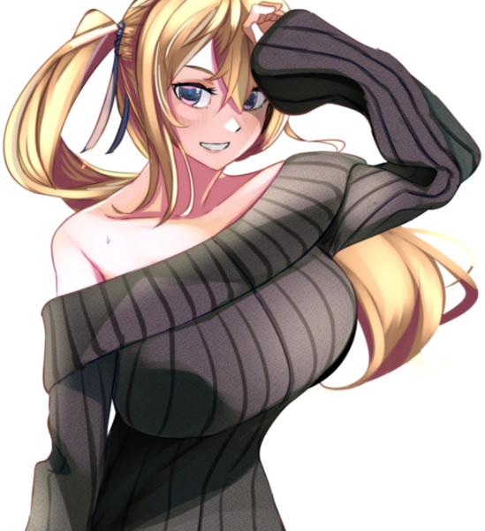

メインログ / 雑談ログ
シナリオ1：「Devil's_Alliance」
シナリオ2：「Blastic Crisis」
キャラシート
PC1：コーネリア (キャラシート) PL：LISPPC2：本野仁 (キャラシート) PL：カピバラ
PC3：サテライト (キャラシート) PL：ふろずん
PC4：佐月零 (キャラシート) PL：めい
PC5：糸金助人 (キャラシート) PL：紫閃
目次
■オープニングフェイズ01 ダークナイト
02 理想の果て
?? 真相の果て
03 騎士の蹂躙
04 廻り出した歯車
05 妄執の正体は
■ミドルフェイズ
06 チーム
07 不滅の存在
08 手がかり
09 情報収集
10 理想の世界
11 ノーマルの支配
12 アルターエゴ
13 ヒーローである理由
14 オーヴァードの支配
15 そして幕は上がる
■クライマックスフェイズ
16 The Dark Knight Falling
■エンディングフェイズ
17 終幕
18 ヒーローの未来
19 戦い続ける者たち
20 不死身の英雄
21 英雄なき日々
22 物語は続く
メインプレイ
シーン1 ダークナイト
東京 市街地
GM : 夜、降りしきる雨の中。ダークナイトが佇んでいる。

GM : 足元には血溜まり。それは周囲に広がっており、傷ついたヒーローたちが倒れ、うめいている。
GM : ──すべて、ダークナイトに倒されたヒーローだ。
GM : 倒れているヒーローらが、呻きながらつぶやく。
男ヒーロー : 「な、なんという強さだ…これが、No1ヒーローだった男の実力か……」
女ヒーロー : 「くっ…この強さ、本物のパラディンね……」
悪魔ヒーロー : 「まさか、このディアボロスがここまで歯が立たないとは…強すぎる……ッ！」
GM : ……そんなヒーローたちを一瞥もせず、ダークナイトは無言でその場を去っていった。
GM : ──翌日の新聞の1面には、どの新聞社の物もでかでかと倒れたヒーローたちが映った写真が載っている。
GM : 記事には「なぜあのNo1ヒーローがヴィランに！？」「次々と襲われるヒーロー！誰もダークナイトには勝てないのか！？」と、人々の不安を煽るかのように大きく見出しに書かれていた。
GM : ……しかし、それらは全て事実だ。No1ヒーロー・パラディンは悪に手を染めた。そして、彼に敵う者は誰ひとりしていない。
GM : …今の所は。
シーン2 理想の果て
■PC1：コーネリア
ロイス：パラディン
推奨感情 P:憧憬/N:悔悟
No1ヒーローであったパラディンは、悪の仮面を手にとってヴィランとなった。
今はダークナイトと呼ばれ、キミたちヒーローに敵対する存在となってしまった。
今度出会うときは、彼は憧れのヒーローなどではなく、敵となる。
果たしてキミは、彼と全力で戦えるだろうか？
コーネリア : 1d10+33 (1D10+33) ＞ 4[4]+33 ＞ 37
東京 思い出のカフェ
GM : 今となっては遠くなってしまったいつかの日。
GM : コーネリアは、パラディン……いや、スーツを脱いだ彼、"的場敬吾"と共に都内のカフェを訪れていた。
GM : 昭和に迷い込んだかのような、ブラウンが基調となったカフェの隅で小さなテレビがパラディンの活躍を映している。

パラディン : 「大丈夫だ。ここからはもう、誰も死なせない」
GM : 誰もが安心し、「正義は勝つのだ」と信じたであろう彼の決め台詞に、善良な市民たちが湧く。
GM : そのテレビに映る人物が、コーネリアの前で優雅にコーヒーを飲んでいた。
コーネリア : 「どこに行っても"パラディン"の活躍で持ち切りね～」 どこか楽し気に口を付けていたカフェモカを置く。
コーネリア : 「それにしても……」 テーブルに肘をつき手の甲に顎を載せて、休日の”パラディン”の姿を見る。
コーネリア : 「千両役者はスーツを脱いでも絵になる、ってわけ」
コーネリア : 優雅にコーヒーを飲むその姿を見てため息をつく。
的場敬吾 : 「む……それを君に言われるのは、非常に光栄なことかもしれないな。自分ではスーツを脱げばただのおじさんだと思っていたが」
的場敬吾 : 普段生真面目にヒーローをやっている彼が見せないような表情で、冗談めかしたように微笑む。
コーネリア : 「あら、そういうジョークも言うのね？ 素顔のあんたは」
的場敬吾 : 「私だって人間だ。オフの時くらいあるさ」
的場敬吾 : 「君は……いつ会っても、どこで見ても君のままだな」
的場敬吾 : そう、テレビの中で日焼け止めクリームのCMモデルを務めるコーネリアを眺めつつ返す。
コーネリア : 「当然！ ハリウッドスターは私生活もスターでなきゃいけないからね」 CMのポーズを寸分狂いなく再現してみせる
コーネリア : 快活なふだんのパーソナリティは一瞬で鳴りを潜め、映像の中の日本らしい乙女然とした少女の雰囲気を纏う。
GM : パラディンはコーネリアの纏う雰囲気の変化に、少し目をしばたたかせてからフフッと笑う。
的場敬吾 : 「……全く、君にはいつだって驚かされる。私生活も何も、君はありのままを生きているというわけか」
コーネリア : 「ありのまま、って言っていいのかしらね？ 私はいつも何かを演じて、それを見てくれる人がいないと生きられない人間だから」
コーネリア : 「ヒーローの私。女優の私。そして、いまここであんたとコーヒーを飲んでいる私……」
コーネリア : 「全部微妙に違うように見えるけど、人は自分の中に存在しないものを演じることはできないし、どの側面も否定するようなものじゃないわ」
コーネリア : 「……なんて、考えてもわかんないわよね。あ、おかわりくださーい！」
コーネリア : 明るく元気な様子は変わらないが、言葉の端からは”コーネリア”という人間の一部分としてヒーローを務める等身大の少女の苦悩が垣間見える。
的場敬吾 : 「……」しばらく黙り、彼女の様子を見てから再度口を開く。
的場敬吾 : 「演じる、というのは決して悪い事ではない。それは役者ではない私も、そしてヒーローではない人々であっても当然している事だ」
的場敬吾 : 「それが社会で生きるという事だ。相手に合わせ、一番その場をより良い状態で保つのが人間という生き物なのだから」
的場敬吾 : 「……私もかつては、『本当の自分』とは何なのかと苦悩した日もあった。どう生きるのが正解なのか、何を最も大切にするのが『自分』なのか……」
的場敬吾 : 「……どう生きれば、後悔をせずに済んだのか」
的場敬吾 : 小さく息を吐き、首を振る。
的場敬吾 : 「……過去に囚われるのもまた、どうしようもない事だ。さて、話を戻そう」
コーネリア : 「”パラディン”にもあるんだね、そういう悩みは……」 頷いて、深く問いただそうとはしない
的場敬吾 : 「…私もまた、人間と言うわけだ」 肩をすくめて笑って見せる
的場敬吾 : 「君も言った通り、どの一面も否定してはならない。その全てが『本当の君』であり、君を応援する人々がいる事もまた真実なのだから」
的場敬吾 : 「ただ……これはお節介かもしれないが」
的場敬吾 : 「君は生粋の役者で、ヒーローで、そしてまだ16歳の少女でもある」
的場敬吾 : 「そんな君の全てを理解し、支えてくれる人を身近に作ると良いだろう。性別も年齢も人種も、誰だって構わない。人数も多ければ多いほどいい。ただ、君が信じられる人を傍に置きなさい」
的場敬吾 : 「……できるだけ長い間、君と共に歩んでくれる人をな」
的場敬吾 : そう、まるで実の娘に向けるかのような慈しみの籠った声で伝える。
コーネリア : 「簡単にできることじゃないわね。でも……」
コーネリア : 「ヒーローの大先輩がそう言うなら、頑張ってみようかしら」 年相応の、不完全性に満ちた笑顔でそう答える。
的場敬吾 : そんなコーネリアの姿を見て、安心したようにうなずいて見せる。
的場敬吾 : 「ああ。もしそんな仲間ができたなら、私にも報告してくれると嬉しい」
コーネリア : 「オーケイ、きっと一番に報告するわ！」 親指を立てる
GM : そんなやり取りをしているうちに、店員によって「お待たせいたしました」とコーネリアの注文したカフェモカがテーブルに置かれる。
GM : 優しいミルク色ととろけるようなブラウン、そして窓から差し込む暖かな光。
GM : その記憶も、今となってはセピア色に滲んでしまった。
コーネリア : 「――バカね。ここに来たって、時間が戻るわけじゃないのに」
コーネリア : あの日と同じ昭和レトロの雰囲気を纏ったカフェの片隅で、一人つぶやく。
コーネリア : どのチャンネルも、今は”ダークナイト”の話題で持ち切りだが、ニュースの内容は頭の中を右から左へ通り過ぎていく。
コーネリア : もともと日本での活動基盤を持たなかったコーネリアにとって、甲斐甲斐しく自分の面倒を見てくれた”パラディン”は、先輩ヒーローであると同時に歳の離れた兄のような存在だった。
コーネリア : 自分がどんなに速く走っても追いつけない、ずっと先を走る存在のように思っていた。
コーネリア : 「……違う……本当はわかってたはずなのに」
コーネリア : 彼も、自分と同じ迷える青年だった。外から見える強い部分と同じくらい、弱い部分だってたくさん持っていた。
コーネリア : ずっと近くで彼を見ていた、天才役者である自分が、一番それをわかっていたはずだったのに。
コーネリア : 大粒の涙が、冷めきったカフェモカの中に零れ落ちる。
コーネリア : 彼が己の過去を後悔したあの時、もっと自分が踏み込んでいれば、違う未来があったのだろうか？
コーネリア : ……そんな迷いを振り払うように、涙を拭って一気にカフェモカを飲み干す。
コーネリア : 「はは……しょっぱい。あの時と全然違う味だ……」
コーネリア : 時間は伸びたり縮んだりするが、過去には戻らない。どんなに速く走るヒーローでも、それは変えられない。当たり前のことをコーヒーの味から教わって、左右の頬を思いっきり両手で叩く。
コーネリア : じじっ、と髪留めが焦げ落ち、ブロンドの髪がばさっと開いた。
コーネリア : 「行こう……時間は待ってくれない」
シーン? 真相の果て
？？？
GM : "探索者"本野仁は、何処とも知れない真っ暗な空間に迷い込んでいた。
GM : ここは何処なのか、自分は何をしているのか。そもそも地面に足はついているのだろうか。それすらもわからない。

本野仁 : 「うーん...ここは一体...？」 周りを見渡すも果てしない闇が続いている
本野仁 : 「実体はあるようですが...」 こぶしを握りっては放すを繰り返し自身の存在を確かめる
本野仁 : 「ま、とりあえず動いてみますか。案外出口が見つかるかもしれないし」 慣れない感覚に戸惑いつつも一歩ずつ進んでいく
本野仁 : とまあこんな感じで何かないかなーって感じでうろうろしてます
GM : では、底知れぬ闇の中、行方も分からず歩き続けると。遠くの方に人影が見えます。
本野仁 : 「おやあれは...っ...同じ迷子の方ですかね」刹那の間嫌な感覚に襲われるも人影のほうに歩み寄る
GM : 近寄ってみると、そこに居たのは黒装束を身に纏った女でした。その女は、振り返る前に貴方に話しかけてくる。
？？？ : 「呆れた。こんな所に逃げ込んでいたのね」
？？？ : 「誰のお情けでここに来たのかは知らないけど…」
？？？ : くる、と振り返る彼女の顔は……なぜか、見えない。靄がかかったような、意識に蓋がされているような妙な感覚を覚える。
本野仁 : 「ええと、あなたは？どこかでなんとなーくあったような気はするんですけど...」 頭の中で考えるもはっきりとした答えが浮かんでこない
？？？ : 「貴方が思い出せるはずもないわ。貴方は所詮『彼』の出来損ない。こぼれ落ちてしまった魂のレプリカなのだから」
？？？ : 失望……いや、端から期待などしていなかったのかもしれない。平坦な声で、そう返す。
？？？ : 「自分の出自に疑問も持たず、今後も平穏な暮らしを送れると信じて疑わない貴方には出来ない事よ」
本野仁 : 「む、いきなり人を出来損ない扱いとは失礼ですね」
本野仁 : 「一応”探索者”ですよ、自分の生まれにだって調べたことはあります」
本野仁 : 「ただ、自分の元なった人は既に死んでいることしか分かりませんでしたけどね。あとこの名前もですか」
？？？ : 「その『元になった人』って誰？死因は？『分からなかった』、それで済ませてそれで満足なのね？」
？？？ : 「……本当に呆れた。やっぱり、貴方は出来損ない。探索者(たんさくしゃ)ではない」
？？？ : 「"パラディン"…だったかしら？彼が真相に至ったその後を貴方は見たというのに、何も感じなかった？」
？？？ : 「真相を知るのが、怖くなっちゃった？」
？？？ : 彼女は、貴方に向かって矢継ぎ早に語りかけてくる。
本野仁 : 「そんなことありません！まだ全部が明らかになってないだけ！探し続ければいつかはすべてが分かるんです！」 声を大きくして反論するも虚栄であることはすぐにわかる
本野仁 : 「真相が明らかになるのが怖くなんか...」 ブラスターの真相を知ったパラディンの末路がよぎり勢いが止まってしまう
本野仁 : 「っ...！それでも自分は...！」 再びこぶしを握り自身を奮い立たそうとするもその腕がヒトではない何かになっているのに気づいていない
？？？ : 「それでも……何？知らない方が幸せかしら？ルーツとはどんどんかけ離れ、何者でもなくなってしまったと言うのに」腕をちら、と見やる
？？？ : 「それならどうぞ、永久に覚めない都合の良い夢を」
GM : 刹那、脳裏にザザッとノイズが走る。
GM : 『あの日』聴いた激しい雨音。ナイフ。バスタブを満たす鮮血。
GM : 間違えた。間違えた。
GM :
塔のように聳え立つ、円錐の頭部を持つ人型の怪物。触手。邪神。世界を嘲る笑い声。
GM : いつの間にか、目の前から少女は消えていた。身体は、意識はずぶずぶと沈む。昏く、深い闇のうちに。
？？？ : 「『彼』は真相に辿り着けなかった。貴方も、きっとそれは同じ事」
GM : ………
GM : …ぴぴっ！ぴぴぴぴっ！
GM : 間抜けな電子音に、貴方の意識は再度覚醒する。
GM : 目の前は暗い。だが、今回は空間が暗いのではなく、目の前に『何か』がいる。もふっ、ふわっ。
マシュ : 「きゅふん…ハッハッハッ…」
GM : それは、貴方の愛犬のマシュだった。こちらにお尻を向け、胸の上でもちもちと足踏みをしている。可愛いが、正直ちょっと苦しい。
本野仁 : 「いや...自分は...！」 空に手を伸ばすと同時に目が覚める
本野仁 : 「もう、乗っかかられたせいで嫌な夢見ましたよ」 ついさっきまで飼い主が感じたことなど関係ないかのように呑気にのしかかる飼い犬に呆れながらも反対の手で頭をなでる
マシュ : 「…！ハッハッハッ！」そんな飼い主の苦労を知ってか知らずか、主の目覚めに嬉しそうに舌を出して、手に頭を擦りつけてくる。
GM : と、そうして飼い犬を構っていると、ヒーローとして活動する際に使用している端末から着信音が鳴る。
GM : 画面に表示されている名前は「霧生冴花」、警視庁ヴィラン課の課長だ。
本野仁 : 「まったく、休む暇もないですね」 なでるのをやめて端末を取り着信を受ける

霧生冴花 : 「おはようございます。"探索者(サーチャー)"の端末で間違いありませんね」
本野仁 : 「ええ、"探索者(サーチャー)"...で合ってますよ」
霧生冴花 : 「……？」妙な返事に少し首を傾げる雰囲気が伝わる。
霧生冴花 : 「…いえ、失礼いたしました。本題に移ります。大変急で申し訳ありませんが、至急警視庁ヴィラン対策課までいらしていただけますか」
霧生冴花 : 「"パラディン"……いえ、"ダークナイト"の件について、ご相談させていただきたい事があります」
本野仁 : 「...はい、問題ないです、すぐに行きます」 ダークナイトの名が聞こえると少し声のトーンが下がる
霧生冴花 : 「ありがとうございます。では、後程」
GM : 電話が切れる。
本野仁 : 「じゃあ出かけるのでいいこにしていてくださいね」 分かった？と問いかけるようにマシュの頭をなでるて部屋のドアを開けて外へ向かう
本野仁 :
丁度ダークナイトの話が来て内心ほっとしている
先ほどの少女の言葉、それをしばらく考えなくて済むのだから──
シーン3 騎士の蹂躙
■PC2：本野仁
ロイス：コーネリア
推奨感情 P:信頼/N:不信感
Mrコバルトの計画により、パラディンは、今やダークナイトを名乗るヴィランとなった。
次々とヒーローを襲撃し、叩きのめしているという。
ダークナイトの目的とは、一体なんなのだろうか。
そして、「パラディンの後継者」であったコーネリアは、彼と戦えるのだろうか……。
本野仁 : 40+1d10 しんしょくー(40+1D10) ＞ 40+9[9] ＞ 49
警視庁ヴィラン課 課長室
GM : 警視庁ヴィラン課、課長室。
GM : 君は、その部屋で霧生冴花と二人きりで対峙していた。
GM : 霧生は、傷つき倒れたヒーローたちの画像を何枚も提示する。
GM : 写真には新米ヒーローもいれば、歴戦のベテラン、名のあるトップヒーローまでいる。
霧生冴花 : 「…本題に移ります。貴方もご存じのように、"ダークナイト"……そう名乗るヴィランによる、ヒーローの襲撃事件が続いています」
霧生冴花 : 「正義の味方であった彼は失墜し、ヒーローなら誰でも、手当たり次第に痛めつけている……という感じです」
本野仁 : 「そうですね、ブラスターの死によって彼は変わってしまった...」
霧生冴花 : 「ええ。もはや彼は"パラディン"ではない」首肯して
霧生冴花 : 「自分の強さを誇示しているようにも見えますが……何を考えているのか、現時点では見当もつきません」
霧生冴花 : 「……ですが。どのような事情があれど、我々としてはこのまま被害の拡大をただ見ている事はできない」
霧生冴花 : 「そこで、貴方にお声がけさせていただきました」
霧生冴花 : そう、本野を見つめる。
本野仁 : 「自分ですか...その理由を聞いても？」
霧生冴花 : 「はい」頷き
霧生冴花 : 「我々警視庁は、"ダークナイト"に対抗できるヒーローたちとして、デビルズ・アライアンス事件のチームメンバー……貴方を含めた5人を選出しました」
霧生冴花 : 「我々からの依頼はただ一つ。"ダークナイト"を止めてください。……手段は、問いません」
霧生冴花 : 「危険な任務ですが……お返事をいただけると幸いです」
本野仁 : 「断る理由もありません、引き受けましょう」 過去の事件で共に戦った4人の顔を思い出す
霧生冴花 : 「……ありがとうございます」立ち上がり、深々とお辞儀をする。
霧生冴花 : 「後程、他のメンバーにもこの事を伝えておきます。……こちらから伝えられることは以上です」
霧生冴花 : 「他、質問等はありますか？」と尋ねてくる
本野仁 : 「いえ特には...」 少し上の空の様子
霧生冴花 : 「……わかり、ました。何か悩み等あれば、またご連絡ください」その返事に少し心配する様子を見せつつ、本野の返事に頷いて見せる。
霧生冴花 : 「それでは、ご武運を」
シーン4 廻り出した歯車
■PC3：サテライト
ロイス：霧谷雄吾
推奨感情 P:誠意/N:食傷
パラディンが姿を消して、数日が経過した頃。
キミは、霧谷雄吾に呼び出された。
彼が言うには、ダークナイトによって、UGNの研究施設から、あるカプセルが奪われてしまった。
それは、ノーマル（非オーヴァード）にとって危険な存在だという。
ヴィランとなった彼を、止めなければならない。
■PC4：佐月零
ロイス：ナイチンゲール
推奨感情 P:親近感/N:敵愾心
ヴィラン、ダークナイトとなったパラディン。
彼はもうジャーム化している。
ナイチンゲールとともに、ダークナイトに倒されたヒーローを治療するキミには、それが確信できた。
キミの友人、ロボがそうであったように、ジャームとなった者はもう戻れない。
コーネリアに、その覚悟はあるだろうか……。
サテライト : 1d10+45(1D10+45) ＞ 10[10]+45 ＞ 55
佐月零 : 1d10+39(1D10+39) ＞ 4[4]+39 ＞ 43
マンション 佐月零とサテライトの部屋
GM : 某日。"アルターエゴ"の住処である、マンションの一室にて。

サテライト : 「……ん～」
サテライト : ここ数日のサテラの様子は明らかにおかしい。
サテライト : “あのサテラ”が手作りプリンを気にも留めず、
サテライト : 一人きりでスマートフォンとにらめっこして、うんうんと唸りながら、頭を捻っているのだ。
サテライト : ──サテラは元々、興味を持った事柄について気が済むまで調査しようとする性質はあった。
サテライト : しかし、それでも、今回は異常だ。 “あのサテラ”がプリンに手を付けようともしないなんて。

佐月零 : 「……おい、サテラ」 スマホを操作するサテラへと後ろから近付いて声をかける
サテライト : 「……ふ～」
サテライト : 「なんだ？ レイ？」
佐月零 : 「プリン作ったぞ。今日もいらねえのか」 手に持ったトレーの上には二つのカップが並んでいる
サテライト : 「そうだな、それも今はいい」
佐月零 : 「…………」
佐月零 : トレーをテーブルの上に置き、溜息をつきながら椅子に座る。
佐月零 : 「……お前、なんか最近おかしいぞ」
サテライト : 「君がそう思うのならそうなのだろうな」
サテライト : ……先程までの思索も漸く終わったのだろうか、サテラは急に立ちあがり、軽く伸びをした。
佐月零 : 「ま、いいけど……」 プリンをスプーンで掬って
佐月零 : 「調べごとは終わったのか？」 一口食べる
サテライト : 「ああ、もう十分な情報は得たよ」
サテライト : 「今回の事案に関する一般市民とヒーロー業界の反応についてはな」
佐月零 : 「パラディンがヴィランになったことのか？んなこと調べてたのか」
サテライト : 「ああ、必要な調査だったのでな」
佐月零 :
「なんで」
テレビでも一般市民の反応はある程度見れてるので、不機嫌そうにプリンを食べる
サテライト : 「…………」
サテライト : 「そうだな、強いて言うならば未来のためだよ、レイ」
サテライト : そう言いつつ、サテラはごそごそと自分のバッグを漁りはじめた。
サテライト : 「──まあ、それはともかく」
サテライト : そして、今度は何をするのだろうと様子を窺っていると、サテラは徐にカメラを取り出した。
サテライト : そのデジタルカメラは、デビルズアライアンス事件（一話）後、あなたが買い与えたものだ。
サテライト : 少しばかり値が張ったが「ロボに近況報告をするためだ」とねだられては断れなかったのだ。
サテライト : 以来、サテラはそれを常に肌身離さずに持ち歩いている。
サテライト : 堂々と撮影禁止の場所に持ち込んでいたことさえあった。 ……余談だが、その時は監督不行届であなたが怒られた。
サテライト : 当初は気になるものならパシャパシャとどこでもなんでも手当たり次第に撮っていたのだが、
サテライト : その道のプロであるジェイミー西崎に写真の撮り方を習ってからは、カメラの扱い方もそこそこサマになってきた。
佐月零 : 「……？なんだ、何か撮んのか？」 プリンを食べ終わる
サテライト : 「ああ、外出先で二人で撮る事はあっても、この部屋で二人で撮るのは今までなかったろう？」
佐月零 : 「あ？二人で？今ここで撮るってのか？」
サテライト : 「そうだが、何か不満か？ 化粧でもしたいのか？」
佐月零 : 「誰がするか！！」
佐月零 : 「ったく、しょうがねえな……別に不満とかじゃねえよ」
佐月零 : 「でも、いきなりなんで思い立ってるんだ？」
サテライト : 「なんで、と言われてもな」
サテライト : 「私自身も言語化できないから困る」
佐月零 : 「なんだそりゃ。ま、撮るならさっさと撮ろうぜ」
サテライト : 「……そうだな」
サテライト : 「あ、レイ、笑顔でポーズだぞポーズ」
佐月零 : 「ああもう、分かった分かった」
佐月零 : 軽く笑顔を作って、ピースをする
サテライト : 「ピースはありきたりすぎてつまらん、撮り甲斐がない、却下……というかピース(平和)でも何でもないじゃないか現状」
佐月零 : 「どうしろって言うんだよ！じゃあどんなポーズして欲しいか言ってみろ！」
サテライト : 「ふむ、そうだな…」
サテライト : 「では、こうしよう」
サテライト : サテラはあなたの右隣に並び立つと、手でハートマークの片側を作ってみせた
サテライト : 「以前、メイド喫茶とやらにプリンを……ではなく、テレビか何かで見たポーズだ」ﾑﾀﾞﾝﾃﾞ ﾒｲﾄﾞｷｯｻ ﾆ ｲｯﾀﾉｶﾞ ﾊﾞﾚﾙﾄｺﾛ ﾀﾞｯﾀｿﾞ…
佐月零 : 「却下」 即答してサテラの手を軽くはたき落とす
サテライト : 「え～……、つまらん男だな君は～……」ぶー
佐月零 : 「こんなんやるくらいならつまらん男で良いわおれは！！」
佐月零 : 「あぁもう、ピースで良いだろピースで！世の中が平和だろうとなかろうとこういうのはピースで良いんだよ！！」
サテライト : 「こんなんと言ったが、おっぱいプリンもこのポーズしてたぞ」口から出任せ
佐月零 : 「何っ……」
佐月零 : 「それどこでやって……！いや、まあ、そういう仕事だってあるか……」
佐月零 : 「ともかく、かわいい女の子がやるならまだしも、おれがやるのはなんか違うんだよ！」
サテライト : 「えっ、君、以前は自分の事をかわいいと…………」
佐月零 : 「あ、あれは勢いでだなぁ！！……あーもう、ごちゃごちゃ言わずにさっさと撮れ！！」
サテライト : 「それもそうだな、それじゃあ、左側のハートを作ってくれ、ピースじゃないぞハートだぞ」
サテライト : 「もしくは横向きにしたピースを組み合わせてSマークにでもしておくか？」
佐月零 : 「あぁ！？なんだよピースを組み合わせるって……！」
佐月零 : 「……結構アリか？」 想像してみて
サテライト : 「Sマークは“サツキ”と“サテライト”の頭文字という点から、私達のトレードマークのようになってきているし、ハートに抵抗があるならそれでいこう」
佐月零 : 「そうだな……悪くねぇ気がしてきた」
佐月零 : 「よし、じゃあそれでやるか！」
佐月零 : そう言って、ピースした指を横向きに傾ける
サテライト : 「よし、その調子だ」
サテライト : サテラは少し背伸びしながら片手でカメラを掲げ、自分たち二人に向ける。
サテライト : 「それじゃあ次は、君の人生で最高の笑顔をこの一瞬で作ってくれ」
佐月零 : 「無茶言うな！」
サテライト : 「だが、おっぱいプリンなら難なくこなすぞ？」
佐月零 : 「一々コーネリアを引き合いに出すな！」
サテライト : 「そうだな…、考えてみれば、コーネリアは女優、レイはプリン職人だものな…」
佐月零 : 「プリン職人でもねえよバカにしてんのか！？」
佐月零 : 「……あぁもう分かった分かった、やってやるからさっさとシャッター切れ！！」
サテライト : 「ふふっ、ならば、いまの君ができる最高の笑顔をくれ」その様子を見ておかしそうに
佐月零 : 「うるせぇ！世界一の笑顔見せてやるわ！！」
サテライト : 「今度はまた随分と大きく出たな？」
サテライト : 「では、その世界一の笑顔をカメラに向けて……3、2、1」
佐月零 : 「……！！」 力が入り過ぎてめちゃくちゃぎこちない笑顔を作る
サテライト : 「──はい、プリン」パシャッ
佐月零 : 「……よし、どうよ」
サテライト : 「ん～」
サテライト : 「…………この笑顔が世界一？ よくそんなドヤ顔ができたな君？」
佐月零 : 「んだと！？見せてみろ！」 カメラを覗き込む
サテライト : 高性能なデジタルカメラのディスプレイには、ある種の威嚇のような酷く不自然な笑顔を浮かべているあなたが写り込んでいた。 その反面、隣にいるサテラはごくごく自然な笑みを湛えている。
佐月零 : 「…………」
佐月零 : 「よし、世界一だな」 目を逸らしながら
サテライト : 「マジかレイ」
佐月零 : 「マジだ。どう見てもおれの方が良い笑顔してる」
サテライト : 「本気で言っているなら、シャックルズかディアボロスにいいメガネ屋を紹介してもらうといいぞ……」
佐月零 : 「…………」
佐月零 : 「……言ってねーよ……何だこの写真、かっこわる……」
佐月零 :
「消去してくれ……」
ムキになったのを後悔したのか、疲れた溜息をつく
サテライト : 「ふふふふ、いやいや、これを消すのは勿体ない」
サテライト : 「これはこれで面白いじゃないか、おっぱいプリンにも見せるといい」
佐月零 : 「見せれるわけねぇだろーが！さっさと消せ！！」
サテライト : 「断る！ 逆に永久保存してやろう！」
佐月零 : 「ふざけんなサテラ！ちょっとカメラ貸しやがれ！！」 キレながらカメラに手を伸ばして
サテライト : 「はは、それはレイでも出来ない相談だな！」背伸びしたり屈んだり影に入ったりして躱す
佐月零 : 「こいつ……ッ！！」 伸ばした手は何度も宙を掴み続ける
GM : …と。2人がカメラの奪い合いをしていると、零の端末に着信が入る。
GM : 画面には、内閣府のR対策室室長・霧谷雄吾の名前が表示されている。
サテライト : 「おっとアブナイアブナイ……それより、こんな事をしていていいのか？ 着信だぞ？ それも内閣府からだぞ？」
佐月零 : 「なぁ！？こんな時に……！」 端末を睨みつけて
佐月零 : 「あとで絶対写真は消すからな……もしもし！？」 通信に出る

霧谷雄吾 : 「も…もしもし？"アルターエゴ・ゼロオーバー"ですね……今、お時間いただいても大丈夫でしょうか？」普段聞かないような剣幕の声に、思わずたじろぎつつ尋ねる
佐月零 : 「あぁ、すんません……大丈夫です大丈夫です。ちょっとバカの相手してただけですから」 サテラを睨みつけながら
サテライト : あなたの睨みつけを、サテラは悠々と笑顔で流した
霧谷雄吾 : 「ああ……」何やら察した様子で、「お疲れ様です」と貴方を労う
霧谷雄吾 : 「では、本題に移らせていただきます。"ダークナイト"による一連の事件について、また新たに深刻な問題が起きた為、それに関する調査を依頼したくご連絡を差し上げました」先ほどまでとは打って変わり、真剣な声色で。
佐月零 :
「……ダークナイト」
その名を聞いた瞬間、さっきまで抱いていた怒りが消える
佐月零 :
「深刻な問題って、何が起きたんですか？ ……サテラ」
端末をスピーカーフォンにして、二人で聞けるようにする
サテライト : 「ん、矢張りダークナイトについての話か」
佐月零 : 「あぁ……」 端末をテーブルの上に置く
霧谷雄吾 : 「詳細について、ここではお話しできませんが……先日、UGNの研究所が彼によって襲撃され、『ある物』が持ち出されました」
霧谷雄吾 : 「その持ち出された物品が問題で……すみません、通信が傍受されている可能性もある為、あとは対面でお話しさせていただいてもよろしいでしょうか」
佐月零 : 「ある物……？分かりました、もちろん大丈夫です」
霧谷雄吾 : 「ありがとうございます。では、お二人の都合の良い時間帯にR対策室までご出頭願います」
霧谷雄吾 : 最後に「よろしくお願いします」と付け加えた後、霧谷は通信を切る。
サテライト : 「……出頭願います、と言われると、私達が何か悪い事をしたように感じてしまうな」肩を竦めて笑う
佐月零 : 「いやお前、今のはそういう意味じゃ……」
佐月零 : そう言いかけて、自分達がブラスターを救うことが出来なかったあの瞬間を思い出す。
佐月零 : 「…………」
佐月零 : 「……とにかく、行くぞ」
サテライト : 「ああ、そうだな、UGNの杜撰な管理体制こそ悪い事だろうと指摘しにいこう」
佐月零 :
「文句言いに行ってどうすんだよ、ったく……」
呆れたように言って、ヒーロースーツに着替える
佐月零 : 準備を済ませると、サテラと一緒に部屋を出てR対策室へと向かいます。
R対策室 室長室
GM : では、R対策室の室長室に場面を移します。
GM : 部屋の中には、部屋の主である霧谷雄吾、そしてサングラスをかけた男……UGN日本支部長、藤崎弦一も同席していた。
霧谷雄吾 : 「…では、本題に移らせていただきます。先程軽く触れさせていただきましたが…」
佐月零 : 「お願いします。パラディンに奪われたものって一体……？」
藤崎弦一 : 「ああ。……奴が持ち去ったのは、あるカプセルだ」藤崎が言葉の後を継ぐ
藤崎弦一 : 「肝心の中身については未だ不明だ。ご丁寧に研究所のデータベースも破壊してくれた上に研究者も全員重症と来たからな、詳しい事は調査中だが…」
藤崎弦一 : 「現状で確かなのが、ノーマル…つまり非オーヴァードにとって非常に危険なもの、という事だ」
サテライト : 「ふむ、オーヴァードではなくノーマルに対してのみか」
佐月零 : 「んん……おれ達が真っ先に思い当たるのはレネゲイド活性剤だが……」 ロボのことを思い出して小さく唸る
佐月零 : 「それよりももっと危険な代物か……？」
霧谷雄吾 : 「その物がどれだけ危険な物かについて、現状で把握しきれているわけではありません。が…」しばらく逡巡したのち、再度口を開く。
霧谷雄吾 : 「……ダークナイトの標的が、ヒーローのみではなく非オーヴァードの一般市民をも含んでいると言う事実そのものが恐ろしい事であると感じます」
サテライト : 「必死で守ってきた市民にクルリと手の平を返され、あのようにバッシングを受ければ、標的にそれらが含まれるのはムリもないだろう」
佐月零 : 「……ただバッシングされたから、とかそんな単純な理由ならまだマシなんだけどな……」
霧谷雄吾 : 「…真相については、未だ不明のままです。ですが、我々としては最大限市民を守るべく奮闘させていただきたく思います」
霧谷雄吾 : 「だからこそ、貴方方のお力をお借りしたい」真剣な眼差しで2人を見る。
佐月零 : 「あぁ。じゃあ、おれ達の仕事はそのカプセルの調査……。それと、パラディンからカプセルを取り返すってことですね」
霧谷雄吾 : 「その通りです。あるいは、既に使用されていた場合はその対処をお願いしたく存じます」
佐月零 : 「分かりました。サテラもそれで良いな？」
サテライト : 「……いや、そうだな、では先にひとつ質問を」
霧谷雄吾 : 「どうぞ」サテライトを見て。
サテライト : 「ダークナイトを始末しろ、とは言わないのか？」
佐月零 : 「なっ……お前、始末って……！」
藤崎弦一 : 「…随分直接的な物言いをするな」
サテライト : 「オブラートに包み隠すだけ時間のムダだろう？」
佐月零 : 「……あのなぁ、サテラ。時間のムダとかそういう問題じゃねえだろ」 少し怒ったように睨みつけて
佐月零 : 「一体いつからヒーローは殺し屋になったっていうんだ？」
サテライト : 「…………」
サテライト : 「確かにそれはそうだな」
佐月零 : 「ヒーローはヴィランを止めるために戦うんだ。殺すことが目的で戦ったりしねえ」
佐月零 : 「最初から殺すために力を振るうなんて、そんなもんヴィランと同じだ」
佐月零 : 「だからおれ達ヒーローは、たとえどんな悪党が相手でも殺したりなんてしねえ……」
佐月零 : 頭の中に再び、ブラスターが死んだ時の光景が蘇る。
佐月零 : 「……殺しちゃ、いけねえんだ。そういうもんだろ、サテラ」
サテライト : 「ダークナイトを相手取るならば、全力で立ち向かわなければ勝機はない、ほとんど殺し合いに近いものになるだろう……そう考えて“始末”という言葉を使ったが、確かにそれはヒーローに命じるものではなかったな」
佐月零 : 「そういう意味で言ったのかよ……まあ、分かってりゃいいんだ」
サテライト : 「……と話の腰を折ったな、続けてくれ胃がキリキリ谷」
佐月零 : 「失礼だろうが！！」
霧谷雄吾 : 「ハハ…いえ、あながち間違いではありませんので」苦笑いして
サテライト : 「元はと言えばUGN側の失態なのだから、多少のシツレイはいいだろう。 ……まあ、それも、UGNの情報を握っている元No.1ヒーローが襲ってきたとなれば、仕方のない話だろうが」
佐月零 : 「ほんと甘やかさずに怒ってくれていいんすよ……」 片手で顔を覆ってる
藤崎弦一 : 「……」本当に失礼な奴だな、と思いつつ何も言わない。
サテライト : 「……」この藤崎とかいう奴はなんで室内でサングラスかけてるんだ、と思いつつ何も言わない。
霧谷雄吾 : 「いえ…こちらも依頼をしている身ですので」暗に教育は任せた、って態度を取り
霧谷雄吾 : 「…さて。話を戻しますと、事実、ダークナイトの対処については今もヒーロー複数人に依頼をしています」
霧谷雄吾 : 「彼らがダークナイトに敗北したならば、貴方方にもその依頼が来るかもしれません。…ですが、現時点ではお二人にはカプセルに関する依頼に集中していただきたいと思います」
霧谷雄吾 : 「…何しろ、今回紛失したカプセルは物が物です。もし表沙汰になったならば、一般市民の動揺は計り知れないものとなるでしょう…だからこそ、信頼できるヒーローであるお二人にお願いさせていただきたいのです」
佐月零 : 「……分かりました。ヒーローとして、その信頼に応えます」
サテライト : 「カプセルが最優先だな、理解したよ」
佐月零 : 「既に使われたカプセルの対処をするにしても、パラディンから取り返すにしても、まずはカプセルの内容が何なのかを調べるところから……か」
佐月零 : 「じゃあ、さっそく動きます。行くぜ、サテラ」 席から立ち上がる
サテライト : 「ああ」
霧谷雄吾 : 「よろしくお願いします」
藤崎弦一 : 「…頼んだ」退出する2人の背中に声をかける。
佐月零 : 二人に一礼して、部屋から出て行こう！
東京 市街地
GM : では、2人がR対策室を出てから数分後。再度、零くんの電話に着信が入ります。
佐月零 : 「ん？もしもし？」 電話に出ます

ナイチンゲール : 「ああ、出たね。悪いが、すぐにこっちに来てくれないかい。人手が足りなくてね」
GM : “ナイチンゲール”阿見寺ひとえだ。普段よりも気持ち焦りを帯びた声色で、あなたにそう問いかけてくる。
佐月零 : 「ナイチンゲール。人手が足りないって、一体どうした？」
ナイチンゲール : 「パラディン…ああいや、今はダークナイトか。アイツがまたひと暴れしたもんでね、ヒーローがそれはもう大量に運び込まれているのさ」
ナイチンゲール : 「おかげで病院はてんてこ舞いさね」
サテライト : 「ふむ、今日は先が永くなさそうな奴からよくかかってくるなレイ」
佐月零 : 「失礼なこと言ってる場合か！」
佐月零 : 「あー、でもおれ達も今仕事が……」 と、少し考えて
佐月零 : 「……いや。分かった、すぐに向かう」
ナイチンゲール : 「…悪いね。ピークさえ過ぎればすぐに帰すから」よろしく頼んだよ、と言い残してナイチンゲールは通信を切ります。
佐月零 : 「サテラ、病院に行くぞ。パラディンにやられたヒーローの治療が追いついていないらしい」
サテライト : 「それは聞いていた」
サテライト : 「それよりも、てっきり君はヒーローの仕事を優先して断るものかと思っていたが？」
佐月零 : 「そうだな、おれも断ろうかと一瞬考えた……」
佐月零 : 「……でも、この目でちゃんと見ときてぇんだ。パラディンが何をしたのかを」
サテライト : 「……そうだな、それもいいだろう」
サテライト : 「それに、さっき頼まれた仕事とも無関係な行動でもないしな」
佐月零 : 「パラディン関係のことだし、それもそうか……。よし、今度こそ時間をムダに出来ねえ、行くぞ！」
サテライト : 「それもあるが、例のカプセルが既に使用されているならば、ナイチンゲールのいる病院にも既に担ぎ込まれた被害者がいるだろうからな」
サテライト : 「タクシー代くらいは出してもらえるだろうし、急ぐついでに、フィクションのように『飛ばしてくれ！』と言ってみて、実際はどの程度の速度を出すのか検証してみようじゃないか」
佐月零 : 「んな検証してる場合か！こっからだとそう遠くねえんだ、走っていくぞ！」
サテライト : 「走るのか…………」残念そうな顔
佐月零 : 「嫌ならおれの影の中にでも入っとけ！」 そう言って病院の方角へと走り出す
サテライト : 「ではそうさせてもらうよ」≪闇夜の烏≫を使って影もぐりーん
佐月零 : オーヴァード身体能力をフルに使って、病院まで真っ直ぐに向かいます！
東京 某病院
GM : では、程なくしてナイチンゲールの勤める病院に到着します。
GM : エントランスから入ると、そこには軽傷──と言っても、この程度の傷を負っているなら撤退を考える程度の物──を負ったヒーローが大勢座っている。
GM : 駆け出しの新人から名のあるトップヒーローたちまで……まるで、東京中のヒーローが集まったような有様だ。
GM : 二人が病院の奥へと進んでいく最中にも、その後ろから担架で担がれた重症のヒーローたちが大急ぎで運び込まれていく。
GM : あるヒーローの腕はひしゃげ、またあるヒーローは喉を潰されたのか、呼吸すらままならない様子で苦し気に首を抑えている。オーヴァードの力を以てしても、体の再生が追い付いていないのだ。
佐月零 : 「……ひでぇ。こんなの今まで見たことねぇ……」
サテライト : 「……まさかトップヒーロー達までいるとはな、いいやそれも当然か」
サテライト : 「比類なきNo.1ヒーローだった男が、侵蝕率を気にせずに破壊のためだけに力を振るえばな」
佐月零 : 「…………」 返す言葉も見つからず、痛々しそうに運ばれていくヒーロー達を見ている
GM : そうしていると、聞き覚えのある声が背後から飛んでくる。
ナイチンゲール : 「来てくれたんだね、ありがとう！悪いが、これから運ばれてくる急患を受け付けてはくれないかい…！」
ナイチンゲール : そこにいるのはナイチンゲールだった。普段の飄々とした雰囲気はなく、真剣な様子で二人に頼み込んでくる。
佐月零 : 「……！ナイチンゲール！あぁ、分かった！」
サテライト : 「そうだな、応急手当が関の山だが、それでも構わないのだろう？」
ナイチンゲール : 「ああ、専門的な事はこっちのスタッフに任せな。後の事はそこのナースに聞いとくれ！」そう言い残して、彼女は病院の奥へと消えていった。
佐月零 : 「あぁ……！よし、やるぞサテラっ」
サテライト : 「うむ」
サテライト : 「(そして、最も近い場所で見つめるといい……、パラディンが、ダークナイトが、この惨状を引き起こしているという真実をな……)」
GM : ……急患への対応がひと段落した後。二人の元にナイチンゲールがやってくる。
ナイチンゲール : 「本当にすまなかったね。でも、おかげで助かった」ありがとう、と頭を下げる彼女は、疲弊した様子ながらもしゃんと背筋が伸びている。まだまだ気を抜くつもりはないらしい。
佐月零 : 「……いや、役立てたなら……何よりだ」 少し疲れた声で
サテライト : 「それはいいが、今度は自分がベッドで寝なければならないような本末転倒にはならないようにな」
ナイチンゲール : 「まだまだ。アタシを誰だと思っているんだい」安心させるように笑って見せる
ナイチンゲール : 「……しかし、流石に酷いもんさね。まるで、あの頃……レネゲイドウォーみたいな有様さ」
佐月零 : 「レネゲイドウォー、か……」
佐月零 : 「あの頃と同じような被害を、本当にパラディンが一人で出し続けてるっていうのかよ……」
ナイチンゲール : 「……ああ。恐ろしい事にね」
ナイチンゲール : 近くにある自販機で購入したアイスココアを二人に手渡しつつ、言葉を続ける。
ナイチンゲール : 「ついさっき、UGNの方にあるラボからパラディンに関する解析結果の通達が来たよ」
佐月零 : 「解析結果……それって、侵蝕率とかのか……？」
ナイチンゲール : 首肯する。
サテライト : 「ふむ？」アイスココアか…と思いつつ
ナイチンゲール : 「残酷な事を言うよ。だがこれは真実だ」
ナイチンゲール : 一呼吸置き、
ナイチンゲール : 「パラディン……いや、ダークナイトは間違いなくジャーム化している」
ナイチンゲール : 「アタシたちの知っているパラディンは、本当に死んだという事さ」
佐月零 : 「……っ！！」
佐月零 : 肩が震え始め、抱え込んでいた怒りや悔しさが抑えきれなくなる。
佐月零 :
「……クソッ！！」
近くの壁を力任せに殴る。渡されたアイスココアは床に落ち、びしゃっと零れた。
サテライト : 「…………」
佐月零 :
「なんでだよ……！なんで、ジャームになっちまったんだよ……パラディン……ッ！！」
答えははっきりと頭では分かっているが、それでも叫ばずにはいられない
サテライト : 「パラディンは比類なきNo.1ヒーロー、つまりその負担もNo.1だったのだ……」
サテライト : 「それに加えて、家族から相棒まで、身近なものを全て失い、支えを失くしていた……」淡々と事実を並べ立てる
サテライト : 「さらには、守ろうとした市民による追い打ち……」
サテライト : 「ジャームになる条件は、これ以上なく揃っていると思うが」
佐月零 : 「……うるせえ……」
佐月零 : 「おれ達じゃ……あいつの支えにはならなかったっていうのかよ……っ」
サテライト : 「逆に聞くが」
サテライト : 「No.1ヒーローの絶大な負担に釣り合うほど、彼の支えになれていたか？」
佐月零 : 「…………」
佐月零 : 思わず、相棒の顔をぶん殴りたくなる気持ちに駆られる。だがそれは彼女が言った事実を心の中では認めるしかなく、そしてその言葉を口に出す勇気もないからだ。
佐月零 : 「……チクショウが」 震えた声でそう呟く
サテライト : 「ああ、勘違いはしないでほしいのだが」
サテライト : 「私は君を責めている訳ではない」
サテライト : 「……これはヒーロー業界全体の問題なのだから」
佐月零 : 「…………あぁ」
佐月零 : 「そう、だな……。分かってるよ……」 壁に叩きつけた拳をゆっくりと下げる
佐月零 : 「おれ達だけの問題じゃねえ……それでも……おれはおれを責めずにはいられねぇってだけだ……」
サテライト : 「……そうか」
サテライト : 「ならば、君がすべき事はここで壁を殴る事ではない」
サテライト : 「そうだな？」
佐月零 : 「……あぁ、そうだ」
佐月零 : 「分かってるよ……相棒」 伏せていた顔を上げる
サテライト : 「……よし、その調子で頼むぞ」
佐月零 : 「……おう」
佐月零 : 「………………」
佐月零 :
「……サテラ、ありがとな」
まだしっかりと頭が冷えたわけではないが、自分一人ではもっと落ち着いてはいられなかっただろう、と理解している
サテライト : 「……礼を言われるような事をした覚えはないが」
サテライト : 「まあ、いい歳をして世話が焼けるとは思うよ」冗談めかして
佐月零 : 「お、お前なぁ……！」 普段どっちが世話焼いてると思ってんだという目
サテライト : 「ふふっ、これからは一人でも冷静な行動ができるようになってもらわないと困るな」
佐月零 : 「うるせえ！……ったく」 釣られてふっと小さく笑う
サテライト : 「では、さっそく調査に出るとしようか……っと老婆にひとつ聞きたい事があるんだった」
ナイチンゲール : 「…ん？ハァ？老…なんだって？」先程まで2人のやり取りを穏やかな態度で見ていたが、それとは別種の圧を帯びた笑顔を浮かべて
サテライト : 「……あ～、オネエサンと言ったぞ？ つかれて耳が遠くなっているんだろう、少し休んだ方がいいんじゃないか？」
佐月零 : 「ナイチンゲール……」 そこはやっぱりキレるんだな……って見てる
ナイチンゲール : 「フン。休むのは今の時間で十分さね…全く、失礼なガキだね」溜息を吐き
ナイチンゲール : 「それで、聞きたい事ってのは何だい？」
サテライト : 「UGNの研究所から“ノーマルに有害なカプセル”が盗まれたらしいのだが」
サテライト : 「何か心当たりはないか？」
ナイチンゲール : 「待ちな。その話、どこで聞いた？」
ナイチンゲール : 「まだアタシは事情を聞いてないよ。…もしかして、R対策室から依頼でも？」
佐月零 : 「あぁ、霧谷さんからだ。ついさっき依頼を受けたんだよ」
ナイチンゲール : 「なるほどね。全く…おそらくは秘密裏に動いてた事なんだろう。そう簡単に人に話すもんじゃないよ」そうサテライトに忠告する。
サテライト : 「む、別に簡単に話したつもりはないぞ」
サテライト : 「ナイチンゲールがこの情報を漏らすリスクは低いし、医療に携わる者に協力を仰いだ方が情報を得られる可能性が高い、と踏んでの判断だ」
佐月零 : 「そうだな。それに霧谷さんはおれ達アルターエゴを信頼して依頼してくれたんだ」
佐月零 : 「そのおれ達が信頼してるヒーローになら、話したって問題はねえはずだぜ」
ナイチンゲール : 「……フン。まあ、アンタ達の信頼を裏切りゃしないよ。誰にもバラシはしないし、恐らくはこちらの業務がひと段落つき次第同じように連絡が入っていただろうからね」
ナイチンゲール : 「ただ、そそっかしいアンタらの事だ。霧谷の許可も得ずについでに〜って感じで来たんだろう？どうするんだい、万が一ここに盗聴器でも仕掛けてあったら」
佐月零 : 「それは……お、おいサテラ、どうするんだ」
サテライト : 「正直、考えてなかったな」
サテライト : 「だが、まあ、いいんじゃないか？ それはそれで結局は止めるのだから」
佐月零 : 「……っていうか、盗聴器なんか仕掛けられるナイチンゲール達病院側が悪いんじゃねーか？」
サテライト : 「ｿｳﾀﾞｿｳﾀﾞｰ」
ナイチンゲール : 「こんのガキども…ああ言えばこう言うだね！」ガッと怒鳴りつけ
サテライト : 「おおう、そう怒鳴ると血圧があがるぞ」
佐月零 : 「わ、悪かった、悪かったって！！」
ナイチンゲール : 「ったく…次からはリスクを考えて行動しな！」サテライトをポカリと叩きつつ
サテライト : 「あたっ」
ナイチンゲール : 「……さて。言った通り、アタシはまだ事情を何も聞いちゃないよ。当然パッと思いつく心当たりもない」
ナイチンゲール : 「だが、余裕が出来次第こちらのツテを使って色々調べてみるよ。大した事じゃないが、さっきの礼でね」
佐月零 : 「あぁ……助かるぜ」
サテライト : 「さっきの礼……ということは、さっきの仕事のバイト代というヤツは出ない……？」
ナイチンゲール : 「落ち着いたら何かしら考えておくよ。それまではお預けさ」
サテライト : 「おお、それも出るのか、よかったなレイ」
佐月零 : 「いや別にバイトしにきたわけじゃねぇんだから……」
ナイチンゲール : 「そうだよ。しかもそっちのガキはこっちに床掃除までさせようって言うんだからね」床を濡らすアイスココアを見やって
佐月零 : 「あっ、忘れてた！！」 足下を見て
サテライト : 「私が食事を学び始めた頃には、何かを零したら散々怒ったくせにな」
佐月零 : 「状況が違うだろーが！！」
ナイチンゲール : 「冗談さ。……ほら、仕事があるんだろう。とっとと行きな」
ナイチンゲール : 「あとはこっちでやっておくから」
佐月零 : 「ナイチンゲール……。わりぃ、じゃあ行かせてもらうぜ」
サテライト : 「では、レイのおねしょの後始末は頼んだ」
佐月零 : 「おねしょじゃねーよ！！」
ナイチンゲール : 「漫才している場合じゃないよ。……と、その前に」2人を呼び止める
ナイチンゲール : 「さっきも伝えた通り、パラディンは今やアタシ達の敵だ。覆しようがないくらいにね」
ナイチンゲール : 「アンタらは2人揃っていれば大丈夫だろうさ。だが……前にパラディンと共にチームを組んだメンバーは特にショックを受けているんじゃないのかい。…中でもコーネリアは、彼と近いところに居たんだろう？」
佐月零 : 「……あぁ。コーネリアはパラディンと特に親しかったように見えた……」
ナイチンゲール : 「やはりそうかい……」しばらく目を瞑ってから、2人に向き直る。
ナイチンゲール : 「もしダークナイトと相対して、共に立つ仲間が覚悟を決められなかったなら。その時は、アンタらが支えてやりな」
ナイチンゲール : 「もちろん、ゼロオーバーにユニコード、お互いの事もだよ。わかったね？」
佐月零 : 「覚悟……か」
佐月零 : 「……分かった。おれ達はコンビだし、コーネリアとはチームだ」
佐月零 : 「何かあったら、ちゃんと支えるさ……今度は、ちゃんと」 ナイチンゲールの目を真っ直ぐに見つめて
サテライト : 「…………」
GM : そうしていると、病院の奥からナースが駆けてくる。
ナース : 「お話中失礼します！ナイチンゲール、先ほど運び込まれたヒーローが目を覚ましました…！」
ナース : 「ただ、その…随分と錯乱している様子で…！」
ナイチンゲール : 「……！わかった、すぐに行くよ！」
ナイチンゲール : 「…呼び止めてすまないね、もう行っておくれ。信じているよ」と2人に声をかけ、病院の奥の方へと駆けていく。
佐月零 : 「あぁ！行くぜ、サテラ……！」 ナイチンゲールに背を向けて
サテライト : 「…………なあ、レイ」レイくんのヒーロースーツの裾を引いて引き留める
佐月零 : 「うお、なんだ！？」 走り出そうとしてたのでつんのめる
サテライト : 「いや、ひとつ大事な話があったのだが」
サテライト : 「──先ほど老婆に忠告された通り、こんな場所でする話でもないか」
サテライト : 「後で話すよ、とりあえず行こう」
佐月零 : 「はぁ？何なんだよ全く……」
佐月零 : 「まあいい、だったら後で聞く！まずは調査だ！」 病院の出入り口へと歩き出す
サテライト : 「……そうだな、それでいい」
佐月零 : 病院から外に出て、雲に覆われた空を仰ぎ見る。
佐月零 : 「（……ノーマルに危険なカプセルなんか持ち出して、お前はこれから何をするつもりなんだ？）」
佐月零 : 「ジャーム化したお前は、一体何を考えているんだよ……パラディン」
佐月零 : この灰色の空の下のどこかにいる彼の名を呼び、そう問いかける。しかし、答えは返って来るはずもなかった。
佐月零 : パラディンにロイス取ります！P執着/N悔悟で、執着が表です
system : [ 佐月零 ] ロイス : 3 → 4
サテライト : 固定ロイスのパラディンをダークナイトに変更して、同情(P表)/脅威から同情/脅威(N表)に変更します！
GM : 了解しました。
シーン5 妄執の正体は
■PC5：糸金助人
ロイス：ディアボロス
推奨感情 P:友情/N:嫌気
キミの腐れ縁の知り合い、春日恭二が、ダークナイトに敗北して入院した。
不死身の春日はいいとして、かつてのヒーロー、パラディンは一体何をするつもりなのか。
このまま、暴走を許すわけにはいかない。
糸金助人 : 1d10+34(1D10+34) ＞ 9[9]+34 ＞ 43
東京 某病院
GM : ダークナイトによる一連の事件で、君の腐れ縁──"ディアボロス"こと春日恭二が負傷させられ、病院に運び込まれたという連絡があった。
GM : 君は彼の様子見、もといお見舞いの為に病室を訪れた。
GM : 廊下から病室を覗いてみると、春日恭二は包帯でぐるぐる巻きになった状態でベッドで寝ている。口はへの字になっており、どう見ても不機嫌そうだ。

糸金助人 :
「不機嫌になる余裕あり……と」
想像していたよりも様態は悪くなさそうで少し安堵したような吐息が漏れた
糸金助人 : 小さく咳払いを1つして病室に入っていく
糸金助人 : 「さすが。不死身の名偽りはなし…か」
糸金助人 : 「……無事かい、“ディアボロス”春日恭二？」

春日恭二 : 「……む。来たか」咳払いで気づき、あなたを迎える。
糸金助人 : 「ああ、君がパラディンにコテンパンにされたって聞いてね」肩を竦めて それから 邪魔するよ、とベッドに浅く腰掛ける。
春日恭二 : 「フン、コテンパンとは失礼な。私は不死身のヒーローディアボロスだ、この通りピンピンしているじゃないか」包帯の巻かれた腕を軽く動かしてみせる…が、すぐやめる。怪我が痛むのだろう。
春日恭二 : 「…と言っても、流石にこれは強がりだ。パラディン……いや、ダークナイトはあまりに強大すぎる」
春日恭二 : 「結局こうして敗北を喫するハメになったからな…クソッ…」そう、悔しげに悪態を吐いている。
糸金助人 : 「……だろうね。今回に至っては君の力及ばず…とかいう問題じゃない」
糸金助人 : 「……相手があのNo.1ヒーロー…パラディンだからね」俯きがちに目を閉じてため息をひとつ
春日恭二 : 「……アレは恐らく、それだけじゃない」
春日恭二 : 「バラディンが強いのは事実だ。だが、あれは全く別物の化け物のようだ……優秀なヒーロー複数人にかかられても復活し、彼らを蹂躙する異常なまでの生命力を持っている」
春日恭二 : 「……いや、生命力と言うよりは、異常なまでの意志……まるで、不滅の妄執に突き動かされてるかのようだった」
春日恭二 : そう、己の見解をぽつぽつと記憶を拾うように呟く。
糸金助人 :
「……不滅の妄執、か。いったい彼は何をしようとしてるんだろうな」
壁の方を見つめたまま、その言葉に耳を傾ける。
糸金助人 : パラディンがダークナイトへの変貌した状況、テレビで連日報道されるニュースの数々、そして実際にその目で見たディアボロスの証言……
糸金助人 : パズルのピースがはまる度に助人の脳内で成される推論は最悪な方へと向かうばかりだった。
春日恭二 : 「さてな…だが、あの意志の源、アイツが闇に堕ちてまで果たそうとしている目的。そこを突き止めない限り、ダークナイトを倒すことは倒せないだろう」
春日恭二 : 「……」思いつめた様子の糸金を見て、コホンとひとつ咳ばらいをする。
春日恭二 : 「フン！しかし、あのパラディンを倒す方法を考える羽目になるとはな……本来ならばこんな形ではなく、ヒーローランキングで争うはずであったのだが」
糸金助人 :
「はは、君がそれを言うならまずヒーローランキング50位を物にするところからなわけだけど？」
咳払いに思考を中断していつものように茶化してみせる
糸金助人 : 「……ひとまず、君の言う通り彼が何に執着しているのか…その目的を探ることからかな。相手は無策で突っ込んで敵う相手じゃない」
糸金助人 : 「恐らくそろそろ僕の方にも要請がかかるだろう……一連の事件の関係者ではあるからね」すっとベッドから立ち上がる
春日恭二 : 「……ああ。恐らくはな…」しばらく黙ってから、再度口を開く。
春日恭二 : 「……糸金。今回の件は、私達にとっても他人事ではないぞ」
春日恭二 : 「ヒーローも、ヴィランも、オーヴァードである事には変わりない。無論、ジャームもだ……我々は常に、表裏一体の関係にある」
春日恭二 : 「もしボタンを掛け違えたならば、私とてヴィランになっていたかもしれない」
春日恭二 : 「そしてそれは、お前にとっても同じ事だ。……己を見失うな。無事に帰って来い」
春日恭二 : そう、己の手を見つめながら伝える。
糸金助人 : 「……ああ」短くそう答えて
糸金助人 : 「それじゃあ、僕はもう行くよ。無茶して看護師さんに叱られるなんて止してくれよ？」扉の方へと向かいながら
糸金助人 :
「……お大事に」
そう言って振り返る助人。
糸金助人 : その姿に春日恭二は1つの記憶を呼び覚まされる。
糸金助人 :
降りしきる雨の中。外された血に塗れた仮面。
振り返った彼は泣きそうな顔で笑っていた。
糸金助人 : 『……僕には、救えなかった』
糸金助人 : “シャックルズ”が全てを諦めた日。自分の無力さを思い知りヒーローという名を手放したあの日。
糸金助人 : 目の前にいる糸金助人の表情が8年前のそれと重なる。
春日恭二 : 「……」糸金の背中が、あまりに小さく見える。まるであの日のように、そのままどこか知らない場所に行ってしまうのではないか……。
春日恭二 : ……そして、今度こそ彼は帰って来ないのではないか。
春日恭二 : 「……おい！」お大事に、と言われた直後にも関わらず怒鳴りつける。
糸金助人 : 「っ！？」突然の大声に肩を揺らし、振り返る
春日恭二 : 「恐らくは、今回またあのチームが召集されるのだろう！そうなった時、チームにおける最年長は私ではなく貴様になる！」
春日恭二 : 「だと言うのに、貴様が腑抜けていてどうする！しゃんとしろ、ライバルとして情けない！」
春日恭二 : まだ足りないらしい、ベッドから半身を乗り出した状態で捲し立てる。
春日恭二 : 「"シャックルズ"はこれまでも、そしてこれからも、大勢の人間を救う！ノーマルのみならず、ヒーローやヴィランまでもな！」
春日恭二 : 「……仮にまた貴様が逃げたならば、悪魔(ディアボロス)は地獄の果てまで追いかけるぞ。今際の時まで私が共にあるとなれば、流石の貴様も堪えるだろう？」
春日恭二 : そう、どこかヴィランじみた表情で言ってのけてからふうと溜息を吐く。
糸金助人 : 「……っ、春日…君は…」言葉に詰まる、胸のあたりが熱くなるのを感じる。
糸金助人 : 「……あーあ。まったく、付き合いが長いってのも嫌なもんだね」ふっとそっぽを向くと、そう絞り出したように言葉にする。
糸金助人 : 一呼吸、二呼吸置いてから
糸金助人 : 「……僕が、あとを託していなくなるなんて無責任なことするタイプに見えるかい？」
春日恭二 : 「フッ……ついさっきまでのお前はな」眼鏡越しに目を細めてから鼻で笑って見せる
糸金助人 : 「はっきり言ってくれるね君も……」文句を言いたげな顔をするがそのまま情けない顔で笑って
糸金助人 :
「――諦めないさ。今は1人で戦ってるわけじゃない、僕だけの思いでヒーローをやってるわけじゃないんだ」
家族の顔、教え子の顔…そして共に戦ったチームメイトの面々が頭を過ぎる。
糸金助人 : 「まあ、1人じゃないとは言ったものの君に地獄の果てまで追い回されるのはごめん被りたいけどね」肩を竦めていつもの調子で軽口を言って笑う
春日恭二 : 「馬鹿め、こちらからも願い下げだ」クク、と低く笑い
春日恭二 : 「分かっているなら良い。……ほら、行け。貴様のアホ面は良い見舞いになったが、流石にもう見飽きた」
春日恭二 : シッシッ、と追い払うような仕草をする。
糸金助人 : 「……ああ」
糸金助人 :
「…ありがとう、春日」
そう言って再び背を向けて扉に手をかける。今度は振り向かずにそのまま部屋をあとにする。
春日恭二 : 「……フン」糸金の後ろ姿を見送った後、腕を組み目を閉じる。……不安がないと言えば嘘になる、だが…
春日恭二 : ……今の彼であれば、また帰ってくるはずだ。そう確信するだけの信頼関係がある事も、また事実であった。
シーン6 チーム
GM : 登場PCは全員です、登場侵蝕お願いします。
コーネリア : 1d10+37(1D10+37) ＞ 8[8]+37 ＞ 45
本野仁 : 1d10+49(1D10+49) ＞ 2[2]+49 ＞ 51
サテライト : 1d10+55(1D10+55) ＞ 6[6]+55 ＞ 61
佐月零 : 1d10+43(1D10+43) ＞ 8[8]+43 ＞ 51
糸金助人 : 1d10+43(1D10+43) ＞ 1[1]+43 ＞ 44
R対策室セーフハウス 会議室
GM : R対策室の用意した会議室に、かつてのチームメンバーが集まった。
GM : 場所といい面子といい、皆が初めて会った時と似たシチュエーションだ。
GM : ……しかし、そこにバラディンとディアボロスの姿はない。
GM : 部屋に設置されたテレビでは、且つてパラディンと呼ばれた男──ダークナイトの事件が流れている。
TVキャスター : 「速報です、ランキング3位、フェンリルバイトがバラディンに倒され重傷！」
TVキャスター : 「この最強のヴィランを止められるヒーローは、もうどこにもいないのでしょうか…」
佐月零 : じゃあそのテレビの側面を苛立ったように叩き、電源を消す。
佐月零 : 「……クソッ。こうしてる間にもまだ被害が広がってるのか……」
コーネリア : 「トップヒーローもどんどんやられてる……街に残されている戦力は少ない」
コーネリア : 普段は頭の右側でまとめている髪を下ろし、目を瞑って椅子に座っている。
本野仁 : 「...ここにいる5人がまだ標的になっていないことはまだ幸運なことですかね」部屋の隅にもたれかかっている
佐月零 : 「デビルズアライアンスの時と同じメンバーか……だからおれ達が集められたってことは分かるけど」
佐月零 : 「ディアボロスはどうしたんだ？」
糸金助人 : 「……彼は今病院で治療を受けているよ。今回の作戦には参加できそうにないけれど、命に別状はなさそうだったよ」あえてパラディンの名前は出さずに
サテライト : 「また治療か、相変わらずだなミスター七転び八起きは」パラディンに倒された事を察しつつ
佐月零 : 「そんなあだ名ねえよ！……まあ、生きてるならそれだけでも安心だ」
佐月零 : 「じゃあ、それなら本当にこの五人で何とかするしかねえってわけだな……」
コーネリア : 「有力なヒーローもどんどんやられていってる。チームを組んで戦える私たちが倒れたら……」
コーネリア : もう立て直しはできないかもしれない。声に出すと事実になってしまいそうな気がして、口をつむぐ。
佐月零 : 「……コーネリア。お前、大丈夫か？」
佐月零 : 「相手はあのパラディンだ、戦えるヒーローは少しでも多い方が良い……けど、お前が無理することはねえんだぞ」
コーネリア : 「……ありがと」 いつもより少し物憂げな笑みを見せる。
コーネリア : 「気遣いは嬉しいけど……それでも何もせずにはいられないから」
佐月零 : 「……そうか。だったら、中途半端に止めるのは無しだな」 小さく笑い返して
佐月零 : 「おれだって、何もせずにはいられねえんだからこうして動いてるわけだしな」 皆もそうだろう、という目で見て
サテライト : 「…………」
本野仁 : 「そうですね、動かないよりはマシだと思いますよ...」 多分と最後は聞こえないような声でつぶやく
糸金助人 :
「……そうだね、誰かが止めなくちゃいけない」
穏やかな表情で頷いてみせる
佐月零 : 「……よしっ！」 パンッ、と自分の気合を入れるように手を拳で叩いて
佐月零 : 「だったら、これからの方針を決めて行こうぜ！動くと決めりゃ、時間を無駄にはしてらんねえ！」
コーネリア : 「そうね！ 状況はどんどん苦しくなってる……今できることを、ひとつでもやっていかなきゃ！」
糸金助人 : 「そうだね、早く動くに越したことはないけれど…」頷きつつも、少し考えるように沈黙し
糸金助人 : 「方針を決めるにあたってまずは情報共有はどうかな？……さっきのディアボロスのことみたいにまだお互いに知らないこともあると思うんだ」
サテライト : 「そうだな、今のパラディンの状況については、警視庁とは別口でも依頼を受けている我々の方が詳しいだろう」
佐月零 : 「情報共有か。おれも皆に話しておきたいことはあるんだけど……その前に、この部屋って盗聴器とかないよな？」 テレビの裏側を覗いて
GM : 一通り探してみたところなさそうです。前みたいに爆弾も仕掛けられていないようなので、安心して話し合いができるでしょう。
サテライト : 「もしも盗聴器があったら、我々5人をここに集めた警視庁の怠慢だな」
佐月零 : 「お前はすぐそういう……」 テーブルの下なんかを確認しながら
コーネリア : 「見てわかる範囲にはなさそうだし、何かあったら相手が上手だったって思うしかないわ」
本野仁 : 「それに霧生さんに限ってはそういうことについては抜かりないでしょう」
佐月零 : 「霧生さんって、警察の人だっけ。おれはあんま知らねえけど、サーチャーがそう言うなら大丈夫か……実際、何か仕掛けられてる感じも無さそうだしな」
佐月零 : 「じゃあ、まずはおれから。おれ達アルターエゴが調査中の件についてだ」
佐月零 : って感じで、パラディンがUGNから謎のカプセルを強奪したことについて話します。
佐月零 : 「……そのカプセルの中身が何なのかは分かんねえらしいけど、ノーマルに有害ってだけでかなりやばいものなのは確かだ」
コーネリア : 「パラディンが、そんなものを……」 信じがたいけれど、この街の惨状を見れば納得するしかない
糸金助人 : 「……ヒーロー以外の市民にこれまであまり被害は出ていなかったけど、そうか……それは、速急に解決すべき問題だね」
本野仁 : 「ヒーローだけを狙っていたと思っていたんですが、ノーマルも対象にしてきましたか...」
サテライト : 「もしも、ノーマルもターゲットに入っている、という事実が報道されれば、街はさらなるパニックに陥るだろうな」
コーネリア : 「そうね、何か行動を起こす前にカプセルを取り戻さないと、取り返しのつかないことになる」
佐月零 : 「……でももしかしたら、もうカプセルは使われてる可能性はある」
佐月零 : 「この件についてはこっちが請け負った仕事だ。調査はおれ達アルターエゴに任せてくれ。……ただ、お前達も警戒はしていてほしい」
コーネリア : 「……ええ、お願い。こっちも十分警戒しておくわ」
糸金助人 : 「了解。……そちらも気を付けるんだよ」頷く
佐月零 : 「おう。もちろん」
サテライト : 「……カプセルの件は覚えておいてもらうとして、私からもうひとつ」
サテライト : 「これは言わなくても分かっている事とは思うが、明言しておこう」
サテライト : 「──パラディンは、いや、ダークナイトは、既にジャーム化している」
佐月零 : 「…………」 目を伏せる
コーネリア : 「――っ」
コーネリア : 「それは、確かな情報なの？」
サテライト : 「ナイチンゲールの診察結果だからな、私は確かな情報だと判断する」
佐月零 : 「認めたくはねえ……けど、おれもそう聞いた。……まず、間違いとかじゃねえんだろう……」
コーネリア : 「……」 目を閉じる
本野仁 : 「ジャーム化ですか...その原因ははっきり分かってます？」
サテライト : 「元よりパラディンはNo.1ヒーロー、その負荷は凄まじいものだっただろう」
サテライト : 「それに加え、ブラスターのレネゲイド活性弾を受けて侵蝕率はレッドラインに」
サテライト : 「そして、そのことによる市民のバッシング……」
サテライト : 「トドメは、ブラスターが死んだ事だろうな。 これは推測に過ぎないが、ジャーム化する条件は整っている」
本野仁 : 「そうですか、それが真相なら知らないくらいがまだ気持ち的には楽でしたね」
サテライト : 「真実に目を瞑って進める道などないよ、もし進んだとして踏み外すのがオチだろう」
佐月零 : 「……これからどうなるにせよ、おれ達が知らなきゃいけなかったことだ……」
佐月零 : 「ブラスターを救えなかった、おれ達は……嫌でも受け止めなきゃ、いけねえよ……」
コーネリア : 「……」
コーネリア : あと少しでブラスターに手が届きそうだったあの日、レインボーブリッジでの光景が頭をよぎる。
コーネリア : もっと速く動けていたら、時間は戻らなくても何かが変わっていたのだろうか？ 自問自答の声は尽きない。
本野仁 : 「...(ユニコードの言うことはもっともです、でもパラディンはブラスターの真相を結末を知った結果ダークナイトになった...）」 少し考えこむ
糸金助人 : 「……」予測できた事態ではあるが、しばしの間伏し目がちに押し黙ってから口を開く。
糸金助人 : 「これは…ディアボロスから聞いた話だけど」
糸金助人 : 「……彼は優秀なヒーロー複数人にかかられても復活し、彼らを蹂躙する異常なまでの生命力を持っていた」
糸金助人 : 「それは彼がNo.1ヒーローだったからというよりも、何か強い意志……まるで、不滅の妄執に突き動かされてるようだった…というのがディアボロスの見解だ」
糸金助人 : 「……それが彼のジャーム化と関係があるかはまだ定かではないけれどね」
佐月零 : 「不滅の妄執……すぐに復活する程の異常な生命力か……」
佐月零 : 「……断定はできねえが、おれは関係あると思うぜ。ロボ……バトルマシンも、そういうジャームだった」
コーネリア : 「これだけのヒーローが向かっていっても誰一人敵わないのは……その妄執を断ち切れないから、そういうことなのかしら」
佐月零 : 「かもしれねえな。ロボの時は、おれが呼びかけてやっと何とかその縛られてたものを断ち切れた感じだったぜ」
本野仁 : 「それならダークナイトに当てはまる原因を探り当てれば、その力は失われるってことですね」
佐月零 : 「そういうこと……かもな。もっとパラディンのことを知る必要がある……」
佐月零 : 「……これ以上はここで考えても無駄か。その辺も皆でよく調べてみるしかねえな」
コーネリア : 「ええ。でも、ヒントになりそうなキーワードはいくつか見つかったわ」
コーネリア : 「まずは、情報を集めましょう……私たちに、できるだけのことを」
佐月零 : 「あぁ。手分けして調査して、何か分かったらまた集まろうぜ」
本野仁 : 「そうですね、そこから何か光明が見つかることを信じますか」
糸金助人 : 「……だね、そうすればきっと見えてくることもあるはずだ」
佐月零 : 「よし……！じゃあおれ達は中断していたカプセルの調査の続きだ！行くぜ、サテラ！」 椅子から立ち上がって
サテライト : 「…………いや、待った。 ひとつ大事な話が残っている」
佐月零 : 「……あ？なんだよ、他に何かあったか？」
サテライト : 「──本題に入る前に、コーネリア」いつになく真剣な声色
コーネリア : 「……私？」 振り返る
サテライト : 「“この際だから”聞いておきたい」
サテライト : 「君はブラスターと対峙したとき、No.1ヒーローに……パラディンの代役になると言っていたが……」
サテライト : 「今でも、そのセリフに変わりはないか？」
コーネリア : 「……」
コーネリア : 「……普段は何考えてるのかわからないのに、そういうところはちゃんと見てるってわけね」 俯きながら言う
コーネリア : 「正直に言えば、今はもう……何もわからない。自分の気持ちも、ヒーローとしてどうあるのが正しいのかも……」
サテライト : 「そうか、君が迷わず『パラディンの代役になる』なんて言わなくて、少し安心したよ」
サテライト : 「君では、パラディンの代わりになる事など出来はしないのだから」
コーネリア : 「……聞き捨てならないわ。って、前の私なら言ってるところだけど」 首をすくめる
コーネリア : 「今の私は……少なくともNo.1ヒーローという称号に相応しい人物じゃない。それは確かだわ」
サテライト : 「その通りだな、仮に再演を試みていたとしても、ブラスターが言っていた通り、パラディンの二の舞になるだけだったろう」
佐月零 : 「……おいサテラ、お前一体何が言いたいんだ？」
サテライト : 「私の言いたい事か」
サテライト : 「……それを話すためには、かつてのNo.1ヒーローパラディンについて詳しく話す必要があるだろう」
佐月零 : 「……？何なんだよ、まったく」 長くなりそうだな、と再び席につく
サテライト : 「──皆が言うようにパラディンは偉大なヒーローだった」
サテライト : 「ヒーローを星光に例えるなら、パラディンは陽光のように信奉されるに足る存在だった」
サテライト : 「……けれど、陽光は地球の裏側まで届かない」
サテライト : 「そう、救えない者もいたのだ。 完璧ではなかったのだよ」
サテライト : 「例えば、コーネリアが携わっている銀幕の世界においても、ひとり優秀な人間がいたところで、いい作品が造れる訳ではないだろう？」
コーネリア : 「そうね。よくわかってるじゃない」
コーネリア : 「主役だけじゃなく、脇を固める役者やスタッフが居て、初めて映画は完成する」
コーネリア : 「……ヒーローも、同じなのかもしれないわね」
サテライト : 「……そうだな」
サテライト : 「しかし、パラディンは一人で全てを救おうと命を燃やし続けた」
サテライト : 「他力本願で高みの見物を決め込む人々の、期待という名の依存を一身に受けるNo.1ヒーローという役を続けるために」
サテライト : 「──それは単に人々のためではなく、パラディンも、ブラスターと同様に、過去に生きていたのかもしれないな」
サテライト : 「……過去の過ちを繰り返さないように、今度は誰も死なせないようにと」
サテライト : 「そして、その結果がこれだ。 ……日頃のムリがなければ、ジャーム化までしなくて済んだだろうに」
コーネリア : 「サテライト……」
コーネリア : 「あんた、優しいね」 小さく笑みを浮かべ
サテライト : 「……ふっ、傷口に塩を塗ってきた相手に言うセリフではないな」苦笑いを返す
コーネリア : 「心配してるんでしょ、私がジャームにならないか……それどころじゃない状況なのに」
サテライト : 「それは買い被りだコーネリア」
サテライト : 「私は未来のために、最後の助言をしたいに過ぎないよ」
サテライト : 「……ともかく、だ」
サテライト : 「第一次RWの頃は、そのムリが必要だったかもしれない」
サテライト : 「だが、時代は変わってきている。 今のヒーローは、かつてのような“選ばれし英雄”ではなくなってきている」
サテライト : 「ナイトリンクスがそうだったように、夜来学園ヒーロー課の設立によって、ヒーローと一般人の垣根はなくなっていき、ヒーロー自体の数も伸び続けているのだ」
サテライト : 「……たった一人で全てを救う事はできない、それはパラディンが証明している」
サテライト : 「だから、この時代に合わせた君だけの最高の役を探していけ」
サテライト : 「君はパラディンではないし、その代役になる事もできない」
サテライト : 「──だからこそ、できることもあるハズだ」
コーネリア : 「……ありがとう、サテライト」
コーネリア : 「これからどうすればいいか、何もわからないけど……あんたに言われてひとつ気づいたことがある」
コーネリア : 「私がNo.1のヒーローになりたかった理由。たくさんの人を助けたいから、やるからにはNo.1だ、そういう気持ちはたしかにあったけど、本質はそうじゃなかった」
コーネリア : 「私は……パラディンを助けるヒーローになりたかったんだ。いつも孤独で、孤高の存在、彼を理解してあげられる存在……」
コーネリア : 「そのためには、自分もNo.1にならなきゃって、ずっとそう思ってた」
コーネリア : 「でも、そうじゃない方法で……私だからできることも、きっとあったんだよね」
コーネリア : 「やるよ、こんな状況になっちゃったけど……私だけがやれることを、見つけてみせる」
コーネリア : 強い言葉とは裏腹に、頬を涙が伝う。それをごまかすように、笑顔で。
サテライト : 「……そうか、任せたぞコーネリア」
コーネリア : 言葉はなく、しかし大きく頷く。
サテライト : その様子を見て安堵したように微笑むと、「さて」と息をついて皆が見える位置まで歩いていく
サテライト : 「…………」
サテライト : 「コーネリアとした話も重要なものではあったが、これからが本題だ」
佐月零 : 「……いや、お前」 ガクッと崩れそうになって
佐月零 : 「まーだあんのか！話はなげえがお前にしちゃコーネリアのこと気にかけてやってんだなって思ってたら……！」
サテライト : 「今度は短く済む」
佐月零 : 「じゃあさっさと言え！さっきも言ったが時間がねえんだ、終わったらすぐ調査行くからな！」
サテライト : 「わかった、君が望むのならそうしよう」
サテライト : 目を瞑り、一呼吸を置いた後、口を開く。
サテライト : 「我々、二人組のヒーロー・アルターエゴは」
サテライト : 「──今回の事件をもって解散する」
佐月零 : 「…………は？」
佐月零 : 「いや、何……え？なんだって？？？」 言葉の意味を理解出来ず、困惑して聞き返す
サテライト : 「私はヒーローを辞める、よってアルターエゴも解散する、という意味だよ」
佐月零 : 「…………」 唖然として
佐月零 : 「……あ～……なるほど……」
佐月零 : 「お前なあ……場を和ませたかったのか何なのか知らねえけど、今そういう冗談言ってる場合じゃねえだろ」 溜息をついて椅子から立ち上がって
佐月零 : 「ほら、あほなこと言ってないでさっさと行くぞ」
サテライト : 「……私は本気だよ」
サテライト : 「一連の事件を経て、君の実力は既に一人前と呼べるまでになった」
サテライト : 「私の助けは、もう必要ない」
佐月零 : 「……おい、サテラ……何それっぽい理由つけてんだ……」
佐月零 : 「だから今そういうこと言ってる状況じゃねえだろ！？マジで冗談はいい加減にしろよ！」
サテライト : 「……いいや、君の方こそ、目を逸らすのはいい加減にしろ」
サテライト : 「元より、私がヒーロー活動を始めた動機は『他人のために命を投げ出す君のような人間の思考』を学ぶために過ぎない」
サテライト : 「それを終えた今、君の隣で戦う動機はないし」
サテライト : 「──レイ、私はね、口煩い君の事を、ずっと疎ましく思っていたのだよ」
佐月零 : 「……お前……っ」 サテラの方に近付いて
佐月零 : 「何なんだサテラ！！おれとはもうやっていけねえから解散！？いきなりふざけたこと言ってんじゃねえ！！！」 サテラの胸倉を両手で掴んで
コーネリア : 「ちょっと！ 二人とも、その辺にしときなさい！？」 二人を制止するように間に入る
佐月零 : 「……っ、その辺にしとくも何も、こいつが勝手に！！」
サテライト : 「…………」
コーネリア : 「……サテライト、どういうつもりなの？ 解散って……」
コーネリア : 「本当にヒーローを辞めたいんだとしても……こんなタイミングで言い出すことないじゃない」
サテライト : 「……いいや、このタイミングでなければいけなかったのだよ」呟くように
サテライト : はあ、と溜息をつきながら、揉み合っている二人に背を向けて、
サテライト : 「──改めて“任せた”ぞ、コーネリア、サーチャー、シャックルズ」
佐月零 : 「何勝手に任せてんだ！！おいこっち向きやがれ！！」
サテライト : 「…………」
サテライト : その声に振り向きもせず、今朝方カメラの奪い合いをした時と同じように《闇夜の烏》を使用して足元の影に融けて消えます。
佐月零 : 「あっ！あ、あいつ……！！」
コーネリア : 「消えちゃった……本当にどうしちゃったのかしら」
本野仁 : 「行っちゃいましたね...」
佐月零 : 「……あああああっ！！何なんだあいつはぁ！！！」 苛立って髪の毛を掻きむしりながら叫ぶ
コーネリア : 「いくら状況が状況だからって、今日は明らかに様子がおかしかった……」
コーネリア : 「サテライトは、何かを私たち隠してるんだわ」
糸金助人 : 「零くん、落ち着いて…」
糸金助人 : 「……そうだね、何か彼女にもまだ口にしていない意図があるのかもしれない」サテライトの言葉の端々が引っかかるが、消えてしまっては確認の仕様もない
本野仁 : 「いつもなら、そういったこともストレートに話しているように見えるんですけどね。なぜ隠さないといけないのか...」
佐月零 :
「知るかよそんなこと！あの野郎……コーネリアにはえらっそうに説教しておいて、てめえの方は自分勝手な理由でヒーロー辞めるとか言いやがって……ッ！！」
握りしめた拳が怒りで震える
佐月零 : 「マジでふざけんなよ……ヒーロー業界全体の問題だの何だの言ってたくせに、この事件が片付いたら辞めるとか意味分かんねえ……」
本野仁 : 「それにしても、あそこまで迷いなく行動できると少し羨ましく思っちゃいますね」 はぁと溜息をつく
糸金助人 : 「チームプレイでは、それが良く転ぶことも悪く転ぶこともあるけどね…」困ったように笑み小さく唸って
糸金助人 : 「……零くん、サテライトくんの様子がおかしくなったのは今日急に？」
佐月零 : 「……ここ最近、あいつの様子は変だったよ。解散するなんてのは今初めて聞いたけど」
コーネリア : 「変って、例えば？」
佐月零 : 「おれのプリンを食わなくなった」
コーネリア : 「それは……確かにおかしい……！」
佐月零 : 「あとはまあ、パラディンがああなってから今の世間のこととかについて調べごとはしてたけど……」
佐月零 : 「……あぁ、もう、そんな様子おかしくなるくらい考えてることだとか何か隠し事だとか、色々思ってることがあるんだったらなんでちゃんと相談しねえんだよ……！！」
佐月零 : 「コンビじゃねえのかよ、おれ達は……」 辛そうに呟く
コーネリア : 「レイ……」 心配そうに
コーネリア : 「さっきは、一人ですべてを救おうとするなって言われたけど……」
コーネリア : 「一人で抱え込んじゃいけないのは、誰だって同じことなのにね……」 サテラが消えていった影に目を落とす
本野仁 : 「...」 少し考えたような顔をする
佐月零 : 「…………」 はぁ、とため息をついて
佐月零 : 「……わりぃ、みんな。いきなり迷惑かけちまって」
佐月零 : 「もうあいつのことなんか知らん。さっさと調査に移ろう」
コーネリア : 「（……レイのためにも、放ってなんか置けないけど……）」
コーネリア : 「……居場所がわかんないんじゃ、向こうから接触してくるのを待つしかない……か」小さな声でため息をつきながら
佐月零 : 「探したところでどうなるわけもねえしな。それに、今一番優先しなきゃいけねえのはパラディンを止めることだ」
佐月零 : 「だからもう放っておいて良い、あんな奴。みんなも気にせず動いてくれ……」
佐月零 : そう言って、会議室から疲れた様子で出て行く。シーンから退場します。
コーネリア : 「……」 声を掛けようとするが、掛ける言葉が見つからず片手を伸ばした状態で止まってしまう
糸金助人 : 「……行っちゃったね、2人とも」扉の方をしばらく見つめていたが、静かに目を閉じる
本野仁 : 「...行っちゃいましたね」
コーネリア : 「……何も言葉が出てこなかった。役者として失格だわ」 カラ元気を出すように笑顔で
本野仁 :
「ダークナイトの思惑も、ユニコードの真意も、霧に包まれたかのように分からないまま...ですか」
「ついでに自分の信じるべきものも...」 自嘲気味に笑う
コーネリア : 「……あー！ 悩んでても仕方ないわ」 自分の両頬を叩いて気合を入れる
コーネリア : 「今は自分たちのやれることをやるしかないわ！ 私も調査に動く！」
糸金助人 : 「切り替えが早いな、コーネリアくんは……そういうところが君をトップ女優たらしめてるのかもしれないけど」半ば呆れたような様子で、うんうんと頷きながら笑んで
糸金助人 : 「……僕も、行こうかな。情報が集まったらまたここで落ち合おう」本野くんの様子が少し気にかかりながらも自分も席を立つ
コーネリア : 「オッケー、また後で会いましょう！」 軽く右手を上げてポーズを取り、調査へと向かいます
本野仁 : 「ふぅ、皆さんが行くなら自分も動かないといけませんね。その先に何があるかは分かりませんが動かないよりは多分マシです」 みんなの後に続いて部屋を出る
GM : ロイス処理ある方、宣言の方をよろしくお願いします。
佐月零 : サテライトのロイス感情を変更します、執着/憤懣で表に出てるのは憤懣の方で。
サテライト : コーネリアに期待(P表)/不安でロイスを取得しまして、
サテライト : 固定ロイスの佐月零への感情を、相棒(P表)/不安から元相棒/隔意(N表)に変更します！
system : [ サテライト ] ロイス : 3 → 4
コーネリア : ロイス取ります！ サテライト 感服/○不安で！
コーネリア : それとパラディンのロイスの感情を変更します。○憧憬/隔意→憧憬/○隔意
system : [ コーネリア ] ロイス : 3 → 4
糸金助人 :
零くんに尽力/不安Pでロイス取ります
サテライトのロイスを信頼/不安Pに変更
system : [ 糸金 助人 ] ロイス : 3 → 4
本野仁 : 自分はコーネリアに憧憬/劣等感をNで取ります
本野仁 : と思ったら先に取ってた！内容変更だけで！
シーン7 不滅の存在
コーネリア : 1d10+45 登場します！(1D10+45) ＞ 1[1]+45 ＞ 46
東京 市街地
GM : 都心にて。先ほどの話し合いを終えたコーネリアは、大通りを歩いている。
コーネリア : 「（さて、勢いよく飛び出してきたはいいものの……何も手掛かりはないのよね）」
コーネリア : 顎に手を当てて、情報のありそうなところを考えてみる。
コーネリア : 「（前はバーに潜入したりして聞き込みしたんだっけ……）」
コーネリア : 見回せば普段は星の数ほどある店も、この非常事態を受けて休業しているところが多い。
コーネリア : 「……ずいぶん静かになったもんね」
コーネリア : 「まずは、UGNに行って盗まれたってカプセルの話でも聞いてこようかしら」
コーネリア : 端末で最寄りの支部を探す。すでに警察が調べに入っているが、自分の目で見ることで新たな発見があるかもしれない。
GM : 検索にかけると、少し歩いた先にUGNの支部とそこが管理するセーフハウスがあると分かる。君は、その方向に向かって歩き出す。
GM : すると。
GM : ちょうど君が向かおうとしたその先、通り沿いにある宝石店の方から、ガシャン！と何かが割れたような激しい音が聞こえる。
コーネリア : 「……！」
コーネリア : 急いで騒ぎのあった方へ走っていきます。
GM : では、そちらの方へと駆けて行ったところ、宝石店のショーウィンドウが破られ、そこから一人のヴィランが宝石を掴み出しているのを目撃する。
ヴィラン : 「ヒャッハー！パラディンの野郎はもういねえ。他のヒーローどもはダークナイトにやられてみんなおねんねだ、暴れ放題だぜ！」
GM : 通りを歩いていた数少ない人々はそのヴィランに気づき、悲鳴をあげている。
コーネリア : 「パラディンがいないから……ヴィラン達が活発になってる……！」
コーネリア : 「ちょっと、待ちなさいアンタ！」 壁を走って、一気にヴィランの前へと飛び出る！
ヴィラン : 「あァ！？なんだテメッ……げぇぇ、コーネリア！！」コーネリアを指差し、嫌そうな顔をする。
コーネリア : 「何よその反応は！ さっさと盗んだものを置いて投降しなさい！」 腕を組んで、威圧的にずいっと前に出る。
ヴィラン : 「な……へ、へへ！うっせバーカ！！パラディンもいねぇ、他のヒーローもいねぇこんな状況で誰が投降するかよ！」
GM : そう言うとくるりと踵を返し、たったと走って行ってしまう！足元に風を纏わせており、ノーマルの人々では追いかけられないような速度が出ている。
コーネリア : 「ばかね」
コーネリア : 風を切り、平然とした顔でヴィランに並走する。
コーネリア : 「スピード比べで私に勝とうなんて、10年早いわ！」
コーネリア : そのまま至近距離で電撃を食らわせる！ 周囲に被害が出ないように威力は抑えめだが、このレベルのヴィランを倒すには十分だ。
ヴィラン : 「んなっ、前に聞いていたよりもずっと速ェ……あがががが！！！！」感電によりバチバチと音を鳴らし、そのままつんのめるようにして地面に伏せる。体からはぷすぷすと焦げ臭い匂いが漂っており、どうやら気絶したらしい。
コーネリア : 「はぁ……こんな浅はかな犯行も抑止できないくらい、事態は深刻なのね……」 警察に連絡を入れながら、ため息をつく。
コーネリア : 「（パラディンがいなくて、他のヒーローもやられて……街にはヴィランが蔓延っているのに、圧倒的に手が足りない……！）」
GM : コーネリアがそのように現状を憂いていると。
GM : パーーーッ！！というクラクションの音と共に、先程のヴィランの進行方向からワゴン車が突っ込んでくる。
GM : 運転席には下卑た笑みを浮かべた目出し帽の男──ヴィランが座っている。流石の君も回避は困難だろう。
コーネリア : 「しまっ……！」
ヴィラン : 「馬鹿がよ！！一人でいると思ったら大間違いだぜ、間抜けのコーネリアさんよぉ！！」
GM : 思わず身を固くする。……が、目の前に現れた人影が、追突するはずであったワゴン車を簡単に片手で受け止めた。
GM : 目に入ったのは、あの日憧れたヒーローの後ろ姿によく似ていて……だが、今や全く別の物。
ダークナイト : 「……不注意なところは変わらんな」
GM : そこに立っているのは、ダークナイトだった。
コーネリア : 「……パラディン」
コーネリア : なぜこんなところに？ どうして助けた？ 疑問はいくつも浮かぶが……目の前に彼がいることだけが確かだった。
コーネリア : 「どうして私を……ヒーローの敵になったんじゃ……」
コーネリア : 尻餅をついた状態から腰を上げ、いますぐにでも飛びつきたい衝動を抑えていつでも応戦できる間合いを保つ。
ダークナイト : その言葉を聞きつつ、受け止めていたワゴン車を投げ出し、運転席を上から拳で叩き潰す。ワゴン車は中のヴィランごとぺしゃんことなってしまった。
ダークナイト : 「ヒーローの敵はヴィランの味方ではない。目障りな奴は潰す、それはヒーローもヴィランも同じ事」
ダークナイト : コーネリアを仮面の下からじろりと見る気配。
ダークナイト : 「……そして、それはコーネリア、お前も例外じゃない」
コーネリア : 「……」
コーネリア : 「この件から手を引けって、そういうこと？」
ダークナイト : 「飲み込みが早いな」
コーネリア : 「あんたは、いつも回りくどいのよ。慣れてるからこのくらいのことはわかる」
コーネリア : 「……もっとストレートな言葉で伝えればいいのに」
コーネリア : レイとサテライトのいつもの率直なやりとりが頭をよぎる。あのように、パラディンも自分をもっと頼って、言葉をぶつけてほしかった。
ダークナイト : 「……もう終わった事だ」小さく呟く。
コーネリア : 「……勝手に終わらせないでよ」
コーネリア : 「まだ、私の舞台の幕は下りてない……！ 絶対に、この件から手を引いたりなんかしない！」
ダークナイト : 「いいや、『終わった』。かつての私も、忌まわしき時代も、全て」
ダークナイト : 「まだ終わっていないと言うならば……私が終わらせる」
ダークナイト : ……微妙に、会話が噛み合わない。これもジャーム化による影響だろうか。
コーネリア : 会話が通じないことを確認するたび、事実を突きつけられる気がして胸が張り裂けそうになる。
コーネリア : 「（それでも、活路は真実の中にしかない……！）」
コーネリア : 「忌まわしき時代ってどういうこと？ 前よりも、こんな惨状のほうが良いって言いたいわけ？」
ダークナイト : 「今はまだ通過点だ。私の求める物には未だ程遠い……」
GM : すれ違いの続く歯痒い会話をしていると、ようやく周囲の一般市民がダークナイトの存在に気付いたらしい。悲鳴と共に、コーネリアに向かって口々に捲し立ててくる。
一般市民 : 「だっ、ダークナイトだぁ！！！」
一般市民 : 「コーネリアがいるわ！お願い、彼を倒して……！」
コーネリア : 「（……！ まずい、市民が怯えてる……！）」
ダークナイト : 「……うるさい連中だな」
GM : ダークナイトが、彼らに手をかざす。
GM :
あなたが静止しようとも、間に合わない。
……一般市民たちは凍りついたように動きを止め、その場に倒れ伏した。
コーネリア : 「みんな……！？」 何が起こったのかわからないまま周囲の状況を確認する。
GM : 声をかけてもピクリともしませんね。ダークナイトも平然としています。
コーネリア : 「パラディン……一体何をしたの……！」
ダークナイト : 「……まだこんなものか。完成するまであと3日、というところだな」
ダークナイト : そう呟く。貴方には取り合わない。
コーネリア : 「あと三日……って、何を作ってるっていうのよ！」 前に出たり周りをぐるぐる回ったり、少しでも情報を聞き出そうとする。
ダークナイト : 「コーネリア。無駄な事をするのはやめろ」ダークナイトは貴方に背を向け、歩き出す。もし止めようとしても貴方を強い力で押し退けていく事だろう。
コーネリア : 「（聞く耳なしか……）」
コーネリア : 「あんたがどこへ行こうと勝手だけど……」
コーネリア : 「何を言われても、どんな現実を突きつけられても……私は諦めないから」
コーネリア : その背中に向かって、決意を告げる。
ダークナイト : 「……相変わらず真っ直ぐだな。その道の先には破滅しか無いと言うのに」
ダークナイト : 「私がお前に贈るのはこの言葉だけだ」
ダークナイト : マスクの下で、瞳が爛と光る気配がする。
ダークナイト : 「私はすべてをねじ伏せ、支配する」
ダークナイト : 「……抵抗するならやってみろ。いつでも相手になってやる」
ダークナイト : その言葉を最後に、ダークナイトは〈瞬間退場〉を使用、退場します。
コーネリア : 「こっちの話も聞かないで……そういうところ、ジャームになっても変わってない」
コーネリア : すぅ、と息を吸って
コーネリア : 「上等じゃない、やってやるわバカヤロー！！！」 胸のモヤモヤを吹き飛ばすように大声で叫ぶ。
コーネリア : 「……は、戻らなきゃ。みんなのところに」
コーネリア : 今あったこと、パラディンと話したことが何かのヒントになるかもしれない。市民の救助を要請しつつ、端末に連絡を入れた。
GM : ダークナイトとの交戦は既に通報があった為か、市民の救助はすぐに行われた。どうやら一時的に気を失ったのみであり、命に別状はなかったらしい。
GM : ……と、端末を閉じようとしたところで、向かおうとしていたセーフハウスからの出動要請が来る。
GM : 送信者の名は、UGNのジャーム処理班“ハンターズ”に所属するエージェント、"エピタフ" 墓守清正。
GM : 詳細な内容は書かれていない、が……文頭にある「緊急」という文字が、君の心をざわつかせた。
シーン8 手がかり
GM : UGNのセーフハウスに呼び出されるシーンです。登場PCは希望制、基本は全員で！
GM : 登場どうぞー
コーネリア : 1d10+46(1D10+46) ＞ 6[6]+46 ＞ 52
本野仁 : 1d10+51(1D10+51) ＞ 7[7]+51 ＞ 58
佐月零 : 1d10+51(1D10+51) ＞ 3[3]+51 ＞ 54
糸金助人 : 1d10+44(1D10+44) ＞ 1[1]+44 ＞ 45
UGNセーフハウス
GM : UGNのセーフハウスのひとつ。扉の向こう側に待っていたのは一人の少年だった。
エピタフ : 「……よオ、わざわざすまねェな」
GM : 少年──“エピタフ”こと墓守清正だ。
GM : いつもの調子で話しかけてくる彼の腹部には……大きな風穴が空いている
佐月零 : 「お前……！おい、何があった！？」
コーネリア : 「それ……大丈夫なの！？」 入ってきていきなり面食らう
糸金助人 : 「……っ、酷いね」辺りを警戒しながら2人のあとに続いて部屋の中に
本野仁 : 「居るべき場所はここではないと思うんですが...？」
エピタフ : 「この傷か？心配するな、かすり傷だ」
エピタフ : 「ただまァ……今から移動するのは流石に無理がある。ここで勘弁してくれ」本野をちらりとみやり
本野仁 : 「かすり傷の定義がおかしいと思いますが...場所についてはそちらの呼び出しなのでここがいいなら無理は言いません」
佐月零 : 「そりゃかすり傷とは言わねーだろ……。パラディンにやられたのか？」
エピタフ : 「俺にとってはかすったようなもンだ、ごちゃごちゃうるせェ……ああ、ダークナイト相手に出張ってこのザマだ。今のアイツを普通に倒すのは無理だろうな」
エピタフ : 「だが、黙ってやられたわけじゃねェ。アイツを倒す為のヒントみてェのを掴んだからな……次やるのはあンたらだろ？」
エピタフ : 「情報を共有する為に呼ンだってわけだ」
佐月零 : 「……あぁ。そのためにまたチームで動いてる」
コーネリア : 「ヒント……本当？ それって一体……」
エピタフ : 頷き、言葉を続ける。
エピタフ : 「俺の考えじゃ、あの異常な強さを支えているのはとンでもなく強い意志、目的意識だ。その目的がわからねェが…」
エピタフ : 「アイツを倒す鍵はその目的を知ることだ。そして、少しでも、そいつを揺るがしてやるンだ」
エピタフ : 「そうしないと、アイツは倒せねェ」
コーネリア : 「……目的……か」 目を閉じ、今までのパラディンの動きを振り返る。
佐月零 : 「やっぱそうなるか……。コーネリア、何か分かることとかあるか？」
コーネリア : 「……実は、さっき会ったのよ。パラディンに」
エピタフ : 「…ンだと？」少し目を見開き
佐月零 : 「会った！？お前、無事だったのか！？」
糸金助人 : 「…！それは、本当かい？」考え事をしていた顔をそちらに向けて
コーネリア : 「どういう風の吹き回しかはわからないけど、攻撃してこなかった」 頷く
コーネリア : 「ただ……あいつが手をかざした瞬間に、周りにいた人たちがみんな倒れちゃって……」
本野仁 : 「今までの傾向ならコーネリアさんにも襲い掛かるはずなんですが...それが隠された目的というやつなんでしょうか」
佐月零 : 「なんだそりゃ……ワーディングか？いや、そんなの効くわけねえよな……」
糸金助人 : 「倒れた…コーネリアくんの目には手をかざしただけに見えたんだね、オーヴァードの力を使ったような感じはなく」
コーネリア : 「うん。でも、その後に……”完成するまであと3日”とか言ってたかな」
佐月零 : 「完成？……もしかして、カプセルのことか？ノーマル相手に使ってたのなら関係あるんじゃ……」
コーネリア : 「そうかもしれない。例のカプセルについては、やっぱり深く調べてみる必要があるわね」
佐月零 : 「そうだな……」
佐月零 : 「（こんな時あいつがいれば、もっと他にも何か推測立てたりしてたのかもしれねえな……）」
エピタフ : 「……カプセルとその効果、色々気になる所が多いが、まァ……あンたにわざわざ接触して無傷で返したのも、また事実だ」コーネリアを見て
エピタフ : 「アイツの堅ェ意思を揺るがす事が出来るのはお前ェなんだろうよ、コーネリア」
コーネリア : 「……」
コーネリア : 「私……か」
コーネリア : 胸に手を当て、目を閉じる。確かに、今いるヒーローの中で彼と親交が深かったのは自分だ。
コーネリア : これまでもきっと、彼の心を知るチャンスはあった。それを逃し続けてきた自分に、その大役が務まるのか？
コーネリア : 「何をどうすればいいのか、まだわからないけど……私が、私の言葉で、やるしかないんだね」
佐月零 : 「……おれもそうは思うけど、あんま気負いすぎんなよ。コーネリア」
佐月零 : 「どうすりゃいいのかは、これからみんなで探していこうぜ」
コーネリア : 「（……サテライトも似たようなことを言ってたっけ）」
コーネリア : 「（レイ、相棒がいなくて辛いだろうに、相変わらずみんなのことを一番に考えてくれてる……）」
コーネリア : 「ありがとう。頼りにしてる」 レイ君の手を取ってお礼を言おう
佐月零 : 「うぉ、お、おぉう……」 手を取られるといきなりぎこちなくなる
コーネリア : 「ふふ……！ そうと決まれば、やっぱり情報集めね。パラディンの目的を明らかにしなきゃ」 対照的にいつも通り
佐月零 : 「そ、そうなるな……あぁ、そうなる」 手を離して
エピタフ : 「……随分余裕そうだな、あンたら」二人のやり取りをジトっとした目で見た後、深く息を吐く
エピタフ : 「……なンにせよ、コーネリアの言う通り情報が足りねェ。もしかしたら、他のヒーローの話を聞くのもいいかもな」
エピタフ : 「…俺は生憎しばらく動けねェが、頼むぜ」
エピタフ : ぷっつりと糸が切れたかのように身体から力が抜け、壁を背にしたまま座り込むようにして気絶する。
佐月零 : 「なんだその目は、ったく……ってちょ、おい！？」
GM : 完全にぴくりとも動きません。が……彼の評判を聞いているならばまあ大丈夫かな、とも思えますね。
コーネリア : 「何がかすり傷なのよ……！ 医療チームを呼んでおかなきゃ」
佐月零 : 「あぁ、そうしよう。大分強がってたみてえだな……」
糸金助人 : 「そうまでして伝えなきゃいけないと思ったんだ、彼は……命に、別状はなさそうかな」近付いて確認しつつ
佐月零 : 「本当か？まあ、エピタフはめちゃくちゃにタフとは噂で聞いたことはあるけど……」
佐月零 : でもとりあえずUGNの医療チームには連絡しておきます！おきました！
本野仁 : 「まあ、自分が墓に入るようなヘマはしないと思いますよ、多分...」さっきのかすり傷の定義のせいでちょっと不安
糸金助人 : 「……医療班への引き継ぎは僕がやっておくよ。僕達の今果たすべき役目は情報収集だからね」終わったら僕も出る、と顔を上げて答える
佐月零 : 「分かった。じゃあ、任せるよ」
佐月零 : 「……しかし、エピタフがやられた、か……。こいつって、UGNのジャーム処理班なんだよな」 さっき思い出した噂を辿って行って
佐月零 : 「ジャーム化したヒーローを問答無用で殺すってのは、正直おれはまだ納得してるわけじゃねえが……」
佐月零 : 「実力的にはトップヒーローと同じレベルってことだろ。……かなりやべえ状況だな」 エピタフを見下ろしながら
本野仁 : 「元々ランキング1位の実力に、それを支える迷いがない信念というより妄執...どっちにしろ厄介ですね」
佐月零 : 「あぁ。……やっぱ、おれ達が何とかするしかねえってことか」
コーネリア : 「最初からそのつもりだけど……いよいよ後がないってことね。上等じゃない」
糸金助人 : 「……だね。まずは、彼の目的…その強い意志を揺るがす手がかりを僕達の手で突き止めよう」
糸金助人 : 「(……しかし、それを差し引いたとしても こちらがバラバラな状態で倒せる相手かと言われれば…)」サテライトのことが脳裏を過ぎる
佐月零 : 「（……みんなで力を合わせなきゃって時に。なんであいつがいねえんだよ……）」
佐月零 : シャックルズの言葉に頷きながら、心の中で呟く。
本野仁 : 「（タイムリミットは3日、それまでに間に合うといいのですが...)」様々な問題に対処できるか考えをめぐらす
佐月零 : コーネリアにロイス取ります！信頼/不安で、表に出てるのは信頼です
system : [ 佐月零 ] ロイス : 4 → 5
GM : 各々が思惑をする中、状況は刻一刻と悪くなっていく。まずは決戦に向け、情報収集をする事となった。
シーン9 情報収集
GM : では情報収集フェイズに入ります。調査項目は以下の通りです。
◆ダークナイトについて
〈情報:ヒーロー、UGN〉6
〈情報:ヴィラン、裏社会〉6
〈情報:メディア、噂話〉5
◆パラディンについて
〈情報:ヒーロー、噂話〉7
◆Mrコバルトについて
〈情報:ヒーロー、裏社会、噂話〉6
◆奪われたカプセルについて
〈情報:UGN〉〈知識:レネゲイド〉3
GM : 皆さんで話し合いをしていただいた上で、開けたい項目があったら登場して判定をお願いします！
佐月零 : 登場します！
佐月零 : 1d10+54(1D10+54) ＞ 1[1]+54 ＞ 55
佐月零 : 今回なんかすごい穏やかね
佐月零 : ◆奪われたカプセルについて、UGN技能で調べます！
佐月零 : コネのUGN幹部も使います
GM : どうぞ！
佐月零 : 3dx+3 ファンブルじゃ無ければ成功(3DX10+3) ＞ 4[1,3,4]+3 ＞ 7
GM : 成功！
佐月零 : わぁい！なんか難易度がおそろしく低いぞ
GM : では情報を開示します〜
UGN日本支部で保管していたカプセル。
ノーマルにとって危険な存在であるらしい。
GM : すみません、レイくんはもうよく知ってる情報なので低かった…！でもこれで解放できる情報項目が増えます！！
佐月零 : そうだと思った！
◆奪われたカプセルについて
〈情報：UGN〉〈知識：レネゲイド〉10
GM : こちらを調査可能です！
佐月零 : 了解了解！この情報は次回わたし調べにいかせてもらおう。
GM : 了解！今回は調達とかする？
佐月零 : どうしよう…いつもならとりあえず手当キットだけど、ミドル戦闘がないんよね
GM : ないない！
佐月零 : ちょっと保留で！捜査の描写とかも特に無いので、次の人お願いします！
GM : 了解よ！じゃあ次の方どうぞー
サテライト : では私がいきます！
サテライト : 1d10+61(1D10+61) ＞ 7[7]+61 ＞ 68
サテライト : ◆ダークナイトについて、情報：噂話で調べます！
GM : どうぞ！
サテライト : コネ：噂好きの友人(ジェイミー西崎)を使いまして、
サテライト : 4dx+1 目標値5(4DX10+1) ＞ 10[1,8,9,10]+6[6]+1 ＞ 17
GM : 余裕すぎて笑っちゃった
サテライト : ふふ、最後の出番に相応しい出目よ
GM : 最後言わないの、情報開示よ！
政府、UGN側から正式な発表は行っていないが、ネットニュースでの報道をきっかけに、パラディンがヴィランとなったことは知られるようになった。
世間に大きな失望と不安が広がっており、数日以内に事件が収束しないと、ヒーロー不信や社会の混乱は取り返しのつかないことになりそうだ。
GM : 今後も情報追加とかは無いです。
サテライト : ふむふむ、概ね予想通りの内容！
GM : なのだ…調査のRPとか調達とかある？
サテライト : 調査のRPでジェイミー西崎と話がしたいのです！ その後、助人くんとも話がしたさ！
GM : ふろずんのRPは後に回します、次の方情報収集どうぞ！
コーネリア : 1d10+52 いくぜー(1D10+52) ＞ 2[2]+52 ＞ 54
コーネリア : ◆パラディンについて 調べます！
GM : どうぞ！
コーネリア : 2dx+1>=7(2DX10+1>=7) ＞ 10[7,10]+2[2]+1 ＞ 13 ＞ 成功
コーネリア : 出目がいい、よしよし
GM : 成功！開示します！
かつて、家族を事故で失っている。
霧谷はパラディンと古い友人でもあり、詳しい話を知っているかもしれない。
GM : 霧谷君のとこに行くと良いかも
コーネリア : なるほどな～！
GM : 演出とか調達とかあったらどうぞ！
コーネリア : そうね、特にはないけど映画業界を通じて知り合った人たちに聞いた感じで！
コーネリア : 調達は思いつかないのでいったん保留で、シーンの最後に欲しいものがあったら判定するのでもいいかな
GM : いいわよ、了解！じゃあ次の方どうぞ！
本野仁 : 1d10＋58(1D10+58) ＞ 7[7]+58 ＞ 65
本野仁 : ◆Mrコバルトについて調べます
GM : どうぞー
本野仁 : 2dx+2(2DX10+2) ＞ 8[5,8]+2 ＞ 10
GM : 成功！！開示！
最強のヴィランを生み出す、と言ってダークナイトを生み出し、これで世界を支配できると自慢していたが、
ダークナイトが命令を聞かず、しかも強すぎる為、今やMrコバルトの方が部下のような扱いだ。
GM : 可哀想
本野仁 : ジムバッジの数が足りてないねこりゃ
GM : 的確…演出とか調達とかある？
本野仁 : 調達はないかな、演出はちょっとだけ！
本野仁 : 「ったく、最近話を聞かないと思ったらそういうことでしたか。余計なことを...」 イラつき交じりの溜息をついて調べた内容のメモを見る
本野仁 : 「...早々に殺しておくべきだったか？」
本野仁 : とまあこんな感じで
GM : 仁くん、「出てる」 了解よ！
GM : 次どうぞ！助人くん→レイくんの順で行こうか
糸金助人 : はい！
糸金助人 : ◆ダークナイトについて 〈情報：ヴィラン、裏社会〉6 を調べます
GM : 了解、登場侵蝕のあと振っちゃって！
糸金助人 : 1d10+45(1D10+45) ＞ 10[10]+45 ＞ 55
糸金助人 : まあ、侵蝕軽いし保険で生き字引使おうかな
GM : どうぞ！
糸金助人 : 11dx(11DX10) ＞ 10[1,2,2,4,4,6,7,8,9,10,10]+9[5,9] ＞ 19
system : [ 糸金 助人 ] 侵蝕率 : 55 → 56
GM : あまりに圧倒的！開示！
実はヒーローだけでなく、ヴィランもダークナイトに襲撃を受けている。
ヴィラン側でも誰もダークナイトに太刀打ちできず、叩きのめされ、次々と行動不能となっているようだ。
GM : 演出とか調達とか！
糸金助人 : 特にないかも、進めちゃって！
GM : 了解！じゃあ次レイくんお願いします！
佐月零 : はぁい、先にこれいいなっていうのあったんで購入判定します
GM : あるなら是非！
佐月零 : ハイドアウト狙います！難易度5です
GM : どうぞ！！
佐月零 : 1dx+2(1DX10+2) ＞ 8[8]+2 ＞ 10
佐月零 : 成功！
GM : 調達ガチ勢だ、ナイス！
佐月零 : じゃあ再登場！
佐月零 : 1d10+55(1D10+55) ＞ 8[8]+55 ＞ 63
佐月零 : ハイドアウト使用します！このシーンに登場したキャラが行なう情報判定のダイスに+1個します
GM : 素敵！どうぞ！
佐月零 : で、奪われたカプセルについて追加項目の方をUGN技能で調べます。コネのUGN幹部も使っていきましょ
GM : 宣言聞くの忘れてた、ガチガチで行こう…！
佐月零 : あ、まだある！マイナーアクションでユニバーサルフォンも使います！判定の達成値+1します
GM : 最後の情報収集だから大盤振る舞いしてる…！了解よ！！
佐月零 : 5dx+4(5DX10+4) ＞ 10[3,3,9,9,10]+10[10]+10[10]+10[10]+3[3]+4 ＞ 47
佐月零 : は？
GM : ？？？？？？？
佐月零 : 何！？？！？？！？？
サテライト : こわいよ相棒
佐月零 : 何なの！？！？わたしも怖いよ、とりあえず成功です！
GM : 開示します。
「特異型レネゲイドウイルス」と呼ばれる特殊なレネゲイドウイルス。
レネゲイドウォー時代に発見され、厳重に保管されてきた。
当時の担当者は阿見寺ひとえ、ナイチンゲールの本名だ。会いに行けば何かわかるだろう。
GM : レイくん、解散後は情報屋として生きていこう
佐月零 : ﾊｧ！？！？？！？？！解散せんが！！？！？？！？！？？！？？？！？！
サテライト : 将来の話について敏感になってて笑う
佐月零 : ともかくナイチンゲールね、了解了解！
GM : ですです！演出とか調達とか！
研究所
佐月零 : カプセルが保管されていたUGNの研究所。
佐月零 : 零はいつも調査の時に協力して貰っているUGN職員の女性と共に、ダークナイトによって破壊されたデータベースの一部を復旧させた。
佐月零 : 「特異型レネゲイドウイルス……？この担当者の阿見寺ひとえって、確かナイチンゲールの本名だよな？」
佐月零 : 「あの時サテラが何か知ってないかって聞いたのも、割と間違いじゃなかったってわけか……」
佐月零 : 「…………」 相棒のことを思い出して、また少し落ち込む
佐月零 : 「……あぁ、いや、大丈夫だ。とにかく聞きに行ってみる」 隣で心配そうにする職員にそう言って
佐月零 : データの一部をユニバーサルフォンの中にコピーし、研究所を後にする。
GM : じゃあ最後…！
サテライト : サテラももう一回、出ます！ 情報収集項目を全て開けておきたい知識欲RBなので
GM : 相変わらずだ、登場と判定どうぞ！バフとかあったら宣言もよろしく！
サテライト : 1d10+68(1D10+68) ＞ 9[9]+68 ＞ 77
サテライト : サテラは異様に登場侵蝕の出目が高いのよ
GM : ギリギリの女
サテライト : ◆ダークナイトについて、情報：ヒーローで調べます！
サテライト : コネ：ヒーロー好きの友人を使いまして、
サテライト : 4dx+1 目標値6(4DX10+1) ＞ 7[2,5,6,7]+1 ＞ 8
GM : ナイス！！開示！！
ヴィランと化したパラディン。
現在、ヒーローの襲撃を行い、力を誇示するように叩きのめしている。
異常なまでのタフさであり、防衛隊ストレンジャーズなど、大火力のヒーロー部隊ですら、倒すことができずにいる。
GM : みんな知ってるね
サテライト : ストレンジャーズでも無理なのね…、我々でなんとかする他ないことが再認識できましたよ…
GM : 頑張ってくださいまし…演出は後ほどとして、調達はどうする？
サテライト : リアクティブアーマーをわんちゃん狙ってみようかしら
GM : 了解よ…！どうぞ！！
サテライト : 3dx+4 目標値は24じゃあ！！！！(3DX10+4) ＞ 9[1,6,9]+4 ＞ 13
サテライト : う～ん、流石にムリ！
GM : 流石に…でも惜しい！！
サテライト : さっきのレイくんの出目がこっちで出てたら何でも買えた
GM : レイくんがいればなぁ…
サテライト : まあ、もう解散決定したんですけどね
佐月零 : してないです～～～～～～～～～～～～～～～～～～～～～
サテライト : うわっ、出たっ
GM : メインタブでいちゃつかないでくださーい、これで情報は全部抜けたわね！
サテライト : よかったよかった…、あとはNPCにいろいろと聞きに行くフェイズに…
東京 某オープンカフェ
GM : 都内某所、駅の近くにあるカフェ。一人の女性が、どこか物鬱げな表情で氷しか入っていないグラスをストローでカラカラと鳴らす。
GM : 女の名は「ジェイミー西崎」。元はヒーロー専門のジャーナリストをしており、現在は休職中。
GM : カフェの片隅のテレビからは、例に漏れずダークナイトによる事件の報道が流れている……
サテライト : 「……い……おい……」
サテライト : テレビから流れ続けていた同じような内容の報道を遮ってテーブルを叩く。 グラスが揺れて、小さくなった氷がカランと一際大きく鳴る。
サテライト : 「──探したぞ、ジェイミー西崎」
ジェイミー西崎 : きゃっ、と小さく声を上げて貴方を見る。

ジェイミー西崎 : 「さ、サテラちゃん…！？いつの間に！？」
サテライト : 「つい先程だ、職場に行ってもいないから、以前にインタビューを受けたこのカフェならいるか？と思って来た訳だな」
ジェイミー西崎 : 「わ、わぁ、そんな探し回ってくれていたの…ごめんなさい、ちょうど休職中だったの。2人には伝えておくべきだったわね…」と、口にしてからふと気づく。
ジェイミー西崎 : 「……アレ？サテラちゃん、今日は1人？」
サテライト : 「……まあな」
ジェイミー西崎 : 「……？そういう日もあるのね…ふふっ、保護者なしで大丈夫かしら」サテライトの鼻先をつんとつつき
サテライト : 「馬鹿を言え、私は一人で大丈夫だよ」
サテライト : 「……それより、君は大丈夫なのか？」
ジェイミー西崎 : 「私？大丈夫って、何が……？」首を傾げる
サテライト : 「何が、なんて言葉が飛び出してくるとはな」
サテライト : 「アレン西崎……ブラスターの件だよ……、それで君は私の声さえ届かないほどの放心状態に陥っていたんじゃないのか」
ジェイミー西崎 : 「……」少し黙ってから、悲しげに小さく笑う
ジェイミー西崎 : 「……まあ、その件についてはちょっと大丈夫とは言えないわね。サテラちゃんがこんな心配をしてくれる日が来るなんて」
サテライト : 「──そうか、彼についてはすまなかった」
サテライト : 「彼を救えなかったのは、ひとえに我々の力不足に他ならない」
ジェイミー西崎 : 「…ううん、違う。そんな事は決してないわ」サテライトの手を取り、じっと目を見つめる
サテライト : 「……違う、とは？」
ジェイミー西崎 : 「あの件は、貴方達ヒーローの力不足じゃないって事よ」
ジェイミー西崎 : 「……サテラちゃんが理解しやすいように、理屈的な説明にするわね。あの時、兄はとっくにジャーム化してた」
ジェイミー西崎 : 「悪事を働くオーヴァードを倒し、平和を守るのがヒーローの仕事。ジャーム化してしまったオーヴァードだって例に漏れないわ」
ジェイミー西崎 : 「ジャーム化って、不可逆的な事なんでしょう？……私を人質に取る兄を、私は知らない。もう私の知っている兄はとっくに亡くなっていたの」
ジェイミー西崎 : 「だからね、あの時皆に…信頼できるヒーロー達に、死してなお暴走を続ける兄を弔ってもらったのは正解だった。そして、私自身の命も救ってもらった」
ジェイミー西崎 : 「だから、自分を責めないで。貴方は間違いなく、私のヒーローよ」
ジェイミー西崎 : そう、小さく微笑んでみせる。
サテライト : 「……兄の顛末について、そう言えるとは」
サテライト : 「君は強いのだな、ジェイミー」
ジェイミー西崎 : 「強くなんてないわ。きっと、私は兄より冷静なのね……ちゃんと俯瞰して物を見られてるってだけ」
サテライト : 「いいや、それもひとつの強さなのだと私は思うよ」
ジェイミー西崎 : 「…ありがとう」少しだけ泣きそうな表情で笑う
サテライト : 「別に礼を言われるような事はしていないよ」
サテライト : 「──それはさておき、そんな君に重要な頼み事があって来たのだ」
サテライト : 「傷心の君に頼むのも気が引けるが、他に頼れる者がいなくてな……、おねがいできるだろうか……？」
ジェイミー西崎 : 「心配してくれてありがとう、サテラちゃん。……うん、大丈夫よ。少しは私も動かないと、いつまで経っても気分が晴れないもの」
サテライト : 「……そうか、ではまずダークナイトについて情報提供を頼みたい」
サテライト : 「ダークナイトは、ジャームになって不死身の肉体を得ているらしいのでな、もっと情報が必要なのだ」
ジェイミー西崎 : 「不死身のジャーム？……過去の事件を思い返しても心当たりがないわ……そう、だからどのヒーローも彼を倒せないし、少しでも彼を知るべく情報が必要ってわけね」
ジェイミー西崎 : 「わかったわ。これから職場に行って、出来る限りの調査をやってみる」
サテライト : 「それと、もうひとつ──」
ジェイミー西崎 : 「？もうひとつって──」それは何、と続けようとしたところで、ドアベルが軽やかな音を鳴らす。
糸金助人 : 「── 僕も気になるな、その話」
糸金助人 : カツカツと近づいてくる足音一つ
糸金助人 : 「やあ、ご歓談中失礼」視線をそちらに向けると手をひらひらと振りながら立っている助人がいた
糸金助人 : 「……女の子達の話に割って入るのは少し無粋だったかな」少し申し訳なさそうに眉を寄せて笑う
サテライト : 「……シャックルズ」
サテライト : 「ノイマンの演算能力で、私の居場所を予測してきたのか？」
糸金助人 : 「通りかかっただけ……ってのはやっぱりちょっと苦しいよね」気まずそうな顔をしてから
糸金助人 : 「……君が仮にまだ1人でも情報収集を続けてるとしたら、西崎さんに会いに来るかなと思ってさ」
糸金助人 : サテラの推測通り、上記結論から«プロファイリング»でジェイミー西崎の居場所を演繹した助人は今この場所に立っていた。
サテライト : 「背を預けていた頃は頼りに思っていた君の演算能力も、敵に回してみると恐ろしく感じるものだな」溜息をつき
糸金助人 : 「敵って……そこまで言わなくてもいいじゃないか。西崎さんに誤解を招くだろう、その言い方」こちらも思わず乾いた笑いが漏れる
サテライト : 「君の言葉にもひとつ誤りがあった、お互い様だろう」
糸金助人 : 「ふぅん、その誤りというのは？」
サテライト : 「君は我々を“女の子達”と言ったが、私は女ではない」ふっと笑みを浮かべ
糸金助人 : 「そこかい？！……ンッ、なるほど。確かに君は無性別だったね 失礼」ペースを乱されつつも、照れ隠しのように小さく咳払いをして
サテライト : 「……それはさておき、君はどうして私を探しに来たんだ？ そんな事してるヒマはないハズだろう？」
糸金助人 : 「……そうだね、僕達には時間がないのはそうなんだけど」
糸金助人 : ふぅ…と息をつき目を閉じ、それからサテラを見据える。
糸金助人 : 「サテライトくん、僕は君と話したくて……いいや、君の話が聞きたくてここに来た」
糸金助人 : 「時間がなくても……これは、今するべきことだと判断した」
サテライト : 「そうか」
サテライト : 「連れ戻しに来た、などと言われなくて、ひとまず安心したよ」
糸金助人 : 「戻ってきてほしくないと言えば嘘になるけれど……でも、無理に連れ戻しても仕方ないからね」肩を竦めて
糸金助人 : 「……君の行動には君なりの考えがあると思ってる。だから、今は話を聞くだけで十分」
サテライト : 「ふむ……、元より情報共有のパイプ役は必要だった事だしな……」
サテライト : 「口外しないと約束するなら話してもいいが、その前に、私からも聞きたい事がある」
糸金助人 : 「(……こちらと情報を共有するつもりはあった、と)」
糸金助人 : 「聞きたいこと……何かな？」
サテライト : 「……レイは、どんな様子だった？」
糸金助人 : 「レイくんの様子、か……」おや、と思いながらも 零の姿を思い出し、言葉を探す。
糸金助人 : 「………君がアルターエゴ解散を告げてからすぐは、かなり…堪えていたように見えた。当然だけどね」
ジェイミー西崎 : 「……待って。解散って？アルターエゴが？」2人の会話を邪魔しないよう静観していたジェイミーだったが、その言葉を聞いてサテライトを見る
サテライト : 「……ああ、君には言っていなかったが、今回の事件を解決したらアルターエゴは解散する」
サテライト : 「そして、私はヒーローを引退するのだよ、ジェイミー」
ジェイミー西崎 : 「な…なんで、そんな事を黙ってたの！？引退！？シャックルズの様子がおかしいのも頷けるわ、どうしてそんな事……！」
サテライト : 「……そうだな、君にも話しておいた方がいいだろうな」
ジェイミー西崎 : 理由があってのことなのだろう、と言いたい事を飲み込んで小さく頷く。
サテライト : 「最初に“今のタイミングで解散を宣言した理由”についてだが、」
サテライト : 「この一件をキッカケに“私を抜いた四人”がチームとしての絆を確立する必要があったからだ」
サテライト : 「人間は……とりわけヒーローは、大きな課題に直面した時にこそ絆を深める傾向にある……」
サテライト : 「ダークナイトの撃破と、私の離脱、二つのかつてない課題を乗り越える……“未来”の事を考えるなら、四人の絆を深めるには、このタイミングが最適だった……」
サテライト : 「チームに混乱を招いたのは申し訳なかったが、君たちなら乗り越えられると信じていたわけだな」
サテライト : 「……私が“今のタイミングで解散を宣言した理由”はそんなところだ」
糸金助人 : 「……なるほどね」
糸金助人 : 「サテライトくん、君は……レイくんの…これからのヒーロー社会の“未来”を考えてこの結論に至ったわけだ」
サテライト : 「ああ、その通りだな」
糸金助人 : 「……でも、そうだとして 君が解散という手段を選んだのは何故だい？アルターエゴを解散して、君は……」
糸金助人 : 「……君の気持ちは、どうだったのかな と思って」純粋な疑問を投げかけるようにサテラに問いかける
サテライト : 「私の気持ち、か」
サテライト : 「そんなものは二の次でいい」
サテライト : 「──さてシャックルズ、君はたしか大学でジャーム化について研究しているんだったな？」
糸金助人 : 「……うん、そうだね」頷く
サテライト : 「ならば釈迦に説法というヤツだとは思うが、ジェイミーへの説明も兼ねて話すとしようか」
サテライト : 「私は一般的なオーヴァードと比べて10%ほど侵蝕率が高い“レネゲイドビーイング”という種だ」
サテライト : 「加えて“ウロボロス”という最もジャーム化率の高いシンドローム」
サテライト : 「極めつけに“融合”と呼ばれる他者に能力を貸与する特異な能力を持っている……」
サテライト : 「これは数多あるエフェクトの中でも、トップレベルに侵蝕率が高くなる能力でな」
サテライト : 「……実際、戦いの場で最も侵蝕率が高いのは私だった。 ヒーローズクロスの昏い輝きで、君も分かっていたとは思うが」
サテライト : 「──では、改めて“未来”の事を考えてみようか」
サテライト : 「ダークナイトを倒したヒーローは“新時代の英雄”として祀りあげられるだろう」
サテライト : 「その“新時代の英雄”が、パラディンと同じようにジャーム化したらどうなると思う？」
糸金助人 : 「……社会からバッシングを受けて、そして討伐される対象となる。そうだね？」
糸金助人 : 既にサテライトが行き着いた結論へと辿り着いているが、あえて一つ一つ議論を進める。
サテライト : 「ああ、もっと言ってしまえば」
サテライト : 「ヒーロー業界の信用は今度こそ完全に失墜し、コバルトの目論見通りに終焉を迎える事になるだろう」
糸金助人 : 「なるほど……それが、君がこの件から手を引いた理由というわけだね」サテラを映す助人の瞳が微かに憂いを帯びて揺れる。
サテライト : 「……ああ、私がヒーロー活動を続ける事で生まれる諸々のリスクは看過できなかった、なので私は可能な限り早くヒーローを辞める事にしたのだよ」
サテライト : 「──そして、ジェイミー西崎にしたかった頼みというのは、まさに先程いった“ヒーロー業界の信用”に関係する」
ジェイミー西崎 : 「……どういう、こと？」
サテライト : 「先程『ダークナイトを倒したヒーローは“新時代の英雄”として祀りあげられる』と言ったが、それは仮にいい方向に転んだ場合に過ぎない」
サテライト : 「もうひとつの可能性……“あのダークナイトを倒すほどの力を持ったバケモノ”だと、新たなる脅威として危険視される可能性も存在する……」
ジェイミー西崎 : 「……最悪のケースはそうね」
サテライト : 「そうなった場合、ヒーローは徐々に抹消され、科学力でヴィランに対抗する時代が訪れるだろう」
サテライト : 「高火力兵器の使用によってヴィランに対抗することは可能だろうが、その場合はノーマルとヴィランの全面戦争になる」
サテライト : 「今でさえ薄氷の上にある日常は、確実に崩壊すると考えていい」
サテライト : 「もしも、新技術によって“オーヴァードが脅威にならないほどの力”をノーマルが得たとして」
サテライト : 「次は危険なオーヴァードを差別・管理する時代が訪れるだけだ」
サテライト : 「……故に」
サテライト : 「君には、そんな時代が訪れないようレイ達の助けになってほしいのだ」
サテライト : 「ジャーナリストの君にしかできない戦い方でな」
ジェイミー西崎 : 「……」サテライトの言葉をじっと黙って聞いてから、目を正面から見つめ返す
ジェイミー西崎 : 「そうね。それはきっと私の戦場でしかできない事だわ。ええ、もちろんヒーローが……特定の人々が虐げられるなんて事、この世にあってはならない」
ジェイミー西崎 : 「兄の暴走から始まったヒーロー、ひいてはオーヴァード全体に対する不信感が高まっている現状は、私も打破しなきゃいけない課題だと思っている。言われるまでもなく、それは私の仕事よ」
ジェイミー西崎 : 「でもね、『サテライト』」
ジェイミー西崎 : 「貴方、こんなところで何をしているの？いま貴方が話すべき相手は、本当に私？」
ジェイミー西崎 : 叱るように、キツい口調で問いかける。
サテライト : 「…………」
サテライト : 「未来への対策と、ダークナイトへの対策」
サテライト : 「私が優先する事は、その2つでいい……、それらを達成するために君と会ったのは順当な判断だと思うが……」
ジェイミー西崎 : 「貴方は怯え、逃げているだけ。冷静な貴方らしくもない。……自覚がないまま焦っているのね」
ジェイミー西崎 : 「一つ目のお願いについてはちゃんと応えるわ。あとで資料を送ってあげる…でも、二つ目については私の領分。貴方が余計な心配をする所じゃないの」
ジェイミー西崎 : 荷物をまとめ、席を立つ。
ジェイミー西崎 : 「貴方は貴方の戦場に帰って、少し頭を冷やす時間を作った方がいいわ」
ジェイミー西崎 : 「…健闘を祈ってる」
ジェイミー西崎 : 貴方の返事は待たない。軽く糸金に会釈をして、ジェイミーは支払いを済ませてカフェを出て行った。
サテライト : 「……私が、焦っている？ だと？ ……いや、私は、効率的に解散するために、敢えてレイとの対話の選択肢を取っていないだけだ」ジェイミーからの初めての叱責に固まりながら呟く
糸金助人 : 「……効率的に、ねぇ」小さく呟いて
糸金助人 : 「僕から言うこと、なくなっちゃったんじゃないかな……でも、そうだね」ジェイミーを見送ってからサテラに向き直って
糸金助人 : 「……サテライトくん、さっき君が言ったことは正しい 残念なことにね」
糸金助人 : 「君の意見を聞いた上で、僕が研究者として君に伝えたいこと…主にアルターエゴが解散したことで起きうるリスクについて」
サテライト : 「……リスク？」シャックルズの方に目を向ける
糸金助人 : 「……そう、リスク。相棒を失った結果レイくんがジャーム化する、君の欠落でチームのバランスが変わってパラディンとの戦闘で支障をきたす……」
糸金助人 : 「考えればいくつも出てくるけれど、きっと君はその事を考慮した上で行動に出たんだろうと思う。君は聡いからね」困ったように笑って
糸金助人 : 「── その上で、僕は別の立場から伝えよう」
糸金助人 : 「僕にとってレイくんはここまで共に戦ってきた大切な友人だ。だから、失意の中にいる彼のことを放っておくことはできない」
糸金助人 : 「……でもね、それは君だって同じだ。サテライトくん、僕は君のこともここまで戦ってきた大切な仲間だと思ってる」まあ、敵って言われちゃったけどねさっき……と苦笑しながら言葉を続ける
糸金助人 : 「だから、君がレイくんを頼むと言ったからには可能な限りそれに答えようと僕は思う」
糸金助人 : 「だけど……きっと僕はゼロオーバーの隣に立つには足りない…それは、サーチャーでも……うん、コーネリアでさえ力不足だと思う。……どれだけそう成りたくても代わりの利かないものっていうのは存在するんだ」
糸金助人 : 「……これは理屈じゃなく、僕が君達と一緒に戦って思ったこと。僕の経験から思うこと…だから何の根拠もない話だけど」
糸金助人 : 「……心のどこかに留めておいてくれれば嬉しい、かな」柔らかい表情でそう言う
サテライト : 「理屈でなく、か」
サテライト : 「……でも、仮に、君の経験則が合っているとしても、これは必要な事なのだよ」自分にも言い聞かせるように呟きながら、いつのまにか融けきったグラスの氷に目を落とす
糸金助人 : 「……うん。君にとってこれは必要なことだった…僕からもこれ以上言えることはない」目を閉じて
糸金助人 : 「さて、僕はそろそろ行かなくちゃいけないけど……困ったことがあったらいつでも尋ねておいで。その時はシャックルズじゃなく、糸金助人として…君の相談相手になるよ」そう言って助人も、この場をあとにします
サテライト : 「…………」
サテライト : 「私の事を気に掛けてほしい等と、誰も言っていないというのに」
サテライト : 「──まったく世話焼きな奴等だ」
サテライト : シャックルズが再び鳴らしたドアベルの音を聞いた後、自分も同じように店を後にしようとする。
サテライト : ──そして、ドアに手を掛けた時、ふいにテラス席で談笑する男女に目を奪われた。 二人はひとつのプリンアラモードを分けあっている。
サテライト : 「…………」ついこの間、レイとジェイミーと一緒にたべたプリンアラモードは美味しかった。 このまま上手くいったとしても、あの幸せな一時はもう二度と戻らないだろう。
サテライト : 「いや、迷うな……、私は正しいのだ……、これ以外ないんだ……」そうして襲ってきた懐旧と後悔を、頭を振って振り払う。
サテライト : シャックルズに信頼(P表)/困惑、ジェイミー西崎に懐旧/困惑(N表)でロイスを取得します！
system : [ サテライト ] ロイス : 4 → 6
GM : 独りごちるサテライトに、男女は気づかない。あと数日で世界が変貌してしまうかもしれないと言うのに、また今日と変わらない明日が来る事を信じているのだろうか。お互いの事より大切な物がないのか……なんて呑気なのだろう。
GM : ──"その時"は、刻一刻と迫っている。サテライト自身に残された時もまた、残り僅かだ。
GM : 君は影に融けるように消え、カフェを後にした。
東京 某墓地
佐月零 : ──UGN職員と別れた後、佐月零は東京にある墓地を訪れていた。
佐月零 : この墓地には“狼王”ロボが眠っている。
佐月零 : ロボの墓の前に到着すると、墓石を浄水する。
佐月零 : 普段墓参りする時は線香や花などもきちんと用意しているが、今はそんな余裕は精神的にも時間的にも無かった。
佐月零 : 悪いな、と心の中で謝って合掌した後、胡坐を搔いて墓石を見上げる。
佐月零 : 「なあロボ、聞いてくれよ」 静かに話し始める
佐月零 : 「サテラがさ、アルターエゴを解散するって言い出したんだ。あいつ、ヒーロー辞めるんだってさ……」
佐月零 : 「……いや、いきなりだぜ？そんな素振り今まで全然無かったってのに」
佐月零 : 「しかもその理由が、もうおれみたいな人間の考えは学び終えたからヒーローやる必要は無いし、そもそもおれのことが疎ましいからなんだってよ」
佐月零 : 「……参っちまうよな……。まあ、あいつが自分の知識欲のためにおれに付き合ってくれてたのは知ってたけどさ」
佐月零 : 「それが終わったらさっさと離れようとするくらい、おれのことが嫌いだったとは思わなかったぜ」
佐月零 : 「正直、信じられねえよ。そりゃおれだってあいつのことをたまに鬱陶しく思う時だってあるし、ムカつく時だって少し……いや結構たくさんあるけどさ」
佐月零 : 「それでも、本気で嫌いになることなんて絶対ねえよ……。こんだけずっと一緒にいりゃさ……」
佐月零 : 「……それにさ。面と向かってはなんか照れくさいし、調子に乗られそうな気がして言えねえけど……」
佐月零 : 「おれはサテラに、物凄く感謝してるんだ……」
佐月零 : 「サテラがおれに力を与えなかったら、おれはヴィランに殺されて今頃生きてなかったし、ずっと憧れていたヒーローにだってなれなかった」
佐月零 : 「あいつはおれの命を救ってくれただけじゃなくて、夢まで叶えてくれたんだ……」
佐月零 : 瞼の裏に、サテライトと初めて出会った時の光景が映し出される。
佐月零 : カメラのシャッターを切る音が頭の中で何度も響く。
佐月零 : 初めて融合して戦った時のこと。自分の部屋に居候することになった時のこと。日常生活の様々なことを苦労しながら教えていった時のこと。
佐月零 : そして、ヒーローになって一緒に活動を始めた時のこと。
佐月零 : 色々な思い出が目の前に蘇って、消えていく。
佐月零 : 「そのサテラが……コンビを解散して、ヒーローを辞めたいって言ってきた……」
佐月零 : デビルズアライアンスに勝利した時のこと。
佐月零 : バトルマシンから解放されたロボと交わした、最期の会話を思い出す。
佐月零 : 「ロボ、お前はおれ達にさ、お前らはお前らの道を行けって言ってくれたよな」
佐月零 : 「あの時は、ロボの分までとか気にせず、おれ達らしくこれからもヒーローをやっていこうって思ってたけど……」
佐月零 : 「……あいつがもうヒーローやる気ないっていうなら、何か別のことがしたいっていうなら、おれは……その道に行かしてやるべきなのかな……」
佐月零 : 目を開けて、そう問いかける。
佐月零 : しかし目の前に見えるのはロボの姿ではなく、無機質な墓石だけで、答えはどこからも返ってこない。
佐月零 : 「……こんなこと、いきなり言われても困るよな」 自嘲気味に笑い、ゆっくりと立ち上がる
佐月零 : 「あんまりゆっくりもしてられねえ。パラディンを何とかしたら、また来るよ」
佐月零 : 「行くぜ、サテラ」
佐月零 : つい癖で右隣に目をやりながら、そう呼びかけてしまう。
佐月零 : 「…………」
佐月零 : 自分に対して呆れたように溜息をついてから、一人で歩き出す。
佐月零 : サテライトへのロイス感情を、表がP感情の執着/隔意に変更します。
某ハンバーガーチェーン店
GM : 調査を終えたPCが集合したのは、某ハンバーガーチェーン店。周囲にはポテトの揚げ油の美味しそうな香りが漂い、赤と黄と白が基調の店内に、広い窓から陽の光がふんだんに差し込んでくる。
GM : ここは奇しくもデビルズ・アライアンス事件で利用したのと同じ店舗で、同じ席だ。しかし、7人いたはずのチームメンバーのうち、出席しているのは4人のみとなってしまった。
佐月零 : 「全員集まったみてえだな」 テーブル席に座り、ポテトを咥えながらみんなを見る
コーネリア : 「ええ。全員、ね」ポテトを取る。前と同じ席なのに、ずいぶん広く感じる
糸金助人 : 「だね…ひとまず無事に集まれて何より」コーヒーを手元に寄せ、アップルパイの入った容器の封を切る
本野仁 : 「まあ、集まれる人は集まりましたね」 手元の飲み物を飲む
佐月零 : 「……まあ、あれだ。いねえ奴のことは今は気にすんな。テレビで変な報道もされてないし、あいつも無事でどっかいんだろ」 窓の外を見て
佐月零 : 「それより、各々調べたこととか纏めようぜ」
コーネリア : 「そうね！ じゃあ私から」
コーネリア : 「って言っても、目新しい情報はないんだけどね。わかったのは、R対策室の霧谷さんは、パラディンとは古い付き合いだってこと」
コーネリア : 「彼ならあいつの目的についても心当たりがあるかもしれないし、あとで話を聞きにいってみようかなって」
佐月零 : 「霧谷さんが？全然知らなかったな……」
コーネリア : 「私もパラディンからそういう話は聞いたことなかったのよね。自分の交友関係とか全然話さない奴だったし」
コーネリア : 「そんなところかな！ みんなはどう？」
糸金助人 : 「なるほど、霧谷さんが……実は僕もパラディンの動向について調べていたんだけど」
糸金助人 : 「……どうやら、彼が襲撃して回っているのばヒーローだけじゃないらしくてね。ヴィランの方でも相当の被害が出ているらしい」
佐月零 : 「ヴィランも？パラディンが襲ってるのはヒーローだけじゃなかったのか？」
糸金助人 : 「そうらしいね。どういうわけか彼はヴィランにも次々と襲撃をかけていて、ヒーローと同じように病院送りにされた者が多数いるらしい…」
本野仁 : 「そこらへんのヴィランとは行動目的がまるっきり異なりますね、ますます霧谷さんに話を聞かないと埒が明かなそうだ」
コーネリア : 「私の前に現れたときもヴィランをやっつけてたわね。あの時の様子から考えれば確かだと思うわ……」
佐月零 : 「コーネリアが会った時もかよ。ヴィランだけ倒してくれるなら今まで通りなのにな……そういうわけじゃねえんだろうけど」
糸金助人 : 「そうだね。詳細は不明だけど、彼の目的の対象にはヒーローとノーマルだけではなくヴィランも含まれている…ということになるかな……」考えを巡らせるように目を閉じる
佐月零 : 「でもなんか、それだとあっちもこっちも敵に回してねえか？コバルトの奴はヴィランもやられてていいのかよ」
本野仁 : 「あーそのことなんですけどね...」零の言葉に続くように発言する
本野仁 : 「コバルトは当初、ダークナイトが誕生して喜んでたみたいですが...想定以上の強さを持っていたようで」
本野仁 : 「今じゃ、コバルトがダークナイトの言いなりになっているようですよ。飼い犬に手を噛まれるどころか、首根っこ噛みつかれてます」 呆れ交じりの溜息をつく
本野仁 : 「まあ、ダークナイトと対峙するならおまけでついてくるかもしれませんね」
佐月零 : 「……まあジャーム化してようが、パラディンがコバルトに従うわけ無いよな」
佐月零 : 「いやでも何やってんだあいつ……」 呆れたようにひきつった笑みを浮かべる
コーネリア : 「まあアレに仮にもパラディンが制御できるわけないわよね……」
本野仁 : 「まったく...シナリオを描くならもっと綿密に練ってもらいたいものです」
佐月零 : 「完璧じゃなくて良かったといえば良かったけど……。腐っても、この状況を作り出した黒幕だ。奴ともきっちり決着つけねえとな」
コーネリア : 「（本人の力は大したことなくても、街をめちゃくちゃにしちゃうんだから恐ろしいわ……）」
本野仁 : 「そうですね、こちらとしても浅からぬ因縁がありますしね...」 飲み物を握る手に力がこもる
佐月零 : 「（そういやそうだったな……。こんなことになっちまって、一番悔しいのはサーチャーなのかもしれねえ）」 仁の手を見て
佐月零 : 「……じゃあ、おれが最後だな。前に言った通り、おれはカプセルについて調べて来た」
佐月零 : 「カプセルの中身は特異型レネゲイドウイルスっていう特殊なレネゲイドだ。第一次レネゲイドウォーの時代に発見されたものらしい」
佐月零 :
「詳しいことまでは分からなかったが、ナイチンゲールが知ってる可能性が高い。おれはこれから話を聞きに行くつもりだ」
ユニバーサルフォンを取り出して、コピーしたデータを皆に見せる
糸金助人 : 「特異型レネゲイドウイルス…第一次レネゲイドウォー時代から厳重に保管されていたもの、か。きっと録な代物じゃあないね……」眉をひそめて
コーネリア : 「大昔からあったものだとしたら、人智の及ばない代物かもね……」
コーネリア : 「（パラディン……そんなもので何をしようって言うの……？）」 難しそうな顔をする
佐月零 : 「少なくとも、ノーマルに危害を及ぼす何かだ。遺産とか起源種とか古代種とかと同じような可能性もあるかもな……ここで考えても仕方ねえけど」
本野仁 : 「厳重に保管されていたんですよね？それを突破するとなるとダークナイトの脅威が窺い知れますね」
佐月零 : 「あぁ、そうらしい。多分、パラディンじゃないと奪えないようなセキュリティだっただろうな」
佐月零 : 「おれは病院に行くけど、みんなはどうする？霧谷さんに話を聞かなきゃいけないけど、そっちは誰かに任せても良いか？」
コーネリア : 「そっちは私が行くわ。この情報を持って来たの、私だし」
本野仁 : 「なら自分はコーネリアさんについていきます、霧谷さんに聞きたいこともありますし」
佐月零 : 「そうか、じゃあ任せるぜ。二人で行動した方が何かと安全だろうしな」
コーネリア : 「そうね！ サーチャーがいるなら誰か襲ってきても対処しやすいし、お願いするわ」
糸金助人 : 「確かに、単独行動は危険を伴う……2人が霧谷さんに会いに行ってくれるなら僕はレイくんと一緒に病院へ向かうよ」
佐月零 : 「オッケー、おれもその方が頼もしくて良い。よろしく頼むぜ」
佐月零 : 「（……こういう時、あいつやディアボロスがいたらまたちょっと違ってたのかもな）」
佐月零 : 「じゃあ……行くか？」 最後のポテトを食べ終わり、席から立ち上がる
コーネリア : 「ええ、ポテト美味しかったわ。また後で会いましょう！」
糸金助人 : 「ああ、動くなら早い方がいいだろう。そちらも気をつけて！」
本野仁 : 「じゃあまた後で、無事に会いましょう」
佐月零 : 「おう……！」
佐月零 : そのままみんなで外に出て、各々の向かう方へ行きます！
シーン10 理想の世界
GM : 登場PCはコーネリアとサーチャーです、登場お願いします。
コーネリア : 1d10+54(1D10+54) ＞ 10[10]+54 ＞ 64
本野仁 : 1d10+65(1D10+65) ＞ 5[5]+65 ＞ 70
R対策室本部
GM : 場所はR対策室、室長室前。
GM : 室長である霧谷は、君たちが部屋に来るのを待機しつつ、中で書類作業に追われているとの事です。どうしますか？
コーネリア : 相変わらず忙しそうだ。部屋をノックして入ろう！
本野仁 : その後ろについて入ろう
コーネリア : 「コーネリアよ。お時間大丈夫？ 霧谷さん」
GM : 中からどうぞ、と声があります。
GM : 入ると、部屋の中央にある机に向かう霧谷の姿がある。書類は高く積みあがっている……ダークナイトによる事件の諸々の書類だろうか？
霧谷雄吾 : 「すみません、せっかくお越しいただいたのにこんな状態で……どうぞ、こちらに」
GM : そう言って、部屋の椅子を二つ引っ張りだしてくる。
コーネリア : 「お久しぶりね。デビルズアライアンスの事件以来かしら」 言いながら椅子に座って
本野仁 : 「こんな時でも役所仕事は待ってくれないんですね」 書類の山に目をやりながら椅子に座わる
霧谷雄吾 : 「はい、お久しぶりです。……まあ、こういう時だからこそ忙しい…とも言えますね」苦笑しつつ二人に返して
霧谷雄吾 : 「それで…どのような用件でしょうか？」
本野仁 : 「ちょっと昔話を聞きに来たんです」
コーネリア : 「ちょうど今起きてることの話よ。ダークナイト……というよりは、パラディンのことを聞きたくてね」
霧谷雄吾 : 「パラディンの昔話……過去、という事でしょうか？」
コーネリア : 「ええ、対策室長はあいつと付き合いが長いって聞いたから」
本野仁 : 「ちょっとダークナイトの目的が見えないので、過去から探っていこうかと」
霧谷雄吾 : 「なるほど、彼の目的を探る意図で……」
霧谷雄吾 : 「……そう、ですね。R対策室の責任者でもありますし、No.1ヒーローである彼とも関わりが深かった方かと思います。話せる事であれば何でも」頷き、話を始める。
霧谷雄吾 : 「……パラディン……的場敬吾は理想のヒーローでした。理想的すぎたのかもしれない」
コーネリア : 「……そうね。本当に」 目を伏せながら聞く
霧谷雄吾 : 「ええ。それでも彼もまた人間でした。ヒーローであり続けようとした結果……彼は、家族を失いました。彼は、それをずっと後悔し続けています」
霧谷雄吾 : 「……ご存じでしょうか。数年前、彼は家族を事故で失ったのです」
霧谷雄吾 : 「ヒーローである彼が一緒ならば簡単に防げたはずの、交通事故でした」そう、目を伏せて
本野仁 : 「...その事故をパラディンが防げなかった理由をお聞きしても？」
コーネリア : 「……」 本人の口からは何も言ってこなかったけど、後悔し続けてたのは近くにいたからよくわかる
霧谷雄吾 : 「彼が別の事件の解決に向かっていた時だったと記憶しています」本野の質問に対して
霧谷雄吾 : 「彼は決して表でその事を悔いる発言をしませんでした。救われた人がいたのもまた事実…ですが、本来であれば『ヒーローであれば誰でもよかった』のでしょう」
霧谷雄吾 : 「それでも彼は、手を伸ばした。伸ばしてしまった」
霧谷雄吾 : 「……パラディンは有能すぎたのかもしれません。遠く離れた場所からでも、出動要請や、講演の依頼が来る」
霧谷雄吾 : 「期待に答えすぎ、カバーしきれない範囲にまで駆り出されて……」
霧谷雄吾 : 霧谷は一呼吸置き、懺悔するように、苦し気に言葉を続ける。
霧谷雄吾 : 「……ある意味、彼の家族が亡くなったのは、社会のせいであり、我々のせいだとも思っています」
コーネリア : 「……パラディンに頼り過ぎた。そういうことよね……」
本野仁 : 「一人に背負わせて、パラディンもそれ背負おうとしてしまったってことですか....」
霧谷雄吾 : 無言で頷く。
霧谷雄吾 : 「……彼を神格化してしまったのは世間です……彼自身のせいじゃない」
霧谷雄吾 : 「もし彼が本当に神であったなら、そもそもこんな世界は作らないでしょう。市民の皆が彼の理想通り、争いも無く平和に暮らしているなら…きっと犠牲も後悔もない世界になったはずなのに」
霧谷雄吾 : 「……ですが、彼は人間です。届かない『理想の世界』を求め、世間に求められた『神』の役割を演じようとした結果があの事故に繋がった……と、私はそう感じています」
コーネリア : 「神……か」 その言葉を聞いて、少し考える
本野仁 : 「神を演じる...か」
コーネリア : 「今も、そうなのかもしれないわね」
コーネリア : 「まるで人間には手がつけられない、そういう意味ではやることが変わっただけで、神みたいなものに違いないわ」
本野仁 : 「神が邪神になったようなものですかね...」
コーネリア : 「……何考えてるかわからないって意味でも、相変わらずね」
本野仁 : 「...だからといって、目的も分からない神の気まぐれによって世界がされるがままなんて許しておけはしないです」
本野仁 : 「たしかにダークナイトは世界が生んだ歪んだ神かもしれません」
本野仁 : 「だけれども、人が生み出したものなら人の手によって撃ち落とせる...自分はそう思います」
霧谷雄吾 : 「……そう、ですね。"ダークナイト"は彼が理想を追い求めた果てにあった姿なのかもしれない」
霧谷雄吾 : 「それを神と表現するのも、あながち間違いではないのでしょう」
霧谷雄吾 : 「……ですが、サーチャー。貴方の言う通り、彼は誰もが手を出せない存在になったわけじゃないはずです」
霧谷雄吾 : そう言った後、彼は顔を上げ、改めて二人を見つめる。
霧谷雄吾 : 「……彼と旧知の仲である人間として、お願いしたい事があります」
霧谷雄吾 : 「彼を、どうか神の座から下ろしてあげて欲しい……それができるのは、ヒーローである貴方方でしょう」
霧谷雄吾 : 「『またヒーローを頼るのか』、という謗りを受けても否定できません。ですが、我々もまた別の方面から貴方方をサポートし、この世界から争いや犠牲を無くしていく事に注力していくつもりです」
霧谷雄吾 : 「……どうか、お願いできませんか」
霧谷雄吾 : 「……この通りです」霧谷は席から立ち上がり、深く一礼する。
コーネリア : 「……当然。言われなくても、そのために私たちは話を聞きに来たんだから！」 腕を組んで、頷く
本野仁 :
「過ちは起きるものです。ただ、それを正そうとする人はいます」
「それを成すためならその人のために、ヒーローとしていくらでも力になりましょう」
コーネリア : 「正しいことを為すのに必要なのは、ほんの少しの勇気。それさえあればヒーローもそれ以外も関係ない」
コーネリア : 「私たちの力だけじゃ足りないわ。霧谷さん、改めて聞くけど……あなたから見て、ダークナイトの目的って、何だと思う？」
霧谷雄吾 : 「…ありがとうございます。本当に心強いです…最後の砦として貴方方が存在している事に感謝します」もう一度頭を下げて
霧谷雄吾 : 「ダークナイトの目的、ですか……そうですね。先ほども申し上げた通り、彼の根底には家族を救えなかった後悔が常にありました」
霧谷雄吾 : 「あのような犠牲者はもう生み出したくない、『手を伸ばせなかったから』起きてしまった悲劇は無くしたい……そうしたいのであれば、彼の手が届く範囲を広げるか、もしくは…」
霧谷雄吾 : 「……世界の全てを手中に収めるか」
本野仁 : 「自分を世界に合わせるか、世界を自分に合わせるか...ですか」
霧谷雄吾 : 「あくまで私の推測ですが…」と頷く。
コーネリア : 「……なるほどね」 頷く
本野仁 : 「自分を合わせるとなると...神になるしかないけどそれは不可能だった...なら取れる手段は後者しかない」
コーネリア : 「こういうの、目からウロコって言うんだったかしら。言われてみれば、いかにもあいつが考えそうなことじゃない」
霧谷雄吾 : 「ええ。パラディンであれば決してやらなかったでしょう、ですが…ダークナイトならば、あるいは」
コーネリア : 「方法が変わっただけで、最終的な目的は変わらないってことね……！」
本野仁 : 「目的はハッキリしましたね、手段については向こうの3..2人が調べてくれていることを期待しましょう」
コーネリア : 「そうね！ 助かったわ、霧谷さん。あいつのことは私たちが何とかしてみせるから、街のほうはよろしくお願いね……！」
本野仁 : 「ええ、頼りにしてます」
本野仁 : 「（しかし、自分の過去も知らないままパラディンの過去を調べることになるとは...）」
本野仁 : 「（パラディンは過去のことを引きずってしまい今の状況を生み出した...過去にとらわれることと過去を守ること...似ているようで大きな違いある、そう感じました）」
霧谷雄吾 : 「了解です。……この街を、そして人々を救う為にも」
霧谷雄吾 : 「何かお力になれる事があるならば、いつでも呼んでくださいね」
コーネリア : 「その時は遠慮なく力を借りさせてもらうわ！」
本野仁 : 「分かりました、その時になったら力をお借りしますね」
シーン11 ノーマルの支配
GM : 登場PCはゼロオーバーとシャックルズです、登場どうぞ。
佐月零 : 1d10+63(1D10+63) ＞ 3[3]+63 ＞ 66
糸金助人 : 1d10+56(1D10+56) ＞ 7[7]+56 ＞ 63
東京 某病院
GM : ナイチンゲールの務める、都内の病院。ダークナイトの被害者が増大し続けている為か、院内は前回零が来た時同様大騒ぎとなっている。
GM : そんな中、ちょうど休憩となったらしいナイチンゲールが腰を叩きながら自販機に向かっているところを見かけます。
佐月零 : 「いた。ナイチンゲール！」 呼びかけながらそちらへと向かう
糸金助人 : 「……これは」周りを一瞥しつつ、零くんのあと着いて行きます。
ナイチンゲール : 「おや、ゼロオーバーに…珍しい取り合わせだね、シャックルズか」見慣れない二人組に目をしばたかせる
糸金助人 : 「ええ、今はパラディンの件でそれぞれ情報収集に駆り出されてまして……病院も人手が足りなさそうですね」仮面下で曖昧な表情が笑う
佐月零 : 「……まあ、そういう時もあんだよ。それよりナイチンゲール、カプセルの中身が分かったんだ」
ナイチンゲール : 「本当にねぇ…全く、どこかの馬鹿が未だに大暴れしているものだから」冗談を言うような、やるせないような口調で返して
ナイチンゲール : 「…前に来た時言っていたものだね？すまないね、まだ手が空かないもんでこちらでは調べられてないが……その中身は、何だった？」
佐月零 : 「特異型レネゲイドウイルス。……ナイチンゲール、このウイルスのこと知ってるんだよな？」
ナイチンゲール : 「特異型……懐かしい名だね。もちろん知っているさ、それを管理していたのはアタシだった」
ナイチンゲール : 「……そうか、アレが中身に…」渋い表情で呟く
佐月零 : 「記録は間違いじゃなかったってことか。じゃあ教えてくれ、その特異型ってのは一体何なんだ！？」
糸金助人 :
「やはりノーマルにとってかなり危険があるものなんでしょうか？先生」
ナイチンゲールの表情が曇ったことで一抹の不安を覚える。
ナイチンゲール : 「ああ。危険なんてもんじゃない、それはノーマルに対して特化したウイルスだ」
ナイチンゲール : 「特異型について、アンタらはどれくらい知っているんだい？」
佐月零 : 「名前以外何にも……。詳しいデータは全部潰されてたからな」
糸金助人 : 「恥ずかしながら僕も似たり寄ったりで、すみません…」
ナイチンゲール : 「いや、それでいいんだ。アレは秘匿されるべきものだったからね」
ナイチンゲール : ナイチンゲールは、周囲の人々に聞こえないよう低い声で語り出す。
ナイチンゲール : 「《特異型レネゲイドウイルス》。それは…抗レネゲイド剤の効かない、強力な〈ワーディング〉を使用できるようになるシロモノさね」
ナイチンゲール : 「《ワーディング》が何かは知っているかい？」
佐月零 : 「……ノーマルを無力化するエフェクトのこと、だよな？おれは実際に見たことは一度も無いけど」
ナイチンゲール : 「ゼロオーバーの言う通りだ。若いのによく知っていたね、どこかで名前を聞く機会があったかい？」
佐月零 : 「おれはレネゲイドウォーの時代のヒーローが好きだから、そういうのも色々詳しく調べてた時期あったんだよ。多分そん時かな……」
ナイチンゲール : 「なるほどね。そうか、あの当時について知っているならば話が早い」
ナイチンゲール : 「あのエフェクトにも便利な一面はあったんだ。例えば災害救助なんかじゃノーマルを避難させる時にはよく役に立った」
ナイチンゲール : 「ただ、『ノーマルを支配』できるエフェクトなんて存在していたら、オーヴァードが信用されなくなっちまうだろう？」
ナイチンゲール : 「アタシ達オーヴァードは、オーヴァードを信用してもらうために、自らワーディングという手段を封じた」
ナイチンゲール : 「具体的には、レネゲイドウォー時代にアタシの師匠、"フレグランス"が〈ワーディング〉を無効化する抗レネゲイド剤を開発して配ったんだ」
佐月零 : 「フレグランス……そうだったのか」
ナイチンゲール : 「ああ。そのおかげでヒーロー達はノーマルの信頼を得られた。そして、両者が協力し合って、ヴィランに勝つことができたのさ」
糸金助人 : 「特異型レネゲイドウイルスはその信頼を覆すパンドラの匣だった……だからその存在そのものが秘匿されていたんですね」
ナイチンゲール : 「その通りさ。人々はもう〈ワーディング〉に怯える必要がなくなったはずだったのに、そんなものが存在したならばまたノーマルとオーヴァードとの間に軋轢が生じてしまう」
ナイチンゲール : 「だから厳重に保管されていたと言うのに…あの馬鹿、あんなものを引っ張り出してどうしようって言うんだ」
佐月零 : 「……パラディンが何考えてるのかは分からねえけど、そのワーディングを使ってノーマルを支配しようってのか……？」
佐月零 : 「なあ、どうにかしてそのワーディングを無力化する方法とかってないのかよ？」
ナイチンゲール : 「いや、アタシの知る限りは存在しない。今となっては『あって然るもの』とされているが、そもそもレネゲイドウイルス自体が人類の記憶にも新しい、見つかったばかりの未知の存在だ」
ナイチンゲール : 「研究を進めるにも手探りだ、だからこそとにかく封じ込める事に徹していた…だが、今回は秘匿した事自体が失敗だったね。我々科学に携わる者の罪と言えるだろう」苦々しげな表情で呟く
佐月零 : 「こんなことになるなんて誰も思ってなかったんだろ……言っても仕方ねえよ」
糸金助人 : 零の言葉に同意して頷く
ナイチンゲール : 「気を遣わせてすまないが……それもそうさね。今言っても仕方がない事だ」溜め息を吐く
ナイチンゲール : 「……奴はもうアレを使ったのかい？」
佐月零 : 「…………。多分、使ったってこと……だよな？」
佐月零 : 「コーネリアが言っていた、手を翳したら周りにいた人達が倒れて行った、って……」
糸金助人 : 「そうだね、恐らくはすでに使用されている。……使用された以上彼からその特性を排除するのは不可能…でしょうか？」
ナイチンゲール : 「そうか……いや、使用後となってしまっては排除は厳しいだろうね。〈ワーディング〉を使わせたくないとなったら……それはもう、アイツを倒す以外の方法はないだろう」
佐月零 : 「あ……いや、待て！思い出した！確かワーディングを使った後、完成するまであと三日、とか言ってたらしい」
佐月零 : 「これってどういう意味か分かるか！？」
ナイチンゲール : 「あと3日……そうか、ヤツが〈ワーディング〉を使ったのはカプセルの使用直後だったのか」
ナイチンゲール : 「状況が分からない以上推測になるが、特異型が定着するのには少々時間がかかってね。定着後はもっと安定して、それこそコーネリアと対峙した時よりもっと広範囲に対して〈ワーディング〉が使用できるようになるはずだ」
佐月零 : 「今はまだ小規模にしか使えないってことか……。じゃあ、あと三日経って安定しちまったら、完全に手遅れになる……？」
ナイチンゲール : 「……そうだね。元々パラディンが強力なオーヴァードだった…ヘタ打ったら、東京中がヤツの〈ワーディング〉の効果範囲になるだろう」
糸金助人 : 「東京中…めまいがするような話ですね。ヒーローもヴィランも次々倒されている中、東京中のノーマルが一度に彼の支配下に置かれることになる…」
佐月零 : 「クソッ……！なんでそんなことすんだよ、パラディン……！！」
ナイチンゲール : 「さてね……"ダークナイト"自身がなにを考えているのか、なにが目的なのが読めたら戦うのももっと楽だろうが…」
糸金助人 : 「現時点で確かなことは彼の標的には見境がない…ということだけだね。目的については、コーネリアとサーチャーが聴取しに行った情報と総合して推測できるかどうか……」
佐月零 : 「……そう、だな。コーネリア達も何か掴んでるかもしれねえ。こっからどうにかして突きとめていくしかねえな……」
佐月零 : 「ナイチンゲール、特異型のこと教えてくれて助かった。ありがとな」
ナイチンゲール : 「この程度、なんて事はないさ。他に聞きたい事があるならいつでもおいで、運び込まれたヒーローを癒す事も大事だが根本を叩かない事には際限ないからね」微笑んで返す
佐月零 : 「あぁ。その時はまた、頼らせてもらうぜ」
糸金助人 : 「ありがとうございます。これ以上被害が広がらないようこちらも尽力します」力強く頷きながら
佐月零 : 「……よし。じゃあ行こうぜ、シャックルズ！」
糸金助人 :
「ああ、行こう…！」
ナイチンゲールにもう一度会釈してその場をあとにします
ナイチンゲール : 「……頑張りな、ヒーロー達。後ろでアタシらが待機している限り、絶対アンタ達を死なせはしないからね……応援しているよ」
ナイチンゲール : 2人を送り出した後、彼女もまた己の戦場である病室へと戻っていった。
佐月零 : ナイチンゲールのロイス感情を表P感情の連帯感/恐怖に変えましょう。戦場は違っても共に戦っているのだ…
東京 市街地
糸金助人 : 「……レイくん、こんな時になんだけど少し話しておきたいことがあるんだ」病院から出て並んで歩く零に話を切り出す。
佐月零 : 「ん？なんだ、話って」 そちらに顔を向けて
糸金助人 : 「うん。話っていうのは……サテライトくんのことで」
糸金助人 : 「……僕はあのあと彼女に会いに行った」
佐月零 : 「何……！？あいつどこにいたんだ！？」
糸金助人 : 「彼女はジェイミー西崎のところにいた。サテラくんはサテラくんでパラディンについて情報収集してるみたいだった」
佐月零 : 「ジェイミーの……。あいつはあいつで動いてたわけか」
佐月零 : 「……で？あいつ何か言ってたのか？」
糸金助人 :
「そうだね……僕はアルターエゴ解散について彼女に話を聞くために会いに行った。そう、会って話したんだけど」思案顔になって
糸金助人 : 「……彼女が語ったことは僕の口からは話せない、これは僕が彼女と約束したことなんだ」困ったような顔で言う
佐月零 : 「は、はぁ！？なんだそりゃ！？おれには言うなとか言われたのかよ！？」
糸金助人 : 「レイくんに……って言われた訳じゃないんだけど、他言無用って言われちゃって」苦笑いを浮かべる
糸金助人 : 「………うん、でも彼女から話を聞いた上でレイくんに伝えたいことがあるんだ」一呼吸置いて
糸金助人 : 「聞いてもらえるかな？」
佐月零 : 「……シャックルズには言えておれには言えねえってか……あいつ……っ」
佐月零 : 「あぁ、分かった。聞くよ。なんだ、伝えたいことって？」
糸金助人 : 小さく頷いてから
糸金助人 : 「彼女は……僕達5人が集まったときにアルターエゴ解散を宣言した。君のことが煩わしくなったと言ったけれど」
糸金助人 : 「……あれは、きっと本心から出た言葉じゃない」歩を進めながら話を続ける
糸金助人 : 「サテラくんは、少し変わったところのある子だけれど、あれでいて人の想いを大切にしている節がある」
糸金助人 : 「……デビルズ・アライアンスの事件のときのこと、覚えてるかい？」
糸金助人 : 「あのとき、彼女は“狼王”ロボに言った…自分たちのことをずっと見守っていてほしいと」
糸金助人 : 「……そして、ロボは君達に言った。頑張れ、とね」当時のことを思い出してやや伏し目がちに
糸金助人 : 「サテラくんが、今このタイミングで…零くんのことが煩わしくなったことだけを理由にこの約束を投げ出すように思うかい？」顔を上げて零に問いかける
佐月零 : 「…………」 立ち止まり、考え込む
佐月零 : 「……そうは、おれも思いたくねえよ」
佐月零 : 「でもだったらなんでおれに嘘つくんだよ。しかもこんな大事な話で」
糸金助人 : 「……彼女は、本当のことを話すと君が引き止めてしまうことをわかっていた。だから、言えなかったんだと思う」
糸金助人 : 「彼女には彼女なりに守りたいものがあって……どうすればいいか考えた結果、アルターエゴを解散するという結論に至ったんだと思う」
糸金助人 : 「僕が聞いた限りでも、彼女の考えは論理的には正しかった」
糸金助人 : 「……でも、サテライトくんはアルターエゴで…延いては僕達全員で考えるべき問題を1人で解決しようとしている」
糸金助人 : 相談されなかったレイくんが怒るのは最もなくらいにね、と苦笑しながら
糸金助人 : 「── だから、僕から君にお願いがある。サテライトくんと、もう一度話をしてほしいんだ」
佐月零 : 「…………」
佐月零 : 「……何が守りたいものがある、だ」 震えた声で
佐月零 : 「正しかろうが何だろうが、あいつがやってんのは隠し事して嘘ついて、おれから逃げて……ただ卑怯なだけじゃねえか！！」
佐月零 : 「クソッ、何が人の想いを大事にするだ……！ロボの気持ちを大事にしてやってるっていうなら……」
佐月零 : 「おれの気持ちだってもっと大事にしやがれってんだ……馬鹿野郎が……っ」
糸金助人 : 「……レイくん」仮面下の目を悲しげに細めて
佐月零 : 「……もうちょっとで、あの馬鹿の作戦にまんまと乗せられるところだった。助かったよ、シャックルズ」
佐月零 : 「お願いされるまでもねえ。あいつを捕まえて、何考えてこんなことしたのか全部吐かせてやる……！」
糸金助人 : 「！」目を見開いたあとフッと笑って
糸金助人 : 「……うん、そうしてくれると助かるよ。僕にはちょっと荷が重い」
佐月零 : 「荷が重いも何も、これはおれ達アルターエゴの問題だ。……本当なら、おれがさっさとあいつを追いかけに行くべきだった」
佐月零 : 「色々面倒かけちまって悪かったな……シャックルズ」
糸金助人 : 「いいや、全然。むしろお役に立てたなら幸いだよ」首を振って
糸金助人 : ……もう少し発破をかけないと駄目かもしれない。そう思ったけど、杞憂だったな。心の中で独り言ちて小さく笑んだ。
佐月零 : 「出来るだけ早く片をつけて戻ってくる。その間、パラディンの方は任せても大丈夫か？」
糸金助人 : 「君も切り替えが早いな…」ハハ、と笑って
糸金助人 : 「もちろん、安心して行っておいで…… アルターエゴの帰り、待ってるよ」そう言って大きく頷いてみせる
佐月零 : 「あぁ、ありがとな。……行ってくる！」 助人に笑顔を見せて、走り出す
佐月零 :
シャックルズに誠意/嫉妬でロイスを取ります。表に出てる感情は誠意の方で。
あとサテライトのロイス感情を執着/憤懣に変えます。表に出てるのは憤懣じゃ憤懣！！！
シーンから退場します。
system : [ 佐月零 ] ロイス : 5 → 6
糸金助人 : 零の背中を見送りながら
糸金助人 : 「(……もし…アルターエゴが本当に解散するとしても、きっと今の彼らなら悔いのないようにできるだろう)」そう思って静かに目を閉じる。
糸金助人 : 零くんのロイスを感服/劣等感Pに変更します。零くんの背中が見えなくなるまで見送って自分もその場から立ち去る。
シーン12 アルターエゴ
佐月零 : 1d10+66 登場しますします(1D10+66) ＞ 9[9]+66 ＞ 75
マンション 佐月零とサテライトの部屋
noname : 午後五時。 並び立つ高層ビルの向こうで、大空の青に太陽の赤が交わりはじめた頃。
noname : あなたは相棒を探して自室に帰ってきた。
noname : ただいま、と習慣で呟いたが返事はない。
noname : ……あるのは、あの賑やかだった日々が、全て夢だったように錯覚させる静寂だけ。
noname : 踏んだ床板や開いたドアの僅かな軋みが、今日は嫌にハッキリと聞こえる気がする。
noname : ひとまず、ここ数日の習慣で、あなたは玄関の傍に置いてある冷蔵庫を開けてみた。
noname : プリンの残数と位置は、共に相変わらず。
佐月零 : 「……もしかしたら帰ってるかもしれないと思ったが、やっぱいないか？」
佐月零 : 冷蔵庫からペットボトルに入った麦茶を取り出して一口飲み、喉を潤してからリビングへと向かう。
noname : ──リビングに通じているドアを開ける。
noname : あらかじめ分かりきっていた事であるが、そこにもサテラの姿は影も形もなかった。
noname : もう二度と、帰ってこないつもりだろう。
佐月零 : 「……いねえ、か」 部屋を見渡す
noname : ……サテラが押し掛けてきてからは手狭に思っていた部屋も、今は酷く広く感じる。
noname : そうして侘しさが漂う部屋を見ていると、
noname : これまで見ないフリをしていた心の穴が抉られるような、喪失感が込みあげてきた。
noname : ──あなたには、同じ感覚の経験がある。
noname : 幼少の頃、ヴィランの手で家族を奪われ、無人の家に一人で取り残された時の感覚。
noname : 現在の状況は、それに酷似しているのだ。
佐月零 : 「…………」
佐月零 : 「こんな時に嫌なこと思い出しちまったな……」
佐月零 : 今思えば、両親のことを想っては喪失感を覚えることは多かった。
佐月零 : ただ、サテラと一緒に暮らしてからはあまり感じることは無く、久しく忘れてしまっていた。
佐月零 : 「……クソッ、落ち込んでる場合か。ここにいねえならいねえで、別のとこ探すだけだ……っ」
noname : ──あなたが部屋を出ようとした時、過去にはなかった“ある違和感”にふと気付く。
noname : 共同の書架に、見覚えのない一冊の本が収められているのだ。 真っ赤なハードカバーの題名がない本が。
佐月零 : 「……？」
佐月零 : こんなのあったか？と疑問に思いながら手に取って、表紙を見てみよう
noname : 表紙には何も書かれていない。 市販品ではないようだが……。
佐月零 : 「おれの本じゃないな……。ってことはあいつの本だろうけど……」
佐月零 : 表紙を捲って、中身を確認してみます。
noname : ……ズシリと重い本を開くと、そこにはサテラが撮影してきた100枚を優に超える写真が綴じられていた。
noname : そのアルバムの写真達は、丁寧に時系列順に収められており、
noname : そこには「しかめっ面のディアボロス」や「穏やかに微笑むパラディン」の姿も、確かに写り込んでいる。
佐月零 : 「……こんなの残してたのか、あいつ」
佐月零 : 今はもうパラディンのこんな笑顔も見れないのだろうと思うと虚しさを感じてしまうが、アルバムのページを捲っていく。
noname : ……そして、最後の頁を捲ると、そこにはデビルズアライアンス事件後に撮ったチーム全員の集合写真と、
noname : 今朝に撮ったばかりのアルターエゴのツーショットがあった。
noname : ──そのアルターエゴの二人の写真だけは、ナニカで濡れてしまったせいか、一部が霞んでしまっていて。
noname : それを覆い隠すように“狼”のようなラクガキが書いてあった。
noname : 恐らく、アルバムに収める事が叶わなかった友人を書いたつもりなのだろう。
佐月零 : 「…………っ！」 思わず、アルバムを持つ手に力が入る
佐月零 : 「あの……馬鹿野郎が……。何やってんだよ、あいつは……っ」
佐月零 : 相棒に対しても、自分に対しても、複雑な怒りが込み上げて来る。
佐月零 : この写真をアルバムに収めた時サテラは何を想っていたのか──そう考えると、何かで濡れた写真を睨みつけたままその場から動けなくなってしまった。
noname : ……しかし、改めて見ると、この時のサテラは本当に楽しそうに笑っている。
noname : あの時には、もう既に解散を告げると決めていたハズなのに。
noname : ──いや、だからこそ、急に“写真を撮る”なんて言い出したのかもしれない。
noname : それが自身の“役目”と相反するとしても、最期に楽しかった記憶を残したい。
noname : そんな自身の“感情”を抑えられなかったのではないだろうか。
noname : ……明確な根拠は一つもないが、そう思わずにはいられない。
佐月零 : 「………………」
佐月零 : 「あいつも馬鹿なら、おれも馬鹿だな……」
佐月零 : 「こんなもん見せやがって……。本当に許さねえ……っ」
佐月零 : 一瞬、溢れそうになった涙を手の甲で拭って押しとどめる。
佐月零 : アルバムを手に持ったまま、リビングから飛び出して外へと向かう。
noname : そして、あなたは休む間もなく飛び出した。 今のサテラは“あの場所”にいるという確信めいた予感と共に。
池袋 高層ビル屋上
noname : ──池袋にある高層ビルの屋上。 そこには夕焼けに染められる人影があった。
noname : その人影は、デビルズアライアンス事件のバトルマシン達との戦闘でボロボロになった手摺に身体を預け、眼下に広がる街並を眺めている。
サテライト : 1d10+77(1D10+77) ＞ 9[9]+77 ＞ 86
サテライト : 「…………」
佐月零 : 「──サテラぁ！！」 その姿を見た瞬間、相棒の名を叫んで呼ぶ
サテライト : 「──なっ、レイっ！？」ビクッと驚いて振り向く
サテライト : 「何故、ここに」
佐月零 : 「何故もどうしてもあるか！てめえを捜しに来たんだよ！」 屋上を歩いてサテラに近付いていく
サテライト : 「……ここにいる事は、誰にも話した覚えはないが、よく探し出すものだな君達は」近付いてくるレイに少したじろぐ
佐月零 : 「お前の行くとこなんかそんなねえだろ。……それに、ここにならいるんじゃねえかって、なんか思えたからな」 破壊されたバトルマシンが佇んでいた床を見つめる
サテライト : 「……そうか」
サテライト : 「だが、私とこうして会ったところでムダだろう？」
サテライト : 「──ああ、私の調査情報が欲しくて来たのなら、シャックルズに」
佐月零 : 「てめえ……そんなどうでもいいこと聞きに来たんじゃねえよ！！」
サテライト : 「では、何故」
佐月零 : 「お前の隠してることを全部教えろ、サテラ」
サテライト : 「…………隠している事？ 何を言っている？」
佐月零 : 「シャックルズから聞いたぜ。お前がおれに言ったことは本心から出た言葉じゃないってな」
佐月零 : 「おれに嘘ついてまで、何誤魔化して隠してんだよ！シャックルズに話したこと、全部おれに教えろ！」
サテライト : 「(シャックルズめ、あの内容は告げずに告げ口とは……)」
サテライト : 「それを聞いたら、君は解散に納得するのか？」
佐月零 : 「知るか。聞く前からそんなの分かるわけねえだろ」
サテライト : 「であれば、私が話すメリットはないな」
佐月零 : 「…………」 はぁ、とため息をついて
佐月零 : 「そう言うだろうと思ったぜ。でも素直に話さないっていうなら、おれにも考えがあるぞ」
サテライト : 「……何？」
佐月零 :
その瞬間、抜刀した長剣を床に叩きつける。
雷を纏った斬撃が地を這って走り、風に揺れるサテラの髪を僅かに掠め、屋上の手すりを切り裂いた。
佐月零 :
「てめえが言わねえなら、力づくで聞き出してやる。次はマジで当てるからな」
遅れて雷鳴が轟く中、サテラを睨みつけながら言う。
サテライト : 「……ヒーローが恐喝とはな、そこまでするのは流石に驚いたよ」
佐月零 : 「うるせえ！お前が話さないのが悪いんだろうが！」
佐月零 : 「先に言っておくが、逃げても追いかけるぞ！おれは話を聞くまで、お前から離れないからな！」
佐月零 : 「パラディンのことも全部後回しだ！それが嫌ならさっさと話しやがれ！！」 長剣の切っ先をサテラに向ける
サテライト : 「はあ、こうなるリスクを避けるために黙っていたというのに……シャックルズに話したのは失策だったな……」
サテライト : 「だが、それにしても君は優先順位を間違えすぎているぞ」
サテライト : 「ヒーローとしては、ダークナイトの対処が最優先だろう」
佐月零 : 「あぁ！？何が優先順位だ、今のおれにとっちゃお前より優先するものなんてねえんだよ！！」
佐月零 : 「ごちゃごちゃそれっぽい理屈並べたてやがって……いいから早く話せ！！こっちもいい加減キレるぞ！！」
サテライト : 「……告白めいたセリフを、まさにキレながら口にするな」
佐月零 : 「何が告白だ、こっちは本心言ってるだけだろうが！」
佐月零 : 「だからお前も本心を言えっつってんだよ！この頑固レネゲイドビーイング！！」
サテライト : 「……はあ、全く」言葉とは裏腹に薄く笑みを浮かべ
サテライト : 「そこまで言うのなら仕方ない、君と戦って徒に体力を消耗したことで、ただでさえ低い勝率をこれ以上下げる訳にもいかないしな」
サテライト : 「私がヒーローを辞める理由を、簡単に話すとしよう」
佐月零 : 「……ったく。手間かけさせんな」 剣を下ろす
サテライト : 「手間がかからないよう動いていたのを台無しにされたのは私の方だが、それはさておき」
サテライト : 「──ダークナイトを撃破した者達は、未来の“希望”として民衆の期待を集めるだろう」
サテライト : 「しかし、その“希望”がダークナイトと同じようにジャーム化した場合、今度こそヒーロー業界の信用は失われ、ヒーローという存在自体が滅びの運命を辿る事になる」
サテライト : 「そして、君も既に知っている事だろうが、私は侵蝕率が高くジャーム化の確率も高い」
サテライト : 「そのリスクは看過できない、故にロボと同じくヒーロー引退の選択をした訳だ」
サテライト : 「──分かってもらえたかな？」肩を竦めて
佐月零 : 「…………」
佐月零 : 「……つまり、何だ？お前は自分がジャーム化した場合の危険性を考えて、そうなる前に一人だけヒーローを辞めたいってわけか？」
サテライト : 「理解してもらえたようだな」
佐月零 : 「…………」
佐月零 : 「くだらねえ！！何言ってんだよ、お前！！」
佐月零 : 剣を床に叩きつけるように放り投げる。乾いた音が虚しく響く。
サテライト : 「……くだらない？ ヒーロー全体、ひいてはオーヴァード全体の未来に関わる問題がくだらないだと？」
佐月零 : 「あぁ、くだらねえよ！お前一人がそんなこと考えてるってのがな！！」 今まで以上に怒気の籠った声で、吐き捨てるように言う
サテライト : 「…………」
佐月零 : 「……なあ、サテラ。お前間違ってる！お前間違ってんだろ！！」
佐月零 : 「なんでそんなこと一人で考えてんだよ！なんでおれに相談しないんだよ！！」
佐月零 : 「もっとおれを頼れよ！！自分一人で結論出して、勝手に突っ走ってんじゃねえよ！！」
佐月零 : 「おれ達相棒じゃねえのかよ！！相棒ってのは、助け合って支え合うもんだろうが！！」
サテライト : 「……だったら」
サテライト : 「相談したら何とかなった、とでも言うのか？」
サテライト : 「私の侵蝕率を下げられるのか？ 君が？」
佐月零 : 「だから、そうやって一人で決めつけてかかってんのが間違ってるって言ってんだよ！！」
佐月零 : 「何とかなるならないじゃなくて、相談しろって言ってんだよ！」
佐月零 : 「なあ、なんで一人で抱え込んでるんだよ！なんで全部一人で背負って解決しようとしてんだよ！！」
佐月零 : 「お前、そんなことするなってコーネリアにも似たようなこと言ってただろ！」
佐月零 : 「パラディンがダークナイトになったのだって、全部目の前で見てただろ！！」
佐月零 : 「なんでお前まで、自分の気持ちを必死に押し殺して、独りぼっちで苦しまなきゃいけねえんだよ！！」 サテラに詰め寄りながら叫ぶ
サテライト : 「……ひとりぼっちで？ くるしむ？」
佐月零 : 「あぁ、そうだよ！お前、本当は寂しいんだろ！？」
サテライト : 「そんなことない……私は……」
佐月零 :
「じゃあ、これは一体何なんだよ！」
そう言って、コートの中からサテラの作ったアルバムを取り出す。
ページを開き、突きつけるのは何かで濡れたような痕跡が残る、アルターエゴ二人の写真だ。
サテライト : 「…………っ」
佐月零 : 「今朝これを撮ったのだって、お前が本当は寂しいからだろ！？」
佐月零 : 「なあ……サテラ、寂しい時は寂しいって言えよ！本当は離れたくないなら、ちゃんとはっきり言えよ！！」
佐月零 : 「おれは……」
佐月零 :
「おれは言うぞ！！お前がいなくなったら、寂しいんだよおれは！！！」
目から涙が溢れそうになりながら、怒りと悲しみが入り混じった声で叫ぶ
サテライト : 「……！」
佐月零 : 「…………っ」 乱れた息を必死に整えながら、サテラの目を見つめる
佐月零 : 「どうなんだよ……サテラ。お前は今、本当はどう思ってんだよ……ッ！！」
サテライト : 「わたし、は……」
サテライト : 「わたし、だって『悲しい』と思うさ……」目を逸らし、破壊されたバトルマシンが佇んでいた床を見つめる
サテライト : 「君と今まで過ごしてきた日々は本当に楽しくて」
サテライト : 「いつのまにか情報収集という当初の目的を忘れてしまうくらい……大事なものになっていた……」
サテライト : 「だけど」
サテライト : 「私には責任があるんだ！ ロボと約束した責任が！！」こみあげる涙を堪えて叫ぶ
サテライト : 「これまでヒーロー全体だとかオーヴァード全体だとかの未来を引き合いに出してきたが、それより私にとっては重大なリスクがあるのだよ」
サテライト : 「……私がこのままヒーローを続けていれば、私の≪融合≫能力の特性上、君までジャーム化してしまうかもしれないというリスクが」
佐月零 : 「……あぁ、そうだな。お前がジャーム化するって程なら、おれもタダじゃいられねえだろうな」
サテライト : 「ヴィランとの戦闘経験によってエフェクトの出力が高まっていくにつれて、侵蝕率も比例して高まってきている」
サテライト : 「もはや深刻なレベルにだ」
サテライト : 「……相談しろ、という君の気持ちも分からないでもないが」
サテライト : 「私の気持ちも分かってくれ」
サテライト : 「……君をジャーム化してしまうのは、私にとってロボにとって最も『悲しい』ことなのだ」
佐月零 : 「……ハッ、分かんねえ」
佐月零 : 「分かりたくもねえな！そんな後ろ向きな気持ち！」
佐月零 : 「何がジャーム化するだ！だったら、ジャーム化しなきゃいいだけの話だろうが！」
サテライト : 「……なっ」
サテライト : 「それが難しいから解散しようという話をしたばかりだろう！？ 君の言ってる事は滅茶苦茶だ！」
佐月零 : 「なんで難しいって決めつけてんだよ！やってみなきゃ分かんねえだろうが！」
佐月零 : 「おれだって……おれだって、ジャームになんかなりたくもねえし、させたくもねえよ！」
佐月零 : 「おれの周りのヒーローがジャームになっていなくなっちまうのなんて、もうたくさんだ！！」
佐月零 : 「だからおれがお前をジャームになんてさせねえ！絶対にそんなことにはさせねえって、覚悟はもうとっくに決まってんだよ！」
サテライト : 「…………」
サテライト : 「この期に及んで根性論とは、まったく呆れた奴だ」
サテライト : 「馬鹿だろ、君」
佐月零 : 「ふん。こればっかりは馬鹿でいいぜ、おれは」
佐月零 : 「そういう馬鹿みたいな理想を、命がけで貫き通すのがヒーローなんだよ」 小さく、しかし誇りのように笑いながら言う
サテライト : 「……そうか、そうだったな」
サテライト : はあ、と溜息をついて目元を拭い
サテライト : 「──しかし、ここにも同じくらいの馬鹿がいたらしい」
サテライト : 「私も信じてみたくなってしまった、君の根拠のない理想を」
佐月零 : 「……ふ、ふふっ。ははは……！」 喜びが込み上げてきて笑ってしまうが、その目には涙が僅かに溜まってきて
佐月零 : 「あぁ……！だったら、約束しようぜ、サテラ」 そう言って、小指を出す
サテライト : 「約束？」自然と小指を出しながら
佐月零 : 「そうだ。お前をジャームになんかさせねえ。約束だ」二人の小指を絡め合わせる
サテライト : 「ああ、君もジャームになるな」
佐月零 : 「当然だ。……指切りげんまん、嘘ついたらハリセンボン飲ます……」
サテライト : 「指きった」
佐月零 : 誓いの言葉の終わりと共に、小指を同時に離す。
佐月零 : 「証明してやるよ、サテラ。お前の馬鹿な相棒は、世界一の最高の相棒だってな」 そう微笑みかける
サテライト : 「いまさら証明されなくても知ってるよ」
サテライト : 「ああ、いや、普通にストーキングとかしてくるし、そうでもないか……」
佐月零 : 「はぁ！？いやストーキングじゃねえよ、ただの捜索だろうが！！」
サテライト : 「君がなんと言っても、この国では被害者側の言葉が優先されるぞ」
佐月零 : 「いきなりそういうのを盾に取るな！！むしろ今回はおれの方が色々被害者だわ！！」
サテライト : 「レイが被害者？ ちょっと何を言ってるのか分かんないです」一瞬だけバナナマンの富沢の顔になる
佐月零 : 「てめえ～～～……いきなり調子戻りやがって。その顔やめろ！！」 謎の顔にデコピンする
サテライト : 「ふふ」
サテライト : 「では、アルターエゴが再結成したところでダークナイトとの決戦準備に赴くとするか」嬉しそうに
佐月零 : 「あぁ、こんなつまんねーことやってる場合じゃねえんだよ」 そう怒ったように言うが、笑みを零しながら
佐月零 : 「行くぜ、サテラ」
サテライト : 「ああ、行こうレイ」
サテライト : 固定ロイスの佐月零をSロイスに指定して、元相棒(P表)/隔意から相棒(P表)/不安に変更します！
佐月零 : わたしもロイス変えよう！サテライトをSロイスに指定して、感情を相棒/悔悟に変更します。表に出てるのはP相棒の方で
シーン13 ヒーローである理由
GM : 登場PCはコーネリアとサーチャーです、登場お願いします。
コーネリア : 1d10+64(1D10+64) ＞ 1[1]+64 ＞ 65
本野仁 : 1d10+70(1D10+70) ＞ 7[7]+70 ＞ 77
東京 住宅街
GM : 都内某所、都心から少し外れたところにある住宅街。
GM : オケラ獣人が、公園で子ども達と遊んでいる。内容は他愛もないヒーローごっこだ。
子ども : 「ヴィランめ、くらえ～！正義の必殺クリティカルウルトラパンチ！」

オケラ獣人 : 「う、うあああ～、やられたんだぞ～」
子ども : 「……むー！オケラのおじちゃん、もっと真剣にやってよぉ！」
子ども : 「これじゃヒーローになれないよ、もっと"りありてぃ"を出さなきゃ！」
オケラ獣人 : 「そ、そんな、真剣にやっているはずが……！？」
GM : そのようなやり取りをする二人をしばし眺めていると、今度は別の子どもがやってくる。表情は不満げで、どこか咎めるようなものだ。
反抗的な子ども : 「おい！そんなヤツと仲良くすんなよ！」
反抗的な子ども : 「今はヒーローかもしれないけど、そいつもいつかノーマルをうらぎるんだ！パラディンみたいに！」
オケラ獣人 : 「……！」
子ども : 「そ、そんなことないもん…オケラのおじちゃんはそんなことしないよ！」
GM : 和やかだった雰囲気は一変し、オケラ獣人は地面を見つめ、子どもはそれを守るようにもう一人の子どもの前に出る。
GM : ……このままでは、きっと子ども同士で喧嘩が起きてしまうだろう。
コーネリア : 「あら、聞き捨てならないじゃない」 子供たちの後ろにいつの間にか立っている
本野仁 : 「まあまあ、みんな落ち着いて」 自分はオケラくんの隣に立とう
GM : 二人の声を聞き、子ども達は後ろを振り返り、オケラ獣人は顔を上げる。
子ども達 : 「あ……！」「コーネリアだ！ほんもの！？」
オケラ獣人 : 「それに、サーチャーも……ど、どうしてここに……？」
コーネリア : 「もちろん、本物よ。久しぶりね、オケラ獣人！」 子供たちに握手しながら
本野仁 : 「事態が事態なのでね、見回りも兼ねてちょっと訪ねてきましたって感じですね」
GM : 最初にオケラ獣人と遊んでいた子供は嬉しそうにコーネリアと握手する。もう一人の子どもはバツが悪そうに、しかし頑なに手を後ろに回して握手しようとしない。
オケラ獣人 : 「久しぶりなんだぞう……いや、ほんの数日ぶりだけど、色々ありすぎて最近の気がしないなあ……」
オケラ獣人 : 「この周辺の事も気にかけてくれて嬉しいんだぞう、忙しいのにありがとうだぞう」そう言ってぺこぺこと頭を下げる
コーネリア : 「いいのよ、私が会いたくて来ただけだから。それより、随分と馴染めてきたみたいでよかったわ」
コーネリア : 「みんながみんな……って言うのはまだ難しいみたいけど」
本野仁 : 「仕方ないですね...ダークナイトの件があったばっかりですし、前みたいに石を投げられてないだけマシなんでしょうか」
本野仁 : 「いつかはみんな分かってくれるといいんですがね...」
オケラ獣人 : 「うん……おかげさまで、こうやって打ち解けて話してくれる子もいて前より楽しい日々を過ごせているんだぞう」
オケラ獣人 : 「……でも、今回パラ……ダークナイトがした事によって、ヒーローそのものに対して嫌悪する人が現れるのは仕方のない事だと思うんだぞう」俺が言えた事じゃないけど、と目線を下げ
反抗的な子ども : 「……」ツンとした態度を崩さない。融通が利かない部分こそあれど、彼もまた思う事があるのだろう。
本野仁 : 「ヒーローへの悪意...事が事なので無理もないことですが...」 そこで言葉を途切りしばし考えこむ
本野仁 : 「...オケラさんはどういった姿をヒーローだと思うんですか？」
本野仁 : 「かつてのパラディンのような人々の願いをすべてかなえてくれる神のような姿勢がヒーローとしてあるべき姿なのか...ちょっと悩んでしまいましてね、意見を聞きにきたのが本音というか...」
本野仁 :
「それで答えを間違ったらゼロになるようなヒーローが正しいのか...分からなくなったので友達に相談しに来た感じです」
「と言ってもタイミングが悪かったですかね？」 気まずいように笑う
オケラ獣人 : 首を横に振る
オケラ獣人 : 「コバルトに唆されていた俺が乗っていい相談なのかわからないけど…そうだなあ」しばらく思案してから、口を開く
オケラ獣人 : 「俺にとってのヒーローは……相手がいくら深い苦しみに埋もれていたとしても手を差し伸べてくれた、その手を取るだけの勇気をくれる人」
オケラ獣人 : 「パラディンは立派なヒーローだって、俺は今でも思ってるんだぞう。でも、彼はヒーローであって、神様になる必要はなかった」
オケラ獣人 : 「地獄まで足を運んで人々を押し上げなくなっていい、引っ張り上げてくれるだけで救われるんだ。俺だってそうやって救われた」2人を、真っ黒な丸い目で見つめる
オケラ獣人 : 「だから……なんて言えばいいんだろう」
オケラ獣人 : 「ヒーローは人だからヒーローだと思う。過ちを犯してもいい、別の誰かに救われてもいい。完璧になる必要はない……ただ、どん底にいる人に少しの勇気を分けてくれる」
オケラ獣人 : 「……そんな存在だと、俺は思っているんだぞう」
コーネリア : 「オケラ獣人……」 その言葉を聞いて、過去のことを思い出している。
本野仁 : 「勇気...ですか」 オケラ獣人を見つめ返す
オケラ獣人 : こく、と頷く。
オケラ獣人 : 「…少なくとも、俺は君たち2人に救われた。俺自身、まだトップヒーローになんてなれないけど、それでも1人でも多くの人に君たちからもらった勇気を分けてあげたいんだぞう」
本野仁 : 「ありがとうございます、あなたのおかげで勇気をもらえました」 軽く礼をする
本野仁 : 「なんというか...ちょっと悩んでたんですよ。本当にダークナイトに立ち向かえるのかって」
本野仁 : 「でもオケラさんのその答え...勇気を与えるヒーローとしてみなさんの明かりになれるモノとして立ち上がっていけると信じられるようになりました」 グッと胸の前でこぶしを握る
オケラ獣人 : 「さ、サーチャーが俺のおかげで？勇気を…へ、へへ…！」照れ臭そうに笑って
オケラ獣人 : 「そっか、ついに君たちがダークナイトと……心配だけど、必ず勝てるって俺は信じているんだぞう！」
本野仁 : 「ええ、オケラさんはもう立派なヒーローの一人ですよ」
本野仁 : 「必ず無事に戻ってきますから」
コーネリア : 「……やっぱり、あんたに会いに来てよかった」
コーネリア : 「自分はどんなヒーローになればいいのか、本当はどんなヒーローになりたいのか……いろいろ考えてて、思い出したことがある」
コーネリア : 「私の、一番好きな映画のこと」
コーネリア : 「『美女と野獣』、日本のみんなも一度くらいは見たことあるんじゃない？ もとはフランスの民話なんだけどね」
コーネリア : 「ヒーローも、ヴィランも、根っこの部分はそんなに変わらない。あの映画みたいに獣に身を窶してしまった人でも、正しい心を忘れなければきっとやり直せるって、そういうことを伝えられる俳優に私はなりたかった」
コーネリア : 「だから私はヴィランと戦うときも、できるだけ最初は投降するように言うんだよね。でも、全然上手くいったことなくて……」 苦笑しながら
コーネリア : 「才能ないのかな、って思ってたときに、あんたが現れて初めて私の話を聞いてくれた」
オケラ獣人 : 「……俺、が？」黙ってうんうんと話を聞いていたが、話題が振られて驚いたように昆虫のような爪を自分の顔に向ける
コーネリア : 「あんたは私たちのことをヒーローって言ってくれたけど……」
コーネリア : 「私にとっても、あんたはヒーローってわけ」 天才俳優に似つかわしくない、年相応の不器用な笑顔で
オケラ獣人 : 「……え、と……」テレビでもリアルでも見たことがないコーネリアの表情に面食らったようにしてから、つまめない頬をカリカリとやって
オケラ獣人 : 「……2人にそんなこと言われるなんて……夢、みたいだぞう…」
コーネリア : 「そう、今度はあんたが誰かに夢を与えるのよ！」 人差し指を立てて
オケラ獣人 : 「あ…はは、そんな上手いこと言わないでほしいんだぞう。そっか、俺が夢を……誰かのヒーローとして……！」嬉しそうに、きゅっと目を細めて
コーネリア : 「ええ！ それと……えっと、そこのボク」 屈んで、先ほどの反抗的な子どもと目線を合わせる
反抗的な子ども : 「…っ！」ヒーロー達の会話を聞いてぽかんとしていたが、咄嗟にむすっとした表情を作って睨み返す
コーネリア : 「確かに、私たちヒーローは間違ってしまったかもしれない」
コーネリア : 「……パラディンだけじゃなくて、きっと私たちみんなが間違っていて、その結果街はこんなことになってしまった。本当に、ごめんなさい」 頭を一度下げて
コーネリア : 「でも、私たちはきっとこの街の平和を取り戻してみせる。だから、もう一度私たちにチャンスを貰えないかしら？」
反抗的な子ども : 「……う…う……！」反論しようとする……が、これまでテレビで見てきた君のまっすぐな言葉に、返す言葉がなかなか出てこない。
GM : だが、返事を諦めようと肩を落とした途端、ぽろりと零す。
反抗的な子ども : 「……でも、パラディンは帰ってこないだろ…」
コーネリア : 「……」
コーネリア : 「ごめん、辛いことを思い出させてしまって」
反抗的な子ども : 「コーネリアがあやまってもかわんねーよ……パラディンがおれらをうらぎっただけなんだから」
コーネリア : 「……月並みなことを言うけれど」
コーネリア : 「パラディンは確かにダークナイトになってしまった。けど、それで彼が今まで世界を守ってきた事実がなくなるわけじゃない」
コーネリア : 「……私だって、彼がいなければどこかで命を落としていたかもしれない、なんて、ちょっと大げさかもしれないけど」
コーネリア : 「みんながその事実を忘れなければ……パラディンは、みんなの心の中に生き続けるよ」
コーネリア : 胸に手を当てて、彼との過去を思い出しながら、ひとつひとつ言葉を発する。
反抗的な子ども : 「……パラディンが…まもってくれたことを、わすれなければ……」
GM : コーネリアの言葉を繰り返すようにつぶやく。
コーネリア : 「……そう」 自分にも言い聞かせるように、頷く。
反抗的な子ども : 「……い、いないもん！こころのなかなんて…パラディンはダークナイトになったんだもん、もうどこにも……！」そう言いながらも、表情がくしゃりと歪む
GM : この子どもの中にも、君達と同じようにパラディンへの思いや、パラディンと共にある思い出がいくつもあったのだろうと察せられる。コーネリアの言葉を理解して、その上で葛藤して。
反抗的な子ども : 「……うぅ…き、きらい…！ヒーローなんてだいっきらいだ、バカ！」
GM : 涙をボロボロとこぼしながら、子どもは公園から走っていなくなってしまった。
コーネリア : 「……きっと、それでいい。今は、ね」
コーネリア : 直立して、顔を腕で拭う。
コーネリア : その腕の下に一瞬夕日にきらりと光るものが映るが、腕がどけたときにあったのは、いつもの笑顔だけだった。
コーネリア : 「この戦いは……みんなの心の中のパラディンを守る戦いよ」
オケラ獣人 : 一連の流れをオロオロしながら見つめていたが、コーネリアの言葉に頷く。
オケラ獣人 : 「……うん。あの子の為にも、みんなの為にも…俺からも、お願いしたいんだぞう」
オケラ獣人 : 「裏切られて憎む気持ちを、俺は知っているんだぞう。覚醒してから、つい昨日まで一緒だったはずの人間全員から化け物として扱われて、嫌われて…」
オケラ獣人 : 「一度憎んでしまうと、その憎悪はなかなか止められない」
オケラ獣人 : 「でも……俺は、君たちのおかげで変わったんだぞう。君たちは、きっとあの子も救ってくれる」
オケラ獣人 : 「……だから、君たちの思うこの戦いの目的、『ヒーローとしての目的』をどうか見失わないでほしい。またきっと、この場所に帰ってきてほしい」
オケラ獣人 : 「……なんて、俺が言うのも烏滸がましい事なんだぞう…」頭をぽりぽり掻いて
コーネリア : 「それは、きっとヒーローにとってすごく大事なことよ」 首を横に振る
コーネリア : 「きっと、私たちはここにまた帰ってくるわ。だからあんたも、ちゃんと無事で待ってなさい！」
本野仁 : 「（目的を見失わないか...そのために何かを傷つけた時、それでも目的のために立ち上がれるのでしょうか...)」 一瞬考えこむがすぐにその表情を隠す
本野仁 : 「あ、そうだオケラさん。コバルトに対してなんか言ってやりたいこととか、してやりたいことあったら聞きますよ。これから多分出会うと思うんで」
オケラ獣人 : 「え！？こ、コバルトに！？」目を白黒させ
オケラ獣人 : 「あ、う、うーん……俺から言いたい事は何もないんだぞう……もう関わりのない相手だし……」
オケラ獣人 : 「…強いて言うなら、もう悪さなんてできないようにちゃんと捕まえておいてほしいんだぞう。アイツに困らされる人は、これ以上増やしちゃいけないと思うんだぞう…」
本野仁 : 「そうですか...分かりました、友達の頼み通りに二度と悪さできないようにしてあげましょうかね」
オケラ獣人 : 「そうして欲しいんだぞう…へへ、やっぱり『友達』って言葉はくすぐったいんだぞう」嬉しそうに笑う。彼にとっては、現状で十分満たされているのだろう。
オケラ獣人 : 「それじゃあ……絶対、生きて帰ってきて欲しいんだぞう。大丈夫、君たちなら勝てる…きっと、『パラディン』を救ってくれる。彼自身も、皆の中にいる彼のことも」
オケラ獣人 : 「もし落ち着いたら、またこうして会いにきて欲しいんだぞう。ずっと待っているから」
子ども : 「が……がんばれ！ぼくもがんばっておうえんするから！」オケラ獣人に続き、少年も拳をグッと握って2人に声援を送る。
コーネリア : 「ええ、またね！」 力強く返す。
本野仁 : 「ありがとうございます、任せてください！」 その思うを受け取りこう、答える
コーネリア : パラディンのロイスの感情を変更します！ 憧憬/○隔意 → ○憧憬/隔意
コーネリア : Sロイスもパラディンに取って……いいかな！
GM : ねるねるが取らず誰が取る…！！もちろんいいわよ！！
コーネリア : わあい！ではそれで！
シーン14 オーヴァードの支配
GM : 登場PCはサーチャーです、登場どうぞ。
本野仁 : 1d10+77(1D10+77) ＞ 8[8]+77 ＞ 85
Mrコバルトのセーフハウス
本野仁 : 自分としてはコバルトのセーフハウスで張り込みしてる感じかな
GM : では、Mrコバルトのセーフハウス。君がそうして張り込んでいると、遠くからチクショウ！と聞き覚えのある声が近づいてくる。
本野仁 : 「む、この声は...」 気配を消して様子をうかがう
Mrコバルト : 「クソッタレェェ…！こんなはずじゃなかった、何故俺がこんな目に……！」
Mrコバルト : 近づいてきたのは案の定Mrコバルトだった。何故かボロボロだ……戦闘を終えてきたのだろうか？
本野仁 : 「どーも、お元気そうで何よりです。」 距離を詰めいつでも首を狙える位置に近づく
Mrコバルト : 「……あァ！？」素っ頓狂な声をあげ、するりと間合いから退避する。ボロボロに見えるが、まだまだ余力はあるらしい。
Mrコバルト : 「テメッ……どうしてここに！」
本野仁 : 「ダークナイトが現れてからお前の様子が掴めなかったのでね、こうやってわざわざ出向いて来たってわけですよ」
本野仁 : 「どうも、その様子じゃ予想通りに事が進んでないようでこちらとしては、とりあえず一安心ってとこですかね」 逃げられない程度にじりじりと距離を詰める
本野仁 : 「さて、提案があります。いくつか情報を渡して引き下がるか」
本野仁 : 「ここで全てを失うか、どちらがいいですか？」 自身の目の前にバロールの眼を浮かび上がらせる
本野仁 : それは黒く鈍く輝いていた
Mrコバルト : 「…チッ！相変わらずクソみてぇなヒーローしてやがるな、周囲を嗅ぎ回る犬そっくりじゃねぇか……」
Mrコバルト : 「……話す事ァ一つもねぇよ。こいつはマジだ」
Mrコバルト : 「テメェに何かされるよりも恐ろしいもんがバックに控えてるからなァ…ヘッ、そっちの方がよっぽどクソだな」自重気味に笑い
本野仁 : 「ダークナイトですか...まったく面倒なものを生みだしましたね、そちらの犬のほうがよっぽどの狂犬だと思うんですけど」
本野仁 : 「ともかく、そっちは何も知らずに尻尾を振っているわけですか怒りを通り越して呆れますよ」 はぁと溜息をつく
Mrコバルト : 「ちげェな…俺は勝ち馬に乗るんだ。あの『王様』がしたいようにさせてやるのさ。そして俺は最後まであのバケモンに食らいついて、美味しいところをいただいてやる」
Mrコバルト : 「クソジャームになっちまったアイツの利用方法なんてそれくらいしか無いからな。ま、どうあっても敵対しかできないヒーローのテメェには取れない方法だな？」
Mrコバルト : 「ノーマルだけじゃねぇ、『オーヴァードまでも支配される世界』で俺はのし上がる。指咥えて見てろ、犬っころ」
Mrコバルト : 追い詰められている状況にも関わらず、その事が愉快で仕方ないだろう。コバルトはいやらしい笑みを満面に浮かべる。
本野仁 : 「オーヴァードまでもダークナイト一人が支配する世界ね...それが本当に実現するとでも？」 険しい顔つきになる
Mrコバルト : 「逆に誰が止められるって言うんだァ？無理だね、無理無理……ヒーローもヴィランも、アイツを止める事なんてできやしねぇよ」
本野仁 : 「...それを聞いて安心しました」 ヒーローとしては似つかわしくない不敵な笑みを見せる
本野仁 :
「1人で支配できる世界なんて、たった1人で壊せるような世界だと言っているようなものですよ」
「それにこれは個人の意見ですが...1人で救える世界なら、そんな世界は滅んだほうがいいと思いますね」
本野仁 : 「虚構の世界に夢見るのは自由ですが、それが虚栄であることは覚えていた方がいい」
Mrコバルト : 「ハッ、抜かしやがる。少なくともテメェらヒーローが終わっちまってる現状は紛れもない"真実"だろ？」
Mrコバルト : 「少なくとも、昨日までのヒーローが蔓延る世界はもう滅びたぜ。テメェがいくら語ろうがな」
Mrコバルト : 腕を広げ、演技がかった口調で歩いて行く。
本野仁 : 「...減らず口を」 離れていくコバルトを追いかけようとするも”真実”という言葉に一瞬足が止まる
本野仁 : 「...どちらが正しいか決めるためにここでやりやりあうのも手ですが一旦引きますかね、余計なものがやってきたら厄介ですから」 空間を手で引き裂くとそこから黒い穴が顏をのぞかせる
本野仁 : ディメンジョンゲートを使用します
本野仁 : 「いずれにせよ、お前の思い描く脚本は筋書き通りになりません」
本野仁 : 「それともうひとつ、滅びが訪れてもその先に待つのは静寂じゃない、再生です」 人が通れるサイズになった黒い穴から一瞬光が輝いて消える
本野仁 : そのまま、穴に飛び込んで退場しようかな！
GM : コバルトは去り、サーチャーも消え。一触即発であったその場には静寂が戻る。
GM : しかし、この街は未だ騒めき続けている。それを止めるのはヒーローか、ヴィランか。
GM : 決着の時は刻一刻と近づいていた。
サテライト : 決戦準備のための調達します！
サテライト : 1d10+86(1D10+86) ＞ 1[1]+86 ＞ 87
サテライト : なんで高い出目が出てほしい時は出てくれないの
GM : 調達し放題じゃん、ラッキー(？)
サテライト : リアクティブアーマー狙いでいきますよ！
サテライト : 3dx+4 目標24(3DX10+4) ＞ 10[4,7,10]+1[1]+4 ＞ 15
サテライト : お～
GM : 出目いいですね〜
サテライト : ≪妖精の手≫を使えばちょうど足りますね…
GM : どうしちゃいます？
サテライト : 妖精の手、使います！
GM : どうぞどうぞ！一応判定？
サテライト : 1dx+24(1DX10+24) ＞ 4[4]+24 ＞ 28
サテライト : 成功！ リアクティブアーマーゲット！
GM : やった！コンビ復活記念アーマーだ
サテライト : わあい！ もう一回出ます！ 今度は自分の狙いで！
サテライト : 1d10+92(1D10+92) ＞ 2[2]+92 ＞ 94
サテライト : 3dx+4 目標24(3DX10+4) ＞ 4[2,3,4]+4 ＞ 8
サテライト : かなしい出目
GM : 世の中こんなもん
サテライト : 融合できるか怪しいのでもう一回いいですかネ…
GM : イイヨ…！
サテライト : 1d10+94(1D10+94) ＞ 7[7]+94 ＞ 101
サテライト : 4dx+4 目標24(4DX10+4) ＞ 10[2,2,3,10]+3[3]+4 ＞ 17
サテライト : 財産点が…3！ 5足りないネ！
佐月零 : 成功率低いけどわたしも調達します！
GM : どうぞ！
佐月零 : 1d10+75(1D10+75) ＞ 4[4]+75 ＞ 79
佐月零 : 2dx+2 同じくリアクティブアーマーで(2DX10+2) ＞ 8[8,8]+2 ＞ 10
佐月零 : だめね？
GM : ポンコツレイくん
サテライト : 目標値24の壁は高かった…
佐月零 : しょうがないね…
佐月零 : 同じシーンに出てるし、さてらんからリアクティブアーマー受け取っておこうかな
サテライト : じゃあリアクティブアーマーの代金は相棒のツケにしておいた事を黙って渡しとこう
佐月零 : ツケにされた！！でもわたしが使うから文句いえない
サテライト : そうですよ、サテラの財布にはプリン用の御小遣いしか入っていないので…
佐月零 : 子供みたいな財布だ…
佐月零 : じゃあリアクティブアーマー装備します。以上で！
シーン15 そして幕は上がる
コーネリア : 1d10+65(1D10+65) ＞ 1[1]+65 ＞ 66
本野仁 : 1d10+85(1D10+85) ＞ 6[6]+85 ＞ 91
サテライト : 1d10+101(1D10+101) ＞ 1[1]+101 ＞ 102
佐月零 : 1d10+79(1D10+79) ＞ 2[2]+79 ＞ 81
糸金助人 : 1d10+63(1D10+63) ＞ 4[4]+63 ＞ 67
東京 思い出のカフェ
GM : 喫茶店。いつの日かコーネリアがパラディンと共に、そして先程は一人で訪れた場所だ。
GM : あともう少しで閉店するらしい店内に、ほとんど人の姿はない。明かりも灯されておらず、既に夕闇に包まれている外の風景に呑まれてしまいそうだ。
GM : そんな喫茶店の片隅に、コーネリア、サーチャーそしてシャックルズの3人は居た。
佐月零 : ドアベルの音が鳴り、ヒーロー達が集うカフェに、最後のヒーローが訪れる。
佐月零 : 「待たせて悪かったな」
佐月零 : “アルターエゴ・ゼロオーバー”。そして彼のすぐ傍に立っているのは……
サテライト : 「アルターエゴ、ただいま到着した」
佐月零 : “アルターエゴ・ユニコード”。コンビの解散を告げ、姿を消していたヒーローが共にいた。
コーネリア : 「サテライト！？ 戻って来てくれたの！？」 手にしていたコーヒーを置いて驚く。
サテライト : 「レイに泣きつかれてな」困ったように笑う
佐月零 : 「いや泣きついてはねえよ！」
糸金助人 :
「ハハッ、元気そうでなによりだよ……おかえりなさい、2人とも」
元通りの2人の様子を目の前にして唇が優しく綻ぶ
サテライト : 「ああ、ただいま……と喫茶店で言うのも可笑しな話か」
佐月零 : 「ただいま。……でもサテラ、もう一言みんなにちゃんと言う事あるだろ？」 サテラの目を見て
サテライト : 「ちょっと何を言ってるのか分かんないです」一瞬にして顔がサンドウィッチマン富沢に…
佐月零 : スパーン！と音を立ててサテラの頭をひっぱ叩きます。
サテライト : 「いたっ」しかしツッコミの衝撃ですぐ元に戻る
佐月零 : 「なあ、ふざけて良い時と悪い時があるよなぁ！？サテラァ！！」
佐月零 :
「何を言うべきかは分かってんだろ、ちゃんと言いやがれ！！」
屋上で話していた時以上にぶちぎれて、般若のような顔になりながら怒鳴る
サテライト : 「うう…、今からでも解散にしておくか…？」呟く
佐月零 : 「何か言ったか？」
サテライト : 「…………何も」
佐月零 : 「よし。……で？」
サテライト : 「──こほんコホン」
サテライト : 「結果的にとはいえ、このようなタイミングで君達に動揺を与えてしまって」
サテライト : 「その」
サテライト : 「……ごめんなさい」アホ毛しなしなっ
佐月零 : 「……俺からも、色々迷惑や心配かけちまって本当に悪かった。でも、もう大丈夫だから安心してくれ」
コーネリア : 「あ～～～、本っっ当に心配したんだからね！ でも、戻ってきてくれてよかったわ！」
本野仁 :
「ふふっ」 いつもの調子を取り戻したアルターエゴの様子を見て笑みがこぼれる
「コーネリアさんの言う通りです。最初出て行った時からもう会えないのかと思ってましたよ...」
糸金助人 : 「そうだね……うん、こうしてまた5人集まれて本当によかった」何も知らないような顔をして2人の言葉に頷く
サテライト : 「そう歓迎されると、少しくすぐったいな」
サテライト : 「……まあ、これを機に、私の重要性を見直すといいのではないかな」一転攻勢
佐月零 : 「お前なあ……！照れくさいのか何だか知らねえけどお前なあ……！！」 睨みつけて
サテライト : 「──んん、それはそれとして」睨みを流し
サテライト : 「今日は私の再加入歓迎会を開きに集まった訳じゃないだろう？」とレイくんの隣を離れて、ねるねるの膝に座りに行く
佐月零 : 「ったく、こいつは……」
佐月零 : 「って、おい！？」
コーネリア : 「何変なところに座ってんのよ！？」
サテライト : 「今日はレイがキレっぽいから、この安全地帯で話を聞かせてもらう事にした」
サテライト : 「気にせず本題に入ろうじゃないか」
佐月零 : 「気にするわ！こいつ、なんて羨ま……じゃなくてさっさとどけ！！」
コーネリア : 「あんたねぇ……ま、いつものサテライトが戻って来たってことか……」 苦笑い
サテライト : 「レイが冷たくするからいけないのだ、退かないぞ」羨ましいのだろう、のニマニマ笑顔
サテライト : 「……湿っぽいまま話をするよりいいだろう？ ささ、得た情報を出してくれ」
佐月零 : 「はぁ～～～～～～～……」 くそでかため息を吐きながら近くの椅子に座る
佐月零 : 「……まあ、こんな調子だが……おれ達はパラディンに立ち向かうための覚悟はもう決まってる」
佐月零 : 「みんな、色々調べたことを話し合おうぜ」
コーネリア : 「そうね！ 情報が足りてるのかはわからないけど……やれるだけのことはやったわ」
糸金助人 : 「…ああ、残された時間もそうないからね」頷いて
本野仁 : 「ええ、ダークナイトに立ち向かえるだけのものは探してきたつもりです」
佐月零 : 「よし……。じゃあ、まずは特異型レネゲイドウイルスについてだ。あの後シャックルズと一緒に病院に行って、ナイチンゲールから話を聞いてきた」
佐月零 : 今回は長い情報だし説明省略します！ナイチンゲールから聞いた話を全部皆に話します。
佐月零 : 「……つまり、パラディンのワーディング能力が完成しちまったらもうおしまいってことだ」
コーネリア : 「失われたワーディングの復活……それがあいつの狙いってことね」
コーネリア : 「そうだとすれば、あの時一般人が倒れたのも説明がつく……」
佐月零 : 「まさかとは思ったが、マジでワーディングだったとはな……」
コーネリア : 「ヒーローの活動による秩序を形成するためには、ワーディングの存在がどうしても障害だった」
コーネリア : 「でも、かつてヒーロー達が自ら封印したそれを蘇らせることで、ダークナイトはきっと……新しい秩序を作ろうとしている」
コーネリア : 「次は私から話すわ。R対策室長の霧谷さんに話を聞いてきた」
コーネリア : 「あいつは、きっとダークナイトになった今も自分なりの世界を守ろうとしている。ジャームになっても根底の部分は変わらないってことね」
コーネリア : 「問題は、その手段。対策室長の推測通りなら……あいつは、世界中のどこにでも自分の手が届くようにしようとしている」
コーネリア : 「もう二度と、失った自分の家族や相棒のような犠牲者を出さないように、ね……」
コーネリア : という感じで、聞いてきたことを一通り話します！
サテライト : 「一人で理想に突っ走るヒーローはこれだから始末に負えない」
コーネリア : 「どの口が言ってる？」 サテラの後頭部で喋ってる
佐月零 : 「お前が言うな、お前が！！」
サテライト : 「ははは」笑いながらコーネリアの膝から下りる
糸金助人 : 「アハハ……でも、なるほどね。全てに手が届かないなら全てを手に入れてしまえばいい…無茶苦茶に思えるけど理には適っている」
佐月零 : 「そうだな、ノーマルを支配するワーディングを使おうとしてるってのも納得か……」
本野仁 : 「ノーマルにはワーディングでオーヴァードにはその力で...まったく、言葉にするととんでもないですね」
サテライト : 「一人の人間には過ぎた傲慢な理想だが、実行できるだけの力を持っているのが質が悪い」
佐月零 : 「無茶苦茶だけどな……。ヒーローもヴィランも倒してるってのはそういうことか……」
コーネリア : 「ヒーローも、ノーマルもヴィランも、みんながパラディンを神格化してきた。あいつだって、本当はどこまで行っても……」
コーネリア : 「ううん、本当は誰よりもずっと人間らしい人間だったはずなのにね……」
コーネリア : 「その歪みが、ダークナイトという歪な神を生んでしまった。私は……そんなの認めないんだから」
サテライト : 「そうだな、今の彼を認める事はできないな」
佐月零 : 「神、か……こんなの誰も救われねえ神様だ……」
本野仁 : 「言い方は悪いですけどそんな邪な神、邪神を信じている人もいるようですよ」 嫌な顔をして
佐月零 : 「いるのか？今のパラディンを支持する声なんて聞いたことねえけど……」
サテライト : 「ふむ？ 私もないな」
コーネリア : 「そういえばサーチャー、あんた、オケラ君に会った後どこ行ってたの？」
本野仁 : 「コバルトですよ...別れた後歩いていたらばったり出くわしましてね...」
コーネリア : 「それは……またすごい奴と会ってたわね……」
糸金助人 :
「Mrコバルト！でも、彼はたしか……パラディンとは上手くいっていなかったと聞いているけれど」
以前サーチャーが調べてきた情報を思い出しながら
佐月零 : 「案外、今の状況を受け入れているのか……？」
本野仁 : 「漁夫の利というか、おこぼれを狙っているというか」
本野仁 : 「ダークナイトが滅茶苦茶にした後の世界で一山あてようとしているとか」
コーネリア : 「なんか……コバルトもコバルトで相変わらずって感じね……」
本野仁 : 「しぶとい...というべきなんですかね、ディアボロスとどっちが我慢強いのやら」
佐月零 : 「うーん……」 どっちとも言えないな…という顔をしている
糸金助人 : 「どちらも根性はあるよね…ここまで生き残ってきただけはあるというか…」やれやれと首を振る
サテライト : 「コバルトはしぶといだけでなく、本人の能力以上に深刻な事件を生む……、一連の事件の主犯格として今度こそ逃がす訳にはいかないぞ……」
佐月零 : 「あぁ、それはそうだな」
本野仁 : 「それはそうです、Devil's Allianceの時からの因縁に決着をつける時が来ました」
本野仁 : 「そうですね...すべてに決着を...」 息を吐き何か覚悟を決めたような顔をする
佐月零 : 「……？どうした？」
本野仁 : 「ちょっと私用なんですけど、1つみなさんに質問していいですか？」
佐月零 : 「何だ？おれは構わねえけど……」
サテライト : 「構わない」
糸金助人 : 「うん、どうぞ」
コーネリア : 「もちろん！」
本野仁 : 「ありがとうございます、といってもちょっと質問まで遠いんですけどね」 頭を下げる
本野仁 : 「自分の信じる道は真相を探すことでした」
本野仁 :
「しかしパラディンはナイトリンクス、そして自分を傷つけていたことを知り、理想を求めダークナイトとして全てを支配しようとしています」
「真実が人を傷つけるなら知らない方がいい...それが答えなのかもしれません」 少し悲しそうな顔を見せる
本野仁 : 「だけれども」
本野仁 : 「真相は1つかもしれない、でも正解は１つじゃないと信じたい。ほかの答えがあると思いたい」
本野仁 : 「ヒーローは力を持ったオーヴァードであることは変わりません。これは不変の真実です、それに対してヒーローがを神と考えるか勇気を与える存在と考えるのか...さまざまな意見があるように」
本野仁 :
「もしも、自分の正義...正しいと信じる行いが、誰かを傷つけてしまうとしたら、みなさんはどうするのか」
「自分は、みなさんの答えを知りたい」 4人の顔を真っすぐ見つめる
本野仁 :
「自分勝手ですが、みなさんの想いと信念...それら基にして自分の答えを出したいんです」
「ダークナイトに立ち向かうため...自分をヒーローとして信じてくれる人のため...自分自身のため...そのための武器として」
本野仁 : 「お願い...できますか」
佐月零 : 「……そういうことで悩んでたのか」
コーネリア : 「……なるほどね」 対策室でのサーチャーの意味深な表情を思い出し、考える。
サテライト : 「RBらしからぬ……いや、その起源に人間を持つRBらしい悩みではあるか……」
糸金助人 : 「……なかなか難しい質問だね」
コーネリア : 「じゃあ、私から答えさせて貰おうかしら」
コーネリア : 「私は、誰かが傷つくことを正義とは呼ばないわ」
コーネリア : 「それがどれだけ多くの人を救うとしても、どれだけの利益をもたらすとしても、誰かを犠牲にしたその先にあるものを正義とは呼ばない」
コーネリア : 「たとえ、犠牲になるのが自分自身だったとしてもね」
コーネリア : 「でも、人間っていうのはいつも正しい判断ができる生き物ではないわ。ヒーローだって同じ」
コーネリア : 「……私はいつだって自分が正しいと思って決断をしているつもりだけど、それが本当に正しかったことなんて本当に数えられるくらいしかないわ」
コーネリア : 「それでも、私たちは決断しなければ前に進むことができない」
コーネリア : 「一番大事なのは、そうした岐路に立たされたときに、自分の気持ちに嘘をつかず、誇りを持って決断したと言えること。正義を為したかどうかはあくまで結果でしかない」
コーネリア : 「その決断をできる人間のことを、私はヒーローと呼ぶと思うわ……答えになっているかしら？」
本野仁 : 「ええ大丈夫ですよ。後悔のない決断ですか...自分の行動を信じる覚悟...」 コーネリアの言葉を反芻しながら考えを巡らせる
コーネリア : 「そういうこと！」 人差し指をビシっと立てて
本野仁 : 「ありがとうございます、他のみなさんも答えも聞いていいですか？」 3人に問いかける
サテライト : 「では、次は私が答えよう」
サテライト : 「“正義”なんて抽象的な概念は、調査した試しがないが……」
サテライト : 「それには“社会的正義”と“個人的正義”の二種類があると考える」
サテライト : 「後者の話であれば『正義のための行いならば、誰かが傷ついても構わない』と私は思うよ」
サテライト : 「……ああ、いや、この言い方だと、誤った印象を与えてしまうか」
サテライト : 「そうだな、外科手術をイメージすれば分かりやすいだろう」
サテライト : 「医者は外科手術で、誰かを傷つけ誰かを癒している」
サテライト : 「我々はヒーロー活動で、誰かを傷付け誰かを守っている」
サテライト : 「──要するにバランスだよ」
サテライト : 「“これは正義だ”と自分で胸を張れるバランス」
サテライト : 「……正義なんてモノ、自分の心にしか存在しないのだから、自分の心に従う他にないと思うよ」
本野仁 : 「傷つけてたとしてもその行動で誰かを守れた自信をもって正しいことだと言える強さ...そしてその均衡を決めるのは己自身...ですか」 自身の胸に手を当てる
サテライト : 「ああ、そうだ」
サテライト : 「……そう思っていたが、ついさっき、ひとつの気付きがあってな」
サテライト : 「コーネリアが言っていたように、正しいと思った決断が本当に正しい事は少ない」
サテライト : 「ひとつの視点では見えない事があるらしい」
コーネリア : 「あら」 ちょっと嬉しそうに口を押えて聞いてる
サテライト : 「……だからな、ついでに」
サテライト : 「誤った時に道を正してくれる仲間と共にいる事をオススメするよ」
本野仁 : 「ふふっ、そうですね」
佐月零 : 「…………」 サテラを見て、フッと小さく笑い
佐月零 : 「……そうだな」
佐月零 : 「正直、難しすぎて考えてもはっきり答えれる気はしねえけど……」
佐月零 : 「自分がそうしたいと本当に思ったことなら、迷わずに貫き通していいとおれは思うぜ」
佐月零 : 「でもその結果、誰かを傷つけちまったのなら、そのことからは逃げずにちゃんと受け止めなくちゃいけねえ」
佐月零 : 「どうするかを考えるのは、そっからでも良いんじゃねえか？」
本野仁 : 「まずは...傷つけられた人の痛みを受け止めて向かい合う...」
佐月零 : 「あぁ。……逃げられたら、傷付いた側は文句の一つも言えねえからな」
佐月零 : 「もし自分が間違ったことをしてたとしても、もう気付くことさえできなくなっちまう」
佐月零 : 「でもちゃんと受け止めてそこからしっかり考えりゃ……自分がどうすればいいのか、新しい道も見えてくるもんだろ、きっと」 サテラを一瞥して
サテライト : 「…………いや、私に提示されたのは、とても“道”とは呼べないモノだった気がするが」
佐月零 : 「うるせえな！お前も納得したことだろうが！」
サテライト : 「それはそうなのだが、腑に落ちないな……」肩を竦めて笑う
佐月零 : 「ったく……あぁもう、こいつのことは気にしないでくれ。傷付いた側から逃げ回って、ちゃんと受け止めようとしなかったひでえ奴だからな」 サテラを指差しながら仁を見て
佐月零 : 「まあでも、それでもちゃんとぶつけ合えたから何とかなったんだ。やっぱり、おれは傷つけた奴がいるなら、そこから逃げたり目を逸らしたら何も始まらねえって思う」
本野仁 : 「相手と真っすぐに向き合うことでお互い分かり合える...だからこそそこからまた新しい何かが生み出せる...ということですか」 アルターエゴの二人を交互に見つめる
佐月零 : 「おうっ。おれの答えとしては、そんな感じだ」
糸金助人 : ｢……それじゃあ、最後に僕から。僕の意見は結論としてはレイくんのものに近いと思う｣
糸金助人 : 「そうだね、まず……自分が正しいと思った行いがもしも誰かを傷つけてしまうとしたら、僕は……僕ならまずそれを知ったとき傷つくと思う」
糸金助人 :
「…僕はそんなに強くないからね」
思案顔が情けない笑顔へと変わる。
糸金助人 : 「でも、落ち込んでばかりだとその人がもっと傷ついてしまうかもしれないし…なるべく早くそれ以上誰かが傷つかないように方針を変えようと思うだろうね」
糸金助人 : 「自分が正しいと信じたものをそんなに容易く曲げられるのか、と思われるかもしれないけれど…」
糸金助人 : ｢そもそも僕は自分の正義をあまり正しいとは思っていない……疑ってる、とまで言うと言い過ぎかもれないけどね」
糸金助人 :
「……正義はその人の経験の上にあるもの。100人いたら100通りあると思うし、僕の正義だって色々なことに影響されて少しずつ変わり続けてる」
まるで川底の小石みたいにね、と付け加えながら
糸金助人 : 「──うん、それ自体は当たり前のことなんじゃないかと思うんだ」
本野仁 : 「変わっていくのが普通と...？」
糸金助人 : ｢うん、大きくはね｣その言葉に頷き返しつつ
糸金助人 : 「……それはそれとして、全てを変えてしまったらそれはもう“自分の正義”と呼べないんじゃないか…“自分の正義”って何なのか迷ってしまうときが来る」
糸金助人 :
「だから 僕は1つだけ、これだけは変えないっていう指針を残してる」
本野くんの目を見つめて
糸金助人 :
「──“苦しんでる人、悲しんでる人を1人でも多く減らすこと” それだけさ」
どこか誇らしげな、でも屈託のない顔で笑う
糸金助人 : 「だから、どれだけ自分が正しいと思って行ったことでも誰かを傷つけてたとわかった時点で僕はきっとその方針を変えると思う」
糸金助人 : 「それ以上誰かが傷つけないような道へ……自分の正しさの方を合わせていきたい」
糸金助人 : ｢……そして、それを行うにあたって自分の中でこれだけは譲れないっていう指針を1つ残しておくと迷子ならずに済むんじゃないかなと僕は思ってる｣
糸金助人 : 「これが僕からの答え、かな……少しでもサーチャーくんが求めてる答えへの参考になれば幸いだよ」
本野仁 :
「ふぅ...自分よりよっぽど探求してます」
「自分を変えていけるのは揺るぎない信念が芯にあるから...ですか、それが大切だと」
糸金助人 : ｢うん、そうだね。たくさんあると逆に迷ってしまうし、どんな些細なことでもいいと思う｣
佐月零 : 「……これで全員だよな？サーチャー、どうだ？」
本野仁 :
「みなさんありがとうございます」
「全員の確固たる答えを教えてもらいました」
コーネリア : 「参考になったなら良かったわ。あんたの答えは出せそうかしら？」
本野仁 :
「覚悟、調和、共感、適応どれも大切なものです」
「そしてそれを皆さんが自分の答えをして言葉にしてくれた」
「そこから、答えは誰かが決めるものじゃない、自身で決めるものだと分かりました」
本野仁 : 「自分に可能性を示してくれた」
本野仁 : 「誰かを傷つけた時、自分がすべての責任を負うことは出来ないと思っています。もし背負うことができてもいずれ破綻するでしょう」
本野仁 : 「そんな自分でも出来ることは、可能性を示すこと。そう思いました、みなさんが自分にしてくれたように」
本野仁 : 「傷つき、彷徨いながらでも前に進むことが出来ること、悲しみに暮れても一人ではないといこと、それをヒーローとして」
本野仁 : 「人がどうするのか、光のさす方へ向かうのか、あるいは暗闇に身を任せて微睡むのか、どちらも、1つの可能性です」
本野仁 : 「どちらを選ぶ、選ばせるとしても、それは自分が決めることじゃない。だけれども、その指針にはなれる」
本野仁 : 「自分が真相を見つけて、夜明けの光となり未来への道を照らせるなら。もしくは、黄昏の帳となり大切な過去を守れる手助けになれるのなら、自分がヒーローであることの、その意味になれる...」
本野仁 : 「可能性...それを示す。これが自分の答えです」
本野仁 : 「みなさんのおかげです、感謝してもしきれません」 深々と頭も下げる
佐月零 : 「いや……おいおい、そんな頭まで下げなくても良いだろ」 少し驚いて
佐月零 : 「でも、サーチャーの力になれたなら良かったぜ。あんまりこういう機会無かったからな」
コーネリア : 「良い顔になったんじゃない？ その答えに少しでも近づけるよう、頑張りましょう！」
糸金助人 :
｢うん、僕達は手助けをしただけでその答え自体は君が導き出したものだからね……自分なりの結論が導けたようで何よりだ｣
目を細めてふふと笑う
サテライト : 「ああ、感謝は返礼の品にするといいぞ……例えばプリンとか焼きプリンとかな……」
佐月零 : 「いやそれはいらん」
サテライト : 「いいえ わたしたちは たべたことのないプリンを ひつようとしています」
佐月零 : 「してねえよ！大体今冷蔵庫に何個プリン残ってると思ってんだ！」
佐月零 : 「サーチャーも真に受けなくて良いからな！」
本野仁 : 「ははは...まあそこはいろいろと考えておきます」
佐月零 : 「はぁ……頼むぜ、全く」
佐月零 : 「……さて、これからどうする？パラディンが何する気かってのはやっと大体分かったよな」
佐月零 : 「タイムリミットまではまだ三日ある。もうちょっと色々探っていける時間はあるが……」
佐月零 : 「……正直、おれはもうこれ以上待ってはいられねえって思う……あと三日も放っておいたら、ワーディングが使われなくても被害がどうなるか分かんねえ」
コーネリア : 「そうね。残りの時間はパラディンを探すことに当てるべきだと思うわ」
コーネリア : 「見逃せば次のチャンスは来ないかもしれない。見つけ次第、全力で行くわよ！」 握りこぶしを上げて
佐月零 : 「……だな。おれはそれに賛成だ」
糸金助人 : ｢……そうだね、不測の事態も考えられるし早く動くに越したことはないと思う｣
サテライト : 「あくまでタイムリミットは推測に過ぎない事だしな」
サテライト : 「……それはいいが、ダークナイトの不滅の肉体に対処の準備はあるのか？」
佐月零 : 「いや、ねえな。……でも、一度ぶつかってみないと分からねえんじゃねえか、って気は……おれはする」
佐月零 : 「ジャームから元に戻らなくても、あいつにまだ少しでもパラディンとしての心が残っているなら……コーネリアがいうように、全力で行けば何かが変わるかもしれねえ」
佐月零 : 「……ロボの時だって、そうだっただろ」 懐かしむように目を閉じる
サテライト : 「……そうだな」
サテライト : 「レイの言う通り、場当たり的な対処をするしかなさそうだが」
サテライト : 「心の準備はできているか、コーネリア」
コーネリア : 「もちろん！ 迷いはないわ！」
コーネリア : 「私たちがどれだけ考えても、最後のピースはパラディンの心の中にしかない。それは最初からわかりきってたことだもの」
サテライト : 「……そうか、任せたぞコーネリア、私達は君を全力でバックアップしよう」
コーネリア : 「頼りにしてるわよ！」 親指を立ててウィンクする。
佐月零 : 「おう……！」
糸金助人 : 大きく頷く
本野仁 : 「今度は自分がみんなを助ける番です！」
GM : ……先程まで暗かった店内に、まるで光が灯ったかのように活気が満ちる。ヒーローらが決意を新たにした、その時。
GM : 割って入るように、零の端末から鋭い着信音が鳴る。緊急時の連絡に使われる音だ。
佐月零 : 「ん？……もしもし？」 電話に出る
霧谷雄吾 : 『ゼロオーバー！ああ、良かった…！すみませんが、緊急連絡です！』
霧谷雄吾 : 『ダークナイトが姿を現しました！』
佐月零 : 「霧谷さん！？パラディンが……今どこにいるんだ！？」 スピーカーフォンにして、皆にも聞こえるようにする
霧谷雄吾 : 『場所は墨田区押上……東京スカイツリーです！端末に位置を転送します！』ピピ、という受信音と共に端末に位置情報が表示される。
佐月零 : 「スカイツリー！？なんだってんなとこに……！」 位置情報を確認する
GM : 同じ東京都内なのでまあまあ近くです、でも今そこに居るって事は今すぐ行かないとヤバそうですね。
サテライト : 「全ての頂点になるという象徴としての意味合いか……？」
佐月零 : 「そんな意味あるか！？」
霧谷雄吾 : 『まだ理由は不明です、ですがR対策室の見解としては、例のカプセルを使用する為なのではと見ています…！』
霧谷雄吾 : 『予定日よりはだいぶ早いはずですが、可能性として…』
佐月零 : 「あと三日……のはずだよな？でも、何が起きてもおかしくはねえか……！」
コーネリア : 「なるほどね……！」
コーネリア : 「目的なんて明らかだわ。わざわざ一番目立つところに出てきたってことは、そういうことしかないじゃない」
サテライト : 「見つかったのはいいが《ワーディング》は視界内の対象に対して最も効果がある……ダークナイトが特異型レネゲイドウィルスに既に適応したとするとマズいな……」
霧谷雄吾 : 『とにかく、そういう事情で……位置情報を確認しましたが、既に皆さんお揃いのようですね？すみませんが、緊急で現場に向かってください！』
佐月零 : 「あぁ、分かった。準備はもう出来てる……すぐに向かう！」 席から立ち上がる
コーネリア : 「ええ、みんな。行くわよ！」 合わせて立ち上がる
糸金助人 : ｢ああ。事態は一刻を争うみたいだ……行こう｣
本野仁 : 「そうですね、すべてに決着をつける時が来ました」
サテライト : 「全員で、勝とう」
佐月零 : 「あぁ、当然だ……！」 電話を切り、送られてきた位置情報を画面に表示する
GM : ヒーローらは喫茶店を飛び出し、戦場に向かうべく闇の中を駆ける。
GM : 陽が沈み、夜に支配された空に一条の光がちらと瞬き。
GM : かくして、彼らの舞台の幕が上がったのだ。
シーン16 The Dark Knight Falling
東京 墨田区
GM : 東京、墨田区。どこか下町風の街並みの中、ヒーロー達は駆けていく。
GM : スカイツリー周辺にはこの時間帯にも関わらずいつもよりも人の姿が多くあり、上空をヘリコプターが飛んでいる。どこからか、『スカイツリーにダークナイトがいる』という情報が漏れだしたのだろう。
GM : 人々はヒーロー達に気付かない。そして……
ヴィラン : 「へッ……こんな無防備によくもまあ集まれるぜ、バカな奴ら……」
GM : ……迫る闇の手にも気付かない。人ごみに紛れ、両親からはぐれてしまったらしい少女に、ヴィランが手を伸ばす。
コーネリア : 1d10+66(1D10+66) ＞ 3[3]+66 ＞ 69
コーネリア : その手が少女に届くことはない。一瞬の後にヴィランは強い電撃に包まれる！
コーネリア : 「まったく、こんな時まで熱心なことね……！ それどころじゃないって言うのに！」 そのままヴィランをつかんで背負い、地面に投げる。
ヴィラン : 「ギャッ！！……ぐえぇ…ッ！な、なにしやが……」自分の悪事に茶々を入れた相手を確認すべく、顔を上げようとする。
コーネリア : 「ヒーローがこの非常事態に現れないわけないでしょう！」 両手を腰に当てて立っている
コーネリア : 「来たのは私だけじゃないわよ」 先頭を切って現れた最速のヒーローに続くように、四つの影が接近する
ヴィラン : 「……ゲッ、コーネリア！……チッ、この事態で5人グループ……こいつ等を相手にするのは流石に分が悪ぃなァ…！」
GM : ヴィランは攫おうとした少女をコーネリアに向かって突き飛ばす。
コーネリア : 「あっ、コラ！ こっちに時間が無いからって……！」 とっさに少女を受け止める！
ヴィラン : 「外人さんのアンタは知らねえだろうが、日本には『逃げるが勝ち』って言葉があるんだよ！あばよ！」
GM : そう叫び、たったか走り出す。
本野仁 : 1d10+91(1D10+91) ＞ 3[3]+91 ＞ 94
本野仁 : ヴィランが走り出した先に人影が現れる、その影はヴィランに向かって動き出す
本野仁 : 影がヴィランにぶつかると固定されたかのように動けなくなる
本野仁 : そのまま影はヴィランを通り過ぎ、その終着点にはサーチャーが立っていた
本野仁 : 「まったく...逃げ足が速いんですから...！」 ヴィランに銛のように腕を伸ばすとそのまま引っ張りあげる
ヴィラン : 「んなッ…ど、どうなってんだこいつァ…あ、足が動か……ギャッ！」中背中肉、平均的な体格を持ったヴィランの体が易々と持ち上げられる
コーネリア : 「サーチャー、やりぃ！」
本野仁 : 「ざっとこんなもんですよ、さてこの後の待遇はどうしましょうか」
本野仁 : 「...とりあえず」 ぽいとヴィランの体を宙に浮かす
ヴィラン : 「んなッ…！」身体が宙に投げ出される！
本野仁 : 「おとなしくしてもらいましょうか！」 自身も飛び上がりそのままヴィランの体を地面に叩きつける
ヴィラン : 「グェッ…！！」潰れたカエルのような声をあげ、アスファルトに沈むようにして戦闘不能になる
コーネリア : 「助かったわサーチャー！」 少女の無事を確認してから、親指を立てる
本野仁 : 「まあ、こんなもんですよ」 伸びたヴィランを見る
コーネリア : 「本当は警察にちゃんと引き渡したいんだけどね……今は先を急がなきゃ」
GM : …と、踵を返した途端。今度は別のヴィランが群衆から飛び出す！
ヴィラン : 「生き急いだな、コーネリアァ！！！」
コーネリア : 「なっ……！」 とっさに振り返るが反応が遅れる
GM : 鎌に変形したヴィランの腕がギラリと鈍色に光り、コーネリアの首元に突き立てられようとする！
サテライト : 1d10+102(1D10+102) ＞ 6[6]+102 ＞ 108
サテライト : 「……叫びながら奇襲する馬鹿があるか」
サテライト : コーネリアの足元の影から全長2mほどの“狼”が飛び出す。 その黒い狼はヴィランの脇腹に咬みつくと、そのままヴィランの身体を壁に向かって思い切り投げ飛ばす。
ヴィラン : 「ぐッ……あァァ！！」壁に叩きつけられ、軽くめり込んだ後に地面へと伏せる。
ヴィラン : 「なッ…て、テメェ、どこから…！！」
佐月零 : 1d10+81(1D10+81) ＞ 4[4]+81 ＞ 85
佐月零 : 地に伏せたヴィランの眼前に、刃の切っ先が突きつけられる。
佐月零 : 「どこからだって？ヒーローはいつだって、誰かがピンチならどこにだって現れるんだよ」 長剣を構え、笑みを浮かべながらそう告げて
佐月零 : 「……ってわけで、眠っとけ！！」 剣を軽く叩きつけると、雷がヴィランに走って体を麻痺させる
ヴィラン : 「うぐっ…て、テメェ、"アルターエゴ"……ギィィィ！！！」麻痺させられ、情けない声をあげた後体を跳ねさせてそのまま動かなくなる
サテライト : 「眠るには聊か早い時刻だがな」ヴィランを見下ろし
佐月零 : 「いや、そういう意味じゃなくて……どうでもいいんだよ、時間なんか！かっこよく決めたんだから！！」
サテライト : 「かっこよく決めた、と言っても、そのセリフ自体はコーネリアのセリフとほぼ同じだったじゃないか」
佐月零 : 「お前なあ！文句多いなお前なあ！！別に真似したんじゃねえよ、ヒーローはこういうもんなの！！」
サテライト : 「……そういう事にしておくか」肩を竦めて笑う
サテライト : 「それよりコーネリア、怪我はないか？」
コーネリア : 「ええ、お陰様でね！ 助かったわ、アルダーエゴ！」
サテライト : 「礼には及ばない」
サテライト : 「君ならば、相手の鎌が触れた瞬間に電撃で反撃する事もできただろうからな」
コーネリア : 「それでも無事では済まないからね。大事な戦いの前に手負いになりたくはないもの」
GM : ……そう話す君達であったが、ふいに周囲の市民が騒めき…気づいた時には、ヒーローらを見つめる視線がひとつ、ふたつと増えていく。
ヴィランら : 「へへ…そうは言うがよ…」「テメェら、大方ダークナイトの邪魔に来たんだろ？」「そうはさせねぇよ」
ヴィランら : 「お前らをぶちのめしたとしても助けにくる他のヒーローはいねぇ、止められる奴もいねぇ」「仮に止められなくても…ダークナイトが『アレ』をやる時間さえ確保すれば、俺達オーヴァードの時代が再来する！」
GM : 周囲を囲むのは、20名を超えるヴィランだ。どの顔も見たことが無い、恐らくは雑魚の集まりだろう…だが、今は戦闘をする暇も無ければ、レネゲイドの力を割くだけの余裕もない！
佐月零 : 「コバルト以外にもいんのかよ、こういう奴ら……！流石に今この量は……」 剣を構えながら
コーネリア : 「神に頼りたがるのはヴィランも同じってわけね……！」 汗をにじませながら電撃を放つ準備をする
糸金助人 : 1d10+67(1D10+67) ＞ 7[7]+67 ＞ 74
糸金助人 : ｢──自分より強い相手に対し頭数を揃える、正しい判断だと思います｣
糸金助人 : ここまで見守っていたシャックルズが、大丈夫、任せてほしい……そう伝えるかのように2人の肩を軽く叩き1歩前に踏み出す。
糸金助人 :
｢…ですが、本当にそれだけ。それ以上の作戦もなければチームワークも成っていない｣
一瞬の出来事……気付けば周囲に無数の鎖片が飛び交っていた。
糸金助人 : 鎖片は繋がり鎖へ、その鎖はヴィラン達の腕に、脚に、生き物のように巻き付いていく。
ヴィランら : 「ぐッ…いつの間に！」「す、好き勝手言いやがって、こんな鎖……！」力を籠め、何とか脱出しようとするも絡め取られる。
糸金助人 : ｢その程度では僕達は止められない……だって、平和を脅かす者がいる限りヒーローは戦い続ける｣
糸金助人 :
｢そういうものでしょう？｣
フッと不敵に笑ってみせる。
糸金助人 : シャックルズが腕を横に薙ぐとそれぞれの鎖の両端が秩序を持って左右へ動き、ヴィラン達を2、3人ずつまとめて縛り上げる。
GM : ヴィラン達は鎖に翻弄されるようにして体を操られ…20人以上いたヴィランが、あっという間に全員捕縛される事となった。
佐月零 : 「……あぁ、その通りだ。助かったぜ、シャックルズ！」 剣を下ろし、安心したように笑う
コーネリア : 「さすが！ これだけの数を一気に……！」
糸金助人 : ｢ハハ、手強いヴィランだとこうも上手くいかないけどね……さあ、先を急ごう！｣
サテライト : 「そうだな、拘束は済んだ事だし、後は警察などに任せるとしよう」
佐月零 : 「他にヴィランも残ってなさそうだしな……！行くか！」 携帯で手早く警察への連絡を済ませる
本野仁 : 「ええダークナイトの元へ行きましょう、そこで決着をつけます！」
コーネリア : 「行くわよ、みんな！」
佐月零 : 「おう……！」
サテライト : 「ああ……！」
糸金助人 : ｢ああ！｣
本野仁 : 「ええ！」
GM : どこからか湧いて出たヴィラン、突如街中で起こったレネゲイド由来の超能力による戦闘……そしてそのヴィランを散らし、東京スカイツリーにて待ち構える"ダークナイト"を倒すべく立ち上がったヒーロー達。
GM : 市民は彼らの存在に気付き、道を開ける。
ノーマルら : 「アレは…デビルズ・アライアンスの事件でも、ブラスターの事件でも活躍した…！」「ああ、コーネリアに"サーチャー"、"アルターエゴ”、そして"シャックルズ"……！」
ノーマルら : 「また帰ってきてくれたんだ！最後に残された希望……"トワイライト"の皆が！」
GM : 誰かが叫んだその名に、周囲がワッと沸き立つ。
佐月零 : 「うおっ……な、なんだ？トワイライト？」 市民達を見回しながら
GM : 疑問に答える声はない。"トワイライト"……いつしか君達を指す言葉となったその『名』を、市民は歓声と共に叫ぶ。
コーネリア : 「"トワイライト"ね……暗き夜に対抗するにはいい名前じゃない」
佐月零 : 「トワイライト……って、どういう意味だっけ？響きはなんか良いけど」 サテラを見て
サテライト : 「夜明け、夜更け、薄明、終末、そんなところか」
佐月零 : 「へぇ～……戦いを終わらせるって感じだと、なんか良い気がすんな……ってか、チーム名か……」
佐月零 : 「（……そういや、最初に集まった時パラディンがチーム名決めようって言いかけたけど、結局爆発とか起こって何も決まらなかったんだっけな……）」
佐月零 : 「よーし！おれ達トワイライトに任せておけー！」 思いっきり調子に乗って、腕を振り上げて声援に応える
コーネリア : 「声を上げて、呼びなさい！ あなたたちの望む希望の名前を！」 地面を蹴り上げて高くジャンプする
GM : おおー！と、二人に鼓舞された市民がさらに大きな声援を送る。
ノーマルら : 「"トワイライト"！ "トワイライト"！！」
佐月零 : 笑顔で腕を振りながら、開かれた道を進んでいきます。
糸金助人 :
｢(これは、凄いな……しかし、そうか トワイライト……)｣
｢夜闇の中の薄明かり……か｣
響き渡る声援の中、笑顔で時折小さく手を振りながら先頭を行く2人に続く。
本野仁 :
「夜明けと夕暮れ...どちらともとれる言葉で悪くない言葉です」
「昼と夜、どちらも呼ぶものとして人々の未来を示しましょう」 人々の歓声に答えるように手を掲げながら内に秘める決意をさらに強固にする
サテライト : 「……そうだな、そのためにも先を急ぐぞ」
GM :
GM : 同時刻。業界No.1の人気を誇るヒーロー番組『ショウアップヒーロー』では、緊急生放送が行われていた。
GM : 画面に映るのは、人々に囲まれ東京スカイツリーへと急ぐ"トワイライト"の皆だ。
GM : 番組は普段のようにBGMやナレーションこそ派手なままであるが、あくまでも起こった事実のみを報道し、憶測や予断を廃している様子だ。そんな中、担当プロデューサーのユピテルDO-5が口を開く。
ユピテルDO-5 : 「皆！一連のダークナイトの騒動が、今度こそついに…ついに、解決に向かうかも知れないわ！なぜなら、彼らが来たもの！」
ユピテルDO-5 : 「パラディンはヴィランとなり、ヒーロー達が次々と倒され……日常はもちろん、ヒーローランキングもめちゃめちゃになったけど」
GM : 番組スタッフの失笑に近い笑い声が入る。
ユピテルDO-5 : 「ふふ……でも、きっと大丈夫。街の皆の声を聞いてみましょうか」
GM : 画面に、街の人々が映る。
ノーマル : 「いや、結局今回もダメだよ……倒されるか、もしくはパラディンと同じようにヴィランになるんじゃないのかな。不安だよ」
GM : そう話す者もいる。が、しかし。
ノーマル : 「いや、"トワイライト"ならあるいは…！だって、あのパラディンが集めたチームメンバーだぜ！？」
ノーマル : 「誰が何と言おうが応援してるからな！おい、聞いてるか？負けんなよ！」
？ : 「わたしのディアボロス様のランキングが下がったので、復帰をお祈りしています」
ノーマル : いつの日か公園に居た少年が、ギュッとパラディンのフィギュアを握る。
ノーマル : 「……ッ！がんばれ！」
GM : ……映像がスタジオに戻る。
ユピテルDO-5 : 「この街はいつだってそうだった。みんなのヒーローを信じる思いが、この街の日常を繋いできた」
ユピテルDO-5 : 「負けないで、ヒーロー！次にランキングに載るのは、アナタかもしれないわ！」
GM : そう、カメラに向かって指がビシッと突き立てられた。
GM :
東京スカイツリー
GM : 声援に背中を押されるように、ヒーロー達は街を抜け、ソラマチへと入り、東京スカイツリーの足元へと辿り着く。
GM : 普段であれば綺麗にライティングが為されているが……電気が停められてしまっているようだ。展望台への入口である自動ドアは固く閉ざされ、スカイツリーは黒々と聳え立つのみである。
サテライト : 「ふむ、電気が落ちているようだな……」
サテライト : 「ダークナイトのシンドロームはブラックドッグ、予期できていた事態ではあるが」
佐月零 : 「そんなことまで出来んのか。扉はもうぶっこわして入るしかねえか？」
コーネリア : 「問題はそんな簡単に壊せるかだけどね……！」
サテライト : 「……“サーチャー”いけるか？」
本野仁 : 「おそらく...」 ドアに手を当てる
佐月零 : 「お、だったら頼むぜ。剣で斬るよりマシにこじ開けられそうだしな」 扉の前から退く
本野仁 : 「よっこら...せっ！」 ドアの隙間に手を入れて勢いよく外側へ滑らせる
GM : ズズ…ギュッ！！
GM : 嫌なグリップ音と共に、自動ドアが無理やり滑らされる。何とか皆が通れる程度の隙間ができた。
糸金助人 : ｢さすが…！｣
サテライト : 「錆びたドアを開くようなテンションで、フツーに開いたな」
コーネリア : 「やりぃ！ これで突入できそうね！」
佐月零 : 「ガラスも割れてないから弁償とかしなくても良さそうだな。助かったぜ、サーチャー」
本野仁 : 「ざっとこんなもんですよ。さ、先を急ぎましょう」
佐月零 : 「おう！」 隙間から中へと入って行く
糸金助人 : ｢このあとも順調に進めると助かるんだけどね…！｣ 後に続きながら
GM : ヒーロー達は歩みを進める。本来であればチケットカウンターでまあまあ高い金額を払わねば入場できないが、今は非常事態だ。誰に止められることもなく──もっとも、今は誰も居ないが──エレベーター前に辿り着く。
GM : だが、今はそのエレベーターも機能していない。ダークナイトが待ち構えているらしい天空回廊まで徒歩で行くのは、流石の君たちも困難な筈である。
GM : 電気の供給さえあれば、動かす事も適うのだろうが……
サテライト : 「……ここからダークナイトのいる場所まで走る、というのは現実的ではないな」
糸金助人 : ｢そうだね…バロールの力を使ってもあそこまで足場を築くのは厳しい、か。どうにかエレベーターだけでも駆動させられれば……｣
本野仁 : 「自分１人ならなんとなるんですが、5人となると...」
佐月零 : 「エレベーターだけでもか……。上手く電気流し込めば何とかなったり……出来るか？」 コーネリアの方を見て
コーネリア : 「そんなのやったことないけど……やるしかないでしょ！」
佐月零 : 「そうだな……よし、やってみるか……！」
コーネリア : 器用に壁に張り付いて天板を開けて、エレベータのかごの上に乗り出す。
佐月零 : 一緒についていって登って、配線を手で握る。
佐月零 : 「こっから流し込めばいけるか？」
コーネリア : 「加減を間違えなきゃ……ね！」
コーネリア : 一緒に配線を握り、ゆっくりと、反応を確かめるように電流を流していく。
佐月零 : あまり繊細な雷の操作をしたことがないため、コーネリアに合わせて電気を流し込む。
noname : 二人が電流を流すと、半開きだったドアは自動で開いた。
noname : 同時にエレベーター内には薄明が点いていたが、元の内装が黒だったため真っ暗で。
noname : ……まるで巨大な生物が、愚かな獲物が口内に入るのを待ち構えているかのようだ。
佐月零 : 「やったな、コーネリア！」
コーネリア : 「まだ安心できないわ。途中で昇降機が焼けたりしたら真っ逆さまだからね……！」 そう言いながらも笑顔で返す
佐月零 : 「それは……そうならねえように祈るしかなさそうだな……」
佐月零 : 「とりあえず、何とか動きそうだぜ」 エレベーターの中に降りる
コーネリア : 「非常用の電源に供給したから、上に昇るくらいはできるんじゃないかしら。帰りは……まあなんとかなるでしょ！」
サテライト : 「……なるほど、同種の力で対応すればいい訳だ」明かりが点いたエレベーターを見て
糸金助人 :
｢助かったよ、2人ともありがとう！…理論上は可能かもしれないと思ったけど、こうも上手くいくなんて｣
腕組みをして感心したように
本野仁 : 「これで余計な体力を使わずに上にいけますね、助かります」
サテライト : 「そうだな、これで行けるところまで行こう」エレベーターに乗り込む
佐月零 : 「じゃあ上まで行ってみるか。パラディンがどこで待ってるかは分かんねぇけど」 一番上まで行けるボタンを操作します
コーネリア : 「このエレベータで行けるのは350mまでみたいね」
サテライト : 「ああ、このエレベーターは350m地点まで、乗り換えで450m地点までいけるな」
サテライト : 「……その先は各々の能力を駆使するしかないだろう」
佐月零 : 「そこまで上がれればもう何とでも出来るだろ、きっと」
本野仁 : 「350ｍ上がるよりはマシですね、鎖をつたっていったり投げ飛ばしたり...」
糸金助人 : ｢ハハ…それもそうだね」苦笑しつつ
糸金助人 : ｢それに…それ以上登るとなるとパラディン自身にも有利な状況とは言い難い……到達した先に彼がいることを祈ろう｣ 全員が乗ったことを確認し頷く
佐月零 : 「そうだな……おれ達が止めに来ることを想定してないわけもねえだろうし」
noname : 不穏なイメージと裏腹に、それは静かに上昇しはじめた。
noname : エレベーターの階数表示板の示す数字が高くなるにつれて、室内に緊張感が満ちる。
noname : 独特の浮遊感が不安を煽る。 この先にダークナイトが待っているのだと肌で分かる。
noname : ……重い沈黙が落ちる中、サテライトは徐に口を開いた。
サテライト : 「言わなくても知っていると思うが、ダークナイトと我々の間には戦力差がある」
サテライト : 「……勝率は決して高くないだろう」
佐月零 : 「なんだ、いきなり？」 そちらに顔を向けて
サテライト : 「少し言っておきたい事があってな」
佐月零 : 「今の内なら話す余裕もあるから構わねえけど……何だ？言いたいことって」
サテライト : 「何も『勝算がないから諦めろ』と言いたい訳ではない」
サテライト : 「むしろ、時にヒーローは、自身の実力を遥かに凌ぐ敵達にさえ打ち勝つものだ」
サテライト : 「私はそれを“ヒーローにしかない特殊な力が働いているため”と考えてきたのだが」
サテライト : 「……今日、私はその正体に、ひとつの確信を持ったよ」
佐月零 : 「……？確信？」
サテライト : 「ああ」
サテライト : 「──ヴィランにはない特殊な力、それは“団結”の力だったのだとね」
サテライト : 「思えば、デビルズアライアンス事件からそうだった」
サテライト : 「ヴィラン達はお互いに“利用”するだけで“団結”はできていないのだ」
サテライト : 「……それとは逆に、私達は“団結”の力で勝ってきた」
サテライト : 「“団結”の相互作用により、全員の出力を高めあって、同時に暴走を抑えてきた」
サテライト : 「例えば、コーネリアの《アフターエフェクト》、サーチャーの《時の棺》、アルターエゴの《融合》、シャックルズの《勝利の女神》……」
サテライト : 「それぞれの能力を合わせて勝ってきただろう？」
サテライト : 「──だから、今回もきっと勝てる」
サテライト : 「そして、次代を担う“正しいヒーローの在り方”を、ダークナイトに示すのだ」
コーネリア : 「団結……ね」腕を組んで頷く
コーネリア : 「理屈っぽいサテライトの口からそんな言葉が出るなんて……と思ったけど」
コーネリア : 「……ううん、きっとそれは必然なのよ」アルターエゴの二人を見比べるようにして頷く
佐月零 : 「……ってか、サテラ。団結が大事って、お前今更気付いたのか？」
佐月零 : 「そんなの当り前だろ。そうじゃなけりゃ、おれ達はヒーローコンビなんてやってねぇよ」
サテライト : 「……そうだな、灯台下暗し、という奴だ」笑う
佐月零 : 「かもな」 小さく笑って
本野仁 : 「そうですね、お互いが互いを支えあう...そういった絆の繋がりが運命を呼び込むって自分も信じてます」
本野仁 : 「そしてヒーローの在り方...それはもう皆さんが持っているって分かっています、それは必ずダークナイトに届く...自分が一番身をもって知っていますから」
糸金助人 :
｢うん…団結すれば1人1人の能力を更に上回る力を生み出すことができる、それはきっとその通りで……」
｢僕なんてもともと1人じゃ大した戦力じゃないけれど、共に戦う相手を助け、そして助けられることでヒーローとして戦えている。だから、今ここに立っているんだ｣
糸金助人 : ｢……君からその見解が聞けて本当によかったと思うよ｣顔を綻ばせて
サテライト : 「そうか、君はそれを最も知るヒーローだった訳だ」
サテライト : 「案外、答えはすぐ傍に転がっているものだな本当に」
サテライト : はあ、とわざとらしく溜息をついてみせる。
サテライト : 「……さて、本題はここからだ」
サテライト : 「私はサーチャーに語った個人の正義観とは別に」
サテライト : 「ヒーロー業界全体の未来の展望として」
サテライト : 「『ランキング争いによる“団結”の阻害』『ジャーム化の阻止』……この二つの課題の解決が必要だと考えている」
サテライト : 「そのために『私達“トワイライト”のように、ヒーローがチームで“団結”して戦う時代』にしたい」
サテライト : 「それを君たちには覚えていてほしい」
サテライト : 「……いや、本音を言うならば」
サテライト : 「君たちにも協力してほしい」
佐月零 : 「……なるほどな。要するに、この事件が終わってもみんなと一緒に戦いたいってわけだ」
サテライト : 「別にそんな風には言っていない……、それに越したことはないというだけで……」
佐月零 : 「協力するってつまりそういうことだろ？良いと思うぜ、おれは」
コーネリア : 「ふふ、もちろん構わないわ。世界のどこにいても、いつだって海を越えてやってくるんだから！」
糸金助人 : ｢うん、僕でよければ喜んで協力しよう。……この戦いが終わったらもう1人不死身の男が付いてくるかもしれないけどね｣ 病院にいる腐れ縁に思いを馳せながら肩を竦めて、笑みを浮かべてみせる
本野仁 : 「呼んでくれたらいつでも駆け付けますよ、何だったら時空だって超えてみせます」 冗談めかして
サテライト : 「みな、ありがとう……」安堵の笑顔を見せる
コーネリア : 「礼には及ばないわ！」笑顔で返す
佐月零 : 「にしても、こんな直前にそういうこと言うなんてなぁ」
佐月零 : 「もしかして、さっき応援された時に考えてたのか？妙に静かだったし」
サテライト : 「……まあな」
サテライト : 「パラディンがダークナイトになったのは、市民の期待をトップヒーローが一身に受けた事で起こった事でもある」
サテライト : 「……それを避けるためにも、ヒーローは仲間と重責も分け合う事が重要だと思うのだ」
佐月零 : 「重責って……期待されることがか？」
サテライト : 「ああ」
サテライト : 「期待や信頼……聞こえはいいが、それは市民たちの他力本願」
サテライト : 「ヒーローファンは、一人の人間に偶像を押し付け、勝手に期待して勝手に失望する残酷な人々でもあるのだ」
佐月零 : 「……そうだな。それは、その通りだ」
佐月零 : 「でも、それだけの存在でしかないってわけでも、ねえんじゃねえか？」
サテライト : 「……それだけの存在ではない？」
佐月零 : 「おう。確かに一般市民ってのは身勝手ではあるけどさ」
佐月零 : 「応援するってのは、ただ期待してるだけじゃねえ。その中には、ヒーローの力に自分もなりたいって気持ちだってあるんだよ」
佐月零 : 「自分自身に戦う力が無くても、応援することでヒーローを勇気づけ、お前は一人で戦っているわけじゃないんだって希望を持ってもらう」
佐月零 : 「それはお前が言う、団結の力ってやつなんじゃねえか？」
サテライト : 「…………」
サテライト : 「なるほど、そうだな」
サテライト : 「──ふふ、今更だが相棒に選んだのが君でよかった」小さい声で
サテライト : 「私にはない視点と思考を持っていて、得られるものが多いよ本当に」
佐月零 : 「だろ？」 笑顔を見せて
サテライト : 「……そこは聞こえないフリをしておけ」目を逸らして溜息をついて
佐月零 : 「いや何なんだよお前は！さっきまで割と素直だったんだから別に良いじゃねえか！？」
サテライト : 「なんというか、そういう事を伝えるのは些か照れ臭いのだ」
サテライト : 「察しろ朴念仁」
佐月零 : 「朴っ……！？えぇ……おれが悪いってのかよー……」 不満そうにしながら気がガクッと抜けていく
サテライト : 「そうだぞ、日本ではKYは死罪だと聞くし、気を付けたまえよ」決戦前だと言うのに愉快そうに笑う
佐月零 : 「こいつ……！くそっ、絶対おれ良いこと言ったはずなのに、なんでここまで言われなきゃなんねえんだ……！あぁもう、長えなこのエレベーター！！」 階数表示を見て
サテライト : 「故障していた上、350mあるからな」
コーネリア : 「ええ、でも、もうすぐたどり着く」
コーネリア : 「……」
コーネリア : 「（団結、そう……私はパラディンに、一人じゃないよと言ってあげたかったんだ）」
コーネリア : 「（彼には、本当の意味での仲間が必要だった。私は、彼と同じ完璧なヒーローとしてそうなりたいと思っていた）」
コーネリア : 「（でも、メソッド演技の俳優みたいに不確実性の塊みたいな私は、頑張れば頑張るほど、確実を信条とするパラディンからはかけ離れていくばかりだ）」
コーネリア : 「（私はそれを悲劇だと思っていたけど……今はなんとなくわかる。パラディンは、きっとそうは考えてなかった）」
コーネリア : 「（だから賭けたんだ。私に……いや、この場にいる五人と、それを支えてきた沢山の人々に）」
コーネリア : 「（自分とは違う可能性に――）」 目を閉じて、拳を振り上げる。
コーネリア : ロイスを取ります！ 糸金助人 本野仁 どちらも○友情/不安で！
system : [ コーネリア ] ロイス : 4 → 6
本野仁 :
ロイスの内容変更兼新規獲得しまーす
コーネリア 憧憬/劣等感 ゼロオーバー 誠意/不安 ユニコード 有為/隔意 シャックルズ 信頼/疎外感
全部Pで！
system : [ 本野 仁 ] ロイス : 3 → 6
糸金助人 : コーネリアに尽力/不安Pでロイスを取ります
system : [ 糸金 助人 ] ロイス : 4 → 5
佐月零 : ジェネシフトさせてもらいましょ…！2D分増やします
佐月零 : 2d10+85(2D10+85) ＞ 12[4,8]+85 ＞ 97
サテライト : 同じくジェネシフト！ 1D分増やします
サテライト : 1d10+108(1D10+108) ＞ 5[5]+108 ＞ 113
コーネリア : こちらもジェネシフトします！ 2dだけ！
コーネリア : 2d10+69(2D10+69) ＞ 9[3,6]+69 ＞ 78
エレベーター : 『──東京スカイツリー展望デッキ・フロア350に到着いたします』
noname : 場にそぐわない間の抜けたアナウンスから数秒後、エレベーターは徐に口を開けた。
GM :
GM : 東京スカイツリー、天望回廊。
GM : その、本来人が居るはずもない天井の裏。屋根と表現するには歪な、ドーナツ状のそこ。
GM : 轟、と凄まじい風切り音が鳴り。それと共に、漆黒の雲が夜空を横切っていく。
GM : そして、黒雲が過ぎ去った空に満月が煌々と浮かび上がり……この街を、そして世界をも支配せんとする巨悪が照らされた。
GM : "ダークナイト"。かつてのNo.1ヒーローであり、最悪のヴィラン。
GM : 隣に控えるのはMrコバルト、そしてデビルズアライアンスの事件で破壊されたはずの……。
佐月零 : 「……バトル、マシン？」
サテライト : 「いや、惑わされるな、フレームが同じだけの別物だ」
佐月零 : 「……そうか。コバルト、てめえ……ッ！！」 コバルトを睨みつける
Mrコバルト : 「どうしたァ？アルターエゴの片割れ……そんなに動揺したか、この"バトルマシン・レプリカ"の存在に……」クツクツといやらしく笑い
佐月零 : 「うるせえ……！また誰かを改造しやがって、ぜってえ許さねえ……！！」 拳を握りしめて
佐月零 : 「パラディンもパラディンだ！こんな奴を仲間に置くなんて……！！」
ダークナイト : 「……」一切返事はない。ただ、そこに王のように控えている。
佐月零 : 「……この野郎……ッ」 怒りと悔しさが入り混じった目で睨みつけている
コーネリア : 「……パラディン。本当に、すっかり変わってしまったのね」 目を閉じて、あえて表情や抑揚を抑えて言う。
ダークナイト : 「……」甲冑の下から、僅かに視線を感じる。
ダークナイト : 「もう"パラディン"は死んだ。ここにはもう、誰もいない」
コーネリア : 「違う」
コーネリア : 「”パラディン”は死んでない。今日はそれを伝えに来たよ……ダークナイト」
ダークナイト : 「……しつこい。叩き潰されに来た、の間違いだろう」
コーネリア : 「……そうなるかもしれないわね」
コーネリア : 「でも、パラディンが今まで振りまいた勇気と愛が、私たちをここまで連れてきたことはあなたにだって否定しようがない」
ダークナイト : 「ならば問うが、その振りまかれた勇気と愛とやらは本物か？仮にそれが本物だったならば、私は今ここに居ない。違うか」
コーネリア : 「……」 デビルズアライアンスとの戦いから今までの軌跡を、頭の中で辿る。
コーネリア : パラディンが何を考えていたのか、真実は今となってはわからないけれど、自分の中には確固とした答えがある。
コーネリア : 「違う」
コーネリア : 「パラディンは、あなたが現れることを予見していた。それは本当に悲壮で自分勝手な決意で、本当に腹が立つけど……」
コーネリア : 「それでも嘘のない、偽物なんかじゃない、あいつ自身の言葉が私に勇気を託した。だから私はここに立っている」
コーネリア : 「『君なら、私とはまた別種のヒーローになれる』」
コーネリア : 「『ただ、君が信じられる人を傍に置きなさい』」
コーネリア : パラディンの言葉を引用する。しかし、それは今やコーネリア自身の言葉でもある。
コーネリア : 「孤高で完全なヒーローのあいつが、自分とは違うヒーロー……ひとりじゃ何もできない、不完全性の塊みたいな私の可能性に賭けた」
コーネリア : 「パラディンは本当はわかっていたはずだよ。この五人は、他でもないあんた自身がここに導いた」
コーネリア : 「いろいろ考えたけど……やっぱりあんたの妄執を断ち切れるのはあんた自身だけ」
コーネリア : 「ほかの誰でもない……”パラディン”が遺した可能性が……私たちが、お前を打ち破るんだ！」
コーネリア : 上空に漂っていた雷雲が、コーネリアの身体に稲妻を落とす。それは、覚悟の現れだ！
ダークナイト : 「……死んだ男の言葉を口にするか。可能性も何も……とうに消えたものに縋るとは」
ダークナイト : 「私は『君』にそう言ったかもしれない。だが、私は傍に置いた者を失った。家族、相棒……そして、次は『戦友』を。私自身の手で」
ダークナイト : 貴女を見据える。
ダークナイト : 「私……いや、俺は」
ダークナイト : 「俺は、もう誰にも期待をしない。全てを守り、大多数の為に少数を切り捨てる事もしない」
ダークナイト : 「俺の悲願の達成の為には……偶然や自由は邪魔になる」
ダークナイト : 取りつかれたように続ける。
ダークナイト : 「全てを支配すれば、もう誰も殺されることは無い。誰も死ななくていい」
ダークナイト : 「全てを守り、全てを救うのがヒーローだ。ならば、こうするしかない。勝手に死に、助ければ文句を言い、要求だけが膨れ上がる連中も、私利私欲で能力を使う連中も、全て力でねじ伏せる」
ダークナイト : 「今の俺はそれが『できる』。足枷も仲間も、絆などと言う不確定な要素も全て不要だ」
ダークナイト : 「無論、完全とは程遠い貴様もだ。コーネリア」
GM : そう、あの日とは全く違う冷たい眼光がコーネリアを刺す。
コーネリア : その視線を受けてなお、不敵に笑う。もう迷いはない。
コーネリア : 「上等じゃない、やってやるわバカヤロー」
ダークナイト : 「……」返事はない。風が吹き荒ぶ音が響くのみである。
サテライト : 「──黙って聞いていれば、随分と勝手な事を言ってくれるなダークナイト」
サテライト : 「『この国の事を任せた』と我々に言ったのは、パラディンだったと記憶しているが？」※Blastic Crisis シーン09 封じられた聖騎士参照
ダークナイト : 「くどい。"パラディン"はもういない……無論、その言葉には効力も何も無い」
ダークナイト : 「揃いも揃って、どうしてそうも過去に縋る。新たな世界の幕開けが恐ろしいか」
サテライト : 「……新たな世界の幕開け、か」
サテライト : 「君は神様気分で犠牲のない新世界を築きたいらしいが」
サテライト : 「それこそ未来が見えていない」
サテライト : 「君は神ではなく人間だ……万一、万事が上手くいったとして、君が老衰なりで死ねばそれで終わりだろう……」
サテライト : 「──さきほど『全てを救うにはこうするしかない』『全て力で捻じ伏せるしかない』と言っていたが」
サテライト : 「それも違う」
サテライト : 「……もっと別の“可能性”も存在する」
ダークナイト : 「……」顎をくっと上に上げる。話してみろ、という事だろう。
サテライト : 「君が今の考えに憑りつかれたのは、今の社会全体が不完全だからだ」
サテライト : 「……ならば、その社会自体を変えてしまえばいい」
サテライト : 「この場に集まった五人──トワイライトの“団結”の力を示す事で、ヒーローの班単位での活動を定着させ……」
サテライト : 「民間人にもヒーローにも、犠牲が出ない社会に変えていく」
サテライト : 「無論、民間人には当事者意識を持ってもらう」
サテライト : 「ヒーローを社会全体で支える『ワンフォーオール・オールフォーワン』の精神を浸透させるのだ」
ダークナイト : 「……ユニコード。お前はもっと合理的な考え方をするものだと思っていた。どうやら買い被りだったようだな」
ダークナイト : 「ヒーローの班単位の行動、大いに結構。実際今もそうして戦う連中がいる……だが、単独で動く者も居るのが事実だ」
ダークナイト : 「集団での戦闘が適さない者、単に仲間を持ちたがらない者……そして、かつての相棒を失った者」
ダークナイト : 「果たしてその考え方が浸透するか疑わしいな。…それに言うに事欠いて民間人の意識を変えると来たか」鼻で笑い
ダークナイト : 「レネゲイドビーイングである貴様は知らないかもしれないが、人間とは単純では無い。複雑で、狡く、そして自覚以上に我が強い」
ダークナイト : 「机上の空論はやめろ。それに引き換え…俺はもう、"完成"に辿り着いたぞ？」
ダークナイト : そう、街を睥睨する。
サテライト : 「……確かに実現可能性は低いだろうな」
サテライト : 「だが、君が描く新世界は許容できない」
サテライト : 「──私は、ヒトの“可能性”に賭けるよ」
ダークナイト : 「……その博打の代償は、さぞ重い事だろうな」
佐月零 : 「…………」
佐月零 : 「パラディン……いや、ダークナイト」
佐月零 : 「お前が倒したヒーロー達を今まで見てきて、一体どれだけ強くなったんだよって思ってきたけど……」
佐月零 : 「直接会ってみたら、そんなこと全然ねえな。サテラの言うことを認めようとしねえのを見て、よく分かった」
佐月零 : 「ダークナイト。お前、昔よりも弱くなったように見えるぜ」
佐月零 : 強がっているのではなく、心の底からそう感じている目で見つめる
ダークナイト : 「……どういう意味だ」甲冑の下で眉が顰められる気配。
佐月零 : 「どういう意味も何も、そう思うんだよ」
佐月零 : 「おれは……あの頃のお前の方が、ずっと強く見えた」
佐月零 : 「自分が傷ついて戦えなくなっても、おれ達を信じてこの町の今と未来を任せてくれた時の方が……」
佐月零 : 「市民から見放されても恨み言一つ言わずに、ブラスターを止めてくれっておれ達に頼んでくれた時の方が……」
佐月零 : 「お前はずっとずっと、強かった……ッ！！」
佐月零 : 「昔より弱くなったお前なんかに、全てを守り、全てを救うなんてこと出来ねえ！！」
佐月零 : 「本当に強かった頃の姿を捨てようとしてる今のお前には、ぜってえ出来ねえんだよ！ダークナイト！！」
ダークナイト : 「……『私』が強かった……か」呟き、喉奥のみでクツクツと笑う。
ダークナイト : 「俺が強かったか。妻も子も、ナイトリンクスも失った頃の俺が強く見えたか、お前には！！！」凄まじい怒号。瞬間、スカイツリーからショートしたかのようなバチン！と激しい電気音が鳴る。
ダークナイト : 「貴様らから見えた景色がどうであれ、俺はもうあの頃に戻りたいとは思わない。あの方法では守れなかった。だからこそ、手から取り零してしまった全てが俺をこの地に駆り立てた！！」
佐月零 : 「……ッ！」 怒号をぶつけられても、それでも怯まずに睨み返す
佐月零 : 「うるせえ！てめえがなんと言おうと、昔のてめえの方が今よりもっとずっと強かったって言ってんだよ！！」 怒りに応えるように、レイの体から火花が散る
佐月零 : 「てめえが強くなったのは力だけだ！力が強けりゃ良いヒーローなんて、そんなもんあるわけねえだろうが！！」
佐月零 : 「んなことも分からねえっていうなら、おれ達がこれから教えてやるよ！ダークナイト！！」
佐月零 : パラディンのロイス感情を執着/悔悟から執着/憤懣に変更します。表に出てるのは憤懣の方。
ダークナイト : 「……知った口を。出来るものならやってみるが良い…貴様らの描く幻想を、全て破壊してくれる」そう、低く唸るように返す。
本野仁 : 「...こんな虚構の王をいまだ信じるとは、呆れたものですコバルト」 みんなのやり取りを見届けた後声をかける
Mrコバルト : 「はん、一方テメェは泥舟に乗ったままじゃねェか。勝算があるとでも言うのか？」挑発するようにニタリと笑い
本野仁 : 「あるからここにきてるんですよ、お前とダークナイトの野望を叩き潰せると確信してるので」
本野仁 : 「思えば、デビルズアライアンの頃から散々迷惑を振りまいてきてしまいにはパラディンがダークナイトになる始末...」
本野仁 : 「だが、それも悪いことばかりじゃなかった」
本野仁 : 「ここにいるトワイライトの存在、これからのヒーローとしての在り方...様々なことが自分たちの経験となって力になりました」
本野仁 : 「それはパラディンを超えられるほどに...」
本野仁 : 「決着を付けましょう、自分とお前どちらの信じる世界が強いのか...！」 拳を握りしめ目の前の敵を確固たる目で見つめる
Mrコバルト : 「言ってろ、結局は向こうのレネゲイドビーイングと同じで全てがifの話なんだよ。……だが、いい加減テメェは目障りだ…ここで消えてもらおうか！」サブマシンガンを構えて
ダークナイト : 「……理想を掲げるのは結構。だが、それを実現する力が無ければ意味はない」
ダークナイト : 徐に腕を上げ、ぱちんと指を鳴らす。カプセルの力により増幅された〈ワーディング〉だ。凄まじいレネゲイドの奔流が、ヒーローの皆を揺さぶる。
GM : 衝動判定お願いします、目標値9！
コーネリア : 3dx>=9 (3DX10>=9) ＞ 7[3,5,7] ＞ 7 ＞ 失敗
コーネリア : 2d10+78(2D10+78) ＞ 3[1,2]+78 ＞ 81
本野仁 : 5dx+1 (5DX10+1) ＞ 8[2,6,7,8,8]+1 ＞ 9
本野仁 : 2d10+94(2D10+94) ＞ 12[6,6]+94 ＞ 106
サテライト : 8dx+4 意思判定！(8DX10+4) ＞ 9[1,4,5,5,7,7,8,9]+4 ＞ 13
サテライト : 2d10+113(2D10+113) ＞ 15[9,6]+113 ＞ 128
佐月零 : 4dx+3(4DX10+3) ＞ 7[2,3,7,7]+3 ＞ 10
佐月零 : 2d10+97(2D10+97) ＞ 17[7,10]+97 ＞ 114
糸金助人 : 12dx(12DX10) ＞ 10[1,2,2,2,3,3,4,6,7,8,10,10]+10[4,10]+1[1] ＞ 21
糸金助人 : 2d10+74(2D10+74) ＞ 15[9,6]+74 ＞ 89
サテライト : コーネリアの意思判定に対して《妖精の手》を使用します！ 出目ひとつを10扱いにして振りなおしてくださいな！
コーネリア : ありがたい！
コーネリア : 1dx+10>=9(1DX10+10>=9) ＞ 4[4]+10 ＞ 14 ＞ 成功
コーネリア : 最強のヴィランの放つ〈ワーディング〉……この世界の秩序を破壊するそれは、ヒーローに取っても強い影響をもたらす。
コーネリア : 「あ……ぁ……！」必死で理性を食い止めようとするが、衝動に呑まれそうになる。理性と衝動のせめぎあいが電流となり、バチバチとヒーロースーツを焦がしていく。
サテライト : 「……コーネリア一人で不完全ならば、トワイライトの皆で完全になろう」
サテライト : 「団結の力を……、私達の力を……、彼に見せつけてやろうコーネリア」
サテライト : コーネリアの肩に触れて、ウロボロスの能力で特異型レネゲイドを抑え込む。
コーネリア : 「……っ！ サンキュー、サテライト！」 理性を引き上げられ、すっと電撃が収まっていく
コーネリア : 「あんたの支援能力には世話になりっぱなしだわ……！」
サテライト : 「お互い様だよ」しかし、このワーディングはもしや、と顔をしかめる。
GM : ワーディングの影響は、その場のみならず都内全体に広がっていく。
GM : 中継を不安そうに見守る視聴者も、警察の装甲車の中で待機をしていた霧生冴香も、職場に復帰しマイクを握ってスカイツリーを見上げていたジェイミー西崎も……皆、目から光を失って行動不能となる。
GM : 街は文字通り闇へと呑まれていく。ここで食い止めねば、明日はないだろう。
【行動値】
22 コーネリア
14 Mrコバルト
13 糸金助人
13 ダークナイト
10 バトルマシン・レプリカ
06 サテライト
05 本野仁
04 佐月零
【初期配置】
PC達---(5m)---ダークナイト
【備考】
Mrコバルト、バトルマシン・レプリカは演出としては登場しているが、データ的には未登場として扱う。
GM : ではまずセットアップある人〜
コーネリア : ないぜ！
ダークナイト : ないよぉ
糸金助人 : はい！
本野仁 : ある！
GM : 何使うか宣言どうぞ〜
サテライト : 融合＋活性の霧 対象は相棒に！
GM : どうぞ〜みんな宣言の後使っちゃってください
佐月零 : 融合受けて、≪原初の黒:不死身の炎≫+≪原初の白:フルパワーアタック≫+≪雷神の降臨≫使用！
佐月零 : HPの現在値と最大値に+60、行動値を0にしてラウンド間の攻撃力を+60します
佐月零 : 1d10+14+114(1D10+14+114) ＞ 6[6]+14+114 ＞ 134
サテライト : ぼちぼちの侵蝕値
佐月零 : まあまあでよかった
糸金助人 :
戦術を使用します
対象は自分以外4人 メジャーアクションのダイス+5
system : [ 糸金 助人 ] 侵蝕率 : 89 → 95
本野仁 : フルパワーアタックとワイルドグロースの効果で完全獣化を使用して進化の大爪も使います
system : [ 本野 仁 ] 侵蝕率 : 106 → 121
本野仁 :
「ダークナイト...連れは知っているようですがここでもう一度言っておきましょう」
「1人で守れる世界など1人で容易に壊せるということを...！」 手で魔眼を握りつぶすと黒い液体が溢れだし本野の身を包む
本野仁 : 「自分は探索者、可能性を導くもの。そして...」
本野仁 : 「我は破壊者（ワールドエンダー）！欺瞞に満ちた世界に終焉をもたらすモノ！」 黒い液体が形を取り、畏怖を感じさせるような姿を現す
本野仁 : 「赦されざる者よ...己の無力を知るがいい！！」 咆哮をあげると周囲の空気が振動し身を震わせる
佐月零 : 「うおっ……！？」 隣で変身したサーチャーに目を見開く
佐月零 : 「さ、流石に驚いたぜ……もっともふもふした感じになるかと……」
本野仁 : 「残念ながらこちらの方が本質に近いのでね...全力を出すとなるとこのように」 黒く鈍く光る尾をしならせる
佐月零 : 「へぇ……いや、頼もしくて良い！こっちも行くぜ、サテラ……！」
サテライト : 「ああ！」
サテライト : 「──聞け！ ダークナイト！！」相棒の右側に並び立ち、ダークナイトに向けて小指を立てる。
アルターエゴ : 「「私達の誓いは『1つ』だ」」
アルターエゴ : 「「"トワイライト"の誰ひとり欠けずに勝利を掴み、ヒーロー達の願いを担う力があると証明する！」」
佐月零 : 「……力を半分貸せ……いいや、力を合わせて行くぞ！」
サテライト : 「無論だ！ 200%で行こう“相棒”！！」
アルターエゴ : 「「──融合！！」」
アルターエゴ : 2人の思いが1つにシンクロすると同時に、
アルターエゴ : サテライトの身体はサラサラと雲散して、キラキラと明滅する光子に変わり始めて。
アルターエゴ : ──それから瞬きひとつで、完全に霧消。
アルターエゴ : 佐月零の傍には、姿を眩ました少女の得物だった“光子を宿す短剣”のみが残された。
アルターエゴ : 零がその短剣を手に取った瞬間、まるで落雷したかのような閃光で世界が白く染まる。
アルターエゴ : ダークナイトやヒーロー達が、思わず閉じた目を再び開いた時、
アルターエゴ : そこに立っていたのは、変貌した佐月零だった。
アルターエゴ : その瞳は夜空を映したような青へ、その髪は燃える夕日のような赤へ。
アルターエゴ : サテライトと同じ色に染まったその姿は、彼らの心と体が完全に一体化したことを意味している。
アルターエゴ : これが、アルターエゴ────二人で一人のヒーローが、今ここに顕現した。
糸金助人 : 1歩踏み出し、皆の横に並び立つ。
糸金助人 : 「僕達は一連の戦いで大切なものを失った。……でも、得たものだってたくさんある。僕達のチームワーク…甘く見ないでほしい｣
糸金助人 : ｢理想を実現できる力があるか、ないか…君達自身の目で確かめるといい…！」
糸金助人 : 面奥の鋭い眼光がダークナイトを見据える。
糸金助人 :
｢……行くよ、みんな！｣
戦闘の始まりを告げる。
佐月零 : 「おう！」
サテライト : 『ああ！』
コーネリア : 「……ええ！」
本野仁 : 「ええ！」
GM : イニシアチブプロセスに移ります、ある人～
ダークナイト : は～い
佐月零 : あります！イニシアチブプロセスでアームブレード装備します！以上で！
GM : 了解！みんなも宣言の後使っちゃっていいよ～
コーネリア : ないぜ！
本野仁 : ないよん
糸金助人 : ないです！
サテライト : ないですよ！
ダークナイト : さらなる絶望を使用。ここでデータ上でもMrコバルトとバトルマシン・レプリカが登場します。
ダークナイト : 位置としてはダークナイトと同じくPC達から5m離れたところです
ダークナイト : そして加速する刻を使用！ラスボスなのでね
ダークナイト : メインプロセスを行います。
糸金助人 : ストップ！時間凍結使って先にメインプロセスを行いたいです
GM : な、なに～～～～～～～ どうぞ！
system : [ 糸金 助人 ] 侵蝕率 : 95 → 100
system : [ 糸金 助人 ] HP : 33 → 13
糸金助人 : 死神の瞳+悪魔の影+停滞空間+コンセントレイト:バロール ダークナイトに攻撃を行います！
GM : どうぞ！
糸金助人 : 14dx7+5(14DX7+5) ＞ 10[1,2,2,4,5,6,6,8,8,8,9,10,10,10]+10[1,1,3,3,3,4,8]+4[4]+5 ＞ 29
GM : やなのでドッヂ狙います
ダークナイト : 11dx+10(11DX10+10) ＞ 10[1,3,3,4,4,6,6,8,9,10,10]+10[9,10]+1[1]+10 ＞ 31
ダークナイト : あ
糸金助人 : わー！グラビティバインド使わせてください…達成値-15
GM : くぅ～～使われます 避けられないのでデバフ貰いますね
system : [ 糸金 助人 ] 侵蝕率 : 100 → 118
糸金助人 : 次の攻撃に+8d10ダメージ、リアクション不可、行動値0
糸金助人 :
「……！」
シャックルズは感じ取る、ダークナイトの攻撃の予兆、時間が歪むその感覚を。
糸金助人 : 恐らく、自分の行動だけでは抑えきれない。だが、1秒でもその行動を遅らせるため、わずかの間だけでもダークナイトを、時を繋ぎ止めるために能力を発動させる。
糸金助人 :
｢頼む、少しだけ持ってくれよ…！！｣
命が削れる……動悸がして、呼吸が早くなる。一瞬の繋ぎ止められた刻の中、無数の鎖がダークナイトと柱に結びつき、拘束する。
糸金助人 : ──そして、再び刻は動き出した。
ダークナイト : 「──ッ！！」
ダークナイト : 体中の電気信号に命令を下し、動き始めようとした……はずだった。が、この状況は何だ。
ダークナイト : 柱から体を引き剥がそうと、無言で体に力を籠める……が、そう容易には行かない。ギチ、と金属の鈍い音が響く。
ダークナイト : 「………"シャックルズ"」
ダークナイト : 低い声で呟き、敵の姿を睨む。
糸金助人 :
｢……君が、動くのが“見えた”んだ。でもわかってる…僕がこうして命を削っても、君を完全に抑え込むことは不可能だ｣
レネゲイドをコントロールするその表情は険しい。
糸金助人 : 「──すまない、パラディン……君がダークナイトになってしまったのは僕達の、ヒーローの、そして市民の……みんなの責任だ」
糸金助人 : 「僕達は君の強さに、優しさに甘んじた……君一人に頼りきった結果、君は1番守りたかったものを失った」
糸金助人 : 「全てを守るために世界を手中に収めるなんていう手段を君に選ばせてしまった」
糸金助人 : 「……だけど、それもここで終わりだ。君には“完全無欠のヒーロー”の座から降りてもらう」鎖の締め付けが強まる。
ダークナイト : 「グッ……」締め付けにより肺が圧迫され、図らずも苦し気な声を上げる。が、しかし。
ダークナイト : ダークナイトは、体にさらに力を籠める。筋肉に鎖が食い込み、激痛が走るのも厭わず。
ダークナイト : 柱がミシッと悲鳴を上げ……ついに、意外なほどに儚げな音を鳴らして鎖は砕ける。
ダークナイト : 着地と同時に、深く深く息を吐く。
ダークナイト : 「……戯言を。謝罪など不要だ……貴様らのおかげで、俺は」
ダークナイト : 「──己の至るべき道を知る事ができた！！！」
ダークナイト : 地を蹴る爆音。割れた地面を置き去りにし、ダークナイトはシャックルズへと肉薄する。
GM : ダークナイトのメインプロセスです。
ダークナイト :
マイナーアクションで〈ホーリーウェポン〉使用。
イオノクラフト+インフィニティウェポン+シールドクリエイト
ダークナイト : 両手を鋼鉄のナックルに包み、飛翔。PC達にエンゲージします。
ダークナイト :
メジャーアクションで〈ダークナックル〉使用。
アタックプログラム+スタンボルト+雷光撃+レインフォース+咎人の剣+コンセントレイト：モルフェウス
ダークナイト : 対象はシャックルズ。
ダークナイト : 17dx7+14(17DX7+14) ＞ 10[1,1,1,3,3,4,5,6,7,7,8,8,9,9,10,10,10]+10[1,2,2,4,5,6,8,8,10]+10[2,5,7]+4[4]+14 ＞ 48
糸金助人 : 回避振ります！
GM : どうぞん
糸金助人 : 4dx+1(4DX10+1) ＞ 7[1,2,4,7]+1 ＞ 8
GM : 失敗…！ダメージ算出しますね
GM : ちなみに装甲無視とデバフの放心のおまけつきです。
GM : 5d10+67(5D10+67) ＞ 28[9,1,6,3,9]+67 ＞ 95
糸金助人 : 死にました！ディアボロスのロイス切ります
system : [ 糸金 助人 ] HP : 13 → 11
system : [ 糸金 助人 ] ロイス : 5 → 4
糸金助人 : こちらに来る、頭では予測できていても反応が間に合わない。
ダークナイト : 巨大な体躯からは想像できないスピードで駆け、跳躍。鋼鉄の拳が月の光を冷たく反射するのを視認した直後、轟音と共に拳がシャックルズに叩きつけられる。
糸金助人 : 衝撃で床が拉げる。手足は砕け、肋骨が肺に刺さり息が出来なくなる。
糸金助人 :
｢………ッ、く…｣
それでも、病院でのディアボロスの言葉がシャックルズを駆り立てる。
時間が巻きもどるように傷は癒えていき、顔を歪めながらも彼は立ち上がった。
ダークナイト : 「……ヒーローの座から降りてもらう…とは、大きく出た物だな」
ダークナイト : 「そう言う貴様は、ヒーローとして舞台にすら立てて居ないだろう」
ダークナイト : 仮面の下の眼光が、シャックルズを鋭く刺す。
糸金助人 :
「……ハハ、君も人を傷つけるような言葉を吐けるんだね」
表情を崩さず、真っ直ぐダークナイトを見据えたまま乾いた笑いを漏らした。
糸金助人 : ｢君の言う通りだよ。僕は1人では舞台に上がることさえできない」
糸金助人 : ｢僕は…挫折の末に、舞台に立たなくてもできることがあるとに気付いた。舞台上の人間を引き立たせることできれば、本望だと今も思ってる｣
糸金助人 : ｢……でもね」
糸金助人 : ｢彼らは舞台上から手を差し伸べてくれた。僕は決意したんだ、この4人と共に舞台に上がることを｣
糸金助人 : 「僕一人じゃ成り立たない舞台かもしれない、裏方の方が合っているかもしれない」
糸金助人 : 「……それでも僕は舞台に上がろう。そして、チームの一員として誰よりも上手くトワイライトを輝かせてみせよう」
糸金助人 : 「1人では輝けない僕だからこそできる役割。周りが見えなくなる程輝き続けて、燃え尽きた君には到底理解できないかもしれないが……これが一連の戦いで僕が導き出したひとつの解だ！」
糸金助人 : 悲しむような、憐れむような…それでいて芯の通った強い声色で告げる。
糸金助人 : ｢── 今、その証明を君に示そう｣
糸金助人 : ダークナイトに敬意/敵愾心Pでロイスを取ります
system : [ 糸金 助人 ] ロイス : 4 → 5
GM : ではコーネリアのターンです、使用するエフェクトを宣言した後そのままダイス振っちゃっていいよ～
コーネリア : いくぜ！
コーネリア : マイナーはなし、メジャーでコンセントレイト：エンジェルハイロウ＋光の手＋雷の槍＋雷神の槌＋ピンポイントレーザー＋アフターエフェクト
コーネリア : 対象はコバルトとバトルマシン・レプリカ！
コーネリア : 17dx7+4(17DX7+4) ＞ 10[2,3,4,4,4,4,5,5,5,7,7,7,8,8,9,10,10]+10[2,3,4,8,8,9,10,10]+10[1,3,5,8,8]+10[2,10]+3[3]+4 ＞ 47
GM : リアクション系のエフェクトは特にないので両方ともドッヂを試みます
コーネリア : こいや！
Mrコバルト : 8dx+2(8DX10+2) ＞ 9[1,2,3,3,6,7,8,9]+2 ＞ 11
バトルマシン・レプリカ : 14dx(14DX10) ＞ 10[1,1,1,2,2,2,4,4,5,6,6,8,9,10]+5[5] ＞ 15
GM : ダメージどうぞ！
コーネリア : 5d10+20(5D10+20) ＞ 32[3,9,9,2,9]+20 ＞ 52
GM : コバルトはまあまあ、バトルマシンもそこそこってところですね。演出とかどうぞ～
system : [ コーネリア ] 侵蝕率 : 81 → 95
コーネリア : 「……次はこっちの番よ！」
コーネリア : 高らかに宣言し、しなやかに両腕を上げる。
コーネリア : 頭上には、この時を待っていたとばかりに雷雲が立ち込めている！
コーネリア : 「人は私たちを呼ぶ。トワイライトと」
コーネリア : 「その名にふさわしい、目の覚めるような、夜空を裂く煌めきを……！」
コーネリア : 腕を振り下ろすと同時に、激しい雷がコバルトとバトルマシンを包む！
コーネリア : 同時に真っ暗だったスカイツリーの照明が一斉に点灯し、舞台のスポットライトのようにヒーロー達を照らした。
Mrコバルト : 「ギッ……！！！」
GM : コバルトは醜い呻き声を、バトルマシン・レプリカは沈黙を返す。閃光により奪われた視界が戻った頃、両者はゆらりと立ち上がる。
Mrコバルト : 「元気いっぱいで結構だ、パラディンの贔屓のお嬢さん……だがな」
Mrコバルト : 手にマシンガンを携え、ヒーローらに向ける。
Mrコバルト : 「……こいつを喰らってまだそんなピカピカしてられっかなァ～～～～？？？」
Mrコバルト : そう、いやらしく笑った。
コーネリア : 「何……！？」
GM : Mrコバルトのメインプロセスです。
Mrコバルト :
マイナーアクションなし、メジャーアクションで〈乱射〉
うごめく弾丸+オウガバトル+コンセントレイト+異形の祭典
Mrコバルト : 対象はPC全員です。
Mrコバルト : 10dx7+5(10DX7+5) ＞ 10[1,2,5,5,5,6,6,8,9,10]+6[1,3,6]+5 ＞ 21
Mrコバルト : リアクションどうぞ。
サテライト : ガードします！
佐月零 : わたしもガードで！
佐月零 : いや嘘、この出目ならわたしはドッジでもいいかもしれない。ドッジしましょ！
コーネリア : ドッジします！
糸金助人 : ドッジで！
本野仁 : ドッジかなあ
GM : 宣言の後振っちゃって大丈夫です、どうぞ！
コーネリア : 4dx+1>=21(4DX10+1>=21) ＞ 10[3,8,8,10]+4[4]+1 ＞ 15 ＞ 失敗
本野仁 : 8dx+1(8DX10+1) ＞ 10[1,4,4,8,8,9,9,10]+8[8]+1 ＞ 19
本野仁 : 5dx+1 獣化分(5DX10+1) ＞ 10[2,7,9,9,10]+8[8]+1 ＞ 19
佐月零 : 9dx+1(9DX10+1) ＞ 9[2,3,3,4,5,6,7,8,9]+1 ＞ 10
糸金助人 : 4dx+1(4DX10+1) ＞ 3[2,2,2,3]+1 ＞ 4
佐月零 : だーめね？
サテライト : 意外といけないものね
GM : すみません、GM側のミスで実は命中がこれより-1になります…が、みんな失敗ですね。それじゃあ…………
GM : 3d10+16(3D10+16) ＞ 18[9,4,5]+16 ＞ 34
サテライト : 雲散霧消を使用！ 対象はPC全員！
GM : な、なにィ～～～～～～
サテライト : みんなが受けるHPダメージを-40点します！！！！！！
GM : じゃあダメージ打ち消し！1点でもダメージ食らったら重圧上乗せ予定だったけどそれもないぜ！
サテライト : 重圧怖すぎる～…あぶな～…
system : [ 佐月零 ] 侵蝕率 : 134 → 138
Mrコバルト : 「ハチの巣になっちまいな、クソッタレヒーローがよぉォ！！！」
Mrコバルト : 構えたマシンガンが火を吹く。パパパパパッと意外にも軽い音、しかし例えヒーローであったとしても喰らってしまえばただじゃ済まない銃弾が撒き散らされ……その毒牙は、場に居るヒーロー全員に突き立てられようとする！
サテライト : 『──ロボ！』
サテライト : 友人の名を呼ぶと、コーネリアが点けた照明の影から黒々とした狼が姿をあらわす。
サテライト : その巨躯の狼は、ヒーローとコバルトの間に立ち塞がる。
サテライト : そして、その全身で無数の弾丸を受け止めると、身じろぎ一つせず、悠々と尻尾を振るってコバルトの脇腹を薙いだ。
Mrコバルト : 「なんだァ……グッ！？」弾丸が受け止められた事に動揺を見せつつ、迫りくる尾から身を躱す。
Mrコバルト : 「……はァ～～～！！ロボ、狼王ロボか！！チッ死んで尚俺の邪魔をしやがる……ああ、いやァ」キレ気味に舌打ちをしたのち、サテライトを見ていやらしく笑い。
Mrコバルト : 「死んで尚、執着しちまってるんだなァ……お人形遊びは楽しいか、レネゲイドビーイング」
サテライト : 『──また動揺を誘う算段か？ まったく浅ましいなコバルト』
サテライト : 『だが残念だったな、これは彼が遺したレネゲイドから継いだ力に過ぎないと、私は正しく認識している』
サテライト : 『……むしろ、君の方がお人形遊びが好きなんじゃないか？ 同じシュミのお友達が欲しかったか？』バトルマシン・レプリカを見て
Mrコバルト : 「チッ、屁理屈が……知らねェか？そいつはな、お人形じゃねぇ……『駒』って言うんだぜ？」
バトルマシン・レプリカ : 「………」瞳がギラリと赤く光る。そろそろ動き出しそうだ………
GM : シャックルズのターンです。
糸金助人 : 死神の瞳+悪魔の影+停滞空間+コンセントレイト:バロールでバトルマシンを攻撃します
糸金助人 : 12dx7+5(12DX7+5) ＞ 10[1,2,4,4,5,6,6,7,7,8,9,10]+10[1,1,6,7,9]+4[3,4]+5 ＞ 29
バトルマシン・レプリカ : 回避した～い！します
バトルマシン・レプリカ : 14dx(14DX10) ＞ 10[1,1,1,2,2,4,4,6,8,10,10,10,10,10]+9[3,3,4,7,9] ＞ 19
GM : ダメでした、一応効果貼って貰えると！
糸金助人 : 次の攻撃に+8d10ダメージ、リアクション不可、行動値0！
GM : イ～ヤ～ヤダヤダ
system : [ 糸金 助人 ] 侵蝕率 : 118 → 133
糸金助人 : ｢(……不味いな、これ以上乱戦になると戦況が読みにくくなる)｣赤く光る目を視認して手をバトルマシンレプリカの方へと翳す。
糸金助人 : ｢先にあちらを叩く、手伝ってくれ…！｣
糸金助人 : その声と同時に敵側の死角より鎖が伸びバトルマシンを雁字搦めにする。
佐月零 : 「あぁ、分かった！やるぞ、サテラ！！」
サテライト : 『了解した！ まずは忌々しいレプリカから鎮圧しよう！！』
バトルマシン・レプリカ : 「GU……GUOoaAAAAAAA！！！！」雄たけびに似た機械音、そしてエンジンを吹かして鎖を破壊しようとするが…脱出は不可能だ！
GM : アルターエゴのターンです。
佐月零 : マイナーアクションは無し。
佐月零 : メジャーアクションでHP2点消費して、≪アタックプログラム≫+≪原初の赤:鮮血の一撃≫+≪コンセントレイト≫
佐月零 : 対象はバトルマシン・レプリカ！
system : [ 佐月零 ] HP : 157 → 155
system : [ 佐月零 ] 侵蝕率 : 138 → 145
佐月零 : 28dx+28@7 命中(28DX7+28) ＞ 10[1,1,1,1,1,2,2,2,2,2,3,4,4,4,5,5,5,6,6,7,8,8,9,9,10,10,10,10]+10[1,3,4,6,6,7,8,8,10]+10[1,1,2,9]+10[8]+5[5]+28 ＞ 73
佐月零 : ボスみたいなダイス数してる、リアクション不可だしダメージ出します！
GM : 了解！どうぞ！
佐月零 : 8d10+90+8d10 装甲有効ダメージ(8D10+90+8D10) ＞ 40[5,3,9,4,3,6,6,4]+90+48[4,7,10,10,3,7,6,1] ＞ 178
佐月零 : どうだろう、流石に一発じゃ無理か…？
サテライト : ねるねるのダメージもあるしいけ…？
GM : 流石に破壊だよぉ！！！こちとら獣化もしとらんのじゃ
佐月零 : やったー！！！
サテライト : ふふん！ これが団結の力ですよダークナイト！
佐月零 : 描写いきます！
GM : どうぞ！
佐月零 : 長剣と短剣、左手と右手にそれぞれ構えた二本の剣。
佐月零 : その刃に、アルターエゴが限界まで溜め込んだ雷の力が宿る。
佐月零 : 「あいつが駒だっていうなら、誰かを傷つける前に盤上から降ろしてやるだけだ！」
サテライト : 『一瞬で決めてやれッ！』
佐月零 : 「おうッ！！」 二本の剣を振りかぶり
佐月零 : 気合と共に、赤く光り輝く刃の軌跡が交差した。
佐月零 : 雷を纏った斬撃が夜を走る。
佐月零 : 遅れて雷鳴が鳴り響く中、バトルマシン・レプリカの巨体は十字に切り裂かれた！
バトルマシン・レプリカ : 「GU……GYAAAAAAAAAAAAAAA！！！！」
GM : 起動しかけていたバトルマシン・レプリカは、その目覚めを待つこともなく……切り裂かれた部位から血のように真っ赤なエンジンオイルを噴出させる。
GM : そのまま瞳から光を失い、その場で静かに機能を停止する。
GM : あの日池袋で見た光景と、よく似ていた。
佐月零 : 「…………」 あの日の記憶がつい昨日のように頭の中に蘇る
佐月零 : 「（……しんみりするには、まだ早いよな）」 その光景を振り払う
サテライト : 『──今は眠れ、もう一人のバトルマシン』見知らぬ誰かに一言だけ言葉を送る
GM : サーチャーのターンです。
本野仁 : マイナーでハンティングスタイルと破壊の爪でコバルトのエンゲージに移動しつつ素手のステータス変更します
本野仁 : メインで漆黒の拳 瞬速の刃 コンセントレイト 黒の咆哮してコバルトに素手で攻撃します！
GM : ダイスどうぞ！
本野仁 : (8+6+4)dx+2@7 多分これで合ってるはず...(18DX7+2) ＞ 10[2,2,3,4,4,4,4,5,5,5,6,6,6,6,7,8,8,8]+10[2,4,5,7]+10[9]+2[2]+2 ＞ 34
本野仁 : 4dx+2@7 振り忘れ(4DX7+2) ＞ 10[6,7,8,9]+10[2,7,9]+10[4,10]+5[5]+2 ＞ 37
GM : ダメージどうぞ♡
本野仁 : 4d10+(12+20+3+16+6) えい (4D10+(12+20+3+16+6) ＞ 18[2,10,5,1]+(12+20+3+16+6) ＞ 75
本野仁 : 装甲無視で！
GM : ダメージ75で装甲無視ですね。Mrコバルトはだいぶやばそう。
本野仁 : 「...いくぞ」 目にも留まらぬ速さでコバルトに接近すると飛び上がり体を回転させ尾で叩きつけた後、その勢いのまま踏みつける
本野仁 : そして倒れたコバルトに対して蹴りを放ち、吹き飛ばす
本野仁 : 「これが舞台というなら...さしずめ自分は”ショーストッパー”といったところですかね」 芝居らしく両手を前に広げる
Mrコバルト : 「ギぃ……ッ！！！」吹き飛ばされた後、コバルトはスカイツリー中央の柱に叩きつけられる。
Mrコバルト : サーチャーは彼と何度も交戦してきた、が……ここまでボロボロの姿を見せる前に、彼はいつも姿を眩ませていた。
Mrコバルト : しかし今夜、彼は壁に寄り掛かる形で肩で息をしており……感覚で分かる。ようやく、二人の舞台の幕が閉じる日がやってきたのだろう。
本野仁 : 「さぁ、終焉といきましょうか」 コバルトの息があることを確認すると早く立ち上がるように促す
Mrコバルト : 「……クソッタレ……終焉を迎えるとしても死ぬのはテメェだぜ、サーチャー……」足を踏みしめて立ち上がり、ニヤリと凄惨とも取れる笑みを浮かべる。まだ、勝機があるとでも言うのだろうか。
GM : ダークナイトのターン。
GM : マイナーは無し。
GM :
メジャーで〈ダークナックル〉
アタックプログラム+スタンボルト+雷光撃+レインフォース+咎人の剣+コンセントレイト：モルフェウス+バリアクラッカー
GM : 対象は。
GM : 1d2(1D2) ＞ 1
GM : アルターエゴで！
佐月零 : アルターエゴのどっちかしら！
GM : レイくん！理由は察して。
佐月零 : 察した！
GM : 17dx7+34(17DX7+34) ＞ 10[1,1,2,2,2,3,4,4,4,7,7,7,8,8,9,9,10]+10[2,4,4,5,7,8,8,10]+10[1,9,10,10]+10[4,9,10]+10[4,7]+4[4]+34 ＞ 88
GM : 装甲無視だよ～
佐月零 : うわぁ強い、ガード出来ないので一応ドッジ！
佐月零 : 7dx+1(7DX10+1) ＞ 9[1,1,4,6,7,8,9]+1 ＞ 10
佐月零 : そりゃね！ダメージどうぞ
GM : 9d10+67 装甲無視、あと放心もあげる(9D10+67) ＞ 51[10,9,7,10,4,4,2,2,3]+67 ＞ 118
佐月零 : おぉ～…HP155なので…耐えますなぁ！！
佐月零 : せっかくなのでリアクティブアーマーの効果も使っちゃおう2d分軽減します
佐月零 : 2d10(2D10) ＞ 5[2,3] ＞ 5
佐月零 : 113受けます！
system : [ 佐月零 ] HP : 155 → 42
GM : ちょっと渋かった！コバルトよりHP多いって何さ
ダークナイト : 「……チッ」未だ絡みつくシャックルズの鎖を踏みつける。シャンッと悲鳴のような金属音を鳴らし、鎖が砕け……ダークナイトが、放たれた。
ダークナイト : 現状最大の脅威であると考えられるアルターエゴを見据え、バトルマシン・レプリカを破壊した直後の彼らを背後から襲撃する。
ダークナイト : 踏み切り、跳躍。巨体が月明かりを隠し、ようやくゼロオーバーはダークナイトが拳を振りかぶっている事に気づき。
ダークナイト : 直後、凄まじい衝撃と共に拳が叩き付けられた。
佐月零 :
「ガッ……！」
死角から放たれた高速の拳撃に、反応することも出来ない。
佐月零 : 本来ならこのまま吹っ飛ばされ、床に転がり伏していたことだろう──が、しかし、
佐月零 : 「……ッ！！！」
佐月零 : 空中で態勢を整え、右足で力強く踏み込む。倒れかけた体をその場で支える。
佐月零 : その衝撃で床を滑るように後ずさるが、それでも倒れない。
佐月零 : 「……ダークナイト」 低く震えるような声で呼びかけながら、仮面に隠された瞳を睨みつける
ダークナイト : 「……」逆光となったダークナイトの瞳は見えない。甲冑が月の光に照らされ、冷え切った光が反射されるばかりだ……だが、確かに目線を向けられる感覚がある。
佐月零 : 「今のてめえの拳、軽かったぜ。背後から攻撃なんかするからだ」
ダークナイト : 「……」しばしの無言の後、口を開く。
ダークナイト : 「……強くなったな、アルターエゴ」
佐月零 : 「そういうてめえは、弱くなったな」
佐月零 : 「そんな攻撃でおれ達を倒せると思うな！今度は正面からかかってきやがれ！！」
ダークナイト : 「強がりを。だが……やはり貴様らは生かしておけない」固く握られた拳に、さらに力が籠る。
ダークナイト : 「俺の創る世界に置いておくには、あまりに邪魔だ」
佐月零 : 「うるせえ！！これは強がりでもなんでもねえ……！！」
佐月零 : 「だから、見せてやるよ……てめえが忘れた、ヒーローの戦い方ってやつをな！！」
佐月零 : イニシアチブプロセスで≪マイトフォーサムワン≫を使用！メインプロセスを行ないます！
佐月零 : 1d10+145(1D10+145) ＞ 5[5]+145 ＞ 150
system : [ 佐月零 ] 侵蝕率 : 145 → 150
佐月零 : 5なら許容範囲範囲よし
サテライト : 10とかでなくてよかった！
佐月零 : それな！
佐月零 : マイナーアクションはなし！
佐月零 : メジャーアクションでHP2点消費して、≪アタックプログラム≫+≪原初の赤:鮮血の一撃≫+≪雷鳴の申し子≫+≪コンセントレイト≫
佐月零 : カテゴリ：ルーキーを使ってダイスを二個増やして放心分のダイスペナルティを打ち消して、ダークナイトを攻撃します！
system : [ 佐月零 ] 侵蝕率 : 150 → 162
GM : どうぞ！
佐月零 : 28dx+28@7 命中(28DX7+28) ＞ 10[1,2,2,2,2,3,3,3,3,4,4,4,4,5,6,7,7,7,8,8,8,8,8,9,9,10,10,10]+10[3,4,4,5,6,7,7,8,9,9,9,10,10]+10[3,4,4,5,6,7,8,10]+10[2,8,9]+6[5,6]+28 ＞ 74
糸金助人 : 勝利の女神でアルターエゴの達成値に+18します！92かな
佐月零 : ありがと！そうね達成値92！
system : [ 糸金 助人 ] 侵蝕率 : 133 → 137
GM : やば リアクション不可なのでそのままどうぞ！
佐月零 : 10d10+84+115+8d10 ダメージ(10D10+84+115+8D10) ＞ 63[9,6,9,2,1,2,7,9,9,9]+84+115+39[8,5,3,8,2,7,5,1] ＞ 301
佐月零 : あっはっは！！
佐月零 : くらえ！！！！！！！！！！！！！
サテライト : これが団結の力だッ！！！！！！！！
GM : いや……これは、無理！無理だから！！！
GM : 1度倒れます。が、魂の錬成を使用して復活をします。
佐月零 : よっしゃー！！！！
GM : データ的な処理は以上ですかね、RPどうぞ！
佐月零 : あ、あと倒れるからパラディンのロイスをタイタスにして復活します！以上で！
system : [ 佐月零 ] ロイス : 6 → 5
GM : ごめん先走った、了解！
アルターエゴ : ゼロオーバーの長剣とユニコードの短剣、二人の得物の柄の先端同士を打ちつける。
サテライト : 『RMF展開』
アルターエゴ : そのユニコードの静かな言葉に合わせて、アルターエゴの得物に激しい電光が迸る。
アルターエゴ : ……すると、二つの柄尻は電磁力で結合。
アルターエゴ : ユニコードの身の丈とほぼ同じサイズの、両端に刃がある一つの“両刃剣”になった。
アルターエゴ : そして、圧倒的な重量を備えた両刃剣は、電磁力の影響でゆっくりと回転を始める。
アルターエゴ : その双刃の回転は急速に加速し、程なくして獣の唸り声のような風切り音をあげる。
佐月零 : 「さあ……行くぜ？相棒！」
サテライト : 『ああ……行くぞッ！！』
アルターエゴ : 電磁力により足元に生んだ斥力で跳ねる。
アルターエゴ : ヴィランとの距離が、一息でゼロになる。
アルターエゴ : ──相手には反撃する余地など与えない。 高速で回る双刃で怒涛の連撃を叩き込む。
ダークナイト : 「……ッ！！」五月雨の様な連撃を、鋼鉄化した拳で防ぐ。ガードに徹する事で致命傷を避けるが、攻撃に転じる事も、避ける事も叶わない。
アルターエゴ : その連撃が尋常なものであれば、ダークナイトならば反撃に転じる事ができたハズ。
アルターエゴ : ……だが、そうはならなかった。
アルターエゴ : それは極めてシンプルに言えば、駆け出しのヒーローが繰り出す連撃の一つ一つが、
アルターエゴ : 歴戦のオーヴァードの全力にも引けを取らない威力を秘めていたからに他ならない。
アルターエゴ : 両刃剣が持つ重量と電磁場が作る遠心力。二つが驚異的な破壊力を生んでいるのだ。
アルターエゴ : ──しかし、それでも、彼が今まで『全ての人を守るため』に得た守護は破れない。
糸金助人 : ｢……さっきは助けられたよ、今度は僕の番だ｣
糸金助人 : その声の直後、ダークナイトの動きを見越したかのように両腕に残っていた鎖から急速に新たな連環が編み出されていく。
糸金助人 : 瞬く間に絡みついていく魔眼の鎖は、ダークナイトの動きを封じるには不十分。だが、攻撃を防ぐことに徹していたダークナイトの虚を付き一瞬の隙を作り出すには十分だった。
サテライト : 『──今だッ！ 押し切れッ！！』
アルターエゴ : 僅かにできたダークナイトの隙をついて、守護の要になっていた円盾をはねのける。
ダークナイト : 「……くッ！！」鎖を振り解いた時、同時に盾を弾かれ大きな隙を作る。
アルターエゴ : ……無敵の守護が、遂に崩れた。
アルターエゴ : その刹那に、全身全霊を賭ける。
佐月零 : 「うおおおおおおおおおおおおおッ！！！！」 声が枯れる程に、その体が壊れそうになる程に、叫ぶ
アルターエゴ : ──残存する全エネルギーを刀身に収束。
アルターエゴ : 両刃剣はジュール効果でオーバーヒート。……赤熱した柄を握る両手は燃えだした。
アルターエゴ : だが、そんな些事には構わない。痛みに目を向ける余地なんて、もう残っていない。
アルターエゴ : 寧ろ、血潮が沸騰する音が聞こえるほど、思い切り握り込み──
アルターエゴ : 一閃。
アルターエゴ : 電影が闇夜を裂く。
アルターエゴ : ガラ空きになったダークナイトの胸元に、一条の流れ星めいた茜色の稲妻が落ちる。
アルターエゴ : ──瞬間、ストロボを焚いたように、街は“夜明け”を思わせる眩しい雷光に包まれ、
アルターエゴ : それから間もなく、激しい雷鳴が響いた──
ダークナイト : ……そして、再び夜の世界が訪れる。ヒーロー達の視界が戻った時、ダークナイトは…
ダークナイト : 「………ハッ…ッ……」
ダークナイト : あの巨悪は、膝をついていた。
ダークナイト : 甲冑は一文字に裂かれ、胸元からドクドクと真っ赤な血を止めどなく流している。常人であれば、否、並大抵のオーヴァードであればもう生きてはいられないはずの重傷を負って尚、彼は浅い呼吸を繰り返している。
佐月零 : 「……どうだ、ダークナイト」 息を荒げながら、ダークナイトを見下ろして、告げる
佐月零 : 「おれ達の剣は……重かっただろ？」 剣の切っ先を目の前に突き付けて
ダークナイト : 「……ああ、違いない。お前たちは、よく成長した……」
ダークナイト : 「………だが」
ダークナイト : 直後、ダークナイトを中心として、レネゲイドの"波"が発される。そして、信じられない事に……彼はまた立ち上がる。
ダークナイト : もう傷口は塞がってしまったのか、あれだけあふれ出していた血は一滴も流れない。ジャームでなければあり得ない再生速度……それだけ、彼を動かす妄執は強いのだと物語るようだ。
ダークナイト : 「……それでも、今の俺には届かない。次で終わりだ、"トワイライト"」
佐月零 : 「…………」 一瞬、その再生能力の高さに驚くが、その目には絶望は映っていない
佐月零 : 「どうかな……おれ達だって、そう簡単に終わせられるつもりはねえ」
佐月零 : 「これでまだ届かねえっていうなら、届くまでとことんやってやるだけだ！ダークナイト！！」
GM : クリンナッププロセスです。
佐月零 : ダークナイトから受けてた放心が回復！
糸金助人 : 同じく！
GM : NPCサイドは特にないよ、他も平気かな？
みんな : 平気！
本野仁 : 大丈夫！
佐月零 : 誰だよこのみんな！
コーネリア : ないぜ！
GM : 本当にみんなが返事してくれとる、では！
サテライト : 『……ッ』
アルターエゴ : ゼロオーバーの周囲を漂う雷が霧散する。
アルターエゴ : 電力を使い切り、両刃剣の結合が解ける。
アルターエゴ : ユニコードの短剣がカランカランと転がり、
アルターエゴ : 散っていった茜色の光子が短剣の元に集まると、その主である少女が再構成される。
佐月零 : 「うおっ……と」
佐月零 : その身に重なっていたレネゲイドが抜け、変化していた髪と瞳の色が元に戻る。
佐月零 : それはサテライトとの融合状態が解除されたことを意味していた。
佐月零 : 「サテラ、どうした？大丈夫か？」 落としかけた長剣を握り直して、隣の相棒に顔を向ける
サテライト : 「身体的には異常はない、が」
サテライト : 「……先程のダークナイトとの打ち合いで、オーバーヒート状態になってしまったらしい」
佐月零 : 「そういうことか……」
サテライト : 「要するに限界を超えてしまった訳だな」
サテライト : 「──だが、ここからが本番だ」
佐月零 : 「……あぁ、そうだな」 その目にはやはり絶望も、不安も無い
佐月零 : 「アルターエゴが融合するだけのヒーローじゃないってとこ、見せてやろうじゃねえか！」
サテライト : 「ああ！」
サテライト : 「それに五人いるからこその“トワイライト”！ 皆の力を合わせて勝つぞッ！！」
佐月零 : 「おう……！」 剣を構え直す
GM : 2ラウンド目。セットアッププロセスです。
佐月零 : ≪雷神の降臨≫を使用！
佐月零 : 行動値を0にして、ラウンド間の攻撃力を+35します
system : [ 佐月零 ] 侵蝕率 : 162 → 168
糸金助人 :
戦術を使用します
対象は自分以外4人 メジャーアクションのダイス+6
system : [ 糸金 助人 ] 侵蝕率 : 137 → 143
本野仁 :
進化の大爪とフルパワーアタック使います、このときフルパワーアタックにパワーソース：デーモンを乗せてエフェクトレベルを+2します
これで行動値0の攻撃力が6*5+4*3の42かな
system : [ 本野 仁 ] 侵蝕率 : 137 → 143
サテライト : 活性の霧！ 対象はコーネリア！！
サテライト :
このラウンドの間、攻撃力＋15！！ デメリットでドッジダイス-2個！！
サテライト : 「……ここからが山場(クライマックス)！」
サテライト : 「さあ！ 一生に一度の大舞台！！」
サテライト : 「魅せてやれ、看板役者(コーネリア)！！」
サテライト : ユニコードがコーネリアの肩に触れると、その足下に落ちた人影が三つに分かれる。
サテライト : 影絵芝居さながらに揺らめき『もう一組のヒーローコンビ』と『一匹の獣』を象る。
サテライト : パラディン。 ナイトリンクス。 狼王ロボ。
サテライト : いずれも『ヒトを救いたい』というヒーローとして正しいハズの願いを持ちながら、ヴィランに堕ちた歴戦の英雄達。
サテライト : ──彼等の遺志とレネゲイドから生まれた、在りし日の影法師がそこに並んでいた。
コーネリア : 「……ずいぶんな役者を用意してくれるじゃない。このメンバーの中で看板を張れって？」
サテライト : 「ん？ 自信がないかな？」笑みを浮かべ
コーネリア : 「上等！ 私を誰だと思ってるの？」 不敵な笑みで返す
コーネリア : 「目を開いてちゃんと見てなさい、私の生き様を！」
GM : イニシアチブプロセスです。
ダークナイト : 加速する刻を使用。
Mrコバルト : 加速する刻を使用。
Mrコバルト : メインプロセス。Mrコバルトのターンです。
Mrコバルト :
〈坑道の悪魔〉使用。
導きの華+領域の加護+要の陣形
Mrコバルト : 対象は自身とダークナイト。
Mrコバルト : 4dx(4DX10) ＞ 10[2,9,9,10]+1[1] ＞ 11
Mrコバルト : 対象のメジャーアクションの達成値+10、ダメージ+10。
Mrコバルト : Mrコバルトは、幽鬼のように体を揺らす。
Mrコバルト : 「へへ……俺はアンタに賭けているんだ、勝ってもらわにゃ困るんだよ……」
Mrコバルト : その手には、先程まで手にしていなかったはずの怪しげなコバルトブルーの拳銃が二丁携えられている。
Mrコバルト : ……彼にモルフェウスの能力など無いはずだ、そんな芸当は持ち合わせていないはずだというのに……。
Mrコバルト : Mrコバルトは、一丁を己のこめかみに、もう一丁をダークナイトに向けて引き金を引く。
Mrコバルト : バシュッ！という音と共に、先端が針となったアンプルのようなものが体に刺さり、何らかの化学反応を起こして傷口から煙が起こる。
Mrコバルト : 「……へ、へへ……フハハハハハ……ッ！！！」
Mrコバルト : Mrコバルトは狂ったように笑い声をあげ、再度手にマシンガンを携える。血走った瞳は月明かりに照らされギラリと光り、周囲へと向けられる。
ダークナイト : ダークナイトは変わらぬ様子でいるが……彼から発される強烈なレネゲイドの気配が、さらに色濃い物となるのを感じる。
佐月零 : 「あいつ……今何やったんだ？ろくでもねーことだろうってのは分かるが……」 警戒してコバルトを睨みつける
サテライト : 「……『虚実崩壊』か」
佐月零 : 「なんだそりゃ？」
サテライト : 「ブラスターに手を伸ばした時、我々を阻んだあの力と同じ……ヴィラン固有の現実改変能力……」
コーネリア : 「あの時の……！」
佐月零 : 「マジでろくでもねえじゃねえか……。クソッ、厄介な力持ちやがって！」
サテライト : 「──これまでの比ではない出力になっている可能性がある！ 警戒しろ！！」
コーネリア : 「ええ……今度は負けない！ 受けて立つわ！」
ダークナイト : ダークナイトのターンです。
ダークナイト : マイナーアクションで停滞空間を解除。
ダークナイト : そして、Eロイス：妄念の姿 を使用
ダークナイト : 神速の鼓動を取得します。
ダークナイト :
〈ダークナックル〉使用
アタックプログラム+スタンボルト+雷光撃+レインフォース+咎人の剣+コンセントレイト：モルフェウス+神速の鼓動
ダークナイト : 対象はPC全員です。
本野仁 : ダークナイトの宣言に対して時の棺を使用して判定を失敗させます！
system : [ 本野 仁 ] 侵蝕率 : 143 → 153
ダークナイト : な、なぁにィ～～～～～～～
ダークナイト : では何もないです。描写に移りましょうか。
ダークナイト : ……すぅ、と大きく息を吸い。
ダークナイト : 直後、彼の拳が膨れ上がる。
ダークナイト : 正確には、手を包むナックルが大きくなったのだろう。だが、その手は彼がかつて望んだ通り、どこまでも伸ばせそうで。
ダークナイト : ───仮に何人が相手であったとしても、一瞬で叩き潰す事に適している物で。
ダークナイト : その巨大な拳が、大きく振りかぶられる。
本野仁 : だが、その拳がトワイライトに振り下ろされることはなかった──
本野仁 : 「言ったでしょう...1人のおかげで成り立つ世界なんて1人のせいで台無しになるって」 1人の巨大な拳をただ一人の両手でしっかりと受け止める
本野仁 : だが、さすがに限度があるのか徐々に押され始める
ダークナイト : 「……どうだろうか」冷め切った声で返し、拳にサーチャーの手を砕かんばかりの力が籠められる。
本野仁 :
「これは揺るぎのない真実なんですよ、何があろうと」
「だから人は繋がり、団結し可能性を、世界を作っていくんですよ。そしてそれは...」
本野仁 : 「強固なものとなり、時を越えお前の世界を超える！」
本野仁 : 本野が吠えるとその両手が白く輝き徐々に押し返し始める
本野仁 : 「いくぞ！」 その声に呼応するかのように両手の光の強さが増していき、ついには極光のように輝いたかと思うとダークナイトの拳を浮き上がらせる
本野仁 : 「これが、自分の、皆の望んだ答えだ！」 浮きあがった拳を自由になった両手で力を込めて押し込み、遂に鉄槌ははじき返された
ダークナイト : 「……！」甲冑の下で目を見開く気配。はじき返されると同時に拳が収縮し、元のサイズへと収まる。
ダークナイト : 「……」
ダークナイト : そのまま、背後へと飛翔。距離を取り、サーチャーを見据える。
ダークナイト : 「……それがお前の考えるこの世界の真実だと言うのか、サーチャー。俺の悲願は果たされない、と」
本野仁 : 「真実というかは答えですね。真実は1つですか答えは誰もがそれぞれ持っている、そして自分が、いやトワイライトが選んだ答えがこれです」
本野仁 : 「...残念ながらその願いは叶うこともないし、望まれることもない」
ダークナイト : 「……迷いが消えたか。やはり貴様も厄介だ」
ダークナイト : 「ならば、俺の答えはこうだ。……俺が望む以上、この世界は私が守る。いつか俺が朽ち果てるその日までな」
本野仁 : 「その答えを根本的から否定はしません。ただ、今のあなたで世界は守れますかね？」
本野仁 : 「自身を救えないものにすべてを救えるものですか」
本野仁 : 「そもそもすべてを救うことが過程であって目的じゃないように見えますがね、自分が救われることが本当の目的って感じがしますけど」
GM : コーネリアのターンです。
コーネリア : マイナーで光芒の疾走、10m後ろに下がります！
コーネリア : メジャーはコンセントレイト：エンジェルハイロウ＋光の手＋雷の槍＋雷神の槌＋ピンポイントレーザー＋アフターエフェクト＋紫電一閃
コーネリア : オケラ獣人のロイスをタイタスにしてC値を1下げます！
コーネリア : そして、パラディンのSロイスをタイタスにします！ ダメージロールに＋5D
GM : ダイスどうぞ…！
コーネリア : 17dx5+4(17DX5+4) ＞ 10[1,2,2,2,2,3,3,4,7,7,7,8,8,8,9,9,10]+10[3,4,5,5,6,6,6,7,9]+10[2,3,5,5,7,9,10]+10[1,4,6,6,8]+10[5,7,9]+10[5,5,7]+10[5,7,8]+10[3,6,8]+10[10,10]+10[2,10]+10[5]+10[9]+10[7]+2[2]+4 ＞ 136
サテライト : 最後の出目に対して《妖精の手》を使用！ いけ、コーネリア！！
コーネリア : 1dx5+144 もう一押し！！(1DX5+144) ＞ 10[9]+10[9]+10[6]+3[3]+144 ＞ 177
糸金助人 : 《勝利の女神》でコーネリアの達成値に+18します！これで決めてくれ！
コーネリア : ありがたい！最終達成値は195です
GM : ガードだよ！！！
コーネリア : 破ってやらあ！！
ダークナイト :
〈ダークガード〉使用。
球電の盾+電磁障壁
ダークナイト : 4d 電磁障壁(4D10) ＞ 21[5,7,3,6] ＞ 21
ダークナイト : 14(盾)+28(球電の盾)+21(電磁障壁)で、合計63ですね。
ダークナイト : ダメージロールどうぞ。
コーネリア : 20d10+35+5d10(20D10+35+5D10) ＞ 103[3,2,2,10,3,8,9,10,10,6,9,2,2,4,3,1,7,8,3,1]+35+36[8,6,10,6,6] ＞ 174
ダークナイト : これは…文句なしに撃破です！
コーネリア : やったーーー！！！！！！
system : [ コーネリア ] 侵蝕率 : 96 → 116
コーネリア : サーチャーがダークナイトの攻撃を破ったその直後。
コーネリア : どこかから、スポットライトのような明かりが戦場を差す。
コーネリア : その中心にいるのは、コーネリアだ。
コーネリア : 「本当に、大したもんね……あんたの妄執っていうのは……！」
ダークナイト : 「……コーネリアか」スポットライトの中心を確認し、君の名を呟く。
コーネリア : 「この街のヒーローが誰も手が届かなかったっていうのも納得だわ」
コーネリア : 「このまま普通に戦ってても、あんたの……最強のヴィランの妄執は、私たちにはきっと断ち切れないんでしょうね」
コーネリア : 「……だから、あんたの妄執を断ち切るのは、あたしじゃない」
コーネリア : 大仰な予備動作の後、地面を蹴って高く跳び上がる。
コーネリア : スポットライトの光によって、コーネリアの足元には三つの影が並ぶ。
コーネリア : それは、サテライトが呼び寄せた三人の影法師だ。
コーネリア : 「ダークナイト、あんたはパラディンのやってきたことを否定する存在だ」
コーネリア : 「なら、私たちはあいつを肯定する！ あいつの守りたかった世界を肯定する！ あいつに憧れたすべてのヒーローを肯定する！ あいつに救われたすべての人達を肯定する！」
コーネリア : 「だってあんたの妄執を断ち切れるのは、あんたというヒーローしかいないんだから！」
コーネリア : 「みんな、力を貸して！」
コーネリア : 空中で両腕を振り上げて、精一杯の電気エネルギーを集める。呼応するように、三体の影法師からもバチバチと火花が飛び散る。
コーネリア : この三体の影法師は、当然本物のヒーローではない。
コーネリア : レネゲイドが生み出した、コーネリアが語る物語の中の虚構の存在に過ぎない。
コーネリア : それでも、そこに確かに宿る思いは、決して偽りなどではない。この光景を見る人間の心の中には、確かにかつてそこ居たヒーローが、それぞれの心の中のヒーローが現れる。
サテライト : ──コーネリアの両手に収束していく光。
サテライト : それに伴いダークナイトの影は深くなる。
サテライト : 「……それなら！」
サテライト : ユニコードはダークナイトに手を伸ばす。 その足下に落ちた人影が無数に分かれる。
サテライト : ……スカイツリーにあふれる無数の人影。
サテライト : それは『彼の記憶』が編みだした影法師。 パラディンに守られた人間達の姿だった。
サテライト : その数が多すぎて顔を覚えていないのか、ジャーム化で記憶が破壊されているのか、
サテライト : シルエットの輪郭は一様に判然としない。 ……まるで幽鬼の如く、夜に融けている。
サテライト : ──けれど、虚ろな影達の中にも、ハッキリとした姿を持つ者が『二人』だけいた。
サテライト : 哀しげに佇む『婦人』と園児服を着た『幼子』。
サテライト : ……その年若い婦人は、パラディンがまだルーキーだった頃に助けた人命のひとつ。
サテライト : 以来、不器用なほどにまっすぐなパラディンを、影から見守り支えた第一のファン。
サテライト : “パラディン”的場敬吾を誰より愛した女。
サテライト : ──それは、いくらレネゲイドに侵されても、いくら過去と決別しようと試みても、
サテライト : 最後まで心に残っていた最愛の人の記憶。
サテライト : ……すなわち、それは数年前の事故で亡くなった『パラディンの妻子』の姿だった。
ダークナイト : 「………ッ！」甲冑の奥で目が開かれる。
ダークナイト : 目の前にある人影たちが誰なのか、あのハッキリと見える婦人と幼子の名前も……今となっては思い出そうとしても、手を飛ばしても空を切ってしまい。
ダークナイト : ただ、"ダークナイト"はこの2人に対する執着心を覚える。乗り越えたと割り切ったはずなのに、いつまでもいつまでも心を蝕み続けた呪いのような、闇に堕ちて尚心を大きく揺さぶるその感情は。
ダークナイト : ………一体、何だったか。
コーネリア : 「ここにいる沢山の影はあんたが救ってきた人たち」
コーネリア : 「忘れたなんて言わせないわ。真のヒーローは自分が救いたい人たちから目を逸らさない」
コーネリア : 「これは他の誰でもない、あんたの物語よ……！」
ダークナイト : 「……『私』、の」
ダークナイト : それ以上の言葉はない。感情の揺らぎにより、レネゲイドの波長もまた大きくブレているのが感じ取れるだろう。
コーネリア : 先頭に立つパラディンを、無数の人々の影が応援している。
コーネリア : そこに描かれるのは栄光の物語であると同時に、失敗の歴史でもある。しかし、過去とは違うことがひとつある。
コーネリア : 「……あんたはもうひとりじゃないし、ひとりになんかさせない」
コーネリア : "トワイライト"が一人、コーネリア。パラディンが見たもうひとつの可能性がそこにいる。
糸金助人 :
「……」
その光景を眩しそうに見つめながら手を空へと掲げる。
糸金助人 : 「(そう…君はもうひとりじゃない。パラディン、君には僕達が…そして誰よりも君の背中を追いかけ、慕っていた彼女がいる……)」
糸金助人 : 「(……それに、君はみんなの希望となるために前を走り続けた)」
糸金助人 : 「(だから、見えなかったかもしれないけれど…君は)」
糸金助人 :
「──君は、誰よりもたくさんの人を助け、誰よりもたくさんの人に愛された本物のヒーローだった」
小さく呟きながら
糸金助人 :
シャックルズの合図で星の数ほどの魔眼が降り注ぐ
……それはコーネリアが咲かせた電気の華に照らされて輝き、夜闇に眩い軌跡を描く流星群のように。
糸金助人 : 落ちた星屑は影の群衆の胸の中へと沈み込むように消えていき
糸金助人 : その場所からは温かい光が溢れ出し、白銀の鎖が紡ぎ出されていく。
糸金助人 : 放射状に広がっていた影法師達から真っ直ぐ中心にいるダークナイトへと向かい伸びていく鎖。
糸金助人 : それらは、ダークナイトの自由を奪おうとはしなかった……ただただ、彼の手を取るように、彼を抱きしめるように、彼の傷を労わるように、その強ばった身体の至る所へ結い付けられていく。
糸金助人 : ──パラディンに救われた人々の残滓が、彼の者を繋ぎ止める楔となりダークナイトへと連なっていく。
コーネリア : 「ありがとう……みんな……！」
コーネリア : スカイツリーの壁面に着地し、舞台が整ったことを確認すると、壁を蹴って真っすぐダークナイトの方へと落下していく。
コーネリア : 夜空引かれた一条の鎖が、コーネリアとダークナイトを繋ぐ道標だった。
コーネリア : 「――トワイライトがいる限り、明けない夜はない！！！」
コーネリア : 雷を纏って右足を突き出し、槍のように飛ぶ。地面に身体が近づけば、その影もコーネリアと距離を狭めていく。
コーネリア : いま、その影の中にいるのはパラディンだ。
コーネリア : 二人の距離がゼロになる瞬間、それぞれの右脚と左脚が、ダークナイトの姿を捉えた。
ダークナイト : ダークナイトは反射でナックルを構え、コーネリアの一撃を防ごうとする。視界が恒星のように激しく、しかし慈悲に満ちた光に満ち。
ダークナイト : ナックルは砕け散り、流星は闇を貫く。
コーネリア : ――私は、コーネリア。ハリウッドに煌めく天才役者。
コーネリア : ――私は、コーネリア。雷を操る最速のヒーロー。
コーネリア : ――私は、……何？
コーネリア : 私生活も何も、君はありのままを生きている。かつてそうパラディンは言った。でも、本当にそうだろうか？
コーネリア : 役者になったのは両親がそうさせたかったからで、そこに私の意思は介在しなかったし、ヒーローになったのもたまたま事件に巻き込まれて能力に目覚めたからだ。
コーネリア : こんなにしんどくて難しい二足の草鞋を履き続ける理由。それって一体何だろう？
コーネリア : ずっと抱き続けた疑問。でも、その答えが今日、見つかった気がする。
コーネリア : 自分にしかできないこと。自分だけの最高の役。
コーネリア : 「……私は……今日この日のために……”コーネリア”を演じ続けてきたんだ！」
コーネリア : 劇は終焉を迎えた。傍らにあったパラディンの……無数の人々の影は、もうそこにはない。
ダークナイト : 影はかき消え、コーネリア自身もまた、視界を奪われる程の光の奔流に巻き込まれていく。
GM : そして、白銀の世界の中、コーネリアは声を聞く。
パラディン : 『……そうか、私を超えるか…』
パラディン : 『…そして、見つけたのだな。君だけの………』
GM : ────……
GM : ……視界が、戻ってくる。目の前にはナックルが破壊され、ついに倒れ伏した"ダークナイト"の姿。
GM : 彼の腕には、ひび割れながらも形を保ち続ける円盾のみが残されていた。
コーネリア : 誰に聞かせるでもなく、小さく呟く。
コーネリア : 「……ええ、見つけたわ。みんなのお陰でね」
Mrコバルト : Mrコバルトのターンです。
Mrコバルト :
マイナーなし、メジャーで〈乱射〉
うごめく弾丸+オウガバトル+コンセントレイト：ノイマン
Mrコバルト : 対象はコーネリア
Mrコバルト : 10dx7+14(10DX7+14) ＞ 10[1,1,3,4,5,7,7,7,9,10]+10[1,3,5,8,10]+10[7,9]+10[3,9]+6[6]+14 ＞ 60
コーネリア : 5dx+1>=60 ドッジ！(5DX10+1>=60) ＞ 9[3,3,6,9,9]+1 ＞ 10 ＞ 失敗
Mrコバルト : 7d10+26 ダメージ(7D10+26) ＞ 30[3,6,8,2,3,6,2]+26 ＞ 56
Mrコバルト : 1点でも喰らった場合は重圧も追加です。
コーネリア : HP0！そのまま倒れます……！
Mrコバルト : 「ひ……あ、ハハ……ハァ？」倒れ伏すダークナイトの姿を目にし、目がぎょろりと見開かれる。
Mrコバルト : 「どうなってんだよ……え？俺はテメェに賭けたんだよ、今更こんなんねェよな……おい……」
Mrコバルト : ダークナイトを前に立ち尽くすコーネリアに、既にズタボロとなった腕でマシンガンを構える。
Mrコバルト : 「……シナリオを滅茶苦茶にしやがって、"パラディン"の忘れ形見ィ……ッ」
Mrコバルト : 「いいぜ、テメェも仲良く地獄行きだ！！！ダークナイトもあの世に大切な人が揃って嬉しい事だろうな、ハハ、ヒャヒャヒャヒャヒャ！！！！」
Mrコバルト : Mrコバルトの高笑いに気づいた時にはもう遅い。引き金は引かれ、破裂音と共に無数の弾丸がコーネリアに殺到する。
コーネリア : 「……っ！？」
コーネリア : 反射的に避けようとするが……先の渾身の一撃の反動か。
コーネリア : 弾丸の雨は、無常にもコーネリアの身体を引き裂いていく。
コーネリア : 全身から血を噴き出し……糸の切れた人形のように倒れる。
コーネリア : 「（――ああ、情けないわね。こんな姿、パラディンに見せられないわ）」
コーネリア : でも。
コーネリア : 「勘違いしないでよね」
コーネリア : 「トワイライトは、5人いる……！」
コーネリア : 信頼する仲間に後を任せ、血の海に沈む。
佐月零 : 「……あぁ、その通りだ」 後ろを振り返ることはしない。
佐月零 : 「おれ達はチームだ。たった一人で戦っているお前とは違うんだよ、コバルト！！」 コーネリアがこれで死ぬようなヒーローではないと分かっているから。
Mrコバルト : 「ヒャーーー！！！言ってろクソアルターエゴ、テメェも、テメェも、テメェもテメェも今からみんな死ぬ！！！俺が生きて帰せないからな、クソ、クソ、クソ！！！！」
Mrコバルト : 弾切れのマシンガンを振り回し狂ったように高笑いと罵声を繰り返す。その姿に、あの日のカリスマ性らしきものは皆無だ。
GM : シャックルズのターンです。
糸金助人 : 死神の瞳+悪魔の影+コンセントレイト:バロール 対象はコバルト
system : [ 糸金 助人 ] 侵蝕率 : 143 → 153
糸金助人 : 15dx7+5(15DX7+5) ＞ 10[1,1,2,2,3,4,4,4,6,7,7,7,9,9,9]+10[1,2,3,6,7,9]+4[3,4]+5 ＞ 29
Mrコバルト : RP的にドッジはなしでいいかな、そのまま受けます。
糸金助人 : では、次の攻撃に+8d10ダメージ、リアクション不可を付与
糸金助人 : 次の瞬間、まさに瞬く間の出来事……鈍い輝きを放つ魔眼の鎖がコバルトの腕を捻りあげるように締め上げた。
糸金助人 :
……シャックルズは冷静だった。今、優先順位が最も高いのはコバルト。彼を仕留めなければ更に被害が広がる可能性を瞬時に判断して行動した。
糸金助人 : 「ゼロオーバーの言う通り、トワイライトは5人で戦っている。そして仲間のことを信頼している」
糸金助人 : それは一重にここまで背中を預け合ってきた戦友だからこそできた行動。
糸金助人 : 「……サーチャー！」
GM : サーチャーのターンです。
本野仁 :
マイナーでオリジン：ヒューマン使用します
メジャーで漆黒の拳、瞬速の刃、黒の咆哮、獣の王を使用してコバルトに攻撃します
本野仁 : 24dx@7+6 えい(24DX7+6) ＞ 10[1,1,2,3,3,3,3,4,4,5,5,5,5,5,6,6,6,7,7,8,9,10,10,10]+10[2,5,6,6,6,8,8]+10[7,9]+3[1,3]+6 ＞ 39
Mrコバルト : リアクション不可なのでそのままどうぞ！
本野仁 : 4d10++75+8d10 damage(4D10+75+8D10) ＞ 18[4,3,4,7]+75+47[7,6,3,9,6,10,5,1] ＞ 140
Mrコバルト : 余裕で撃破ですね、描写どうぞ。
system : [ 本野 仁 ] 侵蝕率 : 153 → 172
本野仁 : 「...」 無言で束縛されたコバルトに近づきその体を掴む
本野仁 : 「終焉といきましょうか」 繋ぎ留めるための鎖が割れるほどの力でコバルトを持ち上げ跳躍を行う
本野仁 : キュマイラの身体能力によるものか、あっという間に月明かりのみが輝く空間に突入する。
本野仁 : その跳躍はスカイツリーの最上部まで到達した。
本野仁 : そこで上昇が終わり動きが止まると、その姿が目の錯覚か月が普段より巨大に見える月と重なり影だけが映る。
本野仁 : 全てが静止したように思える静寂の中、何者かの声が聞こえた。それはまるで月に向かって吼えるようで──。
本野仁 : 再び静寂が訪れると、コバルトの頭部を下へ持っていくように宙で身を翻らせながら体勢を変えていく。
本野仁 : 片脚で相手の両足を固め、右手でコバルトの頭部を掴み、そのまま落下を開始した。
本野仁 : 「さて、懺悔の用意はできていますか」 圧倒的なパワーで押さえつけられ、抜け出そうとすればするほど身動きが取れなくなる。
Mrコバルト : 「ヒャ……ヒャヒャヒャ！！！グ……ゲェェ……」返事はない。高笑いと、肺を圧迫され漏れる音のみだ。
本野仁 : 「...助かりたいのならせいぜい神にでも祈ることですね」 あられもない姿に憐れみを覚えるも、降下とともに速度が増していく
本野仁 : 地面が近づく......そして衝撃音とともに悪党が夢見た野望は落日を迎えた──。
本野仁 : 「ま、その神が邪な神じゃないようにということだけは祈ってあげますか」 地面との衝突で発生した砂埃の中から普段通りの姿のサーチャーが現れる
GM : 風が吹き、砂塵が晴れると……Mrコバルトは、地面にめり込むような形で失神していた。これではもう、お得意の逃げも不可能だろう。
GM : かくして、ダークナイトを始めとしたヴィランはトワイライトの手により倒され、世界は救われた。
GM : ワーディングの解けた人々の歓声が響き、町中に明かりが点灯し……
GM : ……東京の空は、地上の星を反射し明るく輝いていた。
GM : 戦闘終了です！お疲れさまでした！
佐月零 : 勝った！終わった！
糸金助人 : ついに…
サテライト : おつかれさまでした！ みんなの力で勝ててよかった！！
コーネリア : うおおおおーー終わってしまったよーー！！
コーネリア : お疲れ様でした！！
本野仁 : 成し遂げた！
GM : みんな集まって、バックトラックの時間だよ～
佐月零 : わ～い
コーネリア : わーわー！
GM : とりあえずEロイス！全部で5個あるので振って振って～
コーネリア : 116-5d10(116-5D10) ＞ 116-27[8,7,3,4,5] ＞ 89
本野仁 : 172-5d10(172-5D10) ＞ 172-35[4,4,10,10,7] ＞ 137
サテライト : 195-5d10(195-5D10) ＞ 195-30[9,6,3,6,6] ＞ 165
佐月零 : 168-5d10(168-5D10) ＞ 168-17[2,2,2,9,2] ＞ 151
糸金助人 : 153-5d10(153-5D10) ＞ 153-25[9,3,8,4,1] ＞ 128
GM : ひとまずねるねる生還おめでとう！
コーネリア : ありがとう！今回上がらなすぎたよ！
GM : ではあとはロイス数と倍振り云々、ヒーローズクロスとか駆使して帰ってきてください！
コーネリア : 89-4d10 特に必要なく帰れる(89-4D10) ＞ 89-26[5,7,7,7] ＞ 63
本野仁 : ヒーローズクロス使って10下げます！
本野仁 : 通常のロイス6個と生還者の3個の計九個を1倍で振ります
本野仁 : 127-9d10(127-9D10) ＞ 127-50[6,8,1,7,6,7,3,5,7] ＞ 77
サテライト : メモリー3つとヒーローズクロスを使って侵蝕率を40下げます！ 現在侵蝕125！！
サテライト : 125-12d10 安心と信頼の2倍振り(125-12D10) ＞ 125-64[4,10,1,10,8,8,1,4,1,10,5,2] ＞ 61
佐月零 : ヒーローズクロスとメモリー三つ使って40下げます！侵蝕率は111に
佐月零 : 一倍で良いか、ロイス五個で振ります
佐月零 : 111-5d10(111-5D10) ＞ 111-18[6,2,2,3,5] ＞ 93
糸金助人 : 同じくヒーローズクロスで10下げて118！
糸金助人 : 118-5d10 1倍で(118-5D10) ＞ 118-31[6,3,7,10,5] ＞ 87
佐月零 : なんか今回出目がクソだな？帰還！
サテライト : サテラも帰還！
糸金助人 : 帰還！
GM : 全員生還だね！よかった～
GM : では経験点！
GM : 「いつもの」と「町の危機を退けた」、「Eロイス」分で…
GM : 合計15！それに侵蝕に合わせた数値を算出してね
コーネリア : 19点！！
本野仁 : 20点か～
サテライト : 23点！(Sロイス合わせて)
佐月零 : Sロイスあるから25！
糸金助人 : 20です！
GM : じゃあ合計/3+1で、GMは36点！そんな貰ってええんか
佐月零 : あげるーちぇ！
コーネリア : ええんちぇよ！
糸金助人 : もちろんちぇ！
本野仁 : もらってよしーちぇ！
サテライト : トワイライトの新たな門出祝いーちぇ
GM : うれちっ いただきます
シーン17 終幕
東京スカイツリー 最上部
GM : 深夜未明。コーネリアは周囲の騒がしさで目を覚ます。
医療班 : 「……！！コーネリア、目を覚ましました！ああ、良かった……！」
GM : そこは倒れた時と同様、東京スカイツリーの最上部であった。どうやら決着からあまり時間は経っていないらしい。
GM : 周囲にはヒーロー、そして未だに倒れ伏したままのヴィランらの他に、慌ただしく治療を行う医療班、R対策室から派遣されたらしいオーヴァードらが所狭しと働いていた。
コーネリア : 「……あれ、私……」
コーネリア : ぼんやりとする視界に強い光が入り込んでくるのを感じ、目をこする。
コーネリア : 「っ、ここは！？」 慌てて上体を起こし、左右を見る。
佐月零 : 「起きたか、コーネリア」 治療を受け終え、近くの床に座っている
コーネリア : 「レイ！ その様子だと、戦いは……」
佐月零 : 「あぁ……終わったよ。全部な」
コーネリア : 「そっか……」
コーネリア : 「ありがとう……。心配かけてゴメンね」その報告に緊張で張りつめていた頬が緩む
佐月零 : 「何言ってんだ、心配なんかしてねえよ。あんな破れかぶれの攻撃で、お前がやられるわけないんだからな」
コーネリア : 「ふふ、それもそうか！ あ、いたた……」 そのまま立ち上がる。身体はまだ痛むが、もう命に別状はない。
糸金助人 : 「ほら、まだ無理はしちゃダメだよ…手当は一通り終わって安心できる状態とは聞いてはいるけど」
本野仁 : 「ちゃんと張本人には落とし前付けといたんで大丈夫ですよ」 コバルトが埋まっているであろう方向に顔を向ける
佐月零 : 「あれ、ちゃんと生きてんのかな……」 そちらを見て
本野仁 : 「...多分」
サテライト : 「気絶しているが生きているぞ、今回ばかりはコバルトの生命力が役立ったな」
佐月零 : 「そうか……それなら良かったぜ。ちゃんと警察に突き出してやらなくちゃいけないからな」
コーネリア : 「ってことは、事件はなんとか解決ってことね……！」
佐月零 : 「あぁ、そうなる。……って言っても、これからが本当の始まりなのかもな……」 立ち上がる
サテライト : 「そうだな、今回の事件は、現ヒーロー体制の歪みから生まれた氷山の一角に過ぎないのだから」
佐月零 : 「このまま放っておいたら、もしかしたらまた別の誰かがダークナイトみたいになるかもしれねえってわけだ……」
コーネリア : 「そうならないように、私たちが頑張らなきゃいけないわけね……！」
サテライト : 「ああ」
佐月零 : 「そうだな。おれ達はそのためにこの戦いに勝ったんだ」
糸金助人 : ｢僕達が先頭に立って少しづつでも、その歪みを正していけたら……ううん、正していこう。みんなでこの世界を支えていくためにね｣
本野仁 : 「そうですね、自分達ならやっていけると思います。ゆっくりですけどダークナイトのような悲しみが生まれない新しい世界に...」
GM : ……と。語り合うトワイライトの面々の声を掻き消すように、ヘリコプターが頭上を通る。
GM : 月からの逆光を受け黒々とそこにあるヘリコプターから、人影が飛び出し……君たちの前にスタッと着地する。
GM : 青年が背負うのは、巨大な墓碑槍(エピタフ)。
GM :
……UGN、ジャーム処理班"ハンターズ"の所属エージェント。
"エピタフ"墓守清正だった。
エピタフ : 「……すまねェ。遅れたようだが……少なくとも本番については、俺の出る幕は無かったようだな」
佐月零 : 「お前は……エピタフじゃねえか。もう傷は大丈夫なのか？」
コーネリア : 「さ、さっきまで風穴開いてたのに……」
エピタフ : 「あの程度かすり傷だっつったろ。この通りだ」先ほどまで風穴が開いていた胸をとん、と叩いて見せる。
エピタフ : 「さて……俺が来た意味は、もうわかってンな」
エピタフ : チラ、と倒れ伏すヴィランらを見遣る。
コーネリア : 「……始末しにきたってことね」 複雑そうな表情をする。
エピタフ : 「あァ。あとの2体についてはまァ今じゃなくてもいいが、そこの"ダークナイト"はあまりに危険だ」
エピタフ : 「……少したぁ言え、チーム組んでたあンたらの前でヤるとは言わねェが……この場で、処分させてもらう」
佐月零 : 「なっ……！おい、ちょっと待て！処分って、要するに殺すってことかよ！？」
エピタフ : 「あ……？」何を当たり前の事を、と言わんばかりに眉を顰める。
佐月零 : 「殺す必要ねえだろ！ダークナイトは倒したんだ、もう動けねえよ！」
エピタフ : 「動けねェって…お前なぁ」
エピタフ : 「コイツが何度も何度も復活したのは知ってンだろうが。それとも何だ、またこの街を危険に晒す可能性を放っておくつもりか？」
エピタフ : 「それでヒーロー名乗ンのかよ、"アルターエゴ・ゼロオーバー"」
佐月零 : 「…………」 ジッとエピタフの目を睨みつけて
佐月零 : 「名乗るに決まってんだろ。ヒーローが目の前で殺される命を放っておけるわけねえだろうが」
コーネリア : 「レイ……」
エピタフ : 「は？そンな綺麗事言ってる場合じゃねェっつってんだよ！こいつが何人をやったか、どれだけの人が恐ろしい思いをしたか、覚えてねェとは言わせねェぞ……！」
コーネリア : 「……エピタフ、あなたが言うことはもっともだわ。でも、ダークナイトを生んだのは他でもない、私たちヒーローと人間よ」
コーネリア : 「それを私たちに都合が悪いから処分するというのが、本当に私たちのためになることなのかしら？」
コーネリア : 「始末しなければならないというあなたの言い分はわかる。でも、私たちが納得できるように話をさせてほしい」
コーネリア : 「私たちにも、それくらいの権利はあるはずよ」
エピタフ : 「権利はあっても猶予はねンだよ、アイツがいつ目覚めるかわからねェ以上はな」
エピタフ : 「それに話をするっつっても、じゃあ殺す以外にどんな選択肢があるンだよ。ジャームと寄り添って生きていくなンて事ができないのは、ジャームと戦うあンたらならわかるだろうが」
コーネリア : 「……一刻の猶予もない、か……」
佐月零 : 「……っ、でも……」
糸金助人 :
「……ジャーム凍結施設｣
静かに思案顔をしていた助人が口を開く。
糸金助人 : ｢UGNが保有するジャーム収容施設……体制が整った今はほとんど使用されなくなり一般的にはあまり知られていないが、処理班の君なら知っているはずだ｣
糸金助人 : ｢今は叶わないジャーム化の治療が成功するそのときまで、彼を凍結処理して収容する。……この方法なら、あるいは｣
エピタフ : 「……チッ。アレか……表では非公開の情報だ、よく知っていたな」感心したような口ぶりだが、どこか忌々しげに吐き捨てる。
佐月零 : 「それって……前にパラディンやディアボロスが拘束されてたような収容施設……とは違うのか？」
エピタフ : 「ああ。ただの拘留施設じゃねェ、その名の通り『凍結施設』だ……ジャーム化したオーヴァードを仮死状態にし、治療技術の確立を待つ」
エピタフ : 「だが、そンな施設があるとノーマルに知られた日にゃ毎日の生活も気が気じゃねェだろ？この施設の存在は表向きにはひた隠しにされ、さらにヒーローのジャーム化も俺達の手で『無かった』事になる」
エピタフ : 「そうして成り立っているのがこの街だ」摩天楼を見下ろし、ビュウと吹く風に飛ばされぬよう帽子を押さえる。
佐月零 : 「…………」 街を見下ろして
佐月零 : 「……おい、エピタフ。お前さっき、綺麗事言ってる場合じゃねえって言ったよな」
エピタフ : 「……何が言いてェ」
佐月零 : 「綺麗事言わないで、汚くて楽な方に進んで行ったから、こういう世界になってんじゃねえのか？」
佐月零 : 「じゃあやっぱり、誰かが綺麗事を命がけで貫き通す必要があんだよ。そして、それはきっとおれ達ヒーローの役目だ」
佐月零 : 「だからおれはそのジャーム凍結施設ってやつを使うのに賛成だ。それでノーマルが不安になるっていうなら、その分までおれ達が町を守ってやるよ」
エピタフ : 「汚くて楽な方に進んだ……ハ、言うじゃねェか。同感だよ」
エピタフ : 鼻で笑った後、零を、ヒーローを、そして倒れ伏したままのダークナイトを見遣る。
エピタフ : 「……そこまでして守りてェか。ノーマルにも、オーヴァードにも、ヴィランにも……全てに手を伸ばすのか」
佐月零 : 「そうじゃねえと、ダークナイトに勝った意味がねえからな」
エピタフ : 「馬鹿だな、あンた」ふん、と笑い。
佐月零 : 「こういう話なら、馬鹿で良いぜ、おれは！そうじゃねえとヒーローなんて名乗れねえよ！」
エピタフ : 「ああ、大馬鹿だよ……ったく、この様子じゃ引かねェんだろうな」やれやれ、と首を振る。
エピタフ : 「あンたらもゼロオーバーと同意見なのか？」あとの4人を見渡し
コーネリア : 「ええ、もちろん……！」
コーネリア : 「そのために戦ってきたし……これからも理想のために戦うわ」
糸金助人 :
｢提案したのは僕の方だからね」
頷いて
糸金助人 : 「……いつか目覚めたパラディンに見せてあげたいんだ、みんなの綺麗事で変わった世の中を。これが君がトワイライトに託した世界だって胸を張って言えるようなそんな世界を｣
本野仁 :
「確かに今は問題だらけかもしれません。だけどいつの日かそれらを乗り越える時が来る。その可能性に賭けたい」
「そしてそれをパラディンに見てもらいたいんです。それが彼の答えを否定した自分の責任ってものです」
サテライト : 「……そうだな」
サテライト : 「皆の気持ちは伝わったと思うので、私からは少し理屈的な話を」
サテライト : 「──ジャーム化したヒーローを秘密裏に処理している、という真実は、きっと世界に破滅を齎すだろう」
サテライト : 「それ自体が、現体制の時限爆弾(テロメア)のようなモノだ」
サテライト : 「目に見えないだけで、ジャーム処理に関する情報漏洩からのヒーロー体制崩壊、というリスクはつきまとっているし」
サテライト : 「いずれ全ての真実を公表する時、大きな障害にもなってしまう」
サテライト : 「……まあ、今から変えてもバッシングは免れないだろうが」
サテライト : 「本事件を契機に“多くの人命を救ったヒーロー”の命を、使い捨てではなく救おうとした、という改革のポーズを取る事には、大きな意義があると思うよ」
エピタフ : 「…揃いも揃ってまァ…だが、言いてェ事はわかった」
エピタフ : 「ユニコード。改革のポーズと言っても、この件についてはしばらく伏せさせて貰うことになると思うぜ」それでいいか、と尋ねる
サテライト : 「もちろん」
サテライト : 「公表する時に『そういう事実があった』と主張できるデータが残ればいい」
エピタフ : 「ン。理解して貰えたなら結構だ」
エピタフ : たんっ、と踏み出してヒーローらを振り返る。
エピタフ : 「今回の功労者が口を揃えてそこまで言うンだ、俺が止める権利はねェ。一旦上に掛け合おう」
エピタフ : 「必ず通るとは言い切れねェ、むしろ可能性は低いだろう……だが、ユニコードの言う事は俺も正しいと思うぜ。俺からも口添えする」
サテライト : 「ありがとう、パラディンを頼む」
佐月零 : 「助かるぜ。ありがとな、エピタフ……！」
コーネリア : 「私からもありがとう……！ 今はまだ小さな一歩だけど……いつか希望ある未来に繋げてみせるわ」
本野仁 : 「自分はただのヒーローでそういった細かいことには無縁でしてね、助かります」
糸金助人 : 「ありがとう、無理な要求をしてしまってすまない……よろしく頼むよ」
エピタフ : 「はン、礼には及ばねェよ」……と、返したところで、エピタフの端末に着信が入る。
？？？ : 『マスター！どうかされましたか、用件が済んだらすぐに連絡するっておっしゃってたのに…！』
エピタフ : 「あァ…悪ィ、遅くなった。ダークナイトの処分の件については一旦後回しだ、それと今すぐ日本支部長との面会の約束を取り付けてくれ。緊急だ」
？？？ : 『えぇ！？そんな、急です！急すぎます！！！』
エピタフ : 電話口でそんな会話をしながら、エピタフは歩みを進め…ヒーローらに振り返り。
エピタフ : 「じゃあな。ま、気長に待ってろ」
GM : そう言って、スカイツリーから飛び降りるようにしてその場から姿を消した。常人であればこの距離から飛び降りてはひとたまりもないが……まあ、彼なら大丈夫だろうと薄々と感じる。
佐月零 : 「おう！……って、おぉ！？」 片手を挙げて見送ろうとしたが、驚きながら地上を見下ろす
コーネリア : 「すごい退場の仕方したわね……」 手を振りながら
サテライト : 「レイもやってみるか？」
佐月零 : 「やらんわ！！」
サテライト : 「そうか……ギリギリ耐えられそうな気がしたのだが……」
佐月零 : 「くっ……残念がりやがって……」
糸金助人 : ｢少し前まで胸に風穴が空いてたのに、今度はこの高さから飛び降りるなんてね……｣苦笑しながら
佐月零 : 「まあ、おれだって怪我さえちゃんと治ってりゃ何とかいけるかもしれねえしな……」
佐月零 : 「……いや、飛び降りる降りないはどうでもいい。シャックルズが凍結施設のこと知ってて助かったぜ」
佐月零 : 「ダークナイトが暴れる度に止めるしかねえか、くらいしかおれは思いつかなかったからな」
サテライト : 「……彼の言う通り馬鹿だな」
佐月零 : 「うるせえな！他に策も無かったんだから仕方ねえだろ！！」
コーネリア : 「あはは……でも、レイがあそこまで真っすぐ言ったからエピタフも動いた、そう思うわ」
コーネリア : 「私は……自分なりに意見は言ったけど正直諦めかけてた。もうパラディンは戻ってこないんだって」
コーネリア : 「……みんなのお陰だよ。本当に、ありがとう」
佐月零 : 「お、おう……。いや、良いんだよ、そんなの。ここまできたら、最後まで諦めたくねえからな」 照れたように小さく笑って
サテライト : 「レイと同意見だな」
糸金助人 : ｢ふふ…どういたしまして。これはみんなの熱意が伝わったからこその結果だと思うよ｣目を細めて微笑む
本野仁 : 「礼を言うのはこちらの方ですよ、ここに来るまで自分も色々助けてもらいましたから」
サテライト : 「……そろそろ礼の言葉も聞きあきた」
サテライト : 「腹を満たせない言葉より、誠意を見せてくれ誠意を」
佐月零 : 「何言ってんだお前は……プリンならやらなくていいからな」
サテライト : 「？？？？？？」
サテライト : 「あ、さては君」
サテライト : 『プリンの代わりに身体で払ってくれればいいからなコーネリア（声真似）』
サテライト : 「等と言おうと」
佐月零 : 「はぁ！？！？だ、誰がそんなこと言うか馬鹿！！！！」
サテライト : 「否定しようとムダだ」
サテライト : 「先程、照れていたのはそういう事だろう」
佐月零 : 「んなわけあるか！！ああもう、お前ちょっとこっち来い！！」 サテラの頬を引っ張って連れていく
サテライト : 「私を事実に基づいた推測を……やめっ、のびっ……もどらなくなるっ……」ほっぺがもちサテラ
GM : ──その後、"ダークナイト"、もとい的場敬吾の凍結処分は許可された。反発の声はもちろんあったが、サテライトが提示した理由に加え、彼がこれまで街を守り続けてきたNo.1ヒーローである事、彼もまた犠牲者である事を主張する者が多かった事が功を奏したとの事である。
GM : ……
GM : 夜は主を失い、星々は名残惜しげに大気に揺らぐ。
GM : しかし、明けない夜など存在しないのだ。日常の守護者が、明日も明後日も、未来永劫輝きを失わずにそこに在ってくれる限り。
GM : 空はじき、薄明を迎える。
シーン18 ヒーローの未来
東京 某オープンカフェ
GM : ダークナイトの事件から数日。テレビでは連日事件に関する報道をしており、まだ日常が戻ってきたとは言い難いが……それでも、街が落ち着きを取り戻し始めた頃。
GM : アルターエゴの二人は、友人であるジェイミー西崎とカフェで待ち合わせをしていた。
サテライト : 「私は期間限定コーヒープリンな」
佐月零 : 「お前ほんとプリンばっかだな……」
サテライト : 「──じゃあ、こっちの日替わりカレー」
サテライト : 「とか言いだしたら、それはそれでおかしいと思われるだろ」
佐月零 : 「いやまあ、そりゃそうかもしれねえけど」
佐月零 : 「ちょっと前まではプリンを一切食わなかったのが嘘みてえだ」
サテライト : 「あの時は『別れに未練は禁物』というテレビ番組から得られた教訓に倣っていただけだ」
サテライト : 「……実はいったん帰宅した時、迷って冷蔵庫を三度ほど開け閉めしていた」
佐月零 : 「未練たらたらじゃねえか！」 噴き出して笑う
サテライト : 「仕方ないだろ、好きなんだから」
佐月零 : 「ふふっ、そりゃそうだ。好きなもんはしょうがねえよ」
佐月零 : 「期間限定だし、おれもせっかくだからコーヒープリンにすっかな……すみませーん」 手を挙げて店員を呼び、注文をする
GM : 注文を取った後、店員は「かしこまりました」と下がる。と。
GM : カランコロン！
GM : 喫茶店のドアベルと共に、見知った女性が来店する。
ジェイミー西崎 : 「ごめんね！仕事が長引いちゃって…！」
ジェイミー西崎 : そう、サテライトが以前会った時よりも疲れきったような、それでも明るい声と表情で手を合わせる。
サテライト : 「いいや、構わない」
サテライト : 「──それよりレイ、アブナイところだったな」
佐月零 : 「ん？何がだよ」
サテライト : 「もしもカレーを頼むところをジェイミーに見られていたら」
サテライト : 「『ユニコード、カレーを食べる』という見出しでスキャンダルになるところだった……」
佐月零 : 「いや誰も見ねえよ、そんな記事」
ジェイミー西崎 : 「あら、今取り上げたら結構話題になるかもよ？2人とも、今注目のヒーローの『1人』なんだから」悪戯っぽく笑い
佐月零 : 「マジかよ？そんなまさか……」
サテライト : 「一部で『ユニコードはプリンのRBである』という根も葉もないウワサが立つ程には話題の的だぞ我々は」
佐月零 : 「どんなレネゲイドビーイングだよそれ！まあ、注目される分には全然構わねえけど」
佐月零 : 「それよりジェイミー、もしかして今結構忙しいのか？気のせいか少し疲れたように見えるけど」
ジェイミー西崎 : 「まあまあ、ね。それでも気持ちは元気よ……ふふっ、私ね、2人に重大発表を持ってきたの！」嬉しそうに席を立ち上がり
ジェイミー西崎 : 「私、転職したの！ショウアップヒーローのレポーターに！」
佐月零 : 「な、何！？転職！？しかもショウアップヒーローって、あの！？」
ジェイミー西崎 : 「そう！あのショウアップヒーローに、しかもユピテルのスカウトで…！」嬉しさを抑えきれないのか、満面の笑みを浮かべながら幸せそうに語る。
サテライト : 「ほう、あの性自認が狂っている機械の！」
佐月零 : 「言い方！！……いや、でもマジか。すげえじゃねえか！」
ジェイミー西崎 : 「ふふっ、自分でも信じられないわ…文章メインだったのに急にレポーターなんて」
ジェイミー西崎 : 「でもね、ニュース原稿は私に書かせてくれるって！」
佐月零 : 「へぇ～……！そりゃ良いな、完全にジェイミーの言葉で報道出来るってわけだ」
サテライト : 「それはいいが、仕事量は大丈夫なのかそれ」
ジェイミー西崎 : 「あら、マスコミ業界って物はどこに行っても多忙よ？辞めていく人も多いし……」
ジェイミー西崎 : 「でも、私は自分の言葉で、自分の見た物をありのまま報道できるところまで辿り着いたのよ。今回の件で、マスコミの大切さはよくわかった…」
ジェイミー西崎 : 「……私、ノーマルなりにこの世の中を変えていきたいの。より良く、よりみんなが笑える世界にね」
サテライト : 「そうだな、頼りにしているぞジェイミー」
ジェイミー西崎 : 「ええ、もちろん！」微笑んでみせる
ジェイミー西崎 : 「それはそうと……サテラちゃん、レイくんと仲直りしたのね？」
サテライト : 「ああ、君のおかげでな」
佐月零 : 「……ん？もしかして、ジェイミーにも迷惑かけちまってたのか」
ジェイミー西崎 : 「迷惑じゃなかったけど……ちょっとね」サテライトに目配せしてみせて
サテライト : 「少しな」
佐月零 : 「ふーん、そうか……」 何があったのか気になるが、きっと良い風に動いてくれたのだろうと確信する
佐月零 : 「ま、この通りだ。アルターエゴはこれからも二人一組のヒーローコンビとしてやっていくよ」
ジェイミー西崎 : 「それは良かったわ。この事件で終わる2人じゃもったいないもの！」そう笑いかける
ジェイミー西崎 : 「良かったら今度、2人のことを取材させてね。よかったら"トワイライト"のメンバーも！」
佐月零 : 「おう、良いぜ！他の奴らもきっと喜んで受けてくれるだろ」
サテライト : 「もちろん……と言いたいところだが」
サテライト : 「アルターエゴ二人の取材については、止めておいた方がいいかもしれないな……」
佐月零 : 「は？なんでだよ」
サテライト : 「自宅では私に対するDV(プリン没収)が行われている、という事実が公になるとマズいからな」
ジェイミー西崎 : 「えっ！？DV(家庭内暴力)！？」
佐月零 : 「いやしてねえよ！？何の話だそりゃ！？」
サテライト : 「ああ、いや、忘れてくれジェイミー……」
ジェイミー西崎 : 「……サテラちゃん？」零の反応を見て嘘と察し、笑顔を浮かべながら首を傾げて見せる
サテライト : 「ほ、本当だぞ！ 自宅のレイは恐ろしいんだからな！！」
ジェイミー西崎 : 「サテラちゃん。……人間の社会ではね、言っていい冗談と悪い冗談があるのよ。賢い貴女なら、分別がつけられるわよね？」諭すように淡々と
サテライト : 「…………いや、だが、プリンを取りあげる行為は、DVと呼んで差し支えないのでは」
佐月零 : 「そりゃお前が変なことした時くらいだろ！DVかそれ！？」
サテライト : 「シツケと呼ぶには酷すぎるだろう！ DVだとも！！」
佐月零 : 「えぇ……？ジェイミーはどう思う？」 そちらに顔を向けて
ジェイミー西崎 : 「サテラちゃん、胸に手を当てて考えてみて。……プリンを取り上げられた時、貴女は何をした？一度口頭で叱られたときに反省して、その事をやめた？」
サテライト : 「……いつのまにかニ対一になって責められていないか私」
ジェイミー西崎 : 「変な事を言うからよ」
佐月零 : 「そうだよ。ちなみにプリンを没収する時は大体悪質なことしてるからな、こいつ」
ジェイミー西崎 : 「想像がつくわね……」やれやれ、と首を振り
サテライト : 「ああ、この話はもういい！ カラメルが苦くなる！！ 本当に忘れろジェイミー！！」
ジェイミー西崎 : 「はいはい。……レイくんは大変ね…」苦笑して
佐月零 : 「いや、ほんとにな……」 同じく苦笑いする
佐月零 : 「でも、ジェイミーがこういう風に叱ってくれるとは思わなかったぜ。大体みんなサテラに甘いんだよな……」
ジェイミー西崎 : 「甘やかしちゃう気持ちはわかるよ。だって、こう言ったら悪いけど赤ん坊みたいな無邪気さがあるから……でも、人間の隣人として生きていくならダメなことはダメって言わなくちゃ」
サテライト : 「……確かに、情報収集等のためにここで会った時もそんなカンジだったな」
サテライト : 「あの時は、君の態度のおかげで助かった」
サテライト : 「『自覚がないまま焦っている』と言われたが、今にして思えば」
サテライト : 「相次ぐヒーローの暴走(ジャーム化)を目の当たりにした事で」
サテライト : 「その最悪の結果だけは避けようとして、私の視野は狭くなっていたのだろう」
ジェイミー西崎 : 「……そうね。あの時の貴女は確かに冷静じゃなかったわ……でもね、サテラちゃん」
ジェイミー西崎 : 「あの時は立場上言えなかったけど、あの行動はレイくんを、そしてチームのみんなを思っての事だったでしょう？貴女の選択は決して賢くはなかったけど、とても優しかった」
ジェイミー西崎 : 「だからね、私はちょっと嬉しかった」安心させるように微笑みかける
サテライト : 「……そうだったのか」
ジェイミー西崎 : 「そうよ。レイくんとしては急に振られちゃって、堪ったものじゃなかっただろうけど…」
佐月零 : 「……そうだな。あの時はマジで参ったぜ」
佐月零 : 「でも、そう言われてみりゃ……おれ達を想っての行動だった、ってのは確かにそうだろうな」
佐月零 : 「お前は優しいレネゲイドビーイングだよ、サテラ」
サテライト : 「……む、責められたり褒められたり、今日は忙しいな」少し困惑しているのかアホ毛がくるくる回転している
佐月零 : 「だからおれの言うことはもうちょっと聞け」
サテライト : 「それは断る」
佐月零 : 「てめえ！！！！」
サテライト : 「ふふふ、いつも大事な時は君の言う事を聞いているのだから、もっとなんてワガママを言うなレイ」
佐月零 : 「くっ……釣り合うか……？それ……」 何とも言えない表情
サテライト : 「私がヒーロー活動で得た収入も、君の懐に入っているのだから、完全に釣り合いは取れているとも……」ああいえばこういう
佐月零 : 「口が減らねえな、こいつ……。これだから色々困るんだよ……」 片手で顔を覆う
ジェイミー西崎 : 「あはは……まあ、何はともあれそうしてる2人をまた見られて嬉しいわ。日常が帰ってきた、って感じ」頬杖をつき微笑む
佐月零 : 「はは……確かに、これが日常といえばそれもそうか」 笑って
佐月零 : 「ま、こいつの問題はそう簡単に解決しなさそうだからさておいて」
佐月零 : 「ジェイミー、せっかくだし今日はおれが奢るぜ。出世祝いだ」
ジェイミー西崎 : 「レイくんが？…嫌ね、私22歳よ？逆ならともかく、年下に奢られるなんて事あってたまる物ですか」
ジェイミー西崎 : 「それに、私としては街を救ってくれたヒーローにご褒美をあげたいなぁって思うんだけどなぁ…」
サテライト : 「若造が遠慮するんじゃないよ」ナイチンゲールの影響を受けた言葉遣い
佐月零 : 「いやこの中じゃお前が一番若造だけどな！？」
ジェイミー西崎 : 「本当にね。それにその言葉は相棒に言ってあげてちょうだい？」
佐月零 : 「でもな、せっかくだしって思ったんだけど……」
サテライト : 「──二人とも折れないなら私にいい考えがあるぞ」
佐月零 : 「なんだよ」
ジェイミー西崎 : 「…？」首を傾げ
サテライト : 「“一時間以内にで完食できたら無料”と書いてある20000円のコレにしよう」
サテライト : 「そうすればタダだから奢る必要がなくなるし、お腹いっぱいになれる……」
ジェイミー西崎 : 「……サテラちゃん、私がこれを完食できるとでも…？」ジト目になる
佐月零 : 「っていうか、それお前が食べたいだけじゃねえのか」
サテライト : 「シェアでもいいらしいぞ」
サテライト : 「……私が食べたいだと？ この“客に美味しく食べてもらおう”という気概とは無縁のところにある、ひたすらに狂気的な量だけを出すメニューを？」
サテライト : 「ああ、そうともッ……！ 私はこれがテーブルに載る様子を一度見てみたいのだッ……！！」
佐月零 : 「もっと悪いじゃねえか！！」
ジェイミー西崎 : 「ちゃんと完食しなきゃダメじゃない！もうっ…本当に仕方ない子ね、サテラちゃんは…」そう言いつつもポスターを確認する。
ジェイミー西崎 : 「……食べ残しはテイクアウトOK、ね」
佐月零 : 「まさか、本当に頼む気か……？」
サテライト : 「いけ……！ ジェイミー……！！ 君なら完食できると信じているぞッ……！！！！」
ジェイミー西崎 : 「他人事にしないの。……すみません、これってやってますか？」そうこうしているうちに、本当に店員を呼びつけて大食いメニューを頼んでしまう。
ジェイミー西崎 : 「…レイくん。まさか、怖気付いたなんて言わないでしょう？」珍しく意地悪っぽく笑い
佐月零 : 「う、おお……マジか……。かっこよく奢ってやるつもりが……」 両手で顔を覆って小声で呟いて
佐月零 : 「……あぁもう、言えるかよ！食ってやるよ、やりゃいいんだろ！！」 やけくそになって叫ぶ
サテライト : 「そうとも」
サテライト : 「トワイライトは『ヒーロー業界の改革』」
サテライト : 「ジェイミーは『ショウアップヒーローのランキング制度等の改革』」
サテライト : 「それぞれ大仕事が待っているのだから、ここで腹ごしらえをしないでどうする！」
ジェイミー西崎 : 「つまり、サテラちゃんも一緒に食べてくれると言うことね？」
サテライト : 「…………」
サテライト : 「……………………」
佐月零 : 「おい、何だその顔」
サテライト : 「ちょっと何言ってるか分からない」
佐月零 : 「そのネタはもう良いんだよ！！いいからお前も食え！！！」
サテライト : 「ああ、分かったよ……この姿ならばきっとカロリーゼロだしな……」
ジェイミー西崎 : 「な、何を言っているかわからないけど……まあ、こういうのも悪くないんじゃない？さ、来るのを待ちましょうか」楽しそうにニコニコ笑い
サテライト : ジェイミー西崎のロイスを懐旧/困惑(N表)から信頼(P表)/不安に変更します！
サテライト : あの時は言われた事が理解できなかったので困惑してたけど、今は理解して信頼に変わったカンジ！
ジェイミー西崎 : 了解です！
GM : その後、注文した通り大食いメニューはやってきた。当然、時間内に完食することは出来ず、20000円を支払う事となったのだが。
GM : ……テーブル中を埋め尽くすそれにアルターエゴが目を奪われるうちにジェイミーがレシートを手元に隠してしまい、勝手に会計を済ませてしまった事にレイが気づいたのはもう少し後のことである。
シーン19 戦い続ける者たち
東京 某病院
GM : ジェイミーと一悶着あった日から、またしばらく経ち。2人はナイチンゲールの病院を訪れ、手伝いをしていた。
GM : ダークナイトによる事件が終わっても、患者が耐える事はない。それは、ちょうどナイチンゲールが治療を終えた時のことだ。
ナイチンゲール : 「ふぅ…手伝ってもらって悪かったね。もうコイツはこれで大丈夫さね」
ナイチンゲール : そう、2人に話しかける。
サテライト : 「それはもう手慣れたものだが、医療業界の人手不足も今後の課題だな」
ナイチンゲール : 「全くだよ。その癖相変わらず患者は多いからね……ったく、堪ったもんじゃないよ」やれやれと首を振り
佐月零 : 「今後また、ダークナイトの時と同じような規模の事件が起きないとも限らねえもんな……」
ナイチンゲール : 「そういう事さね。それに、命の危機に晒される患者はいつだってごまんと訪れるんだ」
ナイチンゲール : 「何があっても、アタシ達のやる事は変わらないよ」
佐月零 : 「……それもそうだな」
ナイチンゲール : 「ああ。……何があっても日常は続いていくし、世界ってのは融通は効かないもんだ」
ナイチンゲール : 「……これからアンタらが担っていくこの世界は、もっともっと大変になるよ。ヒーローにとっちゃ踏ん張り時さね」
ナイチンゲール : 「その覚悟は、当然あるんだろうね？アルターエゴ」
サテライト : 「ああ、勿論」
佐月零 : 「あるに決まってるさ」
佐月零 : 「ダークナイトに立ち向かったその時から、おれ達の覚悟はもう決まってるんだからな」
サテライト : 「約束は破らないよ」
ナイチンゲール : 「……ククッ、愚問だったね。ああ、本当に立派さ……ここ最近で、こうも面構えが変わるんだ」
ナイチンゲール : 「いつまでもガキんちょじゃないんだね。アタシ達古株も、安心して引退できるって事だ……」
佐月零 : 「え、ナイチンゲール引退するのか？」
ナイチンゲール : 「あ？するわけないだろう、ガキんちょ」
サテライト : 「しかし、いい歳だぞ？」
ナイチンゲール : 「はぁーっ、ユニコードは相も変わらず失礼だね！人生まだまだこれからだよ！」
佐月零 : 「どう聞いても完全に引退する奴の台詞だったのにな……」
サテライト : 「ｿｳﾀﾞｿｳﾀﾞｰ」
ナイチンゲール : 「アンタ達、どうあってもアタシを引退させたいのかい！？」
ナイチンゲール : 「……全く、言い方が悪かったね。アンタらみたいなチビが体張るってのに、アタシが引退してどうするんだい」
ナイチンゲール : 「ちゃんと後ろでどんと構えているから、安心してヴィランとぶつかって勝利して帰ってきな」ふん、と腕を組んで笑って見せ
佐月零 : 「……おう！もちろんだ、これからも頼むぜ！ナイチンゲール！」 笑い返す
サテライト : 「ふっ、そうだな」
サテライト : 「私達も、医療業界の負担が減るように、ヒーロー業界の改革と効率化を頑張るとしよう」
佐月零 : 「あぁ。おれ達がやるべきことだからな……！」
ナイチンゲール : 「ん。……頼りにしてるよ、"トワイライト"」
GM :
GM : ……病院の方は、どうやら忙しさが峠を越したらしい。ナイチンゲールに後はまかせろと言われた2人は、病院を後にする。
佐月零 : 「…………」 病院から出て、空を仰ぐ。あの時と違って、今日は快晴で雲一つ見えない
佐月零 : 「さて、これからどうすっかな……今日は他に予定は無かったよな？」
サテライト : 「あれから散々あった取材などは……今日はないな、オフというヤツだ」
佐月零 : 「そうか。色々忙しなかったもんな……」
佐月零 : 「……なあ、サテラ。だったら今日はあそこに行こうぜ」
サテライト : 「あそこ？」
佐月零 : 「ロボのとこだよ。お前、もう随分行ってないだろ」 サテラの顔を見て
サテライト : 「……ああ、ロボのところか」
サテライト : 「いいかもしれないな、ダークナイトの件も落着したし丁度いいタイミングだろう」
佐月零 : 「おう。あの事件が片付いたらまた来るって、実はおれあいつに言っちまってたからな」
佐月零 : 「ちゃんと全部終わったんだって、報告してやんないとな」
サテライト : 「なんだ、私がいない間にロボのところに行っていたのか」
佐月零 : 「あぁ、まあな。何だよ、まずかったか？」
サテライト : 「別にそんな事はないが」
サテライト : 「(……アルターエゴ解散の件で、ロボに相談でもしにいったらしいな)」
佐月零 : 「……？だったら、早く行こうぜ！サテラ！」
サテライト : 「……ああ！ ついでに、あのアルバムを送って」
サテライト : 「……いや、耐水コーティングしていないから雨水でボロボロになるな？」
佐月零 : 「そうか？じゃあ濡れないようにすりゃいいだろ、持って行こうぜ」
サテライト : 「濡れないように準備して備えるのも、それはそれで大変だと思うが」
サテライト : 「──まあ『やってみないと分からない』か」
佐月零 : それにフッと小さく笑って
佐月零 : 「──あぁ、そういうことだ」 もう一度、空を仰ぎ見る
GM : 空は青々と澄み渡っている。手を伸ばしたならば、向こう側で見守ってくれているであろう『彼』とまた指切りをできそうで。
GM : ……だが、それが叶わないことはわかっている。去った人を連れ戻す事はできないし、過ぎてしまった時間が返ってくることもない。それは残酷だけれども。
GM : だからこそ、2人はまた未来に向かって歩んでいく。あのような悲劇をもう二度と起こさない為、もう誰も傷つかない世界を作る為。
GM : 『ずっと見ててやる』、彼と結んだ約束を信じて。
シーン20 不死身の英雄
東京 市街地
GM : どんな大事件が起きたとしても時は過ぎるものだ。多少の変質はありつつも、日常は帰ってきた。
GM : ……それは無論、ヴィランが街で暴れ、ヒーローがそれを諌めるという日々も同じ事。
GM : 巣鴨にて、ヴィランによるひったくり事件が発生。老婦人は膝をつき、鞄を抱えたヴィランが駆け出す。
ヴィラン : 「ゲハハハ！！！このババァ、梅干しみてぇに皺くちゃの癖に金はたんまり持っていやがる…！！！」
老婦人 : 「そんな…孫のランドセルを買ってあげるためのお金が……！」
GM : ヴィランはハヌマーンのシンドロームの持ち主らしい。凄まじい速度で街を駆け、哀れな老婦人は泣き寝入りをするしかない……そう思われた時。
糸金助人 :
「──大丈夫ですか？」
老婦人の隣にかがみ込み、その手を取る。
老婦人 : 「あら……ええ、大丈夫よ……ああでも、あれが取られちゃ大変だわ、あの子、この間ランドセルを一緒に見に行ってあんなに嬉し方にしてたのに……」怪我はないようだが、手を取ってくれた相手が誰かに気づける余裕も無いらしい。
糸金助人 :
「安心してください、御婦人。あの鞄は必ず貴方の手にお返しします」
怪我がないことを確認しつつ、落ち着いた声色で語り掛ける。
ヴィラン : 「ハハハハハ、ありゃヒーローか？ババァを助けてる暇がありゃ早く俺様を捕まえりゃいいのによォ、ダボが……」後ろを振り返り、その光景を見てゲラゲラ笑う。
GM : ……と、ヴィランに降り注ぐ日光が遮られ、一瞬暗くなる。何者かが頭上から飛び降り、その巨大な爪でヴィランを裂かんばかりに迫ったのだ。
ヴィラン : 「……ゲェッ！？て、テメェ……！」
GM : ヴィランは爪を回避する為に転がり、その場に静止する。
ディアボロス : 「フン、ヤツは愚鈍だがそこまで考え無しではない……私が居るからには、そう易々と逃がさんぞ」
GM : 悪魔のようなフォルムに巨大な爪、大きな角のヒーロースーツ……その名は。
ヴィラン : 「"ディアボロス"……！もう復活していやがった！！」
ディアボロス : 「私は不死身だ。そして、私が居る以上この街の平和もまた不滅という事だ！！」
GM : 再度異形化、鋭い爪で迫る……が、すばしっこいヴィランはまた攻撃を避けてしまう。
ヴィラン : 「へッ……当たらなきゃどうってこたァねぇんだよ！！あばよ、ミスター万年51位！！」
GM : ヴィランは捨て台詞を残し、再度逃走を図る。
ディアボロス : 「待てッ、その蔑称はヤツしか使わん……どこで聞いた！！！」
GM : ディアボロスが腕を伸ばすが……掴めない！
糸金助人 : 「……愚鈍だなんて随分な言い草じゃないか」
糸金助人 : ヴィランが次の1歩を踏み出す直前、その右足に鎖が絡み付く。
ヴィラン : 「なッ……バカな、うぉ！！」妙な声を上げその場に転倒し……後ろを振り返り、青ざめる。
ヴィラン : 「て、テメェは……まさか！！」
糸金助人 : 「おや、僕のこともちゃんと知ってました？」
糸金助人 : 逃走とディアボロスとの交戦で気付いていなかったが、いつの間にかはっきり視認できる距離まで近付いてきている。
ディアボロス : 「愚鈍なのは事実だろう！…ああ、だが丁度いい！そのまま抑えてろ、シャックルズ！！」
糸金助人 : 「君だって、今カッコつけながら犯人に逃げられそうになってたじゃないか。……はいはい。足枷付きのヴィランを取り逃すのだけは止してくれよ、ディアボロス」
ヴィラン : 「ま、待て待て待て…ただのひったくりに、名の知れたヒーロー2人は割りに合わな……」
ディアボロス : 「問答無用！罪に大小など無い！！」
GM : ディアボロスが吼え、今度こそ巨大な爪が振り下ろされ……
GM : ……その十数分。気絶したヴィランは警察に逮捕、否、その前に救急搬送された。鞄は中身ごと無事のようで、老婦人はヒーロー2人にペコペコと頭を下げる。
老婦人 : 「ああ、何とお礼を言ったらいいか…ありがとうございます…！」
糸金助人 : 「いえいえ、とんでもない。お孫さんに無事にランドセルをプレゼントしてあげられそうでよかったです」笑顔で返して
ディアボロス : 「ククク…我々とていつでも助けに来られるわけじゃあ無い、せいぜい気をつけると良い。鞄は道路側に向けない事だな」
老婦人 : 「はいっ…！」嬉しそうに返したのち、シャックルズに向き直る。
老婦人 : 「あの……実はうちの孫が、あの事件以来"シャックルズ"の大ファンで……この前も、七夕飾りに使った折り紙の鎖を振り回して遊んでいたんですよ」
糸金助人 : 「本当ですか？それは嬉しいなぁ…」面を食らったような顔をした後で、はにかんだようにふふと笑って
老婦人 : 「ええ…！それだけはお伝えしたくて…祖母孫共々応援しておりますので、お身体にはお気をつけて…」
GM : そう、二、三言言葉を交わしたのち、老婦人は頭を下げて帰っていく。
ディアボロス : 「フン……よかったじゃないか、ファンが増えたようで」
糸金助人 : 老婦人の背中に手を振ったあと、こほんと1つ咳払いして
糸金助人 : 「なんだい、ヤキモチか？ミスター万年51位のディアボロス」肩を竦めてみせる
ディアボロス : 「まさか。我がライバルにファンが出来る、大変喜ばしい事じゃないか」何やら上機嫌そうに携帯端末を取り出す。『ミスター万年51位』は聞こえなかったかのようだ。
糸金助人 : おや…？と思いつつ「なんだ、今日は随分機嫌が良さそうじゃないか？」と聞いてみる
ディアボロス : 「機嫌が良いって？いつも通りだろう…クク、だが今日は記念するべき日になるぞ」
ディアボロス : 「時にシャックルズ……パラディンの件については苦労をかけたな。よくぞこの街の平和を守り、約束を果たしてくれた」
ディアボロス : 「……ありがとう」頭を下げる。
糸金助人 :
「……き、気持ち悪いな。一体どういう風の吹き回し？」
1歩後ずさり、半目でその様子を見つめつつ
ディアボロス : 「気持ち悪いとは聞き捨てならんな…と、言いたいところだが良い。捨て置こう」
ディアボロス : 「ところで、これまでの私の順位は何位だった？」
糸金助人 : その言葉を聞いて心の中であ～…と思いつつ
糸金助人 : 「52位くらいだったかなぁ？」と恍ける
ディアボロス : 「51位だ馬鹿者！！」
ディアボロス : 「…と、まあ良い。……ククク、あまりこのような事をヒーローが言うものでも無いだろうが…」
ディアボロス : 「……つい先日、No.1の座が空いただろう？」悪魔のような笑みを浮かべる
糸金助人 : 「そうだねぇ、言うと思ったよ。全く君ってやつは……」呆れたように首を振って
ディアボロス : 「ククク、言ってろ。過去に囚われ続ける事こそ、パラディン本人が望んでいるまい……」端末を操作する。
ディアボロス : 「さて、今日はショウアップヒーローのランキングの更新日だ。さあ見届けろシャックルズ…これが私の……」
GM : ……ディアボロスが、画面を見たまま固まる。
糸金助人 :
「……？どうしたんだい、50位に上がってー…」
画面を横から覗き込む。
GM : 画面にはこう表示がされている。
GM : 51位 ディアボロス
GM : その上には。
GM : ……50位 シャックルズ
糸金助人 : 「……」横で一緒に固まって
糸金助人 :
「あー……なんて言うか…そうだな。元気出しなよ、ディアボロス」
さすがに少し申し訳ない気持ちになってそっと肩に手を置く。
ディアボロス : 「き……貴様ァ、言うに事欠いて慰めが先かァ………ッ！！」
GM : ギギギ…と振り返り、憎しみに溢れた表情を向けたのちにがっくりと肩を落とす。
ディアボロス : 「……おめでとう、糸金。私は……ヒーローをやめようか……」
糸金助人 : 「馬鹿言わないでくれよ…」はぁー…とため息をついて
糸金助人 : 「……君は不死身の男、ちょっとライバルに先を越されたくらいでへこたれる男じゃないだろ」違うかい？と聞き返す
ディアボロス : 「……フン、冗談に決まっているだろう！何をセンチメンタルになっている！」ガッと顔を上げ、シャックルズに言ってのける。
ディアボロス : 「むしろ丁度いい。まずは目のたんこぶの貴様を追い抜かすという目標が出来たのだからな……！」
糸金助人 : 「近い近い！わかったから……早いところ頑張って僕を追い抜かしてくれよ、ミスター…」
糸金助人 : 「……春日」万年51位、と続けようとしたが飲み混んで
ディアボロス : 「……チッ」気遣われた事に逆に苛立ったかのように舌打ちをした後、いつも通りの不機嫌面に戻る。
ディアボロス : 「…まだ貴様も昼飯を済ませていないだろう。丁度いい、その辺の街中華にでも入るぞ」
糸金助人 : 「そうだね、そろそろお腹空いてきた。……行こうか」
GM : ……どんな大事件が起きたとしても時は過ぎるものだ。多少の変質はありつつも、日常は帰ってきた。
GM : それは無論、ヴィランが街で暴れ、ヒーローがそれを諌めるという日々も同じ事。
GM : だが……やはり、変化はそれなりにあるようで。
GM : 珍しい事に、今日の昼食は春日恭二の奢りとなったのだった。
シーン21 英雄なき日々
警視庁ヴィラン課 課長室
GM : ……あの夜、事件は解決した。堕ちた英雄は来る日まで凍結処分とされ、全ての元凶であるMrコバルトもまた、サーチャーの手によって討たれた。
GM : だが、それによって全てが解決したわけでは無い。
GM : あなたは警視庁のヴィラン対策課・課長室にて、霧生冴花に事件の顛末の報告を行っていた。
霧生冴花 : 「……概ね報告通りですね。ありがとうございます……そして、本当にお疲れ様でした」
霧生冴花 : そう、深く頭を下げる。
本野仁 : 「とりあえずこれで一段落ってところですかね、こちらとしても色々と経験になりました。色々と...」 Devil's Alliance事件から始まった一連の流れを思い返す
霧生冴花 : 「そうですね…あのような大事件の連鎖、歴史的な出来事となるでしょうけど…今後は出来るだけ避けていきたいものです」
霧生冴花 : 「……特に、守護神パラディンの損失はかなり大きな物となるかと思います。事実、あの事件が終結して以来、ヴィランの動きは日々激しくなっています……この日常をいつまで守れるか……」
霧生冴花 : そう、悩ましげに呟く。
本野仁 : 「...確かにヒーローの象徴ともいえるパラディンがいなくなったことで抑止力が弱まったことは否めないでしょうね」 意見に肯定するようにうなずく
霧生冴花 : 「……はい。勿論、彼を止めてくださった皆さんを信じていないというわけではありませんが、それでも…」
霧生冴花 : 「……果たして、この街に希望は残されているのか。最近はそのような事ばかり考えてしまいます」
本野仁 : 「希望ですか...」 しばらく宙を見上げ考える
本野仁 : 「霧生さんはパンドラの箱の逸話をご存じですか？」
霧生冴花 : 「パンドラの箱……ですか。詳しくは知りませんが、神話が元ネタでしたよね。好奇心で開けた箱の中にはあらゆる災いの元が閉じ込められていて……」
本野仁 : 「大筋の流れはそれで合ってます。そういった話には大体オチがついてるものでしてね」
本野仁 : 「色々な厄災が飛び出した後、たったひとつパンドラの箱に残ったものがあるんです」
本野仁 : 「『希望』って言うらしいですよ」
霧生冴花 : 「……そんな…」知らなかったのか、軽く目を見開き
霧生冴花 : 「……どうして、厄災に満ちた箱の中に『希望』があったのですか？」
本野仁 : 「うーん、まあ色々な答えというか解釈がありましてね...」 少し気まずそうに
本野仁 : 「希望自体も厄災の一つだったからだとか、希望を見せることで厄災と直面する現実から逃げられなくするとか、希望だけは外に出ていないから存在しないとか、まあ否定的な考えもあったりするんですよ」
本野仁 : 「ただ、自分はそうではないと思いたいんですよね」
本野仁 : 「厄災が蔓延る世界でも、希望は残っている。そう考えます」
本野仁 : 「これを踏まえて、今回の事件もパンドラの箱みたいなものだと自分は思いました」
霧生冴花 : 「……私も、その考え方を支持したいです。ええ、きっと間違い無いです…だって、だからこそあなた方はあの絶望的な状況を覆してくれた」
本野仁 : 「この事件によって箱が開けられて、ヒーロー社会の歪んだ部分に直面して、その構造が崩れるまで追い詰められましたからね...」
本野仁 : 「それでも世界は希望を見つけました、ちょっと自画自賛するようで恥ずかしいんですけど”トワイライト”がいい例ですね」
霧生冴花 : 「まさか、恥ずかしがる必要なんてありません……"トワイライト"はこの街の、世界の希望です」
霧生冴花 : そう言った後、ハッとしたように続ける。
霧生冴花 : 「……ああ…すみません、先程の私の質問は愚問でした。きっと、皆さんが希望となってくれる…そういう事、ですよね？」
本野仁 : 「自分が希望になっているのならその期待に答えましょう」
本野仁 : 「ただ...」
本野仁 : 「思うに、トワイライトが希望になったのはトワイライトの一人一人が自らの道を探し、追い求めた結果に見つけたものであって単に縋るものではないような気もします」
本野仁 : 「ほら、一応希望は箱に隠されたままでしょう？そのまま待っていても見つかりませんし」
本野仁 : 「だからですね、これからは一人一人が自身の希望を見つけ出していけるような世界が訪れるように変わっていくといいなと...」
本野仁 : 「箱が開かないならこじ開けて自分の希望を見つけ出す、これが新しいパンドラの箱、社会の形です」
本野仁 :
「こじ開けるのにヒーローの助けはいるかもしれませんが...あくまで本人が主体で動けるところが大きな違いですかね」
「人々の希望を探す手伝いをする、それがこれからのヒーローの姿の一つになるといいですね」
霧生冴花 : 「……！失礼しました、まだまだ考え方が浅かったようで…」
霧生冴花 : 「……そうか。これからはもう、誰かから希望を与えられるのではなく、一人一人が心に希望を持って生きる…そして、希望を得る手伝いをするのが、ヒーロー…」
本野仁 : 「そうですね、そうすれば厄災に対して立ち向かえる力をヒーローでなくとも己の中から生み出せますから...」
本野仁 : 「そして希望を打ち砕く輩から人々を守る騎士としての役割を果たすこともヒーローの仕事です」
霧生冴花 : 「……何だか、お話を聞いていると…警察としての己が恥ずかしくなります。警察は善良な市民を守る為の存在のはずなのに、ヒーローの皆さんの力がなければ戦うこともできない…守られるばかり」
霧生冴花 : 「ノーマルである自分が不甲斐なくて、もどかしくて…悔しいです。いつだって」そう呟き、目線を落とす。
霧生冴花 : 「……でも、あなたの今の言葉を聞いて、羞恥するだけじゃなく…勇気を貰えたように思えます。ノーマルだから、なんて言い訳している暇なんてありませんね」
霧生冴花 : ソファから立ち上がり、本野へ手を差し出す。
霧生冴花 : 「我々に出来ることは限られています。ヒーローの皆さんの足手纏いになる事もあるかもしれません、それでも…まず私達が希望を持って生きなくちゃ始まらない」
霧生冴花 : 「今後も、手を取り合っていきたいです。この街のため、この街に生きる人々の為」
本野仁 : 「もちろんですよ、全部自分の力で解決しろってわけではないですからね」
本野仁 : 「自分だってこの答えに達するまでに周りの人に助けて貰いましたから...」 トワイライトとして活動した記憶を思い返す
本野仁 : 「その人にしかできないことも存在します、だからこそ助け合うことが大切なんです」
本野仁 : 「これからの世界のために、自分に出来ることなら喜んで協力しますよ」 差し出された手を力強く握る
GM : ヒーローと警察、オーヴァードとノーマル、レネゲイドビーイングと人間。
GM : 何もかも違う2人だが、この街に生きる人々を守りたいという正義の心は共通していて。今、固く手を取り合う。
GM : どんな絶望の中にも存在する希望を探索し、それを守護する者達がいる限り、この街の灯は消えはしないのだ。
シーン22 物語は続く
東京
GM : 東京の夜は騒がしい。若者はもちろん、未だに働く社会人、そして夜に生きる人々が数多蠢く。地上の星が夜空を圧倒し、まるで昼間のように明るい時間が続いているのだ。
GM : だが、しかし今夜は別種の喧騒を帯びていた。
GM : 都内を走る電車内で、乗客の悲鳴が響く。
GM : 突如現れたヴィランが、特に乗客が多い路線をジャックし、乗客の命と引き換えに多額の金を請求し始めたのだ。たまたま乗客の一人であった新人ヒーローが、車内の人々を救おうと立ち上がったものの……
新人ヒーロー : 「きゃ……！！」
GM : 電車が大きく揺れ、ヒーローが壁に叩きつけられる。
ヴィラン : 「だからァ、格が違ェんだよ格が！！言っただろ？オレは電車丸ごと乗っ取っちまったんだ、運転手がどうしようがテメェが何をしようが無駄なんだよ！」
GM : ヴィランはオルクスのシンドロームの持ち主らしい。ヴィランの因子を持った吊り革が、意思を持ったかのように新人ヒーローへと伸び、その首を締め上げんとする。
新人ヒーロー : 「くっ……か、格がなに、よ……！アンタたちに屈しなければ、格なんて関係な……」
ヴィラン : 「あ～～うぜぇ……そういう根性論いらねェんだよな。さっさと落ちろクソヒーロー！！」
GM : ヴィランが苛立ったかのように指を鳴らすと、吊り革がさらにキツく締め上げられる。乗客は悲鳴をあげるばかりで、何もできない……
コーネリア : 「――そこまでよ」
コーネリア : 突然現れた声とともに、強烈な電撃が吊り革を焼き切る！
コーネリア : 「そう……ひとりでは敵わなくても、決して屈しないあなたの姿を見てまた別のヒーローが現れる」
コーネリア : カツ、カツと一歩ずつブーツで床を踏みしめる音とともに金髪の少女が現れる。
コーネリア : この電車内の広告にも、その姿を見ることができるかもしれない。天才俳優であり、ヒーロー。
コーネリア : 「”トワイライト”が一人、コーネリア。あなたたちを助けに来たわ！」
新人ヒーロー : 「……！けほッ、けほ……えっ！こ、コーネリア……！？嘘……」解放され、その場にしゃがみ込みながらコーネリアを見上げて口元を抑える
ヴィラン : 「げ……て、テメェ、コーネリア！！」
GM : ヴィランは流石に動揺したような顔を見せる。
ヴィラン : 「だが……はん、今はテメェ一人のようだな……ならば話が早い、さっさとヤッちまうに限るなァ！？」そう叫ぶと共に、車内の吊り革がしなりつつ鞭のように襲い掛かる。
コーネリア : 「遅いわ！」 襲い来る吊り革を飛び跳ねては回避し、一気に距離を詰める。
コーネリア : 「……お返しよ！」
コーネリア : そのままの勢いで、溜めた電気エネルギーを空中で一気に放出する！
コーネリア : 雷の槍がヴィランを穿つ！
ヴィラン : 「ぐぁぁああ！！！」今度はヴィランが地面に膝をつき、ショックにより筋肉が痙攣をおこす。
GM : ……が、そうしながらもヴィランが電車の床に手を伸ばし…彼の力によって隆起した床が、人々の足場を悪くし転倒させる。
GM : そして次の瞬間ドアが弾け飛び、乗客の転がる床が斜面のようになって彼らを車外へと放り出さんとする！
コーネリア : 「な……！」
GM : が、次の瞬間ドアのあった場所に網のようなものが張られ、何とか乗客たちは外へ放り出されずに済む。
ヴィラン : 「……へへ……おい、こっちには人質がいるんだよ。オレが『手』を離せば、こいつらは哀れな事にこの速度の中外に放り出されちまう寸法よ…」
ヴィラン : 「テメェもお利口ならわかるよなァ？」
コーネリア : 「っ……どこまでも卑怯な奴……！」 歯を食いしばる。客を人質に取られていてはうかつに動けない……！
ヴィラン : 「ハハハ！やっぱりノーマルは傷つけたくねェか…それなら大人しくしとけ！」
GM : ヴィランは調子づいて高笑いをすると、手すりを引き抜き…そのまま無抵抗のコーネリアを殴打しようとする！
コーネリア : 「……！」 攻撃が眼前に迫る。
佐月零 : ──しかし、その攻撃はコーネリアにまで届くことは無かった。
佐月零 : 「……ってぇな、この野郎」
佐月零 : ヴィランが手すりを叩きつけたのは、その間に突如割って入った一人の男。
佐月零 : “アルターエゴ・ゼロオーバー”。
佐月零 : そのヒーローはノーガードで攻撃が直撃したにも関わらず、一歩も怯むことなく目の前のヴィランを睨みつけていた。
コーネリア : 「レイ……！ 来てくれたのね！」
佐月零 : 「おう、遅れて悪かったな……！」
ヴィラン : 「な……て、テメェ、アルターエゴの片割れ……！！って事ァつまり、"ヤツら"が揃ってやがるってのか……！？」
佐月零 : 「ったく、今更何驚いてんだ？」
佐月零 : 口の端から垂れた血の跡を手の甲で拭い、笑みを浮かべる。
佐月零 : 「この町で悪さした上に、おれ達の仲間に卑怯な手まで使ってやがるんだ」
佐月零 : 「それくらいの覚悟、出来てんだろ？なぁ、ヴィラン……！」
本野仁 : あっけにとられているヴィランの頭上に一瞬ふわりと踏みつけられたかのような感覚がする。どうやらその張本人はヴィランの背後にいるようだ
本野仁 : 「ナー？」 乗客はすべて張り付けられたはずだが、犬？らしき動物がその場にちょこんと座っている
ヴィラン : 「……あ？どいつの飼い犬だ…邪魔だ、あっち行ってろ！」軽く蹴り飛ばすように足をやる
本野仁 : 「ナー！」 蹴りかかった足を軽く飛び越えそのまま顔面に飛びついてはすぐに離れていく
本野仁 : その様子は飼い主にじゃれているよう動物にしか見えない
サテライト : ヴィランがまとわりつく動物に気を取られていると、
サテライト : 「予定通り、乗客の避難は完了！ "奴"も所定の位置についた！！」
サテライト : 「もう時間稼ぎの必要はない！ やってやれ！！」
サテライト : 隣の車両から、落ちつきはらった女の声が響いた。
本野仁 : 「Gnar!!｣
本野仁 : 小さな体に見合わぬ咆哮をあげると一瞬にしてヴィランより一回り大きな獣に変化すると、反応する暇も与えずその両腕で車両の壁面へ叩きつける
ヴィラン : 「な……ッ！！？」声を上げる間も無く、壁に叩きつけられ……ヴィランはニヤリと笑う。
ヴィラン : 「……へ、へへ……忠告はしたぜ、クソヒーロー。オレが本気だとわからせるにゃ…まァ、1車両分くらいどうってこたァないわな」
ヴィラン : 「見ろ、テメェらが殺す命だぜ！！」
GM : 直後、乗客らをキャッチしていたはずの網が空中分解し……消えたドア部分から、乗客たちが放り出されて悲鳴を上げる！
佐月零 : 「なっ……！て、てめえ！！」
サテライト : 「……慌てる必要はないよレイ」
サテライト : 「何故なら、彼がいるのだから」
糸金助人 : ……そう、ヴィランは相次ぐ襲撃に気を取られ気付いていなかった。
糸金助人 : ｢──30点｣
糸金助人 : ｢敵が視認できる範囲だけに存在するとは限らない。必ず伏兵がいる可能性を考慮すること｣
糸金助人 : 車両の上。ヴィランの領域の外側で、このタイミングのために待機していた男に。
糸金助人 : ｢閉まる扉にご注意下さい……っと！｣
糸金助人 : 放り出されたかのように思われた市民達。だが、全ての扉の外側には人が落ちる隙間を無くすように黒色の格子が張り巡らせていたのだった。
ヴィラン : 「何ッ……く、クソ、"シャックルズ"……！！」憎たらし気に舌打ちをする。
ヴィラン : 「だが、別にそのドアじゃなくたって構わねェんだよ……！！」そう喚き、もう片方のドアを吹き飛ばそうと再度床に手をつけようとする。
コーネリア : 「させない！」
コーネリア : それよりも早く、全力の電撃がヴィランを襲う！ それまでの仲間の攻防の隙に溜めていたエネルギーを一気に放出する！
コーネリア : 人質の安全を気にする必要がなければ、あとはコーネリアの独壇場だ！
コーネリア : 「ちょっとは……頭冷やしなさい！！！」
ヴィラン : 「何……～～～～～ッ！！」凄まじい電気の奔流に大きく目を見開き、体を痙攣させ……そのまま、ヴィランは気絶する。
GM : ヴィランが気絶した事により、変形した電車は元の形を取り戻し……やがて、暴走を続けていた列車も止まった。
GM : ……直後。乗客の間からワッ！と大きな歓声が上がる。
乗客たち : 「た……助かったんだ！俺達生きてる！！」「よかった…ありがとう、ヒーロー！」「ありがとう、"トワイライト"…！！」
コーネリア : 「……なんとか助けられたわね。でも、私たちだけじゃない、みんなが頑張ったお陰よ！」 親指を立てる。
佐月零 : 「そういうことだな……！いや、最後のあれはマジでちょっと焦ったけど」
サテライト : 「レイは顔に出るからな、ギリギリまで作戦を黙っていたのだ」おどけて
佐月零 : 「あえて黙ってたのかよ！？」
コーネリア : 「この間ちゃんと相談しようって話をしたばっかりなのに、相変わらずね」 苦笑い
サテライト : 「この場合は“ケッカオーライ”というヤツだろう？」
佐月零 : 「ったく……お前は……」 そう言うが、小さく笑みを浮かべている
本野仁 : 「まあまあ、いろいろあるみたいですけどみなさんが無事なのでね、よしとしましょう」 いつの間にか普段の姿に戻っている
糸金助人 :
｢そうそう、乗客は全員無事だから……ゼロオーバーは帰ってから手当しないとね｣
壊された扉の残骸で作られた«屑鉄の橋»で、歓声沸き立つ車内に降り立ち
サテライト : 「いや、その必要はないぞ」
サテライト : 「何故ならば、家に医療用プリンが……」
佐月零 : 「お前のあれのどこが医療用だ！」
本野仁 : 「広義の範囲ではプリンなんじゃないんですかね？」 過去に食べた経験を思い出し、引いた笑いを見せる
サテライト : 「そうだぞ……ああ、そうだ、そこの……」
サテライト : 「“ルーキー”？ 君はケガは大丈夫か？」
新人ヒーロー : 「ふえ…あ、だ、大丈夫です…！("アルターエゴ・ユニコード"…！本物だ！)」
GM : どこか呆然とヒーローらを見上げていたが、声をかけられてハッとして、返事をしつつ立ち上がる。
コーネリア : 「そうそう、一人であそこまで食らいつくなんて、根性あるじゃない！」
コーネリア : 「おかげ様で大きな被害は出さずに済んだわ！」
新人ヒーロー : 「そ、そんな…！コーネリアさんが、皆さんが来てくれなかったら、私どうなってたか…！」
佐月零 : 「そんな謙遜すんなよ。ヒーローは助け合いなんだぜ」
佐月零 : 「あんたが頑張ってくれたおかげでおれ達も助かった。ありがとな」
新人ヒーロー : 「た、助け合い…わ、私が……？え、へへ…ヒーローは助け合い…」その言葉を聞き、反芻しながらどこか気恥ずかしそうに笑う。
GM : と、会話をしていると、"トワイライト"全員の端末に通信が入る。すぐ近くでまた別のヴィランが暴れており、そちらへチームで出動してほしいとの要請だ。
佐月零 : 「うおっ、またか！？」
サテライト : 「今夜は忙しいな」
糸金助人 : ｢そうだね…この場は警察に任せて次の現場に向かわないと｣
本野仁 : 「眠らない街とはよく言ったものですね」
コーネリア : 「まだまだ事件の余波で動けるヒーローが足りてないもんね」
コーネリア : 「じゃ、私たちは行くわ！ あんたも頑張ってね、ルーキー！」 ウインクして
新人ヒーロー : 「は……はいっ……！」トップヒーロー達が目の前にいるという事実に、やはり信じられないと言った様子ながらも頷いて見せる。
コーネリア : その姿に、在りし日のパラディンに助けられた自分の面影を見る。
コーネリア : 「（……こうして、思いは繋がっていく。パラディン。これが私たちなりのやり方。まだ上手くいくかはわからないけど……）」
コーネリア : 「よーし、じゃあさっさと次も片づけてご飯でも食べに行きましょう！ 今日は私が奢るわよ！」
佐月零 : 「おう！！……って別に奢らなくてもいいけどな！？」
サテライト : 「レイが要らないのなら、代わりにコーネリアの財布がカラになるまで食ってやろう」
糸金助人 : ｢僕も奢られるのはちょっと～……でも、美味しいものを食べに行くっていうのは賛成だ｣
本野仁 : 「大スターのおごりですか、いいですね。注文通りテキパキ終わらせましょうか」
GM : これから命を賭けた戦いに向かうにも関わらず、勝利を確信しフランクな会話をしつつその場を去るヒーロー達を、"ルーキー"は不思議な気持ちで見送る。
新人ヒーロー : 「すごい…これが、トップヒーローチーム"トワイライト"なんだ……！」
GM : ………
GM : かくして、パラディンを中心とした一連の事件は、この街の新たなる守護者達により幕を閉じた。
GM : だが、英雄譚は終幕を知らない。紡ぎ続ける者がいる限り、正義の炎が絶やされる事が無い限り、戦いは……物語は続いていくのだ。
GM : ──これは、ヒーロー達の物語。
GM : ダブルクロス The 3rd Edition
GM : 『Renegade War:Out break of War』
GM : キャンペーンクリアです、お疲れ様でした！
コーネリア : うおおお！！！！！！！お疲れ様でした！！！！
佐月零 : お、終わった！お疲れ様でした、楽しかった！！
サテライト : おつかれさまでした！！！！ とても楽しかった！！！！
糸金助人 : お疲れ様でした…ついに… なんか感慨深いね！
本野仁 : お疲れさまでした！！！
GM : いや、皆さんお付き合いいただき本当にありがとうございました…！みんなでこの日を迎えられた事に感謝…！！
GM : 積もる話もあることかと思うので、この場は一旦お開きとしようと思います！解散！
コーネリア : 感無量だね……こちらこそ本当にありがとう……！
コーネリア : またTLで話しましょ！お疲れ様でした！！！
佐月零 : 完結する日が来るとは思わなかったよね…解散解散、お疲れ様！
糸金助人 : そうね…お疲れ様、ありがとうございました！
本野仁 : 長い年月を経たけど完結して感慨深いものがあるわね...お疲れさまでした！！